☰ 目录 课程讲义 / 电子电路
展开答案与拓展 打印 / 保存 PDF
CIRCUIT FUNDAMENTALS
电路模型、分析方法与正弦稳态
电子电路基础及实验 · 应迪清课程学习讲义（第 1、2、4、5 章与第
6 章 6.1）
定义 定理 结论 例题 易错
分析一个电路 ，归根结底只用两类约束 ：每个元件 自身的电压电流 关系，以及元件之间怎样连接 。前者由元件模型 给出，后者由基尔霍夫定律 给出。第
1、2
章建立这两类约束 ：什么时候能把真实装置 抽象成集总电路 ，电压、电流、功率 怎样记账，电阻、电容、电感 和各种电源 的模型，基尔霍夫定律 ，以及一个电路 到底能列出 几个互相独立 的方程。第
4
章在此基础 上讲等效变换 、支路电流法 、回路 电流法、节点电压法 和叠加、替代、戴维宁 、诺顿、最大功率传输 等定理。第
5
章把激励 换成正弦量 ，用相量把微分方程变成复数代数方程 ，讲阻抗 、正弦稳态 功率、功率因数 、谐振，再讲互感 、理想变压器 和三相电源。第
6 章开头 把非正弦 周期信号分解成傅里叶级数 ，讲频谱和帕塞瓦尔定理 。
本讲义按“真题驱动”组织：2025—2026
秋冬期中回忆卷里凡在范围内的题，都逐题独立求解 、用程序复核，放进对应小节的开头 ，标【真题】，第一行写出处、原卷分值和建议用时，解答末尾写考点或得分步骤。 然后是教材 和课堂的例题 ，从题里 讲出定义、定理 和推导，最后附同型的小节习题 （提示和解析 都折叠）。课堂作业题 全部作为小节习题 给出完整解答 ；教材范围内 其余的例题和章 末习题，要么在正文 里讲到，要么在小节 末“更多课本习题 ”里给出要点 和答案。第
0 单元 是考试地图，第 20
单元 是期中回忆卷的限时 自测。读的时候先遮住 解答，按建议 用时自己做。
需要的准备 ：导数与积分 ，复数的代数式与指数式 ，高中电路 中的欧姆定律与串并联 ；第
19 单元 用到三角函数 的积分。
学习路线
单元
内容
需要建立的能力
0
考试地图与备考方法
知道期中、期末考什么；按真题的题型安排复习
1
电路与集总模型
判断集总模型是否适用；理解模型只保留主要效应
2
参考方向与功率
用参考方向记电压电流；统一用吸收功率判断元件在吸收还是发出能量
3
电阻、电容、电感
由电流波形求电压波形；掌握记忆性与储能
4
独立电源与受控电源
区分理想源与实际源；认出四种受控源，先求控制量
5
基尔霍夫定律
正确列 KCL、KVL，沿路径求两点间电压
6
独立方程的个数
用树、基本回路、基本割集说明为什么有
n − 1 n-1 b − n + 1 b-n+1
7
等效变换
用串并联、等电位、Y-Δ、电源变换化简；求含受控源电路的输入电阻
8
支路电流法与回路电流法
按电流源位置选网孔或基本回路，列 KVL 方程
9
节点电压法
用自电导、互电导列方程；处理纯电压源支路与受控源
10
叠加定理与替代定理
拆成单个电源分别计算；用已知电压电流替换支路
11
戴维宁、诺顿与最大功率
求开路电压、短路电流、等效电阻；求负载最大功率
12
正弦量与相量
读出三要素；把正弦量和它的相量互相转换
13
元件的相量模型与相量形式的基尔霍夫定律
画相量图；用相量列 KCL、KVL
14
阻抗与导纳
用阻抗串并联、分压分流求正弦稳态响应；判断感性容性
15
正弦稳态功率
求有功、无功、视在、复功率；计算提高功率因数所需电容
16
谐振
求谐振频率、品质因数、通频带
17
互感与理想变压器
判断同名端，写互感电压；求耦合线圈串联、并联的等效阻抗，用去耦等效化简；用理想变压器变换电压、电流与阻抗
18
三相交流电路
写出对称三相电压；区分相电压与线电压、相电流与线电流，由相电压求线电压
19
非正弦周期信号的分解
求傅里叶级数，用对称性省去系数；画单边、双边频谱；用帕塞瓦尔定理求功率
20
期中回忆卷限时自测
按考试时间做完范围内的期中真题
21
综合练习与概念检查
跨章节综合题与概念判断
统一 记号：大写
U , I U,I 有效值 ，小写
u , i u,i 变化 的量；带点的
U ̇ , I ̇ \dot U,\dot I 相量 。R 1 ∥ R 2 R_1\parallel R_2 电阻并联 后的等效电阻 。
0 考试地图与备考方法
这门课 的成绩由平时作业 、实验和期末考试 三部分组成 。本单元先说清楚考试考什么 ，再说这份讲义怎样配合备考 。 依据是光电学院本课 仅有的一年材料 ：2025—2026
秋冬的期中回忆 卷（两份回忆 ，一份排版 、一份手写 ）和期末计算题 回忆卷。这门课 从
24
级开始 开设，没有更早的卷子 ，也没有答案 卷；下面所有答案都是独立求解 、用程序 复核过的。
0.1 成绩构成与两次考试
本课 的成绩构成是：作业 25%，实验 15%，期末考试
60% 。期末一次考完 电路原理和模拟电子技术 两部分 。期中考试 是否计入成绩 没有公布；2025—2026
学年实际 举行了期中考试 ，题型 和分值如下（回忆卷记录 ）：
部分
题量与分值
回忆出的题
本讲义范围内
判断题
10 题 × 2 分
第 1 题
第 1 题，例 1
单项选择题
10 题 × 2 分
手写卷记下一道电阻网格题
例 14
基本题
4 题 × 6 分
全部
第 1、2、3 题：例 28、例 60、例 49；第 4 题（一阶电路的微分方程）第
7 章再做
综合题
3 题 × 12 分
全部
第 1、2 题：例 35、例 66；第 3 题（二阶电路换路）第 7 章再做
考试 时间 2 小时。回忆 者说“第六章基本未考 ”，即期中考 到第 5
章为止 。按本讲义 现在的范围 ，回忆 出的 64 分（判断 2、单选 2、基本题
24、综合题 36）里有 46 分能做 ；超出的两题 都是第 7
章的暂态分析 ，等讲到 那里再补。
期末卷只回忆出计算题 （15
个小问），判断、选择基本 忘光了。计算题全部属于模拟电子技术 ：放大电路 的频率响应与波特图 、长尾差分 放大器、运放减法器 与积分器、分压偏置 共射放大器 、负反馈的增益稳定性 、迟滞 比较器、反相 放大器和积分器 组成的方波—三角波发生器 。电路原理 部分在期末的分量 从回忆卷里看不出来 ，但两部分都在考试范围内 。这些题在讲到模电时 再放进讲义 ；本讲义 里只有一个地方已经用到 了它们的工具 ：期末第一题的网络函数 和第
14 单元 例 49 是同一类式子 。
0.2 常见的概念判断
期中的 10
道判断题 只回忆出一道。下面这些说法是判断题 常用的素材 ，每条都在讲义 里有对应 的位置：
说法
正确结论
讲义位置
给出最高频率和电路板尺寸，判断能否用集总模型（期中判断第 1
题就是它）
比较尺寸与最高频率对应的波长
1.1
四个电路图里哪个是非关联参考方向
只标一个量时默认关联
2.1
电压源、电流源的输出电阻应当大还是小
电压源越小越好，电流源越大越好
4.1、7.4
替代定理是否只适用于线性电路
线性、非线性、时变、时不变都适用；叠加定理只适用于线性电路
10.1、10.2
“一个电路只有一个谐振频率”
错，含多个储能元件时可以有几个
16.2
给出同名端，四个互感电压表达式哪个对
按电流、电压相对同名端的方向定正负号
17.2
“周期增大，零分量频率也变了”
错，零分量频率
2 π / τ 2\pi/\tau
19.3
三孔插座是不是三相电
不是：火线、零线、地线，只用了三相中的一根火线
18.1
0.3 怎样用这份讲义备考
凡是在范围 内的真题 ，都放在对应小节的开头 ，标【真题 】，第一行写出 处、原卷分值 （回忆 卷没记分值 的写明）和建议 用时；解答末尾写考点 （判断、选择）或得分步骤 （大题）。 回忆卷没有分步分值，所以只列步骤，不编分数 。
第一遍学 ：每一小节先遮住真题例的解答 ，按建议用时自己做，卡住再看；课本例题 和理论。写过程 ：大题 按“列方程 （标明 用的定律）→
代数解出未知量 → 代入数值 →
检验（功率平衡 、极限 情况、另一种方法 ）”四步 写。回忆卷的大题都是多问连环，第一问的控制量、开路电压算错，后面全错，所以第一步就要检验 。 考前 ：做第 20 单元的限时卷 （期中回忆卷范围 内的 46
分，建议 75 分钟），错的题回到 注明的小节 重做 那一节开头的真题 例；再过一遍
0.2 节的判断题 表。
1 电路与集总模型
电路 是由电气设备 和元器件相互连接 、为电荷流通提供路径 的总体。按用途大致分两类：强电电路实现电能的产生、传输和转换，例如电力网； 弱电电路对电信号进行加工处理，例如通信网络和光电探测电路。 本课程 第一部分做的是电路分析 ：已知电路结构、元件参数和输入 （激励），求输出 （响应）。它的逆问题 是电路设计 ：已知 期望的输入输出 关系，求电路结构 和元件参数，设计 时也要反复用分析方法 预测候选电路 的性能。
1.1 集总参数模型
例 1 · 【真题】光电探测器电路能否用集总模型
2025—2026 秋冬期中回忆卷 · 判断第 1 题（2 分）· 建议用时 1
分钟
判断：某光电探测器电路的最高工作频率
f max = 30 f_{\max}=30 5 cm × 5 cm 5\ \text{cm}\times5\ \text{cm}
解。 正确。最高频率 对应的最小波长
λ = c f max = 3 × 10 8 3 × 10 4 = 10 4 m = 10 km , \lambda=\frac{c}{f_{\max}}=\frac{3\times10^8}{3\times10^4}=10^4\ \text{m}=10\ \text{km}, 板子 的尺寸 5 cm 只有波长 的
0.05 10 4 = 1 2 × 10 5 \dfrac{0.05}{10^4}=\dfrac{1}{2\times10^5} 小于
λ / 10 \lambda/10 定义
2 的第 (3) 条。
考点 ：拿装置尺寸和最高频率对应的波长 比较，不是和频率本身比较 。回忆 卷只留下了
10 道判断题 中的这一道；同类 的题还有“10 kHz、2 cm × 2 cm
的电路板 能否用集总模型 ”。
例 2 · 哪些场合能用集总模型
信号在导线中以约
v = 3 × 10 8 v=3\times10^8 判断下列装置 能否把元件 之间的连线 看成没有尺寸的理想导线 ：(1) 50
Hz 电网 中一台 1 m 见方的配电柜 ，以及长 1000 km 的输电线 ；(2) 一块 10 cm
长的电路板 ，上面跑 500 MHz 的时钟 ；(3) 一块音频 放大板，长 20
cm，信号 最高 20 kHz。
解。 比较装置尺寸
ℓ \ell 信号 最小波长
λ = v / f max \lambda=v/f_{\max} 粗略判据 是
ℓ < λ / 10 \ell<\lambda/10
(1)
λ = 3 × 10 8 / 50 = 6 × 10 6 \lambda=3\times10^8/50=6\times10^6 = 6000 =6000 配电柜只有 1 m，远小于波长 ，可以用集总模型； 1000 km
的输电线 已经是波长 的六分之一，线上各处电压电流 不同时变化 ，要按分布参数电路 处理。
(2)
λ = 3 × 10 8 / ( 5 × 10 8 ) = 0.6 \lambda=3\times10^8/(5\times10^8)=0.6 λ / 10 = 6 \lambda/10=6 走线 超过了它，要计入传输线效应 。
(3)
λ = 15 \lambda=15 远小于波长 ，集总模型 适用。
例 2
比较的是“装置尺寸 ”和“信号波长 ”。为什么要比这个，要从模型化 说起。
真实器件的电磁过程 很复杂 ：一个线圈 既有电感，也有导线电阻 ，匝与匝之间还有电容 。直接分析这样的对象是不可行的 ，所以先做模型化 。
定义 1 · 理想元件与电路模型
(1)
理想元件 ：只具有单一电磁性质、可以用精确数学式描述端口电压电流关系的元件，例如理想电阻、理想电容、理想电感、理想电源。
(2)
电路模型 ：由理想元件相互连接构成、用来近似实际电路的整体。
建模分四步 ：抓住元件起主导作用的物理特性 ；忽略次要因素 （例如电池内阻很小时先不计，导线电阻忽略）；理想元件 的符号和数学 关系表示它；按实际的连接关系 把理想元件 组合起来。手电筒 就是最简单的例子 ：干电池
→ 理想电压源 （必要时串联内阻 ），小灯泡 → 电阻，开关 →
理想 开关（断开时电阻 无穷大，闭合时电阻 为零）。
同一个实物 在不同问题 里可以对应不同模型 。低频时线圈 只看成电感 ；频率升高后，匝间电容不能再忽略，模型要加一个并联电容。 模型是按所关心的问题保留主要效应的结果，不是器件本身。
本课程 所有的电路 都是集总参数电路 ：认为电磁过程集中在各元件内部 ，元件之间用没有尺寸的理想导线 连接，电路 的状态完全由各支路 的电压和电流 描述，不必逐点求电磁场 。
定义 2 · 集总抽象原则
集总参数元件：(1)
在所有时刻，元件内部随时间变化的总电荷量为零（不在内部净积累电荷）； (2)
在所有时刻，元件与外部任意闭合环路交链的磁链的变化率为零（元件外部没有变化磁场）； (3)
信号在元件内部传播的延迟远小于信号变化的时间尺度，即元件尺寸远小于信号最小波长。
集总电路：(1) 电路中任意节点上电荷的变化率在任何时刻都为零； (2)
与电路中任意回路交链的磁链变化率在任何时刻都为零； (3)
信号在整个电路中传播的延迟远小于信号变化的时间尺度。
第 (1) 条保证电流流 进一个元件 （或节点 ）多少就流出多少 ；第 (2)
条保证 两点之间的电压 与所走路径无关 。第 5 单元 的 KCL 和 KVL
正是这两条的直接结论 ，所以集总条件是基尔霍夫定律成立的前提 。第
(3) 条就是例 2 用的尺寸 判据。
场合
频率
最小波长
结论
音频电路
20 kHz
15 km
集总模型适用
电力系统
50 Hz
6000 km
设备可用集总模型；上千千米的输电线按分布参数处理
计算机主频
500 MHz
0.6 m
板上走线达到几厘米就要计入传输线效应
微波
3—300 GHz
0.1—10 cm
不能用集总模型，要用电磁场理论
光电系统往往是混合的 ：探测器 后面的高频前端要按分布参数 设计，经过处理 后的低频信号 又回到集总范围 。判断集总是否成立看的是尺寸与信号中最高重要频率的比值，数字脉冲还要看上升沿里的高频成分，不能只看重复频率。
测量 仪器接进电路 以后也是电路的一部分 。理想电压表 内阻无穷大 ，理想电流表 内阻为零；真实仪表 做不到，接上以后会改变原电路 。下面的习题 说明这一点。
习题 1 · 伏安法测电阻的两种接法
练习 · 先独立作答
用电压表（内阻
R V = 10 R_V=10 R A = 1 Ω R_A=1\ \Omega R = 1 R=1 (1) 电压表 只跨接
R R 电流表 在外侧（电流表 外接），测得的电阻 是多少？(2)
电压表 跨接
R R 串联 （电流表 内接），测得的电阻 是多少？(3) 被测电阻 为 10 Ω
时，哪种接法误差 小？
提示 · 读数等于什么
外接时电流表 读到的是
R R 电压表 两路电流 之和；内接时电压表 读到的电压 多了电流表 上的压降。
解析
(1) 测得 值是
R R R V R_V 并联 ：R 测 = 1000 × 10000 11000 ≈ 909 Ω R_{\text{测}}=\dfrac{1000\times10000}{11000}\approx909\ \Omega 小约
9%。
(2) 测得 值是
R + R A = 1001 Ω R+R_A=1001\ \Omega
(3)
R = 10 Ω R=10\ \Omega R 测 = 10 ∥ 10000 ≈ 9.99 Ω R_{\text{测}}=10\parallel10000\approx9.99\ \Omega R 测 = 11 Ω R_{\text{测}}=11\ \Omega 电阻 用外接，大电阻 用内接，判据 是比较
R R R V R A \sqrt{R_VR_A} 本题 约
100 Ω）。这种偏差 来自接线方式 ，是系统误差 ，多读几次不会消除 。
2 参考方向与功率
2.1 参考方向
例 3 · 同一组读数，两种参考关系
某元件两端电压的数值为
U = 5 U=5 I = − 1 I=-1 (a) 图中电流参考方向 从电压参考 “+”端流入元件 ；(b)
图中电流参考方向 从“+”端流出 元件。分别求元件吸收 的功率，并说明它实际上在吸收 还是发出 能量。（教材 例
2.1.1）
解。 (a) 电流 从“+”端流入 ，关联时
p = U I p=UI 吸收功率 （规则 见 2.2
小节）：p = 5 × ( − 1 ) = − 5 p=5\times(-1)=-5 − 5 -5 发出 5 W。
(b)
电流 从“+”端流出 ，U I UI 发出功率 ：U I = − 5 UI=-5 − 5 -5 吸收 5 W。
同样的数值 ，参考方向 的配合不同 ，结论相反 。所以一个负号 本身没有意义 ，必须连同参考方向一起读 。
例 3 里的
I = − 1 I=-1 不是“错了” ，而是说实际电流 与箭头相反 。分析 之前往往不知道电流实际朝 哪个方向流 ，交流电路 中实际方向还会不断改变 ，所以先假设一个方向 ，按它列方程 。
定义 3 · 参考方向
(1)
电流参考方向 ：任意选定的电流正方向，用箭头或双下标
i A B i_{AB} 算得
i > 0 i>0 i < 0 i<0
(2)
电压参考方向 （参考极性）：任意选定的“+”“−”极，也可以用箭头或双下标
u A B u_{AB} 算得
u > 0 u>0 u < 0 u<0
参考方向一经选定，在整个分析过程中不再改变 。
电流箭头 从 a 指向 b，算出
i = − 2 i=-2 含义 是实际有 2 A 从 b 流向 a。这时不要把箭头倒过来后仍然把
− 2 -2 不需要事先猜对实际方向 ；选反 了，结果差一个负号 ，物理结论不变 。
参考方向 是给下面这些量记账 用的：
量
符号与单位
定义
电流
i i I I i = d q / d t i=dq/dt
电位
φ \varphi V V 单位正电荷从该点移到参考点（零电位点）时电场力做的功
电压
u u U U u A B = φ A − φ B u_{AB}=\varphi_A-\varphi_B
电动势
e e E E 电源内部非静电力把单位正电荷从负极移到正极所做的功
功率
p p P P 单位时间内元件吸收或提供的能量
电位是相对量 ，数值随参考点 改变；电压 是两点电位 之差，与参考点的选择无关 。电压的实际方向 从高电位指向低电位 ，电动势 的方向在电源 内部从低电位指向 高电位，两者对同一个电源方向相反 。
同一个元件 的电压和电流 各有参考方向 ，两者 的配合要区分：
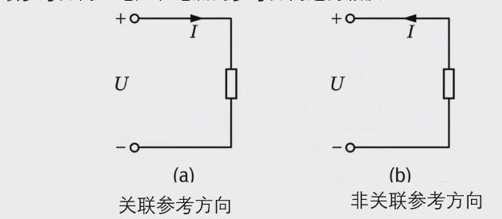
关联与非关联参考方向。(a)
电流从电压“+”端流入元件：关联；(b)
电流从“+”端流出：非关联。
定义 4 · 关联参考方向
电流参考方向从电压参考“+”端流入、从“−”端流出，称电压与电流取关联参考方向 ； 反之称非关联参考方向 。 电路图上只标了电压或只标了电流中的一个时，约定另一个按关联方向理解。
一个电路 有两个引出 端，而且从一端流入的电流 等于从另一端流出 的电流，这两个端钮 就构成一个端口 ，这样的电路 称为一端口电路 （二端网络 ）。每个二端元件 都是一个端口 ，“关联”“非关联 ”是对端口而言 的。
2.2 功率
例 4 · 同一支路的四种参考方向
电阻
R = 5 Ω R=5\ \Omega U s = 10 U_s=10 按下图四种方式 选择端电压
U U 电流
I I 参考方向 ，(a)(b) 中
I = − 1 I=-1 I = 1 I=1 端电压 与电流的关系，并求 这个一端口 的功率。（教材 例 2.1.2）
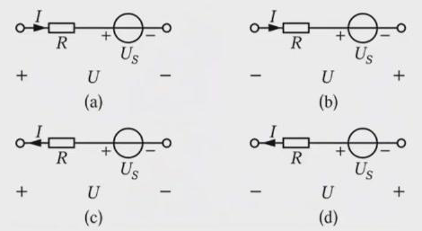
四种参考方向：电压源都是左“+”右“−”；(a)(b)
电流箭头向右，(c)(d) 向左；(a)(c) 端电压左“+”，(b)(d)
右“+”。
解。 先判断关联关系：(a) 电流 从“+”端流入 ，关联；(b)
电流 从“−”端流入 ，非关联 ；(c) 电流 从“+”端流出 ，非关联 ；(d)
电流 从右端“+”流入，关联。
(a)
U = R I + U s = 5 × ( − 1 ) + 10 = 5 U=RI+U_s=5\times(-1)+10=5 P = U I = − 5 P=UI=-5 吸收
− 5 -5 发出 5 W。
(b)
U = − R I − U s = 5 − 10 = − 5 U=-RI-U_s=5-10=-5 P = U I = 5 P=UI=5 发出 5 W。
(c)
U = − R I + U s = − 5 + 10 = 5 U=-RI+U_s=-5+10=5 P = U I = 5 P=UI=5
(d)
U = R I − U s = 5 − 10 = − 5 U=RI-U_s=5-10=-5 P = U I = − 5 P=UI=-5 − 5 -5 发出 5 W。
四个一端口是同一个电路 ：方程 的形式和中间量的正负号 都变了，“这个一端口 向外发出
5 W”这一结论不变 。
例 4
用到的规则来自功率的定义 。在关联参考方向 下，单位 时间内电场力 推动电荷 穿过元件 所做的功为
p = d w d t = d w d q ⋅ d q d t = u i , p=\frac{dw}{dt}=\frac{dw}{dq}\cdot\frac{dq}{dt}=ui , 这个
p p 吸收 的功率。非关联参考方向 下电流反号，同一个元件吸收 的功率是
− u i -ui
结论 1 · 功率属性的判断规则
(1) 关联参考方向下
p = u i p=ui p > 0 p>0 p < 0 p<0
(2) 非关联参考方向下
p = u i p=ui p > 0 p>0 p < 0 p<0
(3)
对整个闭合电路，所有元件吸收功率的代数和为零：∑ p 吸收 = 0 \sum p_{\text{吸收}}=0 功率平衡 ）。
第 (3)
条是能量守恒 ，也是检查计算结果最好的办法 。不要把“电源”和“发出功率”画等号：电池被充电时吸收功率，电容、电感在储能与释能之间来回切换。 功率属性 看的是当时的
u u i i 参考 关系，与元件的名称无关 。
习题 2 · 三个电路中元件的功率属性
练习 · 先独立作答
计算下图各电路中每个元件的功率，并指出是吸收还是发出。 (a) 电压源
U s = 5 U_s=5 I = 1 I=1 流出 ；(b) 电流源
I s = 2 I_s=2 向下 流过，其端电压
U = 5 U=5 电压源
U U 电阻
R R 回路 ，电流
I I 电压源 “+”端流出 ，顺时针流经
R R
习题 2.2 的三个电路
(a)(b)(c)。
提示 · 先判断关联还是非关联
看电流 是从电压“+”端流入还是流出 。关联时
U I UI 吸收功率 ，非关联时
U I UI 发出功率 。
解析
(a)
电流 从“+”端流出 ，非关联 。P = U s I = 5 × 1 = 5 P=U_sI=5\times1=5 发出 5 W。
(b) 电流 2 A
从“+”端流入 ，关联。P = U I s = 5 × 2 = 10 P=UI_s=5\times2=10 吸收 10
W。电流源 也可以吸收功率 ，这时它在别的电源 带动下充当负载 。
(c) 对电压源 ，电流 从“+”端流出 ，非关联 ，发出
U I UI 电阻 ，电流 从上端（电位 高的一端）流入，关联，吸收
U I = U 2 / R UI=U^2/R 两者 相等，功率平衡 。
更多课本习题 · 1 道
习题 2.1
按图中所标参考方向 写出各元件电压 与电流的关系：先判断关联 与否，关联时电阻
u = R i u=Ri 关联时
u = − R i u=-Ri 电源支路 像例
4 一样沿端口 逐段写电压 降。
3 电阻、电容、电感
以下都采用关联参考方向 、线性非时变 参数，R , C , L > 0 R,C,L>0 过原点的直线 ，“非时变 ”指这条曲线不随时间改变 ，两者是独立的分类维度 。
3.1 由电流波形求三种元件的电压
例 5 · 分段电流驱动 RLC 串联支路
电阻、电感、电容与电流源串联，R = 10 Ω R=10\ \Omega L = 10 L=10 C = 0.1 C=0.1 电流波形：0 ∼ 1 0\sim1 1 ∼ 2 1\sim2 线性 上升到 2
A，2 ∼ 3 2\sim3 线性 下降到零，之后为零。求
t > 0 t>0 元件 的电压。（教材 例 2.3.1）
RLC 与电流源串联，电流
i s i_s t = 2 t=2
解。
先把波形 写成表达式 （t t i i
i ( t ) = { 0 , 0 ≤ t < 1 , 2 ( t − 1 ) , 1 ≤ t < 2 , − 2 ( t − 3 ) , 2 ≤ t < 3 , 0 , t ≥ 3 . i(t)=\begin{cases}0,&0\le t<1,\\2(t-1),&1\le t<2,\\-2(t-3),&2\le t<3,\\0,&t\ge3.\end{cases} 三种元件 分别对应 三种运算：电阻看电流本身 ，电感看电流的斜率 ，电容看电流的累积面积 （三个公式 在下面给出 ）。
1 ≤ t ≤ 2 1\le t\le2
u R = R i = ( 20 t − 20 ) V , u L = L d i d t = 0.01 × 2 = 0.02 V , u C = 1 C ∫ 1 t 2 ( ξ − 1 ) d ξ = 10 ( t − 1 ) 2 V . u_R=Ri=(20t-20)\ \text{V},\qquad u_L=L\frac{di}{dt}=0.01\times2=0.02\ \text{V},\qquad u_C=\frac1C\int_1^t2(\xi-1)\,d\xi=10(t-1)^2\ \text{V}. t = 2 t=2 u C ( 2 ) = 10 u_C(2)=10 初值 。
2 ≤ t ≤ 3 2\le t\le3
u R = − 20 ( t − 3 ) V , u L = − 0.02 V , u C = 10 + 1 0.1 ∫ 2 t [ − 2 ( ξ − 3 ) ] d ξ = ( − 10 t 2 + 60 t − 70 ) V . u_R=-20(t-3)\ \text{V},\qquad u_L=-0.02\ \text{V},\qquad u_C=10+\frac1{0.1}\int_2^t\left[-2(\xi-3)\right]d\xi=\left(-10t^2+60t-70\right)\ \text{V}. t ≥ 3 t\ge3 电流 为零，u R = u L = 0 u_R=u_L=0 u C = u C ( 3 ) = 20 u_C=u_C(3)=20 不变 。
检查。 三角形面积（总电荷 ）为
1 2 × 2 × 2 = 2 \frac12\times2\times2=2 Δ u C = Q / C = 20 \Delta u_C=Q/C=20 吻合 。最终电容储能
1 2 × 0.1 × 20 2 = 20 \frac12\times0.1\times20^2=20 电阻 耗能
R ∫ i 2 d t = 10 × 8 3 = 80 3 R\int i^2dt=10\times\frac83=\frac{80}3 电感 最终储能为零，所以电流源 共提供
140 3 \frac{140}{3}
从结果 读出三种元件 的性格：
(1) 电阻电压 与电流同形，只与当时的电流 有关。
(2) 电感电压 在上升段为
+ 0.02 +0.02 下降段 为
− 0.02 -0.02 参考方向 没有变，电压的实际方向 在
t = 2 t=2 斜率变号 。电流 处处连续，只是斜率 跳变，所以电感电压只是有限的跳变 。
(3)
电容电压在第二段仍在上升 ：电流 在减小，但仍为正，d u C / d t = i / C > 0 du_C/dt=i/C>0 t > 3 t>3 电流 为零，电容 仍保持 20 V，这就是记忆 。
下面把三个公式 逐一讲清 。
定义 5 · 线性电阻
电压与电流满足欧姆定律
u = R i u=Ri R R 其倒数
G = 1 / R G=1/R i = G u i=Gu
线性电阻 的功率
p = R i 2 = u 2 / R ≥ 0 p=Ri^2=u^2/R\ge0 始终耗能 ；u ( t ) u(t) 时刻 的
i ( t ) i(t) 无记忆 的。白炽灯 、二极管的伏安特性 不是直线 ，属于非线性电阻 。
定义 6 · 线性电容
电荷与电压成正比
q = C u q=Cu C C 关联参考方向下
i = d q / d t i=dq/dt
i C = C d u C d t , u C ( t ) = u C ( t 0 ) + 1 C ∫ t 0 t i C ( ξ ) d ξ . i_C=C\frac{du_C}{dt},\qquad u_C(t)=u_C(t_0)+\frac1C\int_{t_0}^{t}i_C(\xi)\,d\xi .
电流 与电压的变化率成正比 ：电压恒定时 电流为零，稳恒直流 下电容相当于 开路 （隔直 ）。积分 式说明
t t 时刻 的电压还取决于初值
u C ( t 0 ) u_C(t_0) 过去全部电流的累积 ，电容是记忆元件 ，记住的是电压 ；电流有限时电容电压不能突变 。
从
t 0 t_0 t t 吸收 的能量
W C = ∫ t 0 t u C C d u C d ξ d ξ = 1 2 C [ u C 2 ( t ) − u C 2 ( t 0 ) ] , W_C=\int_{t_0}^{t}u_C\,C\frac{du_C}{d\xi}\,d\xi=\frac12C\left[u_C^2(t)-u_C^2(t_0)\right], 取
u C ( t 0 ) = 0 u_C(t_0)=0 储能
W C = 1 2 C u C 2 W_C=\frac12Cu_C^2 当前电压 决定，电容本身不消耗能量 。i C < 0 i_C<0 u C i C < 0 u_Ci_C<0
定义 7 · 线性电感
线圈的磁链（单位韦伯 Wb）与电流成正比
ψ = L i \psi=Li L L 关联参考方向下
u = d ψ / d t u=d\psi/dt
u L = L d i L d t , i L ( t ) = i L ( t 0 ) + 1 L ∫ t 0 t u L ( ξ ) d ξ . u_L=L\frac{di_L}{dt},\qquad i_L(t)=i_L(t_0)+\frac1L\int_{t_0}^{t}u_L(\xi)\,d\xi .
电流恒定时 电压为零，稳恒直流 下电感相当于 短路 （通直 ）；电感记住的是电流 ，有限电压下电感电流不能突变，储能
W L = 1 2 L i L 2 W_L=\frac12Li_L^2
光电中的四个应用。 (1)
i = C d u / d t i=C\,du/dt 电容 上加一个上升 很快的电压阶跃 ，得到很大的电流脉冲 ，用来 驱动激光器产生 陡峭的电流沿 。(2)
W = 1 2 C u 2 W=\frac12Cu^2 极短时间 内送给氙灯。 (3)
探测器偏置电路 中的电感 对直流相当于导线 ，对快速变化的信号产生 很大的电压 ，把信号挡在偏置电源之外 。(4)
激光器 和 LED
怕电流尖峰 ，驱动回路 串一个电感 ，电流 一旦变化很快，L d i / d t L\,di/dt 电压 ，抑制浪涌 。
元件
关联方向下的伏安关系
反过来的形式
储能
稳恒直流时
记忆
电阻
u = R i u=Ri i = G u i=Gu 不储能，p = R i 2 ≥ 0 p=Ri^2\ge0
仍是电阻
无
电容
i = C d u d t i=C\,\dfrac{du}{dt} u = u ( t 0 ) + 1 C ∫ t 0 t i d ξ u=u(t_0)+\dfrac1C\displaystyle\int_{t_0}^t i\,d\xi 1 2 C u 2 \dfrac12Cu^2 开路
记电压
电感
u = L d i d t u=L\,\dfrac{di}{dt} i = i ( t 0 ) + 1 L ∫ t 0 t u d ξ i=i(t_0)+\dfrac1L\displaystyle\int_{t_0}^t u\,d\xi 1 2 L i 2 \dfrac12Li^2 短路
记电流
电容 和电感的公式 互为对偶 ：把
u ↔ i u\leftrightarrow i C ↔ L C\leftrightarrow L 元件 的关系就变成 另一个的。
易错 · 三个常见错误
(1)
非关联参考方向下公式要加负号：i C = − C d u C / d t i_C=-C\,du_C/dt u L = − L d i L / d t u_L=-L\,di_L/dt
(2)
“开路”“短路”只在稳恒直流 状态下成立，不能用来替换刚接通或刚断开时的暂态过程 。
(3)
参数 随时间变化时要用乘积法则 ：i = d ( C u ) d t = C d u d t + u d C d t i=\dfrac{d(Cu)}{dt}=C\dfrac{du}{dt}+u\dfrac{dC}{dt}
习题 3 · 由电容电压波形求电流与功率
练习 · 先独立作答
C = 2 μ C=2\ \mu 0 ∼ 1 0\sim1 线性 升到 10
V，1 ∼ 3 1\sim3 3 ∼ 5 3\sim5 线性 降到
0。求各段电流 ；t = 2 t=2 储能 ；t = 0.5 t=0.5 t = 4 t=4 吸收 的功率。
提示 · 电流看斜率
毫秒要换成 秒。功率
p = u i p=ui 正负 说明在储能 还是释能。
解析
斜率 依次为
10 4 10^4 − 5 × 10 3 -5\times10^3 电流 依次为
20 20 − 10 -10
t = 2 t=2 W = 1 2 × 2 × 10 − 6 × 10 2 = 100 μ W=\frac12\times2\times10^{-6}\times10^2=100\ \mu
t = 0.5 t=0.5 u = 5 u=5 p = 5 × 0.02 = 0.1 p=5\times0.02=0.1 t = 4 t=4 u = 5 u=5 p = 5 × ( − 0.01 ) = − 0.05 p=5\times(-0.01)=-0.05 1 ∼ 3 1\sim3 电压 10 V 而电流为零：电压 不为零时电流 也可以为零。
更多课本习题 · 1 道
习题 2.3
判断几种信号波形 属于直流 、交流 还是一般时变信号 ：直流 不随时间变；交流 是周期变化且一个周期 内平均值为零；其余是一般时变信号 。小写
u ( t ) u(t)
4 独立电源与受控电源
电阻、电容、电感都是无源元件 ，本身不产生电能 。电路中的能量来自电源 。独立电源 的输出由自身决定；受控电源 的输出受电路中别处 的电压或电流控制。
4.1 理想电源与实际电源
例 6 · 实际电压源带不同负载
一个电池的空载电压为 12 V，内阻
r = 0.5 Ω r=0.5\ \Omega 分别接
R L = 5.5 Ω R_L=5.5\ \Omega R L = 0.5 Ω R_L=0.5\ \Omega 负载 ，求负载电流 、端电压 和负载功率；若把两端直接短路 ，电流 多大？
解。 模型是理想电压源
U s = 12 U_s=12 串联内阻
r r 端电压
U = U s − r I U=U_s-rI
R L = 5.5 Ω R_L=5.5\ \Omega I = 12 0.5 + 5.5 = 2 I=\dfrac{12}{0.5+5.5}=2 U = 12 − 1 = 11 U=12-1=11 P L = 22 P_L=22
R L = 0.5 Ω R_L=0.5\ \Omega I = 12 1 = 12 I=\dfrac{12}{1}=12 U = 6 U=6 P L = 72 P_L=72
短路：I = U s / r = 24 I=U_s/r=24 端电压 为零，全部功率 288 W 消耗在内阻上 ，电池 发热，可能损坏 。
例 6 的端电压 随负载变化 ，原因是内阻 。把内阻 去掉就得到理想电压源 。
定义 8 · 理想电压源
为外电路提供确定的电压
u = u s ( t ) u=u_s(t) 与流过它的电流无关 ； 流过它的电流由外电路决定 。
“独立”不等于 “恒定”：u s ( t ) u_s(t) 理想电压源 的伏安特性（U U I I 水平线
U = U s U=U_s 非零的理想电压源不能短路 ：短路要求端电压为零，与
U = U s ≠ 0 U=U_s\ne0 U = U s − r I U=U_s-rI 特性 是斜向下的直线 ，内阻越小越好 。信号发生器 的输出端口 通常标注内阻
50 Ω，驱动低阻负载 时要考虑 这部分分压 。
定义 9 · 理想电流源
为外电路提供确定的电流
i = i s ( t ) i=i_s(t) 与两端电压无关 ； 两端电压由外电路决定。
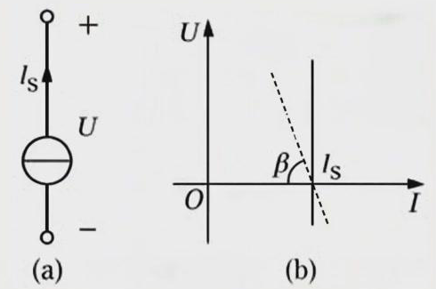
(a) 理想电流源的符号与参考方向；(b)
伏安特性：实线为理想电流源
I = I s I=I_s β \beta
符号 是圆圈内一条 与电流方向垂直的横线 （电压源 圆圈内是连通 线），箭头 表示
i s i_s 方向 。接负载
R R 时端电压
U = R I s U=RI_s R R 增大 而增大。非零的理想电流源不能开路。
实际电流源是理想电流源并联 内阻
r r
实际电流源：理想电流源
I s I_s r r I I U U
由节点电流 关系
I = I s − U / r I=I_s-U/r 端电压 越高，内阻分流越多 ，输出 越小。接负载
R L R_L I = r r + R L I s I=\dfrac{r}{r+R_L}I_s 电流源的内阻越大越好 ，与电压源相反 。
易错 · 比较电流时先说清是哪一支电流
实际电流源外部开路时，外部电流为零，I s I_s 准确的说法 是：负载电阻 越小，负载 得到的电流 越接近
I s I_s 负载电阻 越大，输出电流 越小，端电压 越高。
实验室直流 稳压电源有两种模式 ：恒压模式 （CV）近似电压源 ，恒流模式 （CC）近似电流源 。说明书里的负载调节率 （例如电压
<0.1%+5 mV）说明负载从空载变到满载时输出的变化量：恒压 12 V
时电压可能变化
12 × 0.1 % + 0.005 = 0.017 12\times0.1\%+0.005=0.017 都不是理想源 。 线性电源纹波小、成本 高，适合 模拟和光电 测量；开关电源 纹波大、效率高 ，一般数字电路 用它即可。
习题 4 · 实际电流源带不同负载
练习 · 先独立作答
实际电流源
I s = 10 I_s=10 r = 5 r=5 分别接
R L = 1 R_L=1 R L = 20 R_L=20 负载 ，求负载 电流和端电压 ；要使负载电流 不低于
0.95 I s 0.95I_s 负载电阻 最大为多少？
提示 · 分流公式
I = r r + R L I s I=\dfrac{r}{r+R_L}I_s I = I s − U / r I=I_s-U/r
解析
R L = 1 R_L=1 I = 5 6 × 10 = 8.33 I=\dfrac56\times10=8.33 U = 8.33 U=8.33 内阻分流 1.67 mA。
R L = 20 R_L=20 I = 5 25 × 10 = 2 I=\dfrac{5}{25}\times10=2 U = 40 U=40 内阻分流 8 mA。
要求
r r + R L ≥ 0.95 \dfrac{r}{r+R_L}\ge0.95 R L ≤ r 19 ≈ 263 Ω R_L\le\dfrac{r}{19}\approx263\ \Omega 实际电流 源只有在负载 远小于内阻时 才接近理想电流源 。
4.2 受控电源
例 7 · 求 CCCS 负载上的电压
图示电路中，独立电压源
U s = 10 U_s=10 R 1 = 100 Ω R_1=100\ \Omega R 2 = 50 Ω R_2=50\ \Omega α I 1 \alpha I_1 α = 0.9 \alpha=0.9 求
U 2 U_2 教材 例
2.3.2）
左边：U s U_s R 1 R_1 I 1 I_1 α I 1 \alpha I_1 R 2 R_2 U 2 U_2 R 2 R_2
解。 先求控制量，再求受控量：
I 1 = U s R 1 = 0.1 A , I 2 = α I 1 = 0.09 A , U 2 = R 2 I 2 = 4.5 V . I_1=\frac{U_s}{R_1}=0.1\ \text{A},\qquad I_2=\alpha I_1=0.09\ \text{A},\qquad U_2=R_2I_2=4.5\ \text{V}. 本题控制量 在一个独立 回路中可以直接求出；一般情形 要把
I 2 = α I 1 I_2=\alpha I_1 附加方程 ，与 KCL、KVL 联立。
例 7 右边的电源输出
0.9 I 1 0.9I_1 自己不能决定 输出多少，它就是受控源。
定义 10 · 受控源
输出电压或输出电流受电路中其他支路的电压或电流控制的电源，称为受控源 。 它有两个端口：输入端口是控制量所在的支路，输出端口是受控的电压源或电流源。
类型
英文缩写
关系
系数名称与量纲
电压控制电流源
VCCS
i 2 = g u 1 i_2=gu_1 g g
电压控制电压源
VCVS
u 2 = μ u 1 u_2=\mu u_1 μ \mu
电流控制电压源
CCVS
u 2 = r i 1 u_2=ri_1 r r
电流控制电流源
CCCS
i 2 = α i 1 i_2=\alpha i_1 α \alpha
缩写的第一个字母 是控制量（V = Voltage，C = Current），第二个 C 是
Controlled，第三个字母 是被控量，S 是 Source。
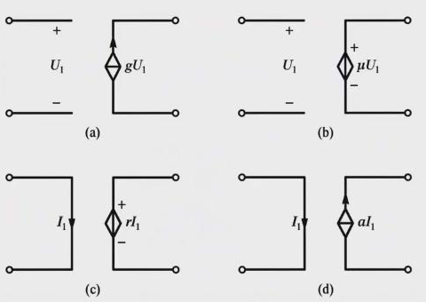
四种受控源（a）VCCS、（b）VCVS、（c）CCVS、（d）CCCS。受控源用菱形表示；菱形内是横线的为受控电流源，带“+”“−”的为受控电压源。
独立 源画圆形，受控源画菱形 。控制量 是电压时，输入端口 是开路端钮间的电压 ；控制量 是电流时，是短路线 上的电流，所以理想受控源 的输入端口 不消耗功率 。受控源不能单独作为激励 ：所有独立源置零后，控制量通常也为零，受控源的输出随之为零 。
受控源不是纯粹的数学构造 。三极管工作在放大区 时，集电极电流 受基极电流控制 ，i c ≈ β i b i_c\approx\beta i_b u c e u_{ce} 模型 就是一个 CCCS。
(a) 三极管，基极电流
i b i_b i c i_c i b i_b i c i_c i c = β i b i_c=\beta i_b
特性曲线在
u c e u_{ce} 不在放大区 ，CCCS 模型不成立。 教材 2.3.6
节还介绍 了多端元件和二端口 电阻元件（用电阻参数矩阵 描述两个端口 的电压电流关系），课堂 没有展开，这里只记住 ：受控源就是最简单的二端口元件 。
习题 5 · 含 VCVS 的电路与功率平衡
练习 · 先独立作答
输入回路：U s = 6 U_s=6 R 1 = 2 Ω R_1=2\ \Omega R 2 = 4 Ω R_2=4\ \Omega U 1 U_1 R 2 R_2 输出回路：VCVS
μ U 1 \mu U_1 μ = 3 \mu=3 R o = 1 Ω R_o=1\ \Omega 负载
R L = 5 Ω R_L=5\ \Omega 回路 之间没有导线 相连。求
U 1 U_1 电压
U L U_L 发出 的功率；若
U s U_s 结果 如何？
提示 · 先在输入回路求控制量
两个回路 没有导线 连接，只通过控制关系 联系。
解析
U 1 = U s R 2 R 1 + R 2 = 4 U_1=U_s\dfrac{R_2}{R_1+R_2}=4 电压
μ U 1 = 12 \mu U_1=12 电流
I = 12 1 + 5 = 2 I=\dfrac{12}{1+5}=2 U L = 10 U_L=10 12 × 2 = 24 12\times2=24 R o R_o 回路 中
U s U_s 6 × 1 = 6 6\times1=6 R 1 R_1 R 2 R_2
负载 得到的 20 W 大于输入回路 的 6
W：受控源 在模型里确实 能“提供”功率，这部分能量在实际器件 中来自放大器的直流电源 。U s = 0 U_s=0 U 1 = 0 U_1=0 受控源 输出为零，所有电压电流 为零。
5 基尔霍夫定律
元件约束 说明每个元件 自身的规律；连接方式 带来的约束只与电路 “怎样连 ”有关，与元件是什么无关 。基尔霍夫定律 （1845
年）给出 的就是这种约束 ，包括电流定律 （KCL）和电压定律 （KVL），它是后面所有分析方法的基础 。
5.1 电路的拓扑与 KCL
例 8 · 求中间短接线上的电流
图示电路中，U s 1 = 6 U_{s1}=6 U s 2 = 8 U_{s2}=8 R 1 = 3 Ω R_1=3\ \Omega R 2 = 4 Ω R_2=4\ \Omega R = 14 Ω R=14\ \Omega I 21 I_{21} （教材 例
2.4.1）
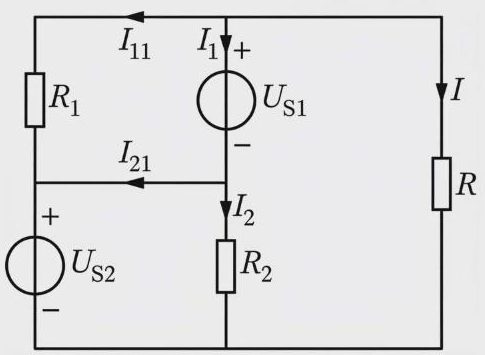
上方导线为节点
T，左中节点与中间节点由一段导线相连（电流
I 21 I_{21} U s 1 U_{s1} U s 2 U_{s2}
解。
I 21 I_{21} 导线 上，导线本身没有伏安关系 ，只能靠 “流进节点 的电流等于流出 的电流”求。对中间节点 ：I 21 = I 1 − I 2 I_{21}=I_1-I_2 节点 ：I 1 = − I 11 − I I_1=-I_{11}-I 先求
I I I 2 I_2 I 11 I_{11}
(1) 外回路 由
U s 1 U_{s1} U s 2 U_{s2} R R 顺时针 绕行一周，电阻上的电压降 等于两个电源电动势 之和：14 I = 6 + 8 14I=6+8 I = 1 I=1
(2)
R 2 R_2 U s 2 U_{s2} I 2 = U s 2 / R 2 = 2 I_2=U_{s2}/R_2=2 R 1 R_1 U s 1 U_{s1} I 11 = U s 1 / R 1 = 2 I_{11}=U_{s1}/R_1=2
于是
I 1 = − I 11 − I = − 3 I_1=-I_{11}-I=-3 I 21 = I 1 − I 2 = − 5 I_{21}=I_1-I_2=-5 实际电流 5 A 沿导线 从左流向右。
功率平衡检查。 设 B 点电位为零，则中间节点电位 8
V，上方节点 14
V。U s 1 U_{s1} 电流
I 1 = − 3 I_1=-3 参考 流入，吸收
6 × ( − 3 ) = − 18 6\times(-3)=-18 节点 的电流关系，U s 2 U_{s2} 电流 为
− ( I 2 + I ) = − 3 -(I_2+I)=-3 − 24 -24 吸收
6 × 2 + 8 × 2 + 14 × 1 = 42 6\times2+8\times2+14\times1=42 42 − 18 − 24 = 0 42-18-24=0 平衡 。
例 8
用了两种约束 ：节点处电流 的进出关系，和回路 一周的电压 关系。先把“节点”“回路”这些名词说清楚 。
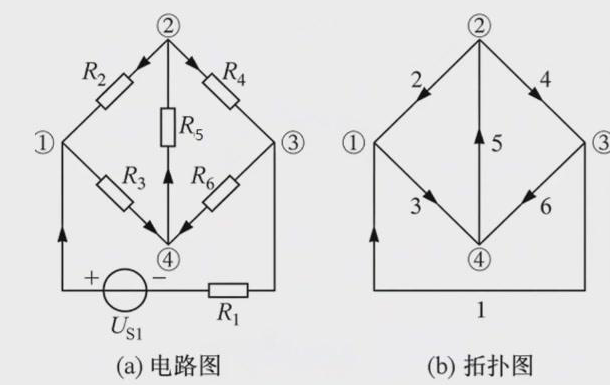
(a) 电路图：6 条支路、4 个节点；(b)
对应的拓扑图，支路编号 1—6，箭头为支路电流的参考方向。
定义 11 · 支路、节点、回路、网孔
(1)
支路 ：单个或若干个元件串联组成的分支，同一支路中各元件流过的电流相等。
(2) 节点 ：三条或三条以上支路的连接点。
(3) 回路 ：由若干支路组成的闭合路径。
(4) 网孔 ：内部不含其他支路的回路。
对照上图
(a)：U s 1 U_{s1} R 1 R_1 分岔 ，仍是一条 支路，共 6
条支路 ；R 2 R_2 R 3 R_3 导线拐角不是节点 。R 2 R 4 R 6 R 3 R_2R_4R_6R_3 回路 ，但内部有
R 5 R_5 网孔 。把每条支路 画成线段 、节点 画成点，只保留 连接关系，得到拓扑图 ；支路标上电流参考方向 后称为有向图 。
定理 1 · 基尔霍夫电流定律（KCL）
在集总参数电路中，任一时刻流出任一节点的支路电流之和等于流入该节点的支路电流之和，即流经任一节点的支路电流代数和为零：
证明。 集总条件 (1)
要求节点 上电荷的变化率 在任何时刻为零。节点 上电荷的变化率 等于流入的电流 减去流出 的电流，所以两者 相等。KCL
是电荷守恒 的表现，不是能量守恒 。
列方程前先约定符号，例如流出为正 、流入为负。 对上面拓扑图，按流出为正 ：
节点 1: − i 1 − i 2 + i 3 = 0 , 节点 2: i 2 + i 4 − i 5 = 0 , \text{节点 1: }-i_1-i_2+i_3=0,\qquad\text{节点 2: }i_2+i_4-i_5=0, 节点 3: − i 4 + i 1 + i 6 = 0 , 节点 4: − i 3 + i 5 − i 6 = 0 . \text{节点 3: }-i_4+i_1+i_6=0,\qquad\text{节点 4: }-i_3+i_5-i_6=0 . KCL 的推广。
电荷守恒对任何闭合面 都成立：流出 任一闭合面 的支路电流代数和 为零。用闭合面把节点
②、④ 连同支路 5 一起包起来，支路 5 的电流 在面内进出抵消，得
i 2 + i 4 − i 3 − i 6 = 0 i_2+i_4-i_3-i_6=0 节点
2、4
两个方程 相加。一个常用推论 ：如果一部分电路与其余部分只通过一条支路相连，这条支路的电流必为零 。
习题 6 · 求各支路电流与各节点电位
练习 · 先独立作答
求下图各支路电流
I 1 I_1 I 6 I_6 d 点接地（电位 为零）；b 与 d 之间除经过 1 Ω、2 Ω
的上方支路 外，还有 一根导线 直接相连；4 V 源上“−”下“+”，2 V
源上“+”下“−”，7 V 源左“+”右“−”，6 V 源上“+”下“−”，5 A 电流源 由 e 指向
f。（作业 2.16）
习题 2.16 的电路。
提示 · 两个“零电流”
(1) b、d 被导线 短接，1 Ω 与 2 Ω 串联支路 两端电压为零。(2)
用一个闭合面 包住 e、f、g 所在的右半部分：它与左半部分只通过
I 5 I_5 一条 支路相连。
解析
左半部分。 b、d 同电位 ，1 Ω、2 Ω
支路 两端电压为零，I 1 = 0 I_1=0 φ c = φ b = φ d = 0 \varphi_c=\varphi_b=\varphi_d=0 φ a = 4 \varphi_a=4 I 2 I_2 I 2 = ( φ b − φ a ) / 2 = − 2 I_2=(\varphi_b-\varphi_a)/2=-2 源支路 （I 4 I_4 φ d − 2 I 4 − 2 = φ a \varphi_d-2I_4-2=\varphi_a I 4 = − 3 I_4=-3 节点 a 的
KCL：I 2 + I 3 + I 4 = 0 I_2+I_3+I_4=0 I 3 = 5 I_3=5
右半部分。 闭合面只截到
I 5 I_5 一条 支路，I 5 = 0 I_5=0 电流源 的电流只能在 e→f→g→e
回路 中循环，I 6 = 5 I_6=5 电流 ，φ e = − 7 \varphi_e=-7 电流 5 A 从 g 经 2 Ω 流向
e，φ g = φ e + 10 = 3 \varphi_g=\varphi_e+10=3 电流 从 f 向下流经 2 Ω 再到 6 V
源“+”端，φ f = φ g + 6 + 10 = 19 \varphi_f=\varphi_g+6+10=19
量
I 1 I_1 I 2 I_2 I 3 I_3 I 4 I_4 I 5 I_5 I 6 I_6
值 / A
0
− 2 -2 5
− 3 -3 0
5
节点
a
b
c
d
e
f
g
电位 / V
4
0
0
0
− 7 -7 19
3
5.2 KVL 与两点间电压
例 9 · 沿路径求端电压
U a d U_{ad}
图示电路由三段串接而成，R 1 = R 2 = R 3 = 10 Ω R_1=R_2=R_3=10\ \Omega U s 1 = U s 2 = U s 3 = 12 U_{s1}=U_{s2}=U_{s3}=12 I s 1 = 1 I_{s1}=1 I s 2 = 2 I_{s2}=2 I s 3 = 3 I_{s3}=3 U a d U_{ad} （教材 例
2.4.2）
三段电路从上到下串接：a–b 段、b–c 段、c–d
段各由一个电压源串电阻，与一个电流源并联构成。U 1 U_1 U 3 U_3 U 2 U_2
解。 a、d
两端开路 ，段与段之间的连线 上没有电流 ，每一段内部电流源 的电流全部流过 同段的电压源 和电阻支路。沿
a→b→c→d
取电压 降：U a d = U 1 − U 2 + U 3 U_{ad}=U_1-U_2+U_3 U 2 U_2 参考方向 与 a→d 相反，取负）。
a–b
段：I s 1 I_{s1} 电流 沿左支路 向下流过
U s 1 U_{s1} R 1 R_1 U 1 = U s 1 + I s 1 R 1 = 22 U_1=U_{s1}+I_{s1}R_1=22
b–c
段：I s 2 I_{s2} 电流 沿左支路 向下流过
U s 2 U_{s2} R 2 R_2 I 2 I_2 参考方向 与实际电流相反 ，I 2 = − 2 I_2=-2 U 2 = I 2 R 2 + U s 2 = − 8 U_2=I_2R_2+U_{s2}=-8
c–d
段：I s 3 I_{s3} 电流 沿左支路 向上流过
R 3 R_3 U s 3 U_{s3} U 3 = U s 3 − I s 3 R 3 = − 18 U_3=U_{s3}-I_{s3}R_3=-18
U a d = 22 − ( − 8 ) + ( − 18 ) = 12 V . U_{ad}=22-(-8)+(-18)=12\ \text{V}. 每一段的电压 都沿左支路 写；沿右边的电流源 走也可以，但电流源 的端电压未知 ，写不出来 。沿路径求电压时，要选电压能写出来的那条路。
例 10 · RLC 串联电路的电流方程
R、L、C 与电压源
u s ( t ) = cos t u_s(t)=\cos t i i （教材 例 2.4.4）
解。
沿回路 顺时针绕行，u R + u L + u C − u s = 0 u_R+u_L+u_C-u_s=0 代入元件 关系：
R i + L d i d t + u C ( 0 ) + 1 C ∫ 0 t i d ξ = cos t . Ri+L\frac{di}{dt}+u_C(0)+\frac1C\int_0^t i\,d\xi=\cos t . 两边对时间求导 ，消去积分 ：
L d 2 i d t 2 + R d i d t + 1 C i = − sin t . L\frac{d^2i}{dt^2}+R\frac{di}{dt}+\frac1C\,i=-\sin t . 这是二阶线性常系数 微分方程，确定 通解中的两个常数 需要
i ( 0 ) i(0) u C ( 0 ) u_C(0) 两个初始条件 。只给方程不给初始状态，电流不能唯一确定 ，这是元件记忆性 的体现。
例 9 是直流 ，例 10 是时变激励 ，用的都是同一条定律 。
定理 2 · 基尔霍夫电压定律（KVL）
在集总参数电路中，任一时刻沿任一回路，所有支路电压的代数和为零：
证明。 集总条件 (2)
要求与回路 交链的磁链变化率 为零，回路 上没有感应电动势 ，电场在回路 外部是保守 的，电位单值 。从回路 上某点出发 绕行一周回到原点 ，各段电位 降之和等于 终点与起点的电位差 ，即零。
列 KVL 的步骤：(1) 选定回路绕行方向 ； (2)
支路电压参考方向 与绕行方向 一致的取正 ，相反 的取负；(3)
再用元件关系写出每个支路电压，例如
u = R i + U s u=Ri+U_s 电源符号旁的“+”“−”是电源本身的极性，支路电压的参考方向另外标注，两者可以相反。
KVL 还有 两种常用写法：
(1)
沿任一回路 ，电阻上的电压降 代数和等于电压源电动势 代数和：∑ R I = ∑ U s \sum RI=\sum U_s 电阻电流 与绕行方向 一致时
R I RI 电动势方向 （电源 内部由“−”指向“+”）与绕行方向 一致时
U s U_s
(2) 两点 a、b 之间的电压 ，等于 从 a 到 b
沿任意路径 各段电压 降的代数和 。这是电位单值性 的直接表述，例
9 就是这样求的。
习题 7 · 由已知支路电压求其余支路电压
练习 · 先独立作答
下图中已标出若干支路电压：②①之间 2 V（②端为“−”），②⑤之间 8
V（②端为“−”），③④之间 3 V（③端为“+”），④⑤之间 8
V（④端为“+”）。 求待求电压
U 2 U_2 U 3 U_3 U 5 U_5 U 7 U_7
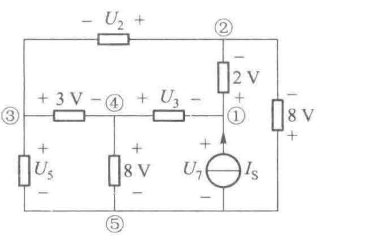
习题 2.5 的电路，节点 ①—⑤。
提示 · 用电位
取 ⑤
为参考点 ，沿已知 电压的支路 依次求出各节点电位 ，任何支路电压 都是两端电位 之差。这等价 于沿路径列
KVL。
解析
设
φ 5 = 0 \varphi_5=0 φ 2 = − 8 \varphi_2=-8 φ 1 = − 6 \varphi_1=-6 φ 4 = 8 \varphi_4=8 φ 3 = 11 \varphi_3=11
U 2 = φ 2 − φ 3 = − 19 V , U 3 = φ 4 − φ 1 = 14 V , U 5 = φ 3 = 11 V , U 7 = φ 1 = − 6 V . U_2=\varphi_2-\varphi_3=-19\ \text{V},\quad U_3=\varphi_4-\varphi_1=14\ \text{V},\quad U_5=\varphi_3=11\ \text{V},\quad U_7=\varphi_1=-6\ \text{V}. 检查：沿回路
③→④→①→②→③，3 + 14 + 2 − 19 = 0 3+14+2-19=0
习题 8 · 含电流源电路的电流与电压
练习 · 先独立作答
求下图电路中的
I 1 I_1 I 2 I_2 U a b U_{ab} 电路元件：左侧
2 Ω 电阻（电流
I 1 I_1 电流源 （向上）；3 V 电压源 （左“+”右“−”，电流
I 2 I_2 电压源 （上“−”下“+”）；14 V 电压源 （上“+”下“−”）；上方 2 Ω、6
Ω 串联，a 为两者连接点 ；5 Ω 接在 b 与右侧节点 之间。（作业 2.9）
习题 2.9 的电路。
提示 · 先找被电压源“钉死”的电位
取底边为参考点 。5 V 电压源 直接给出 b 点电位 ；3 V
电压源 接着给出左侧节点电位 ；14 V 电压源 给出右侧节点电位 。最后用 KCL 求
I 2 I_2
解析
设底边电位 为零，左侧中间节点 为 L，右侧节点 为
R。φ b = − 5 \varphi_b=-5 φ L = φ b + 3 = − 2 \varphi_L=\varphi_b+3=-2 φ R = 14 \varphi_R=14
左侧 2
Ω：I 1 = φ L / 2 = − 1 I_1=\varphi_L/2=-1 串联 于 L、R 之间，从 L 流向 R 的电流
I ′ = ( φ L − φ R ) / 8 = − 2 I'=(\varphi_L-\varphi_R)/8=-2 φ a = φ L − 2 I ′ = 2 \varphi_a=\varphi_L-2I'=2
U a b = φ a − φ b = 7 V . U_{ab}=\varphi_a-\varphi_b=7\ \text{V}. 节点 L 的 KCL：流入电流源 1 A 和
I 2 I_2 I 1 I_1 I ′ I' 1 + I 2 = I 1 + I ′ = − 3 1+I_2=I_1+I'=-3 I 2 = − 4 I_2=-4
更多课本习题 · 7 道
这几道题都只用 KCL、KVL 和欧姆定律 ，方法同例 8、例 9 和习题
6—8：先找被电压源 固定的电位 ，再用电阻 求电流，最后用 KCL 补齐 。
习题 2.4 求各支路电流：对每个节点 列
KCL，已知支路电流代入 后逐个解出。习题 2.6 6 A 电流源与 4 Ω、2 Ω
电阻组成的电路 ：电流源 所在支路电流 已知，用 KCL
求电阻电流 ，再用欧姆定律 求电压。习题 2.7 20 V
电源驱动的电桥 ：沿两条路径 分别写电压 降求两点间电压 。习题 2.8 已知
I 1 = 3 I_1=3 I 2 = 2 I_2=2 I 3 I_3 R 5 R_5 U s U_s I 3 I_3 R 5 R_5 回路 列 KVL。习题 2.11 求各电源功率与
U a b U_{ab} U b c U_{bc} 先求支路电流 ，再按关联 与否判断各电源吸收 还是发出 ，最后用功率平衡 检查。习题 2.12 求 a、b
两点电位 ：选定参考点 后沿路径 累加电压降。习题 2.13
电位器电路 （E 1 = 150 E_1=150 E 2 = 300 E_2=300 R = 150 R=150 滑动 端电位随位置线性 变化，写出端点电位 后按电阻比例插值 。
5.3 含晶体管的电路
例 11 · 晶体管偏置电路
晶体管工作在放大区，I C = β I B I_C=\beta I_B β = 100 \beta=100 U B E = 0.7 U_{BE}=0.7 基极回路由
U s = 5 U_s=5 R b = 215 R_b=215 基极 ，发射极 接地；集电极回路 由
U C C = 15 U_{CC}=15 R c = 5 R_c=5 集电极 。求
I B I_B I C I_C I E I_E U C E U_{CE} 教材 例
2.4.3）
解。 基极回路
KVL：U s = R b I B + U B E U_s=R_bI_B+U_{BE}
I B = 5 − 0.7 215 × 10 3 = 20 μ A , I C = β I B = 2 mA . I_B=\frac{5-0.7}{215\times10^3}=20\ \mu\text{A},\qquad I_C=\beta I_B=2\ \text{mA}. 把晶体管 看成一个广义节点 ，KCL：I E = I B + I C = ( 1 + β ) I B = 2.02 I_E=I_B+I_C=(1+\beta)I_B=2.02
集电极回路
KVL：U C E = U C C − R c I C = 15 − 2 × 5 = 5 U_{CE}=U_{CC}-R_cI_C=15-2\times5=5
例 11 的晶体管 内部怎样工作 并不需要知道 ，只要有
I C = β I B I_C=\beta I_B 条元件 关系，KCL、KVL 照样适用 。这正是第 4 单元把晶体管画成 CCCS
的好处：放大电路的分析就变成含受控源电路的分析，先求控制量，再求受控量 。
习题 9 · 含 VCCS 的放大电路
练习 · 先独立作答
下图是场效应管放大电路的小信号等效电路。 已知
Δ U I = 12 \Delta U_I=12 g m = 1.2 g_m=1.2 R 1 = 20 R_1=20 R 2 = 100 R_2=100 R 3 = 10 R_3=10 R 4 = 20 R_4=20 电流源
g m Δ U G S g_m\Delta U_{GS} 指向
S，Δ U O \Delta U_O R 3 R_3 R 4 R_4 电压 （上“+”下“−”）。求
Δ U O \Delta U_O
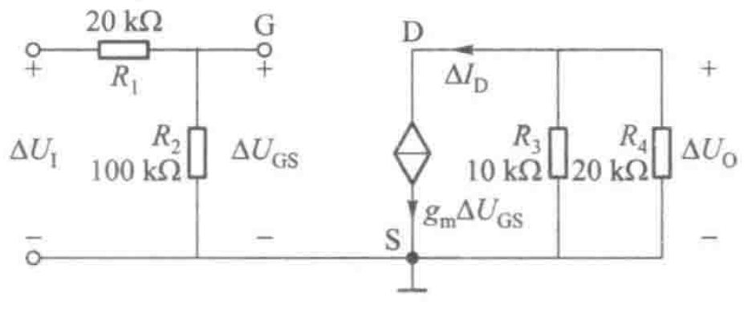
习题 2.21 的电路：输入回路
R 1 R_1 R 2 R_2 Δ U G S \Delta U_{GS} R 3 ∥ R 4 R_3\parallel R_4
提示 · 先求控制量
G
端开路 ，没有电流 流入，R 1 R_1 R 2 R_2 串联 分压。求出
Δ U G S \Delta U_{GS} 电流 在
R 3 ∥ R 4 R_3\parallel R_4 电压方向 。
解析
Δ U G S = R 2 R 1 + R 2 Δ U I = 10 V , g m Δ U G S = 12 mA . \Delta U_{GS}=\frac{R_2}{R_1+R_2}\Delta U_I=10\ \text{V},\qquad g_m\Delta U_{GS}=12\ \text{mA}. 受控电流 从上方节点经电流 源流到 S，流过
R 3 ∥ R 4 R_3\parallel R_4 电流 从下往上，上端电位 低：
R 3 ∥ R 4 = 20 3 k Ω , Δ U O = − 12 mA × 20 3 k Ω = − 80 V . R_3\parallel R_4=\frac{20}{3}\ \text{k}\Omega,\qquad \Delta U_O=-12\ \text{mA}\times\frac{20}{3}\ \text{k}\Omega=-80\ \text{V}. 负号 说明输出与输入反相 ，放大倍数
− 20 / 3 -20/3
更多课本习题 · 7 道
这几道题都含受控源 或晶体管，按例 11
的步骤 ：先求控制量 （基极电流 、控制电压 ），再求 受控量，最后用 KVL
求各电压 。
习题 2.10 含 CCVS
3 U 1 3U_1 电路 ：把
3 U 1 3U_1 电压 写进
KVL，再补 一个“U 1 U_1 电压 ”的方程 。习题 2.14 含 VCVS
μ U g k \mu U_{gk} 等效电路 ：先由输入回路 求
U g k U_{gk} 回路 。习题 2.15 晶体管电路求
u c e u_{ce} u c e = U C C − R c i c u_{ce}=U_{CC}-R_ci_c 习题 2.17
晶体管数字 开关：输入为高电平时 晶体管饱和导通 （u c e ≈ 0 u_{ce}\approx0 低电平时 截止（i c = 0 i_c=0 u c e = U C C u_{ce}=U_{CC} 习题 2.18 分压式偏置电路：已知
U C C = 6 U_{CC}=6 I C = 2 I_C=2 I B = 50 μ I_B=50\ \mu 工作 点数据，由
U C U_C U E U_E 电流 反推各电阻 ，每个电阻 都用“两端电压 ÷ 流过的电流 ”。习题 2.19
放大电路 （i c = 200 i b i_c=200i_b 回路 求
U b U_b i b i_b 回路 求
U c e U_{ce} 习题 2.20
含理想二极管的电路 ：先假设二极管导通 （短路）或截止 （开路），求出电流 或电压后检验 假设是否成立 。
6 独立方程的个数
一个电路 有很多节点 和很多回路，每个都能列
KCL、KVL，但它们并不都独立 ：第 5.1
小节 的四个节点方程 相加恒为零；外回路 的 KVL
也可以由两个内回路 相加得到。多余的方程不提供新信息 ，漏掉独立方程又解不出来 。
结论 2 · 电路分析的两类约束
(1)
元件约束 ：元件本身的电压电流关系，如欧姆定律、i = C d u / d t i=C\,du/dt
(2) 结构约束 ：由连接方式决定，遵循 KCL、KVL。
电路分析就是结合这两类约束 ，建立以支路电压、电流为变量的方程组。
剩下的问题 是：选哪些节点、哪些回路，列几个方程，才恰好独立而且够用。
答案来自图论 。
6.1 树与基本回路
例 12 · 选树、写基本回路
拓扑图有 4 个节点、6 条支路：支路 1 连 ①③，2 连 ①②，3 连 ①④，4 连
②③，5 连 ②④，6 连 ③④（即 5.1 小节的拓扑图）。 选支路 1、2、3
组成一个不含回路 、又把 4 个节点 都连起来的子图 。(1)
剩下的每条支路 ，加上 它两端之间在这个子图 上的路径 ，各组成什么回路 ？(2)
这几个回路 的 KVL 方程是否独立 ？
选支路 1、2、3 为树，连支 4、5、6
各确定一个单连支回路：{1,2,4}、{2,3,5}、{1,3,6}。
解。 (1) 支路 1、2、3 都以 ① 为一端，另一端 分别是
③、②、④。支路 4 连 ②③，子图 上 ② 到 ③ 的路径是 2、1，回路 {1, 2, 4}；支路
5 连 ②④，路径 2、3，回路 {2, 3, 5}；支路 6 连 ③④，路径 1、3，回路 {1, 3,
6}。
(2)
每个回路 各含一条“剩下的支路 ”，而这条支路 不出现在另外两个回路 里。另外两个方程 怎样组合 都消不出 这条支路的电压，所以三个方程相互独立 。
例 12
里的“不含回路 、把节点 都连起来的子图 ”就是树 ，“剩下的支路 ”是连支 。
定义 12 · 平面图与连通图
(1)
平面图 ：能够画在平面上，并且所有支路都可以 没有交叉点的图。
(2)
连通图 ：任意两个节点之间至少有一条由支路构成的路径。
“可以”二字很重要 ：画出来有交叉 ，但能改画成 没有交叉的样子，就是平面图 。
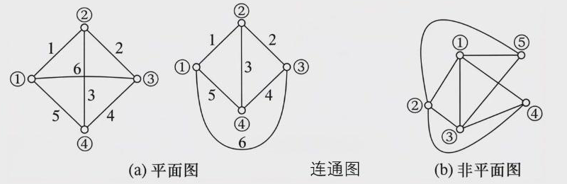
(a)
平面图：左边一张有交叉，改画成中间一张后没有交叉；(b)
非平面图，无论怎样改画都有交叉。
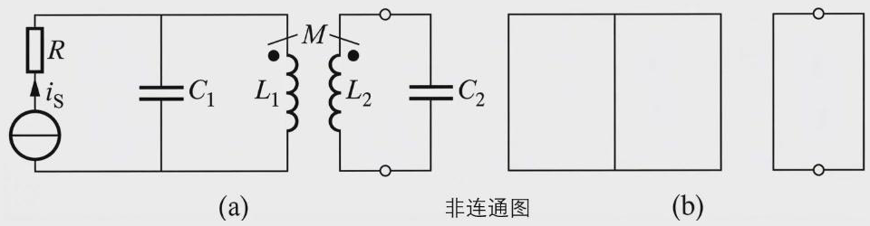
连通与非连通：(a)
中的耦合电感只通过磁场联系，两侧电路没有导线相连，对应的拓扑图 (b)
分成两部分，是非连通图。
定义 13 · 子图、树、树支、连支
(1) 子图 ：图
G 1 G_1 G G G G
(2) 树 ：连通图
G G 包含
G G 不含任何回路。
(3)
树支 ：组成树的支路。 连支 ：不在树上的支路。
图
G G G 1 G_1 G 4 G_4 G 1 G_1 G 2 G_2 G 3 G_3 G 4 G_4
定理 3 · 树支数与连支数
连通图有
n n b b n − 1 n-1 l = b − n + 1 l=b-n+1
证明。
从一个节点 出发，每加一条树支 ，恰好把一个新节点 连进来（若新支路 两端都已在树上，就会形成回路 ）。连进其余
n − 1 n-1 节点 ，正好 需要
n − 1 n-1 树支 。连支 数是剩下的
b − ( n − 1 ) b-(n-1)
定义 14 · 单连支回路（基本回路）
对选定的树，只包含一条 连支、其余都是树支的回路，称为单连支回路，也称基本回路。
每条连支 两端都在树上，树中任意两点之间恰有一条路径 ，所以单连支 回路与连支 一一对应 ，共
b − n + 1 b-n+1
定理 4 · 独立 KVL 方程数
按单连支回路列写的
b − n + 1 b-n+1 b − n + 1 b-n+1
证明。 独立性同例 12
(2)：每个方程含一条 其他方程 都没有的连支 电压。个数不能更多 ：任何回路的
KVL
都能由单连支回路方程组合出来，因为连支电压一旦给定，树支电压由这些方程唯一确定 ，任一回路的电压和随之为零。
对平面电路 还有更直观 的选法：网孔数
m = b − n + 1 m=b-n+1 网孔 也是一组独立 回路，在平面图 上直接数，不必先选树 。网孔 中有电流源时 要小心：电流源 的端电压不由它自身决定 ，是额外的未知量 ，处理方法 在第
8 单元 讲。
习题 10 · 换一棵树
练习 · 先独立作答
对例 12 的拓扑图，选支路 3、5、6 为树。 (1) 验证 它是树；(2)
写出 三个单连支 回路；(3) 独立 KCL、KVL 方程 各有几个？(4)
这个图的网孔 是哪几个？
提示 · 树的三个条件
连通、含全部节点 、无回路 。每条连支 加上它两端之间的树上路径 就是一个单连支 回路。
解析
(1) 支路 3、5、6 都以 ④ 为一端，另一端 分别是 ①、②、③：连通、含全部 4
个节点 、无回路 ，是树。
(2) 连支 1（①③）的单连支 回路 {1, 3, 6}；连支 2（①②）为 {2, 3,
5}；连支 4（②③）为 {4, 5, 6}。
(3) 独立 KCL
n − 1 = 3 n-1=3 b − n + 1 = 3 b-n+1=3 加上 6 个元件方程 共 12 个，等于
2 b 2b
(4) 平面画法 下三个网孔 为 {2, 3, 5}、{4, 5, 6}、{1, 3,
6}。这棵树的单连支 回路恰好就是网孔 ；例 12 那棵树的回路 {1, 2, 4}
就不是网孔 ，但同样独立 。
6.2 割集与独立 KCL 方程
例 13 · 写基本割集
另一张拓扑图有 4 个节点、6 条支路：支路 1 连 ①④，2 连 ④②，3 连 ②③，4
连 ①②，5 连 ③④，6 连 ①③。 选支路 1、2、3
为树。对每条树支 ，移去 它会把树断成 两块；再把跨在两块之间的连支 一起移去，图就分成两部分 。写出这三组支路 ，并说明对应 的
KCL 方程为什么独立 。
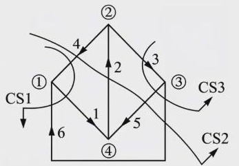
选支路 1、2、3 为树：割集 CS1 =
{1,4,6}，CS2 = {2,4,5,6}，CS3 =
{3,5,6}，每个割集只含一条树支。
解。 树是一条链 ①—④—②—③。
移去树支 1：① 与 {④, ②, ③} 分开，跨两块的连支 是
4（①②）、6（①③）：CS1 = {1, 4, 6}。
移去树支 2：{①, ④} 与 {②, ③} 分开，跨两块的连支 是
4（①②）、5（③④）、6（①③）：CS2 = {2, 4, 5, 6}。
移去树支 3：③ 与其余分开 ，跨两块的连支 是 5、6：CS3 = {3, 5,
6}。
把每组弧线 圈住的一侧看成 一个广义节点 ，流出 的电流只能经过割集 里的支路，所以每个割集 中各支路电流的代数和 为零，这是三个
KCL
方程。每个方程含一条树支 电流，而这条树支 不在另外两个割集 里，所以三个方程独立 。
定义 15 · 割集与单树支割集
(1) 割集 ：连通图
G G G G 少移去其中任何一条，图仍然连通。
(2)
单树支割集 （基本割集）：在选定树的连通图中，只含一条树支 、其余都是连支的割集。
条件“少移去一条 仍连通”说的是“刚好够 ”：多切一条 不是割集，少切一条切不开 。
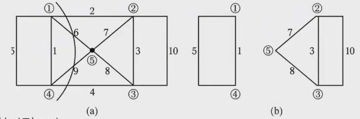
(a) 弧线切过支路
2、6、9、4，构成一个割集；(b) 移去割集
{ 5 , 1 , 6 , 7 , 3 , 10 } \{5,1,6,7,3,10\}
上图 (a) 的割集 还有
{ 5 , 1 , 6 , 2 } \{5,1,6,2\} { 2 , 7 , 3 , 10 } \{2,7,3,10\} { 4 , 8 , 3 , 10 } \{4,8,3,10\} 一个节点连出的全部支路，正是把这个节点孤立出来的割集，所以割集上的
KCL 与对单个节点列 KCL 本质相同 。
定理 5 · 独立 KCL 方程数
按
n − 1 n-1 n − 1 n-1
证明。 独立性同例
13：每个方程含一条 其他方程 都没有的树支 电流。个数不能更多：全部
n n 一正一负 ，相加恒为零，所以
n n 最多
n − 1 n-1
结论 3 · 独立方程的完整计数
(1) KCL：去掉任意一个节点，对其余
n − 1 n-1 n − 1 n-1
(2) KVL：按单连支回路（平面电路可按网孔）列写，得到
b − n + 1 b-n+1
(3)
b b 2 b 2b b b ( n − 1 ) + ( b − n + 1 ) = b (n-1)+(b-n+1)=b 2 b 2b
以后的支路电流法 、回路 电流法、节点电压法 ，都是在这个计数 的基础上减少未知量 的不同方式。第
3 章（非线性电阻 元件）放到 模拟电路 部分再讲，下面直接进入 第 4 章。
7 等效变换
第 4
章讲线性电阻 电路的分析方法 和定理。先讲等效变换 ：把复杂电路换成简单电路，最后只需要列一个
KCL 或 KVL 方程 。
7.1 串并联与等电位点
例 14 · 【真题】4×4 节点方格网络的对角电阻
2025—2026 秋冬期中回忆卷（手写版）· 单选（2 分，选项未回忆出）·
建议用时 4 分钟
4 × 4 4\times4 节点 、3 × 3 3\times3 方格 组成的电阻网络 ，24 条边 的电阻都是
R R 等效电阻 。
解。 这道题比下面的例 16
多了一圈，只用一条 对称轴已经不够 ，要用两种对称性 。从 A 流入电流
I I
(1) 沿对角线 AB
翻转 ，网络和电源都不变 ，所以互为镜像 的两个节点电位 相等，例如 A
右边的节点 与 A 下边的节点 。
(2) 绕网络中心转
180 ∘ 180^\circ ，A、B
互换，相当于把电源 反向。线性电路 里电源反向 ，所有电压 都变号（第 10
单元的齐次性 ）。所以对任一节点 P 和它转过 去的像 P′，有
U AP = U P ′ B U_{\text{AP}}=U_{\text{P}'\text{B}}
另一条 对角线上的四个节点 ，转
180 ∘ 180^\circ 正好 是它关于 AB 的镜像 ，由 (1) 与 P 等电位 ，于是
U AP = U PB U_{\text{AP}}=U_{\text{PB}} 节点 的电位都等于
A、B 电位的平均值 ，可以短接成一点 M。
M 把网络 分成完全相同 的两半，只算 A 到 M 这一半 。再把 (1)
中成对的等电位点短接 ：
A 到“A 的两个邻点 ”：两个
R R R 2 \dfrac R2
从这对邻点 出发有两条路 到
M：经“第二层的两个边上节点 ”，R 2 + R 4 = 3 R 4 \dfrac R2+\dfrac R4=\dfrac{3R}{4} 并联 ，再四边并联 ）；经“中心节点 ”，R 2 + R 2 = R \dfrac R2+\dfrac R2=R 并联
3 4 R ⋅ R 7 4 R = 3 R 7 \dfrac{\frac34R\cdot R}{\frac74R}=\dfrac{3R}{7}
R AM = R 2 + 3 R 7 = 13 R 14 , R AB = 2 R AM = 13 7 R ≈ 1.857 R . R_{\text{AM}}=\frac R2+\frac{3R}{7}=\frac{13R}{14},\qquad R_{\text{AB}}=2R_{\text{AM}}=\frac{13}{7}R\approx1.857R . 用节点电压法 （第 9 单元 ）对 16 个节点 直接求解，结果 相同。
考点 ：用对称性 找等电位点再短接；“中点电位 ”这一步来自线性电路 的齐次性。只用一条 对称轴会剩下 无法串并联 的结构。
例 15 · 设计 T 形衰减器
点画线框内是 T 形衰减器，负载电阻
R = 2 Ω R=2\ \Omega 要求：(1)
从输入 端看进去的等效电阻 等于
R R 电压 与输出电压 之比为 5。求
R 1 R_1 R 2 R_2 教材 例
4.1.1）
T 形衰减器：两个
R 1 R_1 R 2 R_2 R R
解。 要求 (1)：从 ab
看进去 ，R 1 R_1 R 2 R_2 ( R 1 + R ) (R_1+R) 并联 ：
R a b = R 1 + R 2 ( R 1 + 2 ) R 2 + R 1 + 2 = 2 . R_{ab}=R_1+\frac{R_2(R_1+2)}{R_2+R_1+2}=2 . 要求 (2)：设输入电流 为
I I U a b = 2 I U_{ab}=2I I I 分流 后流过
R 1 + R R_1+R R 2 R 2 + R 1 + 2 I \dfrac{R_2}{R_2+R_1+2}I U c d = 2 R 2 R 2 + R 1 + 2 I U_{cd}=\dfrac{2R_2}{R_2+R_1+2}I U a b = 5 U c d U_{ab}=5U_{cd} R 2 + R 1 + 2 = 5 R 2 R_2+R_1+2=5R_2 R 1 = 4 R 2 − 2 R_1=4R_2-2 代回 第一式解得
R 1 = 4 3 Ω , R 2 = 5 6 Ω . R_1=\frac43\ \Omega,\qquad R_2=\frac56\ \Omega . 检验：R 2 ∥ ( R 1 + R ) = 2 3 R_2\parallel(R_1+R)=\frac23 R a b = 4 3 + 2 3 = 2 R_{ab}=\frac43+\frac23=2 分流 比
5 / 6 25 / 6 = 1 5 \frac{5/6}{25/6}=\frac15 U a b / U c d = 5 U_{ab}/U_{cd}=5
例 16 · 对称网络的等效电阻
3×3 节点的方格网络，12 个电阻都为
R R R a b R_{ab} （教材 例
4.1.2）
3×3 节点的方格网络，12 个电阻都为
R R
解。 沿 a–b 对角线翻转，网络不变 。由对称性 ，c、d
电位 相等；e、f、g 电位 相等；h、i
电位 相等。把等电位点短接 ，网络变成四段串联 ：a 到 {c,d} 两个
R R R R R R R R
R a b = R 2 + R 4 + R 4 + R 2 = 3 R 2 . R_{ab}=\frac R2+\frac R4+\frac R4+\frac R2=\frac{3R}{2}. f 和 e、g 等电位不那么显然 ：沿对角线 把 f 拆成两个节点 ，一个连 c、h
一侧，一个连 d、i 一侧，两个半边电路完全对称 ，两个“半个
f”电位 相等，合回去不影响 电流；e、g 分别处在 对称位置 上。所以 e、f、g
都在中间那条反对角线 上，电位 相同。
两个例题 都在把“一大块电路 ”换成“一个电阻 ”，依据是等效 。
定义 16 · 一端口与等效
(1)
一端口电路 ：任何电路向外引出两个端钮，从一个端钮流入的电流等于从另一个流出的电流，这两个端钮构成一个端口。
(2)
无源一端口 ：内部没有独立电源 ，由
R、L、C、互感或受控源构成（含受控源仍叫无源）。 有源一端口 ：内部含独立电源。
(3)
等效 ：两个一端口，无论内部结构怎样不同，只要端口的电压电流关系相同，就相互等效。
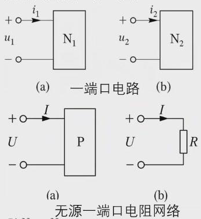
一端口电路（上）与无源一端口电阻网络（下）：网络 P
可以用一个电阻 R 等效。
无源一端口 电阻网络的端口电压 与端口电流之比是常数 ，称为等效电阻 或输入电阻 。
易错 · 等效只对外部成立
等效变换后，外电路 的电压、电流、功率都可以在等效电路里算； 被替换掉的那部分内部的量不能在等效电路里算 ，必须回到原电路去求 。等效电路 由原电路本身决定 ，与外电路接什么无关 。
例 16 的关键是“等电位的两点可以短接 ”。 最常见的情形是电桥 。
桥型电阻电路：R5 跨接在 a、b
之间。
定理 6 · 电桥平衡条件
当
R 1 R 3 = R 2 R 4 R_1R_3=R_2R_4 自然等电位点 ），二者之间可以开路也可以短路，等效电阻不变：
开路： R c d = ( R 1 + R 4 ) ∥ ( R 2 + R 3 ) , 短路： R c d = ( R 1 ∥ R 2 ) + ( R 4 ∥ R 3 ) . \text{开路：}R_{cd}=(R_1+R_4)\parallel(R_2+R_3),\qquad \text{短路：}R_{cd}=(R_1\parallel R_2)+(R_4\parallel R_3).
证明。 先把
R 5 R_5 电压
U U 支路 各自分压：φ a − φ d = R 4 R 1 + R 4 U \varphi_a-\varphi_d=\dfrac{R_4}{R_1+R_4}U φ b − φ d = R 3 R 2 + R 3 U \varphi_b-\varphi_d=\dfrac{R_3}{R_2+R_3}U 两者 相等
⇔ R 4 ( R 2 + R 3 ) = R 3 ( R 1 + R 4 ) ⇔ R 2 R 4 = R 1 R 3 \iff R_4(R_2+R_3)=R_3(R_1+R_4)\iff R_2R_4=R_1R_3 接上
R 5 R_5 导线 ），其两端无电压 ，没有电流 ，其余各支路电流不变 。
应用：惠斯通电桥。 在 a、b
间接检流计 ，调节 已知电阻使检流计 示数为零 ，由
R 1 = R 2 R 4 / R 3 R_1=R_2R_4/R_3 电阻 。
习题 11 · 先认节点再串并联
练习 · 先独立作答
求下图中的
R a b R_{ab} R a c R_{ac} 连在一起 的导线是同一个节点 ：左上导线为节点
c；中间那条横导线 把右侧两只 4 Ω 的中点 也接到了 c；上方 4 Ω 右端为节点
X；左下导线为节点 a；3 Ω 右端为节点 b。（作业 4.1）
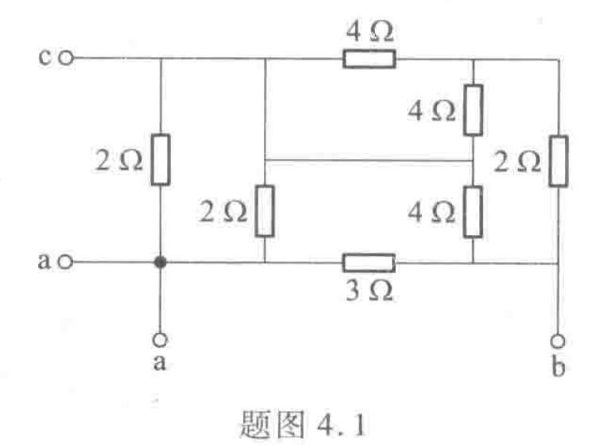
习题 4.1 的电阻网络。
提示 · 列出每个电阻接在哪两个节点之间
c–a：2 Ω、2 Ω；c–X：4 Ω、4 Ω；c–b：4 Ω；X–b：2 Ω；a–b：3
Ω。化简 前必须先把节点 认清。
解析
R c X = 4 ∥ 4 = 2 Ω R_{cX}=4\parallel4=2\ \Omega R c b = 2 Ω R_{cb}=2\ \Omega R c a = 2 ∥ 2 = 1 Ω R_{ca}=2\parallel2=1\ \Omega 三角形 ：a–c
1 Ω，c–b 2 Ω，a–b 3 Ω。
R a b = ( 1 + 2 ) ∥ 3 = 1.5 Ω , R a c = 1 ∥ ( 2 + 3 ) = 5 6 Ω ≈ 0.83 Ω . R_{ab}=(1+2)\parallel3=1.5\ \Omega,\qquad R_{ac}=1\parallel(2+3)=\frac56\ \Omega\approx0.83\ \Omega .
习题 12 · 无限梯形网络
练习 · 先独立作答
下图网络向右无限延伸，所有电阻都是
R R 记第
k k 节点 为
T k T_k B k B_k T 0 = a T_0=a B 0 = b B_0=b 每节 中
T k + 1 T_{k+1} R R T k T_k B k B_k B k + 1 B_{k+1} 还有 一根竖电阻
R R R a b R_{ab}
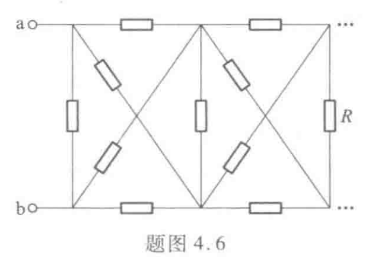
习题 4.6 的网络。
提示 · 上下对称
在 a、b 间加电压
U U V a = U / 2 V_a=U/2 V b = − U / 2 V_b=-U/2 对称 ，V T 1 = − V B 1 V_{T_1}=-V_{B_1} 对
T 1 T_1
解析
设
V T 1 = u / 2 V_{T_1}=u/2 V B 1 = − u / 2 V_{B_1}=-u/2 T 0 T_0 B 0 B_0 T 1 T_1 电流 合计
U / 2 − u / 2 R + − U / 2 − u / 2 R = − u R \dfrac{U/2-u/2}{R}+\dfrac{-U/2-u/2}{R}=-\dfrac uR 等于 流进后面网络 的电流，而后面网络两端电压 为
u u 结构 只能在
u = 0 u=0 成立 。所以
T 1 T_1 B 1 B_1 电位 ，后面整段网络没有电流 。a 经两个
R R 电位 为
R / 2 R/2 竖电阻
R R
R a b = R ∥ ( R 2 + R 2 ) = R 2 . R_{ab}=R\parallel\Big(\frac R2+\frac R2\Big)=\frac R2 .
更多课本习题 · 4 道
方法同例 15、例 16 和习题
11：先给每个节点 起名，列出每个电阻 接在哪两个节点 之间，再找串并联 和等电位点。
习题 4.2
R = 20 Ω R=20\ \Omega 等效电阻 ：被导线 短接的电阻 直接去掉，再逐级串并联 。习题 4.3 求等效电阻：先找有没有
R 1 R 3 = R 2 R 4 R_1R_3=R_2R_4 平衡 电桥，平衡则中间支路 开路处理 ，不平衡 则用 Y-Δ 变换。习题 4.4
求开关 断开、闭合 两种情况的等效电阻 ：闭合 时开关两端是同一节点 。习题 4.5
电桥电路求两点间电压 ：两条桥臂 各自分压，求出两点对同一参考点 的电位再相减 。
7.2 Y-Δ 变换
例 17 · Δ 换成 Y 后再看电桥
下图 (a) 中 5 Ω、5 Ω、2.5 Ω 组成三角形，3 Ω 接在 a 端，求
R a b R_{ab} （教材 例
4.1.3）
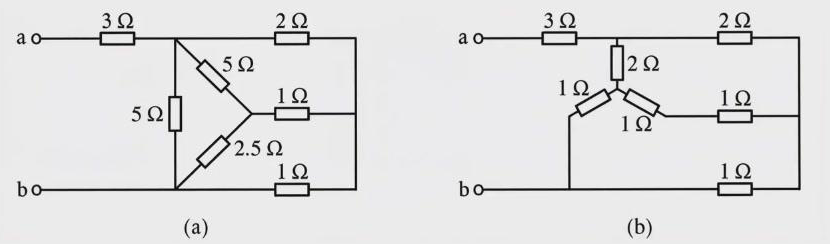
(a) 原电路，5 Ω、5 Ω、2.5 Ω 组成 Δ；(b)
变换为 2 Ω、1 Ω、1 Ω 的 Y。
解。 电路既不是串并联，(a) 中也看不出平衡 电桥，先把
Δ 换成 Y （公式 见下）。Δ 三个电阻 之和
12.5 Ω 12.5\ \Omega 端钮 夹着两个 5
Ω：5 × 5 12.5 = 2 Ω \frac{5\times5}{12.5}=2\ \Omega 两个端钮 各夹一个
5 Ω 和 2.5
Ω：5 × 2.5 12.5 = 1 Ω \frac{5\times2.5}{12.5}=1\ \Omega
在 (b) 中，从 3 Ω 右端到 b 有两条路 ：经 Y 的中心 是 2 Ω 再 1
Ω；经右侧竖线 是 2 Ω 再 1 Ω。两路之间跨着 1 Ω、1 Ω
串联 的支路，2 × 1 = 2 × 1 2\times1=2\times1 电桥 平衡，中间支路 开路：
R a b = 3 + ( 2 + 1 ) ∥ ( 2 + 1 ) = 4.5 Ω . R_{ab}=3+(2+1)\parallel(2+1)=4.5\ \Omega .
三角形（Δ）联结与星形（Y）联结。
结论 4 · Y-Δ 变换公式
Δ→Y： R 1 = R 12 R 31 R 12 + R 23 + R 31 , R 2 = R 23 R 12 R 12 + R 23 + R 31 , R 3 = R 31 R 23 R 12 + R 23 + R 31 ; \text{Δ→Y：}\ R_1=\frac{R_{12}R_{31}}{R_{12}+R_{23}+R_{31}},\quad R_2=\frac{R_{23}R_{12}}{R_{12}+R_{23}+R_{31}},\quad R_3=\frac{R_{31}R_{23}}{R_{12}+R_{23}+R_{31}}; Y→Δ： R 12 = R 1 R 2 + R 2 R 3 + R 3 R 1 R 3 , R 23 = R 1 R 2 + R 2 R 3 + R 3 R 1 R 1 , R 31 = R 1 R 2 + R 2 R 3 + R 3 R 1 R 2 . \text{Y→Δ：}\ R_{12}=\frac{R_1R_2+R_2R_3+R_3R_1}{R_3},\quad R_{23}=\frac{R_1R_2+R_2R_3+R_3R_1}{R_1},\quad R_{31}=\frac{R_1R_2+R_2R_3+R_3R_1}{R_2}. Δ→Y：星形某端的电阻等于“夹着这个端钮的两个 Δ 电阻之积 / Δ
电阻之和”。 三个电阻相等时
R Y = R Δ / 3 R_Y=R_\Delta/3
推导。
两种联结对外等效 ，必须在任何一个端钮悬空 时，另外两个端钮 之间的电阻 相同。端钮
3 悬空时 ：
R 12 ( R 23 + R 31 ) Σ = R 1 + R 2 , Σ = R 12 + R 23 + R 31 . \frac{R_{12}(R_{23}+R_{31})}{\Sigma}=R_1+R_2,\qquad \Sigma=R_{12}+R_{23}+R_{31}. 端钮 1、2 悬空各得一式 。三式相加 除以 2 得
R 1 + R 2 + R 3 = R 12 R 23 + R 23 R 31 + R 31 R 12 Σ R_1+R_2+R_3=\dfrac{R_{12}R_{23}+R_{23}R_{31}+R_{31}R_{12}}{\Sigma} 减去 “端钮
1
悬空”那一式（R 2 + R 3 = R 23 ( R 12 + R 31 ) / Σ R_2+R_3=R_{23}(R_{12}+R_{31})/\Sigma R 1 = R 12 R 31 / Σ R_1=R_{12}R_{31}/\Sigma 同理 。Y→Δ
由这三式 反解。
习题 13 · 不做变换，直接找平衡电桥
练习 · 先独立作答
对例 17 的图 (a)，3 Ω 右端记为 P，Δ 中间顶点记为 Q，b 端记为
B，右侧竖线记为 R：P 到 B 有两条路 P–Q–B（5 Ω、2.5 Ω）与 P–R–B（2 Ω、1
Ω），Q、R 之间是 1 Ω，P、B 之间还有一个 5 Ω。 不做 Y-Δ 变换，求
R a b R_{ab}
提示 · 比较两条路的电阻比
两条路 的电阻比相等 时，Q、R 是自然等电位点 。
解析
5 × 1 = 2.5 × 2 5\times1=2.5\times2 两条路 的电阻比都是
2 : 1 2:1 没有电流 ，去掉。P–B
之间三条支路并联 ：7.5 7.5 3 3 5 Ω 5\ \Omega
1 R P B = 1 7.5 + 1 3 + 1 5 = 2 3 , R a b = 3 + 1.5 = 4.5 Ω , \frac1{R_{PB}}=\frac1{7.5}+\frac13+\frac15=\frac23,\qquad R_{ab}=3+1.5=4.5\ \Omega , 与例 17 一致。
更多课本习题 · 1 道
习题 4.7 无限长梯形电路从 AB
端口向右看的输入电阻 ：去掉 第一节后，剩下的网络 与原网络完全相同 ，设输入电阻 为
x x 接上
x x 等效电阻 仍为
x x x x 二次方程 取正根。
例 18 · 用电源变换求
I 3 I_3
已知
R 1 = 10 Ω R_1=10\ \Omega R 3 = 20 Ω R_3=20\ \Omega U S 1 = 10 U_{S1}=10 U S 3 = 80 U_{S3}=80 I S 2 = 3 I_{S2}=3 I 3 I_3 （教材 例
4.1.4）
(a) 原电路：左支路
R 1 R_1 U S 1 U_{S1} I S 2 I_{S2} U S 3 U_{S3} R 3 R_3
解。 把电压源 串电阻换成 电流源并电阻（定理
7）：I S 1 = U S 1 / R 1 = 1 I_{S1}=U_{S1}/R_1=1 I S 3 = U S 3 / R 3 = 4 I_{S3}=U_{S3}/R_3=4 电流源 与两个电阻全部并联 ，合成电流
I S 2 + I S 3 − I S 1 = 6 I_{S2}+I_{S3}-I_{S1}=6 电阻分流 ，流过
R 3 R_3 电流
I 3 ′ = R 1 R 1 + R 3 × 6 = 2 A . I_3'=\frac{R_1}{R_1+R_3}\times6=2\ \text{A}. I 3 I_3 支路 的电流，图 (b) 里已经没有它 。对 (b) 中
R 3 R_3 I S 3 I_{S3} 连接点 用
KCL：I 3 = I 3 ′ − I S 3 = − 2 I_3=I_3'-I_{S3}=-2
例 19 · 含受控电压源的变换
已知
I s = 1.5 I_s=1.5 R 1 = R 2 = 8 Ω R_1=R_2=8\ \Omega r = 4 Ω r=4\ \Omega r I 2 rI_2 R 1 R_1 I 2 I_2 R 2 R_2 求
I 1 I_1 I 2 I_2 教材 例
4.1.5）
(a) 电流控制的电压源
r I 2 rI_2 R 1 R_1 r I 2 / R 1 rI_2/R_1 R 1 R_1
解。 CCVS
r I 2 rI_2 R 1 R_1 变换 成 CCCS
r I 2 / R 1 rI_2/R_1 R 1 R_1 控制量
I 2 I_2 R 2 R_2 支路 上，变换后仍然存在 ，所以可以变换 。(b) 中四条支路并联 ，端电压 是
R 2 I 2 R_2I_2
I s + r I 2 R 1 = R 2 I 2 R 1 + I 2 , 1.5 + 0.5 I 2 = 2 I 2 , I 2 = 1 A . I_s+\frac{rI_2}{R_1}=\frac{R_2I_2}{R_1}+I_2,\qquad 1.5+0.5I_2=2I_2,\qquad I_2=1\ \text{A}. 求
I 1 I_1 回到 (a)：对上方节点 用
KCL，I 1 = I s − I 2 = 0.5 I_1=I_s-I_2=0.5 流过
R 1 R_1 R 2 I 2 / R 1 = 1 R_2I_2/R_1=1 I 1 I_1 就错了 。
两个例题 都用了“电压源 串电阻 ⇄ 电流源 并电阻”。先看理想电源 。
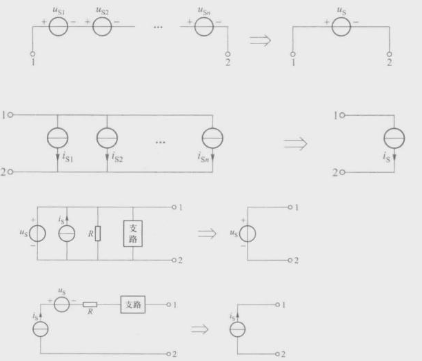
理想电压源串联、理想电流源并联、电压源与其他电路并联、电流源与其他支路串联的等效。
结论 5 · 理想电源的串并联
(1)
理想电压源串联：u s = ∑ u s k u_s=\sum u_{sk} u s u_s 理想电流源并联：i s = ∑ i s k i_s=\sum i_{sk}
(2)
理想电压源与任何电路并联 ，对外等效为这个电压源； 理想电流源与任何支路串联 ，对外等效为这个电流源。
(3)
只有大小相等、极性相同的电压源才能并联； 只有大小相等、方向相同的电流源才能串联。
(2)
的道理 ：电压源 并联时端电压被它钉死 ，并联上什么都改变不了端口电压 。谁被钉死，就等效为谁。
被并联 掉的电阻 里仍然有电流、仍然消耗功率 ，只是外电路看不到 。
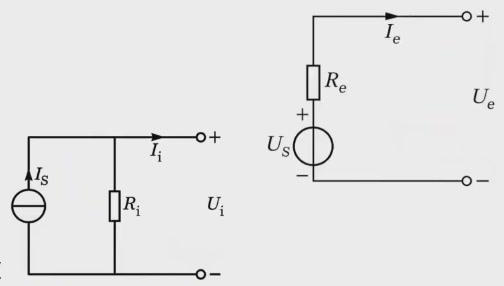
实际电流源（左）与实际电压源（右）。
定理 7 · 电源等效变换
实际电压源（U s U_s R e R_e I s I_s R i R_i
R e = R i , U s = R i I s . R_e=R_i,\qquad U_s=R_iI_s . 电流源箭头指向电压源的“+”端。 理想电压源与理想电流源不能互相转换 。 变换对受控源同样适用，但控制变量不能在变换中消失 。
证明。 两者的端口特性 分别是
U = U s − R e I U=U_s-R_eI U = ( I s − I ) R i = R i I s − R i I U=(I_s-I)R_i=R_iI_s-R_iI 要求 对任何
I I 给出 相同的
U U 比较常数项 和
I I 系数 即得。R e = 0 R_e=0 R i = 0 R_i=0 电流源被短路 ，不再是电流源，所以理想源之间不能转换。
习题 14 · 被变换支路的电流
练习 · 先独立作答
在例 18 中，求左支路
R 1 R_1 R 1 R_1
提示 · 先求两节点间电压
由图 (b) 求出上下两节点 间的电压
U U 回到 图
(a) 的左支路 列 KVL。
解析
图 (b) 中流过
R 3 R_3 电流 是 2 A，上节点 对下节点电压
U = − R 3 × 2 = − 40 U=-R_3\times2=-40 支路
U = U S 1 − R 1 I U=U_{S1}-R_1I I = 10 − ( − 40 ) 10 = 5 I=\dfrac{10-(-40)}{10}=5
图 (b) 中
R 1 R_1 电流 是
U / R 1 U/R_1 取反 即
− 4 -4 I S 1 = 1 I_{S1}=1 原支路 ：1 − ( − 4 ) = 5 1-(-4)=5 变换 后的
R 1 R_1 数学 上相等，不是原支路 中的那个电阻 。
更多课本习题 · 3 道
习题 4.8 求电压
U U 电源等效变换 把电路化成单回路 或两节点电路 ，方法同例
18，最后回到原电路 求被变换支路 的量。习题 4.9
求输入电阻 ：电路含受控源 时用加压法，在端口 加
U U 端口电流 写成
U U 倍数 。习题 4.10 晶体管 微变等效电路 求电压放大倍数 ：同例
21，先用
i b i_b 电压 ，再写输入电压 ，相除。
例 20 · 受控源使总电阻变为零
已知
U S = 3 U_S=3 R 1 = 10 Ω R_1=10\ \Omega R 2 = 20 Ω R_2=20\ \Omega β I \beta I R 1 R_1 β = 2 \beta=2 I I β \beta 增加 到 2.9、2.99、3
时，I I 教材 例 4.1.6）
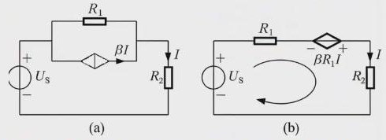
(a) CCCS
β I \beta I R 1 R_1 β R 1 I \beta R_1I R 1 R_1
解。
β I \beta I R 1 R_1 变换 成
β R 1 I \beta R_1I R 1 R_1 顺时针 列 KVL：
( R 1 + R 2 ) I = U S + β R 1 I , I = U S R 1 + R 2 − β R 1 = 3 30 − 10 β . (R_1+R_2)I=U_S+\beta R_1I,\qquad I=\frac{U_S}{R_1+R_2-\beta R_1}=\frac{3}{30-10\beta}.
β \beta 2
2.9
2.99
3
I I 0.3
3
30
→ ∞ \to\infty
(b)
中受控电压源 的实际电压与电流方向相反 ，它在发出功率 ，相当于一个负电阻
− β R 1 -\beta R_1 β = 3 \beta=3 − 30 Ω -30\ \Omega 抵消
R 1 + R 2 = 30 Ω R_1+R_2=30\ \Omega 电压源 看出去总电阻 为零，等于短路 。
例 21 · 射极输出器的
A u A_u r i r_i r o r_o
下图左为射极输出器的微变等效电路：信号源
u s u_s R S R_S R b R_b r b e r_{be} β i b \beta i_b R e ∥ R L R_e\parallel R_L R L R_L 求电压放大倍数、输入电阻 与输出电阻。（教材 例 4.1.7）
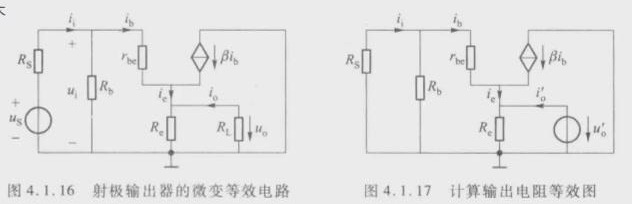
左：射极输出器微变等效电路；右：求输出电阻的等效电路，u s u_s u o ′ u_o'
解。 (1)
i b i_b β i b \beta i_b 流入
R e ∥ R L R_e\parallel R_L
u o = ( 1 + β ) i b ( R e ∥ R L ) , u i = i b [ r b e + ( 1 + β ) ( R e ∥ R L ) ] , A u = ( 1 + β ) ( R e ∥ R L ) r b e + ( 1 + β ) ( R e ∥ R L ) . u_o=(1+\beta)i_b(R_e\parallel R_L),\qquad u_i=i_b\big[r_{be}+(1+\beta)(R_e\parallel R_L)\big],\qquad A_u=\frac{(1+\beta)(R_e\parallel R_L)}{r_{be}+(1+\beta)(R_e\parallel R_L)} . A u A_u 小于 1 而接近 1，输出 跟随输入。
(2) 输入电流 是
R b R_b i i i_i 不是
i b i_b i i = u i / R b + i b i_i=u_i/R_b+i_b
r i = u i i i = R b ∥ [ r b e + ( 1 + β ) ( R e ∥ R L ) ] . r_i=\frac{u_i}{i_i}=R_b\parallel\big[r_{be}+(1+\beta)(R_e\parallel R_L)\big]. (3)
u s u_s R L R_L 输出 端加
u o ′ u_o' u o ′ → r b e → ( R b ∥ R S ) u_o'\to r_{be}\to(R_b\parallel R_S) 回路 列
KVL：i b = − u o ′ r b e + R b ∥ R S i_b=\dfrac{-u_o'}{r_{be}+R_b\parallel R_S} 发射极节点
KCL：
i o ′ = u o ′ R e − ( 1 + β ) i b = u o ′ R e + ( 1 + β ) u o ′ r b e + R b ∥ R S , r o = R e ∥ r b e + R b ∥ R S 1 + β . i_o'=\frac{u_o'}{R_e}-(1+\beta)i_b=\frac{u_o'}{R_e}+\frac{(1+\beta)u_o'}{r_{be}+R_b\parallel R_S},\qquad r_o=R_e\parallel\frac{r_{be}+R_b\parallel R_S}{1+\beta}.
两个例题 求的都是“从某个端口 看进去的电阻 ”，而电路里有受控源 。
定义 17 · 输入电阻与输出电阻
(1)
一端口的输入电阻 ：内部不含独立电源时，端口电压与端口电流之比（关联参考方向）。 有源一端口先把独立源置零：独立电压源短路，独立电流源开路，受控源保留 。
(2) 双口网络的输入电阻 ：从输入口看进去的等效电阻
R i = U i / I i R_i=U_i/I_i
(3)
双口网络的输出电阻 ：独立源置零后，从输出口去掉负载 看进去的等效电阻
R o = U o / I o R_o=U_o/I_o
双口网络：左边接信号源
U S U_S R S R_S R L R_L
含受控源时不能直接串并联 ，要用加压（加流）法 ：在端口外加电压源（或电流源），用
KCL、KVL 和元件关系求端口电压与电流之比，例 21 (3)
就是这样做的。 输入电阻 衡量放大器 从信号源取多少电流 ，电压放大器 希望它大；输出电阻衡量带负载能力 ，电压 输出的放大器 希望它小。
习题 15 · 负电阻
练习 · 先独立作答
在例 20 中，求从
U S U_S R e q R_{eq} β \beta β = 4 \beta=4 I I
提示 · 端口电压除以端口电流
R e q = U S / I R_{eq}=U_S/I
解析
R e q = R 1 + R 2 − β R 1 = 30 − 10 β ( Ω ) R_{eq}=R_1+R_2-\beta R_1=30-10\beta\ (\Omega) β < 3 \beta<3 β = 3 \beta=3 β > 3 \beta>3 β = 4 \beta=4 R e q = − 10 Ω R_{eq}=-10\ \Omega I = − 0.3 I=-0.3 电流 反向，外电路 向电压源输送功率 。含受控源的无源一端口 可以有负的等效电阻 。
习题 16 · 射极输出器的数值
练习 · 先独立作答
在例 21 中取
β = 50 \beta=50 r b e = 1 r_{be}=1 R b = 100 R_b=100 R S = 1 R_S=1 R e = R L = 2 R_e=R_L=2 A u A_u r i r_i r o r_o
提示 · 先算
R e ∥ R L R_e\parallel R_L R b ∥ R S R_b\parallel R_S
R e ∥ R L = 1 R_e\parallel R_L=1 R b ∥ R S ≈ 0.990 R_b\parallel R_S\approx0.990
解析
( 1 + β ) ( R e ∥ R L ) = 51 (1+\beta)(R_e\parallel R_L)=51
A u = 51 52 ≈ 0.981 , r i = 100 ∥ 52 ≈ 34.2 k Ω . A_u=\frac{51}{52}\approx0.981,\qquad r_i=100\parallel52\approx34.2\ \text{k}\Omega . r b e + R b ∥ R S 1 + β = 1.990 51 ≈ 39.0 Ω \dfrac{r_{be}+R_b\parallel R_S}{1+\beta}=\dfrac{1.990}{51}\approx39.0\ \Omega r o = 2000 ∥ 39.0 ≈ 38.3 Ω r_o=2000\parallel39.0\approx38.3\ \Omega 输入电阻 几十千欧、输出电阻 几十欧，正是射极 输出器的特点 。
更多课本习题 · 1 道
习题 4.11
两个放大 电路的输入电阻 、输出电阻 和电压放大倍数 ：完全按例 21
的三步做；求输出电阻 时信号源置零、去掉负载 ，受控源保留 。
8 支路电流法与回路电流法
等效变换 让电路变简单 ；分析法让过程系统化 。第 6 单元 已经知道独立 KCL
有
n − 1 n-1 独立 KVL 有
b − n + 1 b-n+1 方法 都以此为基础 ，靠选择变量减少联立方程数 。
方法
列写哪些方程
未知量
方程数
支路电流法
全部独立 KCL 和 KVL
支路电流
b b
回路电流法
仅 KVL
回路电流
b − n + 1 b-n+1
节点电压法
仅 KCL
节点电压
n − 1 n-1
8.1 支路电流法
例 22 · 写出支路电流方程
下图电路有 4 个节点、6
条支路，各支路电阻和电压源如图。 写出 求全部支路电流所需 的方程。（教材图
4.2.1）
4 个节点、6 条支路；选支路 1、2、3
为树，l 1 l_1 l 2 l_2 l 3 l_3
解。 KCL：任去一个节点 ，比如 ④：
① : − I 1 + I 2 + I 3 = 0 , ② : − I 3 + I 4 + I 5 = 0 , ③ : − I 2 − I 4 + I 6 = 0 . \text{①}:\ -I_1+I_2+I_3=0,\qquad \text{②}:\ -I_3+I_4+I_5=0,\qquad \text{③}:\ -I_2-I_4+I_6=0 . KVL：选支路 1、2、3 为树，连支 4、5、6 各确定 一个单连支 回路：
l 1 : R 3 I 3 + R 4 I 4 − R 2 I 2 = − U S 2 , l 2 : R 3 I 3 + R 5 I 5 = U S 1 , l 3 : R 2 I 2 + R 6 I 6 = U S 1 + U S 2 . l_1:\ R_3I_3+R_4I_4-R_2I_2=-U_{S2},\qquad l_2:\ R_3I_3+R_5I_5=U_{S1},\qquad l_3:\ R_2I_2+R_6I_6=U_{S1}+U_{S2}. 6 个方程 、6 个未知量 。
例 23 · 含理想电流源
把例 22 的支路 3 换成理想电流源
I S 3 I_{S3} （教材图
4.2.2）
支路 3 换成理想电流源
I S 3 I_{S3}
解。 电流源 两端的电压 事先不知道，写进 KVL
会多一个未知数 。所以选支路 2、4、6 为树，让电流源支路 3
成为连支 。节点方程 与例 22 相同，回路 方程：
l 1 : I 3 = I S 3 , l 2 : − R 4 I 4 + R 5 I 5 − R 6 I 6 = 0 , l 3 : R 2 I 2 + R 6 I 6 = U S 1 + U S 2 . l_1:\ I_3=I_{S3},\qquad l_2:\ -R_4I_4+R_5I_5-R_6I_6=0,\qquad l_3:\ R_2I_2+R_6I_6=U_{S1}+U_{S2}. l 1 l_1 不出 KVL，换成 “该支路电流 等于电流源电流 ”。
定义 18 · 支路电流法
以支路电流为变量，对
n − 1 n-1 b − n + 1 b-n+1
结论 6 · 含电流源与受控源的支路电流法
(1)
选树时不把电流源支路选进树 ，让它成为连支； 以电流源为连支的单连支回路不列
KVL ，代之以“该支路电流等于电流源电流”。
(2)
受控源先当作独立源列方程，再对它的控制量 列附加方程，用支路电流表示。
习题 17 · 含 VCCS 的支路电流方程
练习 · 先独立作答
把例 23 的电流源换成电压控制的电流源
g U 6 gU_6 U 6 U_6 R 6 R_6 I 6 I_6 写出支路电流方程。（教材图 4.2.3）
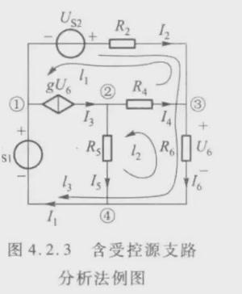
支路 3 是电压控制的电流源
g U 6 gU_6 R 6 R_6 U 6 U_6
提示 · 两条规则叠加
受控源 当独立源看待 ；它是电流源 ，就选为连支 。
解析
仍选支路 2、4、6 为树。节点方程不变 ，回路 方程
l 1 : I 3 = g U 6 , l 2 : − R 4 I 4 + R 5 I 5 − R 6 I 6 = 0 , l 3 : R 2 I 2 + R 6 I 6 = U S 1 + U S 2 , l_1:\ I_3=gU_6,\qquad l_2:\ -R_4I_4+R_5I_5-R_6I_6=0,\qquad l_3:\ R_2I_2+R_6I_6=U_{S1}+U_{S2}, 附加方程
U 6 = R 6 I 6 U_6=R_6I_6
习题 18 · 两个节点的电路
练习 · 先独立作答
下图只有上、下两个节点。 U S 1 = 10 U_{S1}=10 R 1 = 10 Ω R_1=10\ \Omega I 1 I_1 电流源
I S 2 = 3 I_{S2}=3 节点 流出，R 3 = 20 Ω R_3=20\ \Omega U S 3 = 20 U_{S3}=20 I 3 I_3 U S 3 U_{S3} I 1 I_1 I 3 I_3
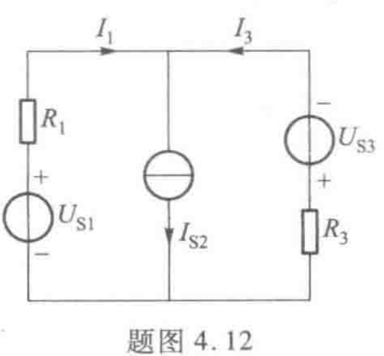
习题 4.12 的电路。
提示 · 一个 KCL 加一个 KVL
上节点
KCL：I 1 + I 3 = I S 2 I_1+I_3=I_{S2} 电压源 支路的端电压 都等于上下节点 间电压
V V
解析
左支路
V = U S 1 − R 1 I 1 V=U_{S1}-R_1I_1 支路
V = − R 3 I 3 − U S 3 V=-R_3I_3-U_{S3} 10 − 10 I 1 = − 20 I 3 − 20 10-10I_1=-20I_3-20 I 1 − 2 I 3 = 3 I_1-2I_3=3 I 1 + I 3 = 3 I_1+I_3=3
I 3 = 0 , I 1 = 3 A . I_3=0,\qquad I_1=3\ \text{A}. 验算：V = 10 − 30 = − 20 V=10-30=-20 = − 0 − 20 =-0-20
8.2 网孔电流法
例 24 · 网孔电流法求各支路电流
U S 1 = 100 U_{S1}=100 U S 2 = 140 U_{S2}=140 R 1 = 15 Ω R_1=15\ \Omega R 2 = 5 Ω R_2=5\ \Omega R 3 = 10 Ω R_3=10\ \Omega R 4 = 4 Ω R_4=4\ \Omega R 5 = 50 Ω R_5=50\ \Omega 教材 例
4.2.1）
三个网孔：上方
R 1 R_1 U S 1 U_{S1} R 4 R_4 R 3 R_3 R 4 R_4 R 5 R_5 R 5 R_5 R 2 R_2 U S 2 U_{S2}
解。 设三个网孔电流
I m 1 I_{m1} I m 2 I_{m2} I m 3 I_{m3} 顺时针 。每个网孔 的 KVL
中，本网孔电流乘本网孔全部电阻 ，相邻网孔电流 乘公共电阻 （方向相反取负 ）：
{ 19 I m 1 − 4 I m 2 = − 100 − 4 I m 1 + 64 I m 2 − 50 I m 3 = 0 − 50 I m 2 + 55 I m 3 = 140 \begin{cases}19I_{m1}-4I_{m2}=-100\\-4I_{m1}+64I_{m2}-50I_{m3}=0\\-50I_{m2}+55I_{m3}=140\end{cases} 解得
I m 1 = − 4 I_{m1}=-4 I m 2 = 6 I_{m2}=6 I m 3 = 8 I_{m3}=8 边界支路 的电流就是网孔电流 ，公共支路 做减法：
I 1 = − 4 A , I 2 = 8 A , I 3 = 6 A , I 4 = I m 2 − I m 1 = 10 A , I 5 = I m 3 − I m 2 = 2 A . I_1=-4\ \text{A},\quad I_2=8\ \text{A},\quad I_3=6\ \text{A},\quad I_4=I_{m2}-I_{m1}=10\ \text{A},\quad I_5=I_{m3}-I_{m2}=2\ \text{A}.
例 25 · 外围电流源与受控电压源
U S 1 = 11 U_{S1}=11 U S 3 = 6 U_{S3}=6 R 1 = 3 Ω R_1=3\ \Omega R 2 = 2 Ω R_2=2\ \Omega R 3 = 3 Ω R_3=3\ \Omega R 4 = 2 Ω R_4=2\ \Omega α I 2 \alpha I_2 α = − 1 Ω \alpha=-1\ \Omega I S = 6 I_S=6 I 2 I_2 教材 例
4.2.2）
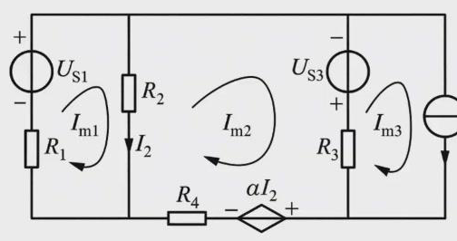
三个网孔都取顺时针；右边外围支路是电流源
I S I_S α I 2 \alpha I_2
解。 电流源在外围，只属于网孔
3，I m 3 = I S I_{m3}=I_S 不列
KVL 。受控源先当独立源 ，再用网孔电流表示控制量：
m 1 : ( R 1 + R 2 ) I m 1 − R 2 I m 2 = U S 1 m 2 : − R 2 I m 1 + ( R 2 + R 3 + R 4 ) I m 2 − R 3 I m 3 = U S 3 − α I 2 附加 : I 2 = I m 1 − I m 2 \begin{aligned}m_1:&\ (R_1+R_2)I_{m1}-R_2I_{m2}=U_{S1}\\ m_2:&\ -R_2I_{m1}+(R_2+R_3+R_4)I_{m2}-R_3I_{m3}=U_{S3}-\alpha I_2\\ \text{附加}:&\ I_2=I_{m1}-I_{m2}\end{aligned} 代入数据 得
5 I m 1 − 2 I m 2 = 11 5I_{m1}-2I_{m2}=11 − 3 I m 1 + 8 I m 2 = 24 -3I_{m1}+8I_{m2}=24 I m 1 = 4 I_{m1}=4 I m 2 = 4.5 I_{m2}=4.5
I 2 = I m 1 − I m 2 = − 0.5 A . I_2=I_{m1}-I_{m2}=-0.5\ \text{A}. 检验：m 2 m_2 − 8 + 31.5 − 18 = 5.5 -8+31.5-18=5.5 6 − ( − 1 ) ( − 0.5 ) = 5.5 6-(-1)(-0.5)=5.5 教材 此处印作
I 2 = − 2.5 I_2=-2.5 解出 的
I m 1 = 4 I_{m1}=4 I m 2 = 4.5 I_{m2}=4.5 应为
− 0.5 -0.5
例 24 的方程有固定的样子 ，这就是网孔电流法 。
三个网孔的电路，网孔电流
I m 1 I_{m1} I m 2 I_{m2} I m 3 I_{m3}
推导。
上图中边界 支路电流就是所在网孔 的网孔电流，公共支路电流 是两个网孔电流 之差：I 5 = I m 1 − I m 2 I_5=I_{m1}-I_{m2} I 4 = I m 3 − I m 1 I_4=I_{m3}-I_{m1} I 6 = I m 3 − I m 2 I_6=I_{m3}-I_{m2} 网孔电流在每个节点“流进去又流出来”，自动满足
KCL ，所以只需列 KVL 。 各网孔 KVL：
m 1 : R 1 I 1 + R 5 I 5 − U S 1 + U S 4 = 0 , m 2 : R 2 I 2 − R 6 I 6 − R 5 I 5 + U S 2 = 0 , m 3 : R 6 I 6 + R 3 I 3 − U S 4 − U S 3 = 0 , m_1:\ R_1I_1+R_5I_5-U_{S1}+U_{S4}=0,\quad m_2:\ R_2I_2-R_6I_6-R_5I_5+U_{S2}=0,\quad m_3:\ R_6I_6+R_3I_3-U_{S4}-U_{S3}=0 , 代入支路电流 与网孔电流的关系，电压源移到右边 ：
{ ( R 1 + R 5 ) I m 1 − R 5 I m 2 = U S 1 − U S 4 − R 5 I m 1 + ( R 2 + R 6 + R 5 ) I m 2 − R 6 I m 3 = − U S 2 − R 6 I m 2 + ( R 6 + R 3 ) I m 3 = U S 4 + U S 3 \begin{cases}(R_1+R_5)I_{m1}-R_5I_{m2}=U_{S1}-U_{S4}\\ -R_5I_{m1}+(R_2+R_6+R_5)I_{m2}-R_6I_{m3}=-U_{S2}\\ -R_6I_{m2}+(R_6+R_3)I_{m3}=U_{S4}+U_{S3}\end{cases}
定理 8 · 网孔电流方程的一般式
𝐑 𝐈 m = 𝐔 s , ∑ j R k j I m j = ∑ m k U S . \mathbf R\,\mathbf I_m=\mathbf U_s,\qquad \sum_{j}R_{kj}I_{mj}=\sum_{m_k}U_S . (1) 自电阻
R k k R_{kk} k k
(2) 互电阻
R j k R_{jk} j j k k 网孔电流都取顺时针时互电阻全为负。
(3)
右边 ：网孔中电压源的代数和，沿网孔方向从“−”到“+”经过电压源（电位升高）取正。
求出网孔电流后，最后一步不要忘 ：还原成支路电流 。 外围 支路含电流源时 ，该网孔电流就等于电流源电流 ；含受控源时，先当独立源，再用网孔电流表示控制量（例
25）。
更多课本习题 · 3 道
习题 4.13 用网孔电流法 求各支路电流 ：同例
24，自电阻 、互电阻 套一般式，最后还原支路电流 。习题 4.14 含外围 电流源的网孔方程 ：同例
25，电流源 所在网孔 的网孔电流直接已知 。习题 4.15
含受控源 的网孔方程：补一个用网孔 电流表示控制量 的附加方程。
8.3 基本回路电流法
例 26 · 两个电流源都在中间支路
R 1 = 1 Ω R_1=1\ \Omega R 2 = 2 Ω R_2=2\ \Omega R 3 = 3 Ω R_3=3\ \Omega R 5 = 4 Ω R_5=4\ \Omega R 6 = 6 Ω R_6=6\ \Omega I S 3 = 5 I_{S3}=5 I S 4 = 6 I_{S4}=6 U S 6 = 50 U_{S6}=50 教材 例 4.2.4）
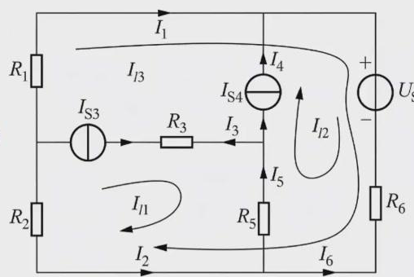
电流源
I S 3 I_{S3} I S 4 I_{S4} R 2 R_2 R 5 R_5 R 6 R_6 U S 6 U_{S6}
解。
两个电流源 都被两个网孔 共有，用网孔 要多设电流源电压 为未知量。改用基本回路 ：选
R 2 R_2 R 5 R_5 R 6 R_6 U S 6 U_{S6} R 1 R_1 I S 3 I_{S3} I S 4 I_{S4}
l 1 : I l 1 = I S 3 = 5 A , l 2 : I l 2 = I S 4 = 6 A , l 3 : ( R 1 + R 2 + R 6 ) I l 3 + R 2 I l 1 + R 6 I l 2 = − U S 6 . l_1:\ I_{l1}=I_{S3}=5\ \text{A},\qquad l_2:\ I_{l2}=I_{S4}=6\ \text{A},\qquad l_3:\ (R_1+R_2+R_6)I_{l3}+R_2I_{l1}+R_6I_{l2}=-U_{S6}. l 3 l_3 l 1 l_1 R 2 R_2 l 2 l_2 R 6 R_6 方向 都一致取正；沿
l 3 l_3 U S 6 U_{S6} 9 I l 3 = − 50 − 10 − 36 9I_{l3}=-50-10-36 I l 3 = − 32 3 I_{l3}=-\dfrac{32}{3} 支路电流 （I 6 I_6 取向 上流过
R 6 R_6
I 1 = − 32 3 A , I 3 = − 5 A , I 4 = 6 A , I 2 = − ( I l 1 + I l 3 ) = 17 3 A , I 5 = I l 2 − I l 1 = 1 A , I 6 = − ( I l 2 + I l 3 ) = 14 3 A . I_1=-\frac{32}{3}\ \text{A},\quad I_3=-5\ \text{A},\quad I_4=6\ \text{A},\quad I_2=-(I_{l1}+I_{l3})=\frac{17}{3}\ \text{A},\quad I_5=I_{l2}-I_{l1}=1\ \text{A},\quad I_6=-(I_{l2}+I_{l3})=\frac{14}{3}\ \text{A}. 检验 上方节点：− 32 3 + 6 + 14 3 = 0 -\frac{32}{3}+6+\frac{14}{3}=0
例 27 · 中间支路含受控电流源
R 1 = R 3 = R 4 = R 6 = 2 Ω R_1=R_3=R_4=R_6=2\ \Omega I S 2 = 1 I_{S2}=1 g U 6 gU_6 g = 0.5 g=0.5 U 6 U_6 R 6 R_6 U S 4 = U S 6 = 2 U_{S4}=U_{S6}=2 教材 例 4.2.5）
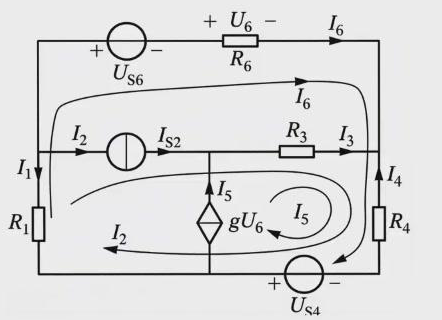
独立电流源
I S 2 I_{S2} g U 6 gU_6 R 1 R_1 R 4 R_4 U S 4 U_{S4} R 3 R_3
解。 选
R 1 R_1 R 4 R_4 U S 4 U_{S4} R 3 R_3 支路 为树，连支
I S 2 I_{S2} g U 6 gU_6 R 6 R_6
I 2 = I S 2 , I 5 = g U 6 , ( R 1 + R 4 + R 6 ) I 6 + ( R 1 + R 4 ) I 2 + R 4 I 5 = U S 4 − U S 6 , U 6 = R 6 I 6 . I_2=I_{S2},\qquad I_5=gU_6,\qquad (R_1+R_4+R_6)I_6+(R_1+R_4)I_2+R_4I_5=U_{S4}-U_{S6},\qquad U_6=R_6I_6 . 第三个回路 的电流直接标成
I 6 I_6 R 6 R_6 连支 ，回路电流就等于连支电流 。代入：6 I 6 + 4 + 2 I 6 = 0 6I_6+4+2I_6=0
I 2 = 1 A , I 6 = − 0.5 A , I 5 = − 0.5 A , I 1 = − I 2 − I 6 = − 0.5 A , I 3 = I S 2 + I 5 = 0.5 A , I 4 = − I 3 − I 6 = 0 . I_2=1\ \text{A},\quad I_6=-0.5\ \text{A},\quad I_5=-0.5\ \text{A},\quad I_1=-I_2-I_6=-0.5\ \text{A},\quad I_3=I_{S2}+I_5=0.5\ \text{A},\quad I_4=-I_3-I_6=0 .
结论 7 · 网孔还是基本回路
(1)
网孔 ：平面电路，不含电流源，或电流源在外围 （只属于一个网孔）。 直观，优先选取 。
(2)
基本回路 ：电流源（独立或受控）在中间支路 上。 选树时把电流源选为连支 ，回路方向取连支电流方向； 含电流源的回路，回路电流直接等于电流源电流。 每个基本回路的环流就是它那条连支的实际电流 。
教材 例 4.2.3 是用基本回路 列一般电路方程 的练习：选
R 2 R_2 支路 为树后，三个回路 方程为
( R 1 + R 2 ) I l 1 − R 2 I l 2 − R 2 I l 3 = U S 1 (R_1+R_2)I_{l1}-R_2I_{l2}-R_2I_{l3}=U_{S1} − R 2 I l 1 + ( R 2 + R 4 ) I l 2 + R 2 I l 3 = − U S 4 -R_2I_{l1}+(R_2+R_4)I_{l2}+R_2I_{l3}=-U_{S4} − R 2 I l 1 + R 2 I l 2 + ( R 2 + R 3 + R 5 ) I l 3 = 0 -R_2I_{l1}+R_2I_{l2}+(R_2+R_3+R_5)I_{l3}=0 互电阻 的正负由两个回路 在公共支路 上的方向 是否一致决定。
习题 19 · 两个电流源的回路方程
练习 · 先独立作答
下图记上顶点 P、左下 L、右下 Q、中心
O。 R 1 = 1 Ω R_1=1\ \Omega R 2 = 2 Ω R_2=2\ \Omega R 3 = 3 Ω R_3=3\ \Omega R 4 R_4 电流源
I S 5 = 5 I_{S5}=5 流向
P，I S 6 = 6 I_{S6}=6 流向 Q。求
I 1 I_1 I 4 I_4
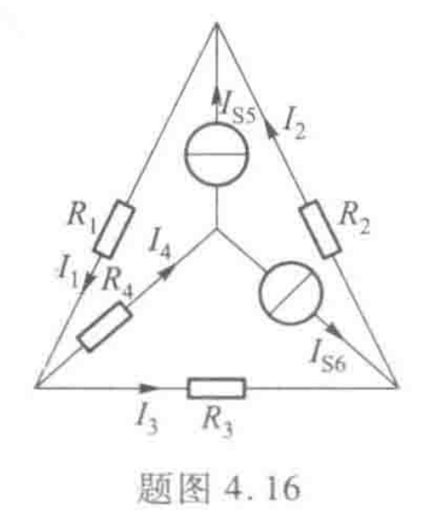
习题 4.16 的电路。
提示 · 让每个电流源只在一个回路里
回路 1：O→P→L→O（含
I S 5 I_{S5} I S 6 I_{S6} R 3 R_3 R 2 R_2 R 1 R_1 回路
3 的电流 未知。
解析
I l 1 = 5 I_{l1}=5 I l 2 = 6 I_{l2}=6 回路 在
R 1 R_1 方向 相同，回路 2 与回路 3 在
R 2 R_2 方向 相同：
( R 1 + R 2 + R 3 ) I l 3 + R 2 I l 2 + R 1 ( I l 1 + I l 2 ) = 0 ⇒ 6 I l 3 + 12 + 11 = 0 , I l 3 = − 23 6 A . (R_1+R_2+R_3)I_{l3}+R_2I_{l2}+R_1(I_{l1}+I_{l2})=0\ \Rightarrow\ 6I_{l3}+12+11=0,\qquad I_{l3}=-\frac{23}{6}\ \text{A}. I 3 = − 23 6 ≈ − 3.83 A , I 2 = I l 3 + 6 = 13 6 ≈ 2.17 A , I 1 = I l 3 + 11 = 43 6 ≈ 7.17 A , I 4 = 11 A . I_3=-\frac{23}{6}\approx-3.83\ \text{A},\quad I_2=I_{l3}+6=\frac{13}{6}\approx2.17\ \text{A},\quad I_1=I_{l3}+11=\frac{43}{6}\approx7.17\ \text{A},\quad I_4=11\ \text{A}. R 4 R_4 与电流源串联 在回路 1、2
上，I 4 = I l 1 + I l 2 I_4=I_{l1}+I_{l2} 阻值 不影响结果 。
更多课本习题 · 2 道
习题 4.17 含中间电流源的电路 ：同例
26，把电流源选为连支 ，只对剩下的回路 列 KVL。习题 4.18 含中间受控电流源：同例
27，再补 控制量的附加方程 。
9 节点电压法
回路 法以回路 电流为未知量，自动 满足 KCL，只列
KVL；节点 法反过来，以节点电压 为未知量，自动满足 KVL ，只列 KCL 。独立 节点
n − 1 n-1 b − n + 1 b-n+1 更省 。
9.1 节点电压方程
例 28 · 【真题】两个电流源的梯形网络：负载的功率
2025—2026 秋冬期中回忆卷 · 基本题第 1 题（6 分）· 建议用时 8
分钟
左侧 1 A 电流源从地向上流入节点 1；顶部 1
A 电流源从节点 1 流向节点 3；节点 1 对地 10 Ω，1—2 间 10 Ω，节点 2 对地
5 Ω，2—3 间 5 Ω，节点 3 对地接
R L R_L
图中电路 ，分别求
R L = 5 Ω R_L=5\ \Omega R L = 10 Ω R_L=10\ \Omega R L R_L 吸收 的功率。（回忆者记不清 图中各电阻 是 5 Ω 还是 10
Ω，这里按手写版图 上的数值 。）
解。 取底线为参考节点，节点 1、2、3 的电压 为
U 1 , U 2 , U 3 U_1,U_2,U_3 电流源 直接写进方程 右边，流入 为正：
节点 1 : ( 1 10 + 1 10 ) U 1 − 1 10 U 2 = 1 − 1 = 0 节点 2 : ( 1 10 + 1 5 + 1 5 ) U 2 − 1 10 U 1 − 1 5 U 3 = 0 节点 3 : ( 1 5 + 1 R L ) U 3 − 1 5 U 2 = 1 \begin{aligned}\text{节点 1}:&\ \Big(\frac1{10}+\frac1{10}\Big)U_1-\frac1{10}U_2=1-1=0\\ \text{节点 2}:&\ \Big(\frac1{10}+\frac15+\frac15\Big)U_2-\frac1{10}U_1-\frac15U_3=0\\ \text{节点 3}:&\ \Big(\frac15+\frac1{R_L}\Big)U_3-\frac15U_2=1\end{aligned} 节点 1 的两个电流源 一进一出，右边为零，得
U 1 = U 2 2 U_1=\dfrac{U_2}{2} 代入节点
2：0.45 U 2 = 0.2 U 3 0.45U_2=0.2U_3 U 2 = 4 9 U 3 U_2=\dfrac49U_3 代入节点
3：
( 1 5 − 4 45 + 1 R L ) U 3 = ( 1 9 + 1 R L ) U 3 = 1 , U 3 = 9 R L 9 + R L . \Big(\frac15-\frac{4}{45}+\frac1{R_L}\Big)U_3=\Big(\frac19+\frac1{R_L}\Big)U_3=1,\qquad U_3=\frac{9R_L}{9+R_L}. R L = 5 Ω : U 3 = 45 14 V , P = U 3 2 R L = 405 196 ≈ 2.07 W ; R L = 10 Ω : U 3 = 90 19 V , P = 810 361 ≈ 2.24 W . R_L=5\ \Omega:\ U_3=\frac{45}{14}\ \text{V},\quad P=\frac{U_3^2}{R_L}=\frac{405}{196}\approx2.07\ \text{W};\qquad R_L=10\ \Omega:\ U_3=\frac{90}{19}\ \text{V},\quad P=\frac{810}{361}\approx2.24\ \text{W}. 检验。
U 3 = 1 × ( 9 ∥ R L ) U_3=1\times(9\parallel R_L) R L R_L 进去 ，左边的网络等效 为 1 A 电流源 并 9
Ω（5 + 10 ∥ … 5+10\parallel\ldots ( 10 + 10 ) ∥ 5 = 4 (10+10)\parallel5=4 单元 的诺顿等效 ；照此还可以看出
R L = 9 Ω R_L=9\ \Omega 时功率 最大，P max = 9 2 4 × 9 = 2.25 P_{\max}=\dfrac{9^2}{4\times9}=2.25 小于 它。
得分步骤 （原卷未给分步分值）：选参考节点、列三个节点方程（电流源进右边 ）；U 3 U_3 P = U 3 2 / R L P=U_3^2/R_L 两种情况各算一次 。
例 29 · 节点电压法求
I 4 I_4 I 6 I_6
U S 1 = 20 U_{S1}=20 U S 3 = 40 U_{S3}=40 U S 6 = 10 U_{S6}=10 I S 2 = 10 I_{S2}=10 I S 5 = 5 I_{S5}=5 R 1 = 1 Ω R_1=1\ \Omega R 3 = R 4 = 2 Ω R_3=R_4=2\ \Omega R 6 = 10 Ω R_6=10\ \Omega I 4 I_4 I 6 I_6 教材 例
4.2.6）
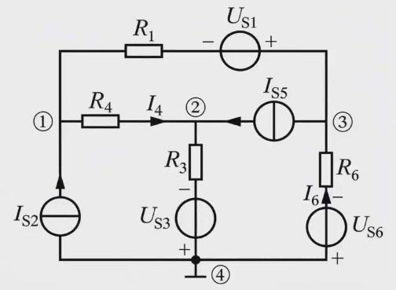
节点 ④ 为参考节点；电流源
I S 5 I_{S5}
解。 电流源
I S 5 I_{S5} 中间支路 ，网孔法会多出麻烦 ；独立 节点只有 3 个，用节点 法。选 ④
为参考节点 ，节点 ①②③ 的电压记
U 1 U_1 U 2 U_2 U 3 U_3 节点 列
KCL，流出 的电阻电流写成 “本节点电压 减邻节点电压 再除以电阻 ”，电源项移到右边 ：
① : ( 1 R 4 + 1 R 1 ) U 1 − 1 R 4 U 2 − 1 R 1 U 3 = − U S 1 R 1 + I S 2 ② : ( 1 R 4 + 1 R 3 ) U 2 − 1 R 4 U 1 = − U S 3 R 3 + I S 5 ③ : ( 1 R 1 + 1 R 6 ) U 3 − 1 R 1 U 1 = U S 1 R 1 − U S 6 R 6 − I S 5 \begin{aligned}\text{①}:&\ \Big(\frac1{R_4}+\frac1{R_1}\Big)U_1-\frac1{R_4}U_2-\frac1{R_1}U_3=-\frac{U_{S1}}{R_1}+I_{S2}\\ \text{②}:&\ \Big(\frac1{R_4}+\frac1{R_3}\Big)U_2-\frac1{R_4}U_1=-\frac{U_{S3}}{R_3}+I_{S5}\\ \text{③}:&\ \Big(\frac1{R_1}+\frac1{R_6}\Big)U_3-\frac1{R_1}U_1=\frac{U_{S1}}{R_1}-\frac{U_{S6}}{R_6}-I_{S5}\end{aligned} U S 1 U_{S1} R 1 R_1 U S 3 U_{S3} U S 6 U_{S6} 经电阻 对着
②、③，取负。电流源 流入取正、流出 取负。代入数据 ：
1.5 U 1 − 0.5 U 2 − U 3 = − 10 , − 0.5 U 1 + U 2 = − 15 , − U 1 + 1.1 U 3 = 14 , 1.5U_1-0.5U_2-U_3=-10,\qquad -0.5U_1+U_2=-15,\qquad -U_1+1.1U_3=14, 解得
U 1 = − 14 V , U 2 = − 22 V , U 3 = 0 , U_1=-14\ \text{V},\quad U_2=-22\ \text{V},\quad U_3=0, I 4 = U 1 − U 2 R 4 = 4 A , I 6 = − U S 6 − U 3 R 6 = − 1 A . I_4=\frac{U_1-U_2}{R_4}=4\ \text{A},\qquad I_6=\frac{-U_{S6}-U_3}{R_6}=-1\ \text{A}. I 6 I_6 取图 中向上流入 ③
的方向 ：R 6 R_6 U S 6 U_{S6} − U S 6 -U_{S6}
例 29
的三个方程 左边有固定的样子 ：对角线 是“与本节点相连的电导之和 ”，其余是“两节点 之间电导 之和”取负。下面在一般电路 上推出这个规律。
定义 19 · 节点电压与节点电压法
任选一个节点作参考节点 （电位记为
0），其余各节点对参考节点的电压称为节点电压 。 以
n − 1 n-1 n − 1 n-1 节点电压法 。 任一支路电压都是两端节点电压之差，所以
KVL 自动满足 。
节点 d 为参考节点，节点电压为
U a U_a U b U_b U c U_c R 3 R_3 I S 3 I_{S3} R 6 R_6 U S 6 U_{S6}
推导。 三个独立节点的
KCL（各电流方向 按图中箭头 ，n c n_c 电流 都流入 c）：
n a : I 1 + I 2 − I 3 = 0 , n b : I 3 + I 4 − I 5 = 0 , n c : I 1 + I 4 + I 6 = 0 . n_a:\ I_1+I_2-I_3=0,\qquad n_b:\ I_3+I_4-I_5=0,\qquad n_c:\ I_1+I_4+I_6=0 . 每个支路电流 都用节点电压 表示：
I 1 = G 1 ( U a − U c ) , I 2 = G 2 U a , I 3 = − I S 3 , I 4 = G 4 ( U b − U c ) , I 5 = − G 5 U b , I 6 = G 6 ( U S 6 − U c ) . I_1=G_1(U_a-U_c),\quad I_2=G_2U_a,\quad I_3=-I_{S3},\quad I_4=G_4(U_b-U_c),\quad I_5=-G_5U_b,\quad I_6=G_6(U_{S6}-U_c). I 6 I_6 流过
R 6 R_6 U S 6 U_{S6} R 6 R_6 电位
U c − U S 6 U_c-U_{S6} 移到右边 ：
{ ( G 1 + G 2 ) U a − G 1 U c = − I S 3 ( G 4 + G 5 ) U b − G 4 U c = I S 3 − G 1 U a − G 4 U b + ( G 1 + G 4 + G 6 ) U c = G 6 U S 6 \begin{cases}(G_1+G_2)U_a-G_1U_c=-I_{S3}\\(G_4+G_5)U_b-G_4U_c=I_{S3}\\-G_1U_a-G_4U_b+(G_1+G_4+G_6)U_c=G_6U_{S6}\end{cases} R 3 R_3 与电流源串联 ，支路电流恒 为
I S 3 I_{S3} R 3 R_3
定理 9 · 节点电压方程的一般式
G k k U k + ∑ j ≠ k G k j U j = ∑ ( k ) G U S + ∑ ( k ) I S , k = 1 , … , n − 1 . G_{kk}U_k+\sum_{j\ne k}G_{kj}U_j=\sum_{(k)}GU_S+\sum_{(k)}I_S,\qquad k=1,\dots,n-1 . (1) 自电导
G k k G_{kk} k k 与电流源串联的电导除外 ，恒为正。
(2) 互电导
G k j G_{kj} k k j j
(3)
∑ G U S \sum GU_S k k k k
(4)
∑ I S \sum I_S k k
证明。 把节点
k k 一条 支路写成一般形式 ：接在
k k j j G G 电压源
U S U_S U S U_S k k k k 流出 该支路的电流 是
I = G ( U k − U j − U S ) = G U k − G U j − G U S . I=G\big(U_k-U_j-U_S\big)=GU_k-GU_j-GU_S . 对节点
k k 流出 的电流之和 = 流入的电流源 之和”。每条电阻支路贡献
G U k GU_k 自电导 ）、− G U j -GU_j 互电导 ，接参考节点 时
U j = 0 U_j=0 − G U S -GU_S 移到右边 成为
+ G U S +GU_S 背着
k k U S U_S 电流源支路 的电流与两端电压无关 ，串联电导 不进入左边，直接把电流源移到右边 。▫ \square
米尔曼公式。
只有两个节点 时，只有一个独立节点电压 ：
U = ∑ G U S + ∑ I S ∑ G . U=\frac{\sum GU_S+\sum I_S}{\sum G}.
易错 · 与电流源串联的电阻
电流源可以看成电导为零 的元件，与它串联的整条支路电导为零。 那个电阻 再大再小都不改变支路电流 ，不进自电导，也不进互电导 。它只影响电流源 两端的电压 ，求电流源功率时 才用到。
习题 20 · 两个电压源接在同一点
练习 · 先独立作答
下图中
R 3 = 3 Ω R_3=3\ \Omega R 4 = 4 Ω R_4=4\ \Omega R 5 = 12 Ω R_5=12\ \Omega R 6 = 64 Ω R_6=64\ \Omega U S 1 = 3 U_{S1}=3 U S 2 = 5 U_{S2}=5 U S 1 U_{S1} U S 2 U_{S2} 节点电压法 求各支路电流 ，电流方向 按图中箭头 。（作业
4.22）
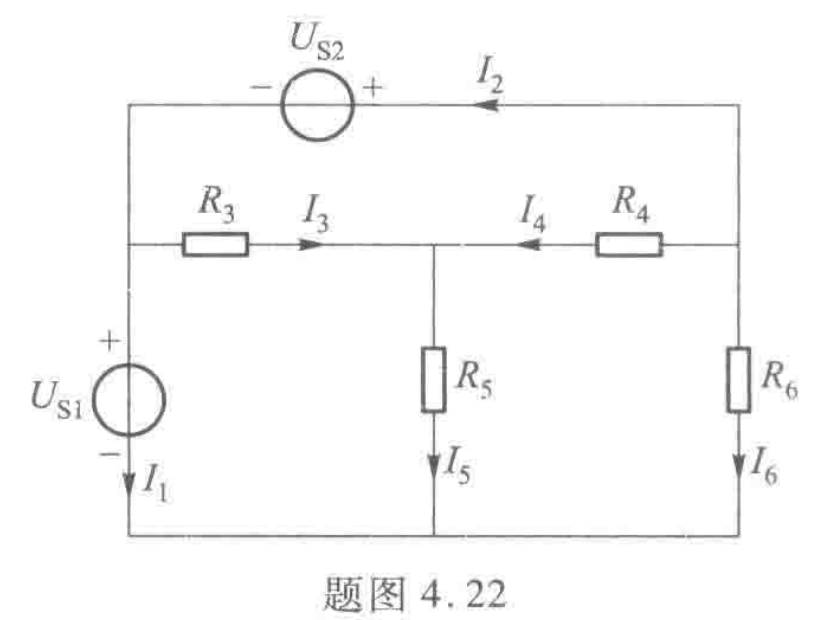
习题 4.22 的电路。
提示 · 取下方为参考点，两个电压源都把电位直接定下来
左节点 L 经
U S 1 U_{S1} V L = U S 1 V_L=U_{S1} 节点
N 经
U S 2 U_{S2} V N = V L + U S 2 V_N=V_L+U_{S2} R 3 R_3 R 4 R_4 R 5 R_5 列方程 。
解析
V L = 3 V_L=3 V N = 3 + 5 = 8 V_N=3+5=8
( 1 3 + 1 4 + 1 12 ) V M − 1 3 × 3 − 1 4 × 8 = 0 ⇒ 2 3 V M = 3 , V M = 4.5 V . \Big(\frac13+\frac14+\frac1{12}\Big)V_M-\frac13\times3-\frac14\times8=0\ \Rightarrow\ \frac23V_M=3,\quad V_M=4.5\ \text{V}. I 3 = V L − V M R 3 = − 0.5 A , I 4 = V N − V M R 4 = 0.875 A , I 5 = V M R 5 = 0.375 A , I 6 = V N R 6 = 0.125 A . I_3=\frac{V_L-V_M}{R_3}=-0.5\ \text{A},\quad I_4=\frac{V_N-V_M}{R_4}=0.875\ \text{A},\quad I_5=\frac{V_M}{R_5}=0.375\ \text{A},\quad I_6=\frac{V_N}{R_6}=0.125\ \text{A}. 电压源 支路的电流 由 KCL 求。N
点：I 2 + I 4 + I 6 = 0 I_2+I_4+I_6=0 I 2 = − 1 I_2=-1 I 2 = I 1 + I 3 I_2=I_1+I_3 I 1 = − 0.5 I_1=-0.5
习题 21 · 用节点法重做网孔例题
练习 · 先独立作答
下图
U S 1 = 100 U_{S1}=100 U S 2 = 140 U_{S2}=140 R 1 = 15 Ω R_1=15\ \Omega R 2 = 5 Ω R_2=5\ \Omega R 3 = 10 Ω R_3=10\ \Omega R 4 = 4 Ω R_4=4\ \Omega R 5 = 50 Ω R_5=50\ \Omega 网孔法要解
3 个方程 ，得到
I 4 = 10 I_4=10 电路 独立节点 有几个？用节点电压法 求
I 4 I_4
三个网孔：上方
R 1 R_1 U S 1 U_{S1} R 4 R_4 R 3 R_3 R 4 R_4 R 5 R_5 R 5 R_5 R 2 R_2 U S 2 U_{S2}
提示 · 先数节点
左侧竖线 上端与上方两条横线 的左端是同一节点
L；右侧竖线 是导线，把右上、右下连成同一节点 R；左下角是第三个节点 B。取
B 为参考节点 。
解析
只有 3 个节点 ，独立 节点 2 个，比 3 个网孔 少。设
U L U_L U R U_R
L : ( 1 15 + 1 4 + 1 10 ) U L − ( 1 15 + 1 4 ) U R = 100 15 , \text{L}:\ \Big(\frac1{15}+\frac14+\frac1{10}\Big)U_L-\Big(\frac1{15}+\frac14\Big)U_R=\frac{100}{15}, R : − ( 1 15 + 1 4 ) U L + ( 1 15 + 1 4 + 1 50 + 1 5 ) U R = − 100 15 − 140 5 . \text{R}:\ -\Big(\frac1{15}+\frac14\Big)U_L+\Big(\frac1{15}+\frac14+\frac1{50}+\frac15\Big)U_R=-\frac{100}{15}-\frac{140}{5}. U S 1 U_{S1} R 1 R_1 U S 2 U_{S2} R 2 R_2 U L = − 60 U_L=-60 U R = − 100 U_R=-100
I 4 = U L − U R 4 = 10 A , I_4=\frac{U_L-U_R}{4}=10\ \text{A}, 与网孔 法一致，只解了 2 个方程 。
更多课本习题 · 3 道
习题 4.19
已知参考点 ，求节点电压 以及电流源 、电压源 发出的功率：先列节点方程 ；求电流源功率时要用到与它串联的电阻上的电压（易错框）。 习题 4.20 七个电阻、一个 24 V
电压源 和一个电流源 ，求三个节点电压 ：直接套定理 9。习题 4.21 以 d
为参考节点列节点方程 ，不求解 ：练自电导 、互电导 和右边各项的符号 ，与电流源串联 的电导不写。
9.2 纯电压源支路与受控源
例 30 · 参考节点选在纯电压源一端
U S 1 = U S 2 = 4 U_{S1}=U_{S2}=4 U S 4 = 10 U_{S4}=10 I S 3 = 1 I_{S3}=1 R 1 = R 4 = R 5 = 2 Ω R_1=R_4=R_5=2\ \Omega I 4 I_4 教材 例
4.2.7）
支路 2 只有电压源
U S 2 U_{S2}
解。 支路 2
只有电压源 、没有电阻 ，电导无穷大 ，节点方程里写不出它的电流 。把参考节点选在它的一端
③，立刻得到
U 1 = U S 2 = 4 U_1=U_{S2}=4 节点 ① 不必列方程。只对节点 ②
列方程 （I S 3 I_{S3} U S 4 U_{S4}
( 1 R 4 + 1 R 5 ) U 2 − 1 R 4 U 1 = − U S 4 R 4 − I S 3 ⇒ U 2 − 2 = − 5 − 1 , U 2 = − 4 V . \Big(\frac1{R_4}+\frac1{R_5}\Big)U_2-\frac1{R_4}U_1=-\frac{U_{S4}}{R_4}-I_{S3}\ \Longrightarrow\ U_2-2=-5-1,\quad U_2=-4\ \text{V}. 由支路 4 的电压关系：
I 4 = U 2 − U 1 + U S 4 R 4 = − 4 − 4 + 10 2 = 1 A . I_4=\frac{U_2-U_1+U_{S4}}{R_4}=\frac{-4-4+10}{2}=1\ \text{A}. U S 1 U_{S1} R 1 R_1 支路 与
U S 2 U_{S2} 节点电压 没有影响 。
例 31 · 含 VCCS 的节点方程
图中 4 V、6 V 电压源各串 2 Ω，4 A、1 A 电流源各串 6 Ω，另有三个 2 Ω
电阻； 左边是电压 控制的电流源
2 U 2U 控制量
U U 电阻 上的电压 。以 d 为参考节点 ，求各节点电压 和电流
I I 教材 例
4.2.8）
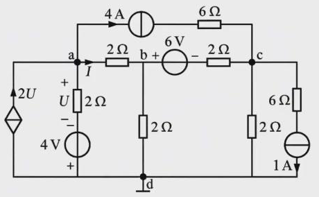
节点 d 为参考节点；左边是电压控制的电流源
2 U 2U U U
解。 受控源先当独立源：VCCS
2 U 2U 流入 a。
a : ( 1 2 + 1 2 ) U a − 1 2 U b = − 4 2 − 4 + 2 U b : − 1 2 U a + ( 1 2 + 1 2 + 1 2 ) U b − 1 2 U c = 6 2 c : − 1 2 U b + ( 1 2 + 1 2 ) U c = 4 − 6 2 − 1 \begin{aligned}\text{a}:&\ \Big(\frac12+\frac12\Big)U_a-\frac12U_b=-\frac42-4+2U\\ \text{b}:&\ -\frac12U_a+\Big(\frac12+\frac12+\frac12\Big)U_b-\frac12U_c=\frac62\\ \text{c}:&\ -\frac12U_b+\Big(\frac12+\frac12\Big)U_c=4-\frac62-1\end{aligned} 逐项说明：节点 a 的 4 A 电流源串 6 Ω，电导不计 ；4 V 电压源 “−”端经 2 Ω
对着 a，取
− 4 2 -\frac42 流出 ，取
− 4 -4 受控源 流入
a，取
+ 2 U +2U 支路 ，自电导
3 2 \frac32 串联 的 6 Ω 都不计，4 A
流入、1 A 流出，6 V 的“−”端经 2 Ω 对着 c。
再用节点电压表示控制量 ：U U 电阻 上的电压，它下端是 4 V 电源 的“−”端，电位
− 4 -4
附加 : U = U a + 4 . \text{附加}:\ U=U_a+4 . 联立 解得
U a = − 8 3 V , U b = 4 3 V , U c = 2 3 V , I = U a − U b 2 = − 2 A . U_a=-\frac83\ \text{V},\qquad U_b=\frac43\ \text{V},\qquad U_c=\frac23\ \text{V},\qquad I=\frac{U_a-U_b}{2}=-2\ \text{A}. 检验 节点
c：− 2 3 + 2 3 = 0 -\frac23+\frac23=0 4 − 3 − 1 = 0 4-3-1=0 课堂课件 （0930
第 16 页）把
G b b G_{bb} 写成 别的值、4 A 的符号 写反，算出 的数与此不同，以上按图逐项重列 。
电路 中有多条纯电压源 支路时，参考节点只能选在其中一条的一端 ，其余的还是写不出节点方程 。
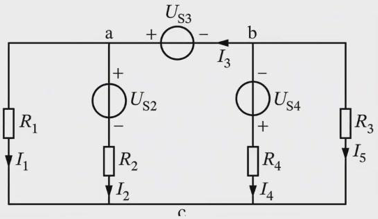
节点 a、b 间的支路 3 只有理想电压源
U S 3 U_{S3}
结论 8 · 改进的节点电压法
(1)
设理想电压源所在支路的电流为未知量，把这条支路当作电流源支路列节点方程。
(2) 多了一个未知量，补充电压源两端电压与节点电压的约束关系 。
(3)
含受控源时，先把受控源当独立源，再用节点电压表示控制量，补附加方程。
上图以 c 为参考节点 ，设
U S 3 U_{S3} 支路电流
I 3 I_3
a : ( 1 R 1 + 1 R 2 ) U a = U S 2 R 2 + I 3 , b : ( 1 R 4 + 1 R 5 ) U b = − U S 4 R 4 − I 3 , 补充 : U a − U b = U S 3 . \text{a}:\ \Big(\frac1{R_1}+\frac1{R_2}\Big)U_a=\frac{U_{S2}}{R_2}+I_3,\qquad \text{b}:\ \Big(\frac1{R_4}+\frac1{R_5}\Big)U_b=-\frac{U_{S4}}{R_4}-I_3,\qquad \text{补充}:\ U_a-U_b=U_{S3}. 三个方程 、三个未知量 （U a U_a U b U_b I 3 I_3 应为
R 5 R_5 电流 是
I 5 I_5
应用：数/模转换。 教材 例 4.2.9 用节点法分析 三位 D/A
解码电路 ：第
k k 代码 为 1 时开关接
U S U_S 接地 。R = 10 Ω R=10\ \Omega U S = 12 U_S=12 节点列方程 ，开关 全接地时右边全为 0，由叠加可得
U o = 4 b 2 + 2 b 1 + b 0 ( V ) , U_o=4b_2+2b_1+b_0\ \ (\text{V}), 输出电压 正比于二进制数
b 2 b 1 b 0 b_2b_1b_0 十进制 值。
结论 9 · 方法选择的顺序
(1)
先看能不能等效化简 （串并联、平衡电桥、Y-Δ、电源变换）。
(2) 比较
n − 1 n-1 b − n + 1 b-n+1 方程少的优先 ； 再算上电流源、电压源能直接省掉的方程。
(3)
回路法：没有电流源或电流源在外围，用网孔 ； 电流源在中间支路，用基本回路 ，并把电流源选为连支。
(4)
节点法：纯电压源支路的一端选为参考节点 ； 多条纯电压源支路用改进节点法 。
(5)
含受控源，无论哪种方法：先当独立源 ，再用本方法的未知量（支路电流、回路电流或节点电压）表示控制量 。
习题 22 · 同时含 CCVS 和 VCCS
练习 · 先独立作答
U S = 10 U_S=10 R 1 = 1 Ω R_1=1\ \Omega g m = 1.5 g_m=1.5 R 2 = 2 Ω R_2=2\ \Omega R m = 3 Ω R_m=3\ \Omega R 3 = 6 Ω R_3=6\ \Omega U S U_S R 1 R_1 I 1 I_1 流向 ②），②、④ 之间是
R 2 R_2 U = U 2 U=U_2 电压源
R m I 1 R_mI_1 电流源
g m U g_mU R 3 R_3 电压源
U S U_S 发出 的功率。（教材 例 4.2.10）
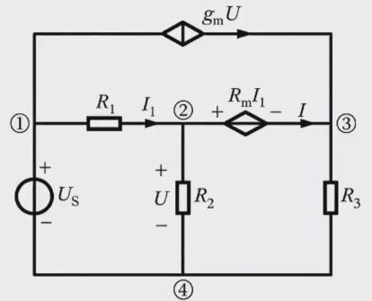
节点 ④ 为参考节点；②、③ 之间是受控电压源
R m I 1 R_mI_1 g m U g_mU
提示 · ① 的电压已知，②③ 之间按结论 8 处理
选 ④
为参考节点 ，U 1 = U S U_1=U_S 电压源 支路没有电阻 ，设它的电流
I I 电流 源列 ②、③ 的方程 ，再补
U 2 − U 3 = R m I 1 U_2-U_3=R_mI_1 控制量
U U I 1 I_1 表达式 。
解析
② : − 1 R 1 U 1 + ( 1 R 1 + 1 R 2 ) U 2 = − I ③ : 1 R 3 U 3 = I + g m U 补充 : U 2 − U 3 = R m I 1 , U = U 2 , I 1 = U 1 − U 2 R 1 \begin{aligned}\text{②}:&\ -\frac1{R_1}U_1+\Big(\frac1{R_1}+\frac1{R_2}\Big)U_2=-I\\ \text{③}:&\ \frac1{R_3}U_3=I+g_mU\\ \text{补充}:&\ U_2-U_3=R_mI_1,\qquad U=U_2,\qquad I_1=\frac{U_1-U_2}{R_1}\end{aligned} 解得
U 2 = U = 45 2 V , U 3 = 60 V , I 1 = − 25 2 A , I = − 95 4 A . U_2=U=\frac{45}{2}\ \text{V},\qquad U_3=60\ \text{V},\qquad I_1=-\frac{25}{2}\ \text{A},\qquad I=-\frac{95}{4}\ \text{A}. U S U_S 流出 的电流是
I 1 + g m U I_1+g_mU R 1 R_1 电流源 ）：
P = U S ( I 1 + g m U ) = 10 × ( − 25 2 + 135 4 ) = 212.5 W . P=U_S(I_1+g_mU)=10\times\Big(-\frac{25}{2}+\frac{135}{4}\Big)=212.5\ \text{W}.
习题 23 · 选哪种方法
练习 · 先独立作答
对例 29 的电路（6
条支路：I S 2 I_{S2} R 1 R_1 U S 1 U_{S1} R 4 R_4 I S 5 I_{S5} R 3 R_3 U S 3 U_{S3} R 6 R_6 U S 6 U_{S6} 4
个节点），如果改用回路电流法，应该用网孔还是基本回路？ 实际要解几个 KVL
方程？
提示 · 看电流源在不在外围
I S 5 I_{S5} 网孔 共有，在中间支路 。
解析
b = 6 b=6 n = 4 n=4 b − n + 1 = 3 b-n+1=3 n − 1 = 3 n-1=3 I S 5 I_{S5} 中间支路 ，应该用基本回路 ：把
I S 2 I_{S2} I S 5 I_{S5} 选为连支 ，这两个回路 电流直接等于电流源电流 ，只需对剩下 的一个基本回路 列
KVL。回路 法实际只解 1 个方程 ，比节点 法还省。所以比较
n − 1 n-1 b − n + 1 b-n+1 电流源 、电压源 能省掉多少方程 （结论 9 (2)）。
更多课本习题 · 3 道
习题 4.23
含受控源 （α = 2.8 \alpha=2.8 电路 ，求电流 和电流源发出 的功率：结论
8 (3)，先当独立源 ，再用节点电压表示控制量 。习题 4.24 含 VCCS
g g 电压 为零，求
g g 电压 等于
0
当作 已知条件代入节点 方程，g g 未知量 解。习题 4.25 三个电压源与一个 6 A
电流源 ，求电流源发出 的功率：先选纯电压源 支路一端为参考节点 ，求出电流源 两端电压，再乘电流 。
10 叠加定理与替代定理
前面的方法 都是“列方程 、解方程 ”。从这一单元起讨论电路定理 ：利用线性电路 的性质，把复杂电路拆开 ，或把一部分 换成简单 的东西。
10.1 叠加定理
例 32 · 两个电源分别作用
菱形电路的四个顶点记上 T、左 L、右 N、下
B。 R 1 = 2 Ω R_1=2\ \Omega R 2 = 4 Ω R_2=4\ \Omega R 3 = 4 Ω R_3=4\ \Omega R 4 = 8 Ω R_4=8\ \Omega 电流源
I S = 3 I_S=3 流向 T；电压源
U S = 9 U_S=9 U 1 U_1 R 1 R_1 电压 ，“+”在 L 端，即
U 1 = V L − V T U_1=V_L-V_T U 1 U_1 教材 例
4.3.1）
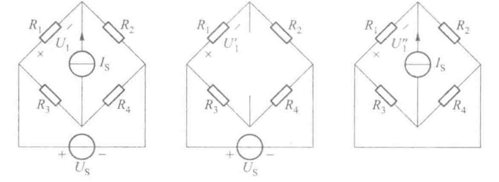
左：原电路；中：电压源单独作用，电流源开路；右：电流源单独作用，电压源短路。R 1 R_1
解。
两个电源 分别单独作用 ，其余电源 置零：电压源置零就是短路 ，电流源置零就是开路 。
U S U_S I S I_S R 1 R_1 R 2 R_2 串联 接在
U S U_S 分压
U 1 ′ = R 1 R 1 + R 2 U S = 2 6 × 9 = 3 V . U_1'=\frac{R_1}{R_1+R_2}U_S=\frac{2}{6}\times9=3\ \text{V}. I S I_S U S U_S 同一点 ）：I S I_S 流出 ，经并联 的
R 1 R_1 R 2 R_2 R 1 R_1 流向 L 的电流
R 2 R 1 + R 2 I S = 2 \dfrac{R_2}{R_1+R_2}I_S=2
U 1 ″ = V L − V T = − R 1 R 2 R 1 + R 2 I S = − 2 × 4 6 × 3 = − 4 V . U_1''=V_L-V_T=-\frac{R_1R_2}{R_1+R_2}I_S=-\frac{2\times4}{6}\times3=-4\ \text{V}. 两者 相加：
U 1 = U 1 ′ + U 1 ″ = 3 − 4 = − 1 V . U_1=U_1'+U_1''=3-4=-1\ \text{V}.
例 33 · 含受控源的叠加
R 1 = 20 Ω R_1=20\ \Omega R 2 = 5 Ω R_2=5\ \Omega R 3 = 2 Ω R_3=2\ \Omega β = 10 \beta=10 U S = 10 U_S=10 I S = 1 I_S=1 U S U_S R 1 R_1 节点
N，R 2 R_2 接地 （电流
I 2 I_2 R 3 R_3 I 3 I_3 电流源
β I 2 \beta I_2 支路 到右节点
M；电流源
I S I_S 流入 M。用叠加定理 求
I 3 I_3 教材 例
4.3.3）
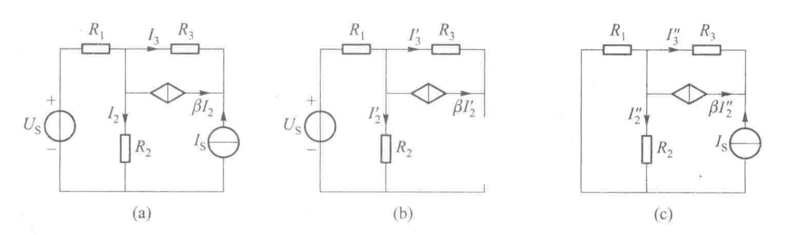
(a) 原电路；(b) 电压源单独作用；(c)
电流源单独作用。受控源
β I 2 \beta I_2
解。
受控源 不是激励，每次计算都保留 ，只把独立源轮流置零 。M
点只有三条支路 ，KCL 给出
I 3 + β I 2 + I S = 0 I_3+\beta I_2+I_S=0
U S U_S I S I_S I 3 ′ + β I 2 ′ = 0 I_3'+\beta I_2'=0 总电流为零 ，R 1 R_1 R 2 R_2 串联 ：
I 2 ′ = U S R 1 + R 2 = 0.4 A , I 3 ′ = − β I 2 ′ = − 4 A . I_2'=\frac{U_S}{R_1+R_2}=0.4\ \text{A},\qquad I_3'=-\beta I_2'=-4\ \text{A}. I S I_S U S U_S I S I_S 进入 N，从 N 分到
R 1 R_1 R 2 R_2 支路 ，按分流
I 2 ″ = R 1 R 1 + R 2 I S = 0.8 A , I 3 ″ = − ( I S + β I 2 ″ ) = − 9 A . I_2''=\frac{R_1}{R_1+R_2}I_S=0.8\ \text{A},\qquad I_3''=-(I_S+\beta I_2'')=-9\ \text{A}. I 3 = I 3 ′ + I 3 ″ = − 13 A . I_3=I_3'+I_3''=-13\ \text{A}.
定义 20 · 激励与响应、线性电路
独立电源称为电路的激励 ，由它们引起的 各支路电压、电流称为响应 。 由线性电阻、线性受控源和独立源组成的电路称为线性电路 。
定理 10 · 叠加定理
在含有若干个独立电源的线性电路中，任一支路电压（电流）都是各个独立电源分别单独作用时在该支路产生的电压（电流）的代数和 。 某个电源单独作用时，其余独立电压源短路 、独立电流源开路 ，电路其他部分（包括受控源）不变 。
证明。 列节点电压方程（定理 9），系数矩阵
𝐆 \mathbf G 只由电阻和受控源系数决定 ；受控源先当独立源列写，再把控制量用节点电压表示后移到左边，右边只剩独立源 ：
𝐆 𝐔 = 𝐛 , b i = ∑ ( i ) G U S + ∑ ( i ) I S . \mathbf G\,\mathbf U=\mathbf b,\qquad b_i=\sum_{(i)}GU_S+\sum_{(i)}I_S . 设方程有唯一解 （Δ = det 𝐆 ≠ 0 \Delta=\det\mathbf G\ne0 克莱姆法则
U k = Δ 1 k Δ b 1 + Δ 2 k Δ b 2 + ⋯ + Δ n − 1 , k Δ b n − 1 , U_k=\frac{\Delta_{1k}}{\Delta}b_1+\frac{\Delta_{2k}}{\Delta}b_2+\cdots+\frac{\Delta_{n-1,k}}{\Delta}b_{n-1}, Δ i k \Delta_{ik} Δ \Delta ( i , k ) (i,k) 代数余子式 。每个
b i b_i 独立 源的线性组合 ，展开 合并后
U k = α 1 U S 1 + ⋯ + α p U S p + β 1 I S 1 + ⋯ + β q I S q , U_k=\alpha_1U_{S1}+\cdots+\alpha_pU_{Sp}+\beta_1I_{S1}+\cdots+\beta_qI_{Sq}, 系数 只由电路结构 和参数决定。第
m m m m 电源 、其余为零时的
U k U_k 节点电压 之差，支路电流 是支路电压的线性组合 ，所以它们也满足 同样的叠加 关系。▫ \square
定理 11 · 齐次性与可加性
(1)
齐次性 ：线性电路中只有一个激励时，各响应与该激励成正比； 激励乘
K K K K
(2) 可加性 ：一组激励产生响应
x a x_a x b x_b x a + x b x_a+x_b
叠加定理就是这两条性质的合写。
证明。 由定理 10
的展开式 ，响应 是各激励的线性组合 ，系数 与激励无关：把所有激励 乘
K K 响应 乘
K K 激励 放在一起，系数 不变，两组的项直接相加 。▫ \square
易错 · 功率不能叠加
功率是电流（电压）的二次式。 R R 电流
I = I ′ + I ″ I=I'+I''
P = R ( I ′ + I ″ ) 2 ≠ R I ′ 2 + R I ″ 2 , P=R(I'+I'')^2\ne RI'^2+RI''^2, 多出交叉项
2 R I ′ I ″ 2RI'I'' 先叠加出电流或电压 ，再算功率 。另外，受控源 在每个分电路 中都要保留；它不是激励，不能单独作用 。
习题 24 · 只改变一个电源
练习 · 先独立作答
方框 A 是任意线性有源电路，方框内电源保持不变，只改变外面电压源
U S U_S 已知
U S = 10 U_S=10 电流
I = 1 I=1 U S = 20 U_S=20 I = 1.5 I=1.5 U S = 30 U_S=30 I I 教材 例 4.3.2）
提示 · 把方框内所有电源的贡献合成一个常数
按叠加定理 ，I I U S U_S 产生 的部分和方框 A 内全部电源产生 的部分。前者按齐次性 正比于
U S U_S 不变 。
解析
设
I = g U S + I A I=gU_S+I_A g g I A I_A 常数 ：
1 = 10 g + I A , 1.5 = 20 g + I A ⇒ g = 0.05 S , I A = 0.5 A . 1=10g+I_A,\qquad 1.5=20g+I_A\ \Rightarrow\ g=0.05\ \text{S},\quad I_A=0.5\ \text{A}. U S = 30 U_S=30 I = 30 × 0.05 + 0.5 = 2 I=30\times0.05+0.5=2
习题 25 · 三个电源的叠加
练习 · 先独立作答
I S = 1 I_S=1 E 1 = E 2 = 9 E_1=E_2=9 R = 6 Ω R=6\ \Omega R R 左向右 ，节点记 A、B、C、D（A 在最左，B、C 在两电阻 之间，D
在最右）：I 1 I_1 I 2 I_2 I 3 I_3 支路经
E 1 E_1 I 4 I_4 V C − V A = E 1 V_C-V_A=E_1 支路经
E 2 E_2 I 5 I_5 V B − V D = E 2 V_B-V_D=E_2 R R I S I_S 一条 支路，I S I_S 抽出 、注入 D。用叠加定理 求各支路电流 。（作业 4.28）
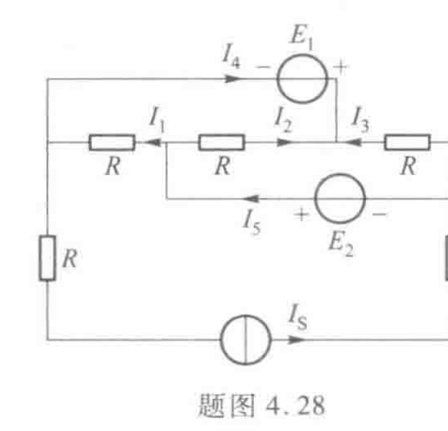
习题 4.28
的电路（右侧竖电阻在图外）。
提示 · 与电流源串联的电阻不影响其余支路
I S I_S 作用 ：E 1 E_1 E 2 E_2 R R E 1 E_1 作用 ：B=D，取
V A = 0 V_A=0 E 2 E_2 作用 ：A=C 为零电位 。
解析
I S I_S R R 并联 在 {B,D} 与 {A,C} 之间，各分
1 3 \frac13
I 1 ′ = I 2 ′ = I 3 ′ = 1 3 , I 4 ′ = I 1 ′ − I S = − 2 3 , I 5 ′ = I S − I 3 ′ = 2 3 . I_1'=I_2'=I_3'=\tfrac13,\qquad I_4'=I_1'-I_S=-\tfrac23,\qquad I_5'=I_S-I_3'=\tfrac23 . E 1 E_1 I S I_S V A = 0 V_A=0 V C = 9 V_C=9 R R R R
V B 6 + 2 ( V B − 9 ) 6 = 0 ⇒ V B = 6 V ; I 1 ″ = 1 , I 2 ″ = I 3 ″ = − 0.5 , I 4 ″ = 1 , I 5 ″ = 0.5 . \frac{V_B}{6}+\frac{2(V_B-9)}{6}=0\ \Rightarrow\ V_B=6\ \text{V};\qquad I_1''=1,\ I_2''=I_3''=-0.5,\ I_4''=1,\ I_5''=0.5 . E 2 E_2 电位 ，I S I_S V B = V D + 9 V_B=V_D+9
2 V B 6 + V D 6 = 0 ⇒ V D = − 6 V , V B = 3 V ; I 1 ‴ = I 2 ‴ = 0.5 , I 3 ‴ = − 1 , I 4 ‴ = 0.5 , I 5 ‴ = 1 . \frac{2V_B}{6}+\frac{V_D}{6}=0\ \Rightarrow\ V_D=-6\ \text{V},\ V_B=3\ \text{V};\qquad I_1'''=I_2'''=0.5,\ I_3'''=-1,\ I_4'''=0.5,\ I_5'''=1 . 叠加（单位 A）：
I 1 = 11 6 , I 2 = 1 3 , I 3 = − 7 6 , I 4 = 5 6 , I 5 = 13 6 , I_1=\frac{11}{6},\quad I_2=\frac13,\quad I_3=-\frac76,\quad I_4=\frac56,\quad I_5=\frac{13}{6}, 两个竖
R R 中均 为
I S = 1 I_S=1 I 1 = I 4 + I S I_1=I_4+I_S 11 6 = 5 6 + 1 \frac{11}{6}=\frac56+1
习题 26 · 菱形电路求
U 1 U_1
练习 · 先独立作答
结构与例 32 相同：四个顶点上 T、左 L、右 N、下
B，R 1 R_1 R 2 R_2 R 3 R_3 R 4 R_4 I S I_S U S U_S U 1 = V L − V T U_1=V_L-V_T 现在
I S = 2 I_S=2 U S = 20 U_S=20 R 1 = 10 Ω R_1=10\ \Omega R 2 = R 3 = 20 Ω R_2=R_3=20\ \Omega R 4 = 40 Ω R_4=40\ \Omega 叠加定理 求
U 1 U_1
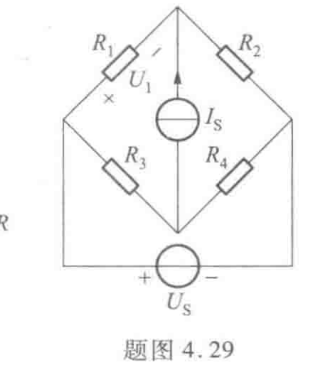
习题 4.29 的电路。
提示 · 与例 32 完全同步
I S I_S 作用 时 L、N
合为一点 ，I S I_S R 1 ∥ R 2 R_1\parallel R_2 回到
L/N。R 3 R_3 R 4 R_4 I S I_S 另一侧 ，不影响 T、L 间的电压 。
解析
I S I_S R 1 ∥ R 2 = 20 3 Ω R_1\parallel R_2=\frac{20}{3}\ \Omega
V T − V L = I S × 20 3 = 40 3 V , U 1 ′ = − 40 3 V . V_T-V_L=I_S\times\frac{20}{3}=\frac{40}{3}\ \text{V},\qquad U_1'=-\frac{40}{3}\ \text{V}. U S U_S R 1 R_1 R 2 R_2 串联 接在
U S U_S
U 1 ″ = R 1 R 1 + R 2 U S = 10 30 × 20 = 20 3 V . U_1''=\frac{R_1}{R_1+R_2}U_S=\frac{10}{30}\times20=\frac{20}{3}\ \text{V}. U 1 = − 40 3 + 20 3 = − 20 3 ≈ − 6.67 V . U_1=-\frac{40}{3}+\frac{20}{3}=-\frac{20}{3}\approx-6.67\ \text{V}.
更多课本习题 · 4 道
习题 4.26 两个电动势
E 1 = 100 E_1=100 E 2 = − 30 E_2=-30 叠加定理 求支路量：每次让一个电动势 作用，另一个短路 ；注意
E 2 E_2 习题 4.27
U S = 4 U_S=4 I S = 2 I_S=2 叠加定理 求支路电流
I I 电压源 短路、电流源开路 各算一次。习题 4.30 方框 内为任意线性有源电路 ，已知 三组
U S U_S I S I_S 方向 组合下的
U U I S I_S 反向 时的
U U U = a U S + b I S + c U=aU_S+bI_S+c c c 方框内电源 的贡献），三组数据 定三个常数 。按题 给数据
5 a + b + c = 15 5a+b+c=15 − 5 a + b + c = 25 -5a+b+c=25 − 5 a − b + c = 5 -5a-b+c=5 a = − 1 a=-1 b = c = 10 b=c=10 I S I_S U = − 5 − 10 + 10 = − 5 U=-5-10+10=-5 习题 4.31 P
为无独立 源的电阻网络 （可含受控源 ），由一组测量 数据求另一组激励 下的响应 ：P
内没有激励 ，响应 只由外加的
U S U_S I S I_S I = a U S + b I S I=aU_S+bI_S 齐次性 和可加性定系数 。
10.2 替代定理
例 34 · 替代后求未知电阻
左边电压源
U S U_S R R I I 电桥上顶点
T、左顶点 B、右顶点 A、下顶点 接回电源：T–B 为 1 Ω，T–A 为 0.5 Ω，B–下 为
0.5 Ω，A–下 为 0.5
Ω，R X R_X I X I_X 流向 B。要使
I X = 1 8 I I_X=\frac18I R X R_X 应为 多少？（教材 例 4.3.4）
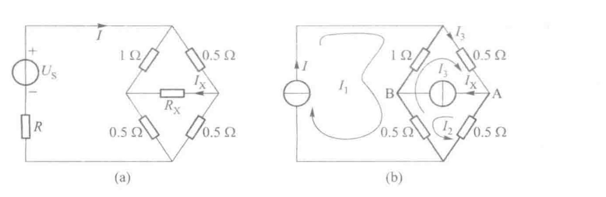
(a) 原电路；(b) 把
U S U_S R R I I R X R_X I X I_X
解。
U S U_S R R 未知 ，但流出 的电流是
I I R X R_X 电流 应当是
1 8 I \frac18I 替代定理 把这两条支路 分别换成 电流
I I 1 8 I \frac18I 电流源 ，电路就完全确定 了。
以下顶点为参考节点 ，对 T、B、A
列节点方程 （I I 1 8 I \frac18I 流向 B）：
T : ( 1 + 2 ) V T − V B − 2 V A = I B : ( 1 + 2 ) V B − V T = 1 8 I A : ( 2 + 2 ) V A − 2 V T = − 1 8 I \begin{aligned}\text{T}:&\ (1+2)V_T-V_B-2V_A=I\\ \text{B}:&\ (1+2)V_B-V_T=\tfrac18I\\ \text{A}:&\ (2+2)V_A-2V_T=-\tfrac18I\end{aligned} 解得
V T = 47 80 I , V B = 19 80 I , V A = 21 80 I , V_T=\frac{47}{80}I,\qquad V_B=\frac{19}{80}I,\qquad V_A=\frac{21}{80}I, U X = V A − V B = 2 80 I = 0.025 I , R X = U X I X = 0.025 I I / 8 = 0.2 Ω . U_X=V_A-V_B=\frac{2}{80}I=0.025I,\qquad R_X=\frac{U_X}{I_X}=\frac{0.025I}{I/8}=0.2\ \Omega. 结果 与
I I 无关 ，所以
U S U_S R R 不必知道 。教材用回路 电流法（两个电流源作连支 ）得到同一结果 。
定理 12 · 替代定理
设一个电路有唯一解，第
k k u k u_k i k i_k 不论该支路由什么元件组成 ，都可以用电压
u S = u k u_S=u_k i S = i k i_S=i_k 其余部分 的支路电压和电流不变。
使用条件：(1) 替代前后电路都有唯一解 ； (2)
被替代的可以是一条支路，也可以是一个一端口； (3)
被替代部分与其余部分不能有耦合 ，例如受控源的控制量不能在被替代部分里而受控源在外面； (4)
对线性、非线性、时变、非时变电路都成立。
证明。 设一端口 N 外接支路
k k u a b = u k u_{ab}=u_k 支路
k k 方向相反 、大小都等于
u k u_k 电压源 （端点 依次为
a、c、d、b，两个源合 起来电压 为零），电路 中各处电压电流都不变 。此时 c、b
之间是“支路
k k u k u_k u k − u k = 0 u_k-u_k=0 等电位 ，可以用导线短接而不影响其余部分。 短接后从 N 看出去 只剩一个电压 为
u k u_k 电压源 ，即用电压源 替代了支路
k k 替代 前后，按基尔霍夫定律 列出的方程 没有改变 ，由唯一性 ，解也不变 。用电流源替代 的情形同理，并联一对方向相反 、大小为
i k i_k 电流源 即可。▫ \square
替代定理 的作用是“把已知的量当作源 ”：例 34
中电阻 未知，但它的电流 已知，就把它换成 电流源。下一单元证明戴维宁定理时，也要先用替代定理 把负载换成电流源，再用叠加定理。
11 戴维宁定理、诺顿定理与最大功率
只关心一条 支路时，没必要 把整个电路解一遍。把这条支路 以外的部分看成 一个含源一端口 ，换成“电压源 串电阻”或“电流源 并电阻”，问题就变成单回路 。
11.1 戴维宁定理
例 35 ·
【真题】晶体管等效电路的戴维宁等效、放大倍数与最大功率
2025—2026 秋冬期中回忆卷 · 综合题第 1 题（12 分）· 建议用时 15
分钟
左起：U s U_s R s R_s R b R_b U 1 U_1 r b e r_{be} I B I_B R e R_e β I B \beta I_B R c R_c
U s = 10 U_s=10 R s = R b = R e = R c = 1 k Ω R_s=R_b=R_e=R_c=1\ \text{k}\Omega r b e = 10 Ω r_{be}=10\ \Omega β = 100 \beta=100 戴维宁等效 电路；(2) 电压 放大倍数
U o / U 1 U_o/U_1 端接 负载后能得到的最大功率 。（两份回忆 卷的元件 标注不同，回忆 者事后更正：左边竖着的电阻 是
R b R_b R e R_e 读法 。）
解。 受控源的控制量
I B I_B
I B I_B U 1 U_1 受控源 把
β I B \beta I_B 节点 e，连同
r b e r_{be} I B I_B R e R_e 流到 地，所以
U e = ( 1 + β ) R e I B U_e=(1+\beta)R_eI_B
U 1 = r b e I B + ( 1 + β ) R e I B = [ r b e + ( 1 + β ) R e ] I B = 101010 I B . U_1=r_{be}I_B+(1+\beta)R_eI_B=\big[r_{be}+(1+\beta)R_e\big]I_B=101010\,I_B . 节点 x 的
KCL：U s − U 1 R s = U 1 R b + I B \dfrac{U_s-U_1}{R_s}=\dfrac{U_1}{R_b}+I_B 10 − U 1 1000 = U 1 1000 + U 1 101010 \dfrac{10-U_1}{1000}=\dfrac{U_1}{1000}+\dfrac{U_1}{101010}
U 1 ≈ 4.975 V , I B = U 1 101010 ≈ 4.926 × 10 − 5 A . U_1\approx4.975\ \text{V},\qquad I_B=\frac{U_1}{101010}\approx4.926\times10^{-5}\ \text{A}. (1) 开路电压。 a、b 开路时节点 a 只连着受控源 和
R c R_c β I B \beta I_B R c R_c 电流 只能从地流向 a：
U o c = − β I B R c ≈ − 4.926 V . U_{oc}=-\beta I_BR_c\approx-4.926\ \text{V}. 等效电阻。
U s U_s 独立 源，I B = 0 I_B=0 受控源 相当于开路（外加电源 法：a
端加电压 ，受控源 电流仍为
β × 0 = 0 \beta\times0=0
R 0 = R c = 1 k Ω . R_0=R_c=1\ \text{k}\Omega . 等效电路 ：− 4.926 -4.926 电压源 串 1 kΩ（“+”在 a 端的写法下电压 为负值，也就是 b 端电位 比 a 高
4.926 V）。
(2) 放大倍数 （a、b 开路）：
U o U 1 = − β R c I B [ r b e + ( 1 + β ) R e ] I B = − 100 × 1000 10 + 101 × 1000 ≈ − 0.990 . \frac{U_o}{U_1}=\frac{-\beta R_cI_B}{\big[r_{be}+(1+\beta)R_e\big]I_B}=-\frac{100\times1000}{10+101\times1000}\approx-0.990 . (3) 最大功率。 由定理
15，R L = R 0 = 1 k Ω R_L=R_0=1\ \text{k}\Omega
P max = U o c 2 4 R 0 = 4.926 2 4000 ≈ 6.07 mW . P_{\max}=\frac{U_{oc}^2}{4R_0}=\frac{4.926^2}{4000}\approx6.07\ \text{mW}. 得分步骤 （原卷未给分步分值）：由 KCL、KVL 求出控制量
I B I_B − β I B R c -\beta I_BR_c 独立 源置零后
I B = 0 I_B=0 R 0 = R c R_0=R_c 倍数 中
I B I_B P max = U o c 2 / ( 4 R 0 ) P_{\max}=U_{oc}^2/(4R_0) 易错 ：受控源的方向（箭头指向
e）决定
U o c U_{oc} 求
R 0 R_0 这个电路 就是带发射极电阻 的共射放大器的小信号模型 ，第
3 章（模电 部分）再讲它的来历 。
例 36 · 用戴维宁定理求负载电流
R 1 = R 2 = R 3 = 6 Ω R_1=R_2=R_3=6\ \Omega R 4 = 3 Ω R_4=3\ \Omega U S = 12 U_S=12 I S = 2 I_S=2 U S U_S R 1 R_1 节点 M，M 对地接
R 3 R_3 电流源
I S I_S R 2 R_2 端口 a；负载
R 4 R_4 R 4 R_4 电流
I I 教材 例
4.3.5）
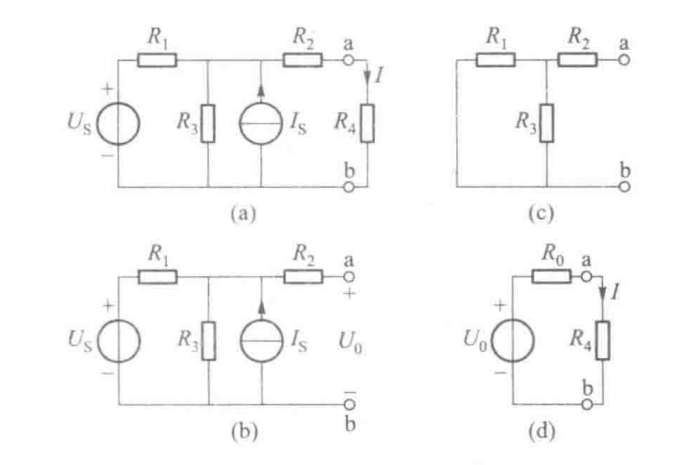
(a) 原电路；(b) 断开
R 4 R_4 U 0 U_0 R 0 R_0 R 4 R_4
解。 把
R 4 R_4 U 0 U_0 R 0 R_0
开路电压 （图
b）：R 4 R_4 断开 后
R 2 R_2 没有电流 ，U 0 U_0 电压 。用叠加 ：
U 0 = R 3 R 1 + R 3 U S + R 1 R 3 R 1 + R 3 I S = 6 + 6 = 12 V . U_0=\frac{R_3}{R_1+R_3}U_S+\frac{R_1R_3}{R_1+R_3}I_S=6+6=12\ \text{V}. 等效电阻 （图
c）：U S U_S I S I_S
R 0 = R 2 + R 1 R 3 R 1 + R 3 = 6 + 3 = 9 Ω . R_0=R_2+\frac{R_1R_3}{R_1+R_3}=6+3=9\ \Omega. 接回负载 （图 d）：
I = U 0 R 0 + R 4 = 12 9 + 3 = 1 A . I=\frac{U_0}{R_0+R_4}=\frac{12}{9+3}=1\ \text{A}.
例 37 · 含受控源的戴维宁等效
4 V 电压源（“+”在上）下面串 1 Ω，上面经 CCVS
2 I 2 2I_2 A 对 B 接 3 Ω 电阻，电流
I 2 I_2 戴维宁等效 电路。（教材 例 4.3.6）
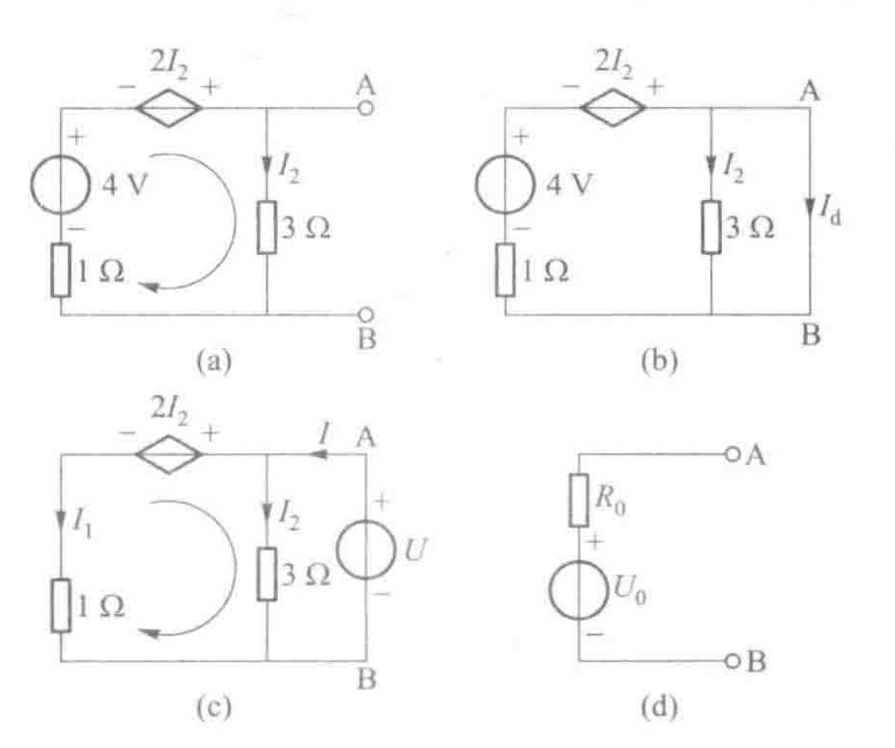
(a) 原电路，端口开路；(b) 端口短路；(c)
独立源置零后外加电压
U U
解。 开路电压 （图
a）：端口开路时只有一个回路 ，电流 就是
I 2 I_2 回路
KVL：
( 1 + 3 ) I 2 = 4 + 2 I 2 ⇒ I 2 = 2 A , U 0 = 3 I 2 = 6 V . (1+3)I_2=4+2I_2\ \Rightarrow\ I_2=2\ \text{A},\qquad U_0=3I_2=6\ \text{V}. 等效电阻 ，两种方法 。
开路短路法 被短路 ，I 2 = 0 I_2=0 电压源
2 I 2 = 0 2I_2=0
I d = 4 1 = 4 A , R 0 = U 0 I d = 1.5 Ω . I_d=\frac{4}{1}=4\ \text{A},\qquad R_0=\frac{U_0}{I_d}=1.5\ \Omega. 加压法 保留 。端口 加
U U 电流 为
I I I 2 = U / 3 I_2=U/3 支路电流
I 1 I_1 向下 流过 1
Ω，KVL：U = 2 I 2 + 1 ⋅ I 1 U=2I_2+1\cdot I_1 I 1 = U − 2 3 U = U 3 I_1=U-\frac23U=\frac U3
I = I 1 + I 2 = 2 3 U , R 0 = U I = 1.5 Ω . I=I_1+I_2=\frac23U,\qquad R_0=\frac UI=1.5\ \Omega . 等效电路 是 6 V 电压源 串 1.5 Ω。
例 36
中，R 4 R_4 U 0 U_0 R 0 R_0 都不变 ，只需重算最后一步 。 这就是下面的定理。
定理 13 · 戴维宁定理
任何线性含源一端口电阻电路 A，对端口外部而言，可以用一个电压源
U 0 U_0 R 0 R_0 串联 来等效：
(1)
U 0 U_0 开路电压 ；
(2)
R 0 R_0 独立 电源置零（电压源短路、电流源开路）后，从端口看进去的等效电阻，受控源保留 。
端口电压电流（I I U = U 0 − R 0 I U=U_0-R_0I
证明。 A 外接任意支路，端口电流 为
I I 替代定理 （定理
12），把外接支路 换成电流 为
I I 电流源 ，A 内各量不变 。对这个电路用叠加定理 （定理
10），端口电压 分成两部分 ：
(1) A 内独立 源作用、外加电流源开路 ：端口开路 ，电压 为
U 0 U_0
(2) 外加电流源 单独作用 、A 内独立 源置零：A 变成无源一端口
P，等效 为电阻
R 0 R_0 I I 端口 流入 P 的方向与原方向相反 ，端口电压 为
− R 0 I -R_0I
两者 相加
U = U 0 − R 0 I U=U_0-R_0I 电压源
U 0 U_0 电阻
R 0 R_0 伏安关系 。外接支路是任意的 ，所以对外等效 。▫ \square
结论 10 · 求等效电阻
R 0 R_0
(1) 串并联 ：A
中不含受控源时，独立源置零后直接用串并联 、Y-Δ 求。
(2)
加压法（加流法） ：独立源置零、受控源保留 ，在端口加电压
U U I I R 0 = U / I R_0=U/I
(3) 开路短路法 ：分别求开路电压
U 0 U_0 I d I_d I d I_d R 0 = U 0 / I d R_0=U_0/I_d 这时独立源不 置零。
含受控源时
R 0 R_0
易错 · 开路短路法的方向
R 0 = U 0 / I d R_0=U_0/I_d I d I_d U 0 U_0 R 0 R_0 差一个负号 。U 0 = 0 U_0=0 开路短路法失效 ，只能用加压法 。
应用：晶体管偏置电路。 教材例 4.3.7
中，晶体管基极 接分压电阻
R b 1 R_{b1} V C C V_{CC} R b 2 R_{b2} 集电极 接
R c R_c 发射极 接
R e R_e 基极 左边的分压电路 做戴维宁等效 ：
V B B = R b 2 R b 1 + R b 2 V C C , R b = R b 1 ∥ R b 2 , V_{BB}=\frac{R_{b2}}{R_{b1}+R_{b2}}V_{CC},\qquad R_b=R_{b1}\parallel R_{b2}, 再对基极 —发射极回路 列
KVL（I E = ( 1 + β ) I B I_E=(1+\beta)I_B
I B = V B B − U B E R b + ( 1 + β ) R e , I C = β I B , U C E = V C C − R c I C − R e ( 1 + β ) I B . I_B=\frac{V_{BB}-U_{BE}}{R_b+(1+\beta)R_e},\qquad I_C=\beta I_B,\qquad U_{CE}=V_{CC}-R_cI_C-R_e(1+\beta)I_B . 习题 27 · 负的等效电阻
练习 · 先独立作答
左边电流源
I S 1 = 1 I_{S1}=1 R 2 = 2 Ω R_2=2\ \Omega R 2 R_2 U 2 U_2 上节点经
R 3 = 3 Ω R_3=3\ \Omega 端口 a，a 与 b 之间接 VCCS
g m U 2 g_mU_2 电流 由
a 向下流 到
b），g m = − 1 g_m=-1 戴维宁等效 电路。（作业 4.37）
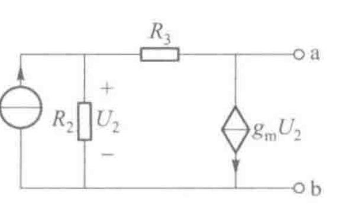
习题 4.37 的电路。
提示 · 含受控源，用开路短路法或加压法
开路时
R 3 R_3 电流 全部流进受控源 ：I R 3 = g m U 2 I_{R3}=g_mU_2 短路时
V a = 0 V_a=0 R 3 R_3 R 2 R_2 节点 与地之间。
解析
开路电压 ：上节点 KCL
I S 1 = U 2 R 2 + g m U 2 ⇒ 1 = U 2 ( 1 2 − 1 ) , U 2 = − 2 V , I_{S1}=\frac{U_2}{R_2}+g_mU_2\ \Rightarrow\ 1=U_2\Big(\frac12-1\Big),\quad U_2=-2\ \text{V}, I R 3 = g m U 2 = 2 I_{R3}=g_mU_2=2 U 0 = U 2 − R 3 I R 3 = − 2 − 6 = − 8 U_0=U_2-R_3I_{R3}=-2-6=-8
短路电流 （a、b
短接，I d I_d 经短路线流向
b）：1 = U 2 2 + U 2 3 1=\frac{U_2}{2}+\frac{U_2}{3} U 2 = 1.2 U_2=1.2 I R 3 = 0.4 I_{R3}=0.4 I d = I R 3 − g m U 2 = 0.4 + 1.2 = 1.6 I_d=I_{R3}-g_mU_2=0.4+1.2=1.6
R 0 = U 0 I d = − 8 1.6 = − 5 Ω . R_0=\frac{U_0}{I_d}=\frac{-8}{1.6}=-5\ \Omega . 加压 验算：I S 1 I_{S1} 端加
U U U 2 = 2 5 U U_2=\frac{2}{5}U 电流
I = g m U 2 + U − U 2 3 = − 0.4 U + 0.2 U = − 0.2 U I=g_mU_2+\frac{U-U_2}{3}=-0.4U+0.2U=-0.2U R 0 = − 5 Ω R_0=-5\ \Omega 等效电路 是
− 8 -8 − 5 Ω -5\ \Omega 等效电阻 为负。
更多课本习题 · 5 道
习题 4.32 A
为线性有源网络 ，R R 电流
I 1 = 2 I_1=2 支路
I 2 = 1 3 I_2=\frac13 R R 增加 10 Ω 后
I 1 = 1.5 I_1=1.5 I 2 = 0.5 I_2=0.5 R R 电流 。把
R R 戴维宁电路 ：2 ( R 0 + R ) = 1.5 ( R 0 + R + 10 ) 2(R_0+R)=1.5(R_0+R+10) R 0 + R = 30 Ω R_0+R=30\ \Omega U 0 = 60 U_0=60 R R I 1 = 60 / 20 = 3 I_1=60/20=3 替代定理
I 2 = a + b I 1 I_2=a+bI_1 数据 得
I 2 = 1 − 1 3 I 1 I_2=1-\frac13I_1 I 2 = 0 I_2=0 习题 4.33
三个电压源 、五个电阻 的电路求戴维宁等效 ：同例
36，开路电压 用叠加或节点 法，独立 源置零后串并联 求
R 0 R_0 习题 4.35
晶体管直流 偏置（U C C = 12 U_{CC}=12 β = 50 \beta=50 偏置电路 应用，先把基极 分压电路 化为
V B B V_{BB} R b R_b I B I_B I C I_C U C E U_{CE} 习题 4.36 有源网络 A
外接电阻 和开关，由开关两种状态 下的测量 数据求 A
的戴维宁电路 ：每种状态 写一个
U = U 0 − R 0 I U=U_0-R_0I 联立 。习题 4.38 线性有源电路 的端口伏安特性是一条 直线，接
3 kΩ 电阻 求
i i u u 电压轴 上的截距 是
U 0 U_0 绝对值 是
R 0 R_0 单回路 。
11.2 诺顿定理
例 38 · 用诺顿定理求负载电流
左边 12 V 电压源与 4 Ω 并联，上端 P、下端 Q。 P 经 3 Ω 到 A，Q 经 3 Ω
到 B；两条 6 Ω 交叉 连接：一条 P–B，一条 Q–A。A、B 之间接 4 Ω，再接负载 2
Ω（电流
I I 诺顿定理 求
I I 教材 例
4.3.8）
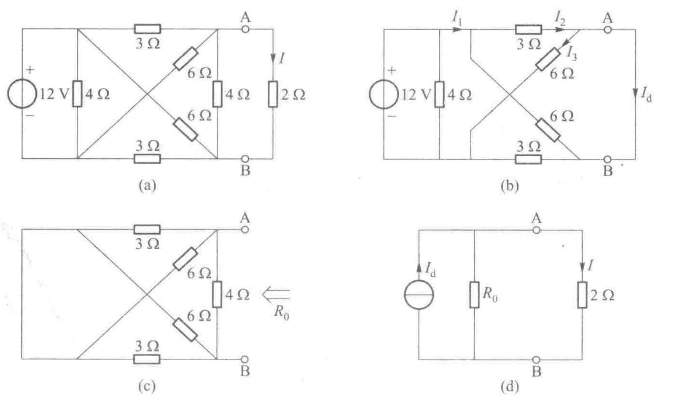
(a) 原电路；(b) AB 短路求
I d I_d R 0 R_0
解。 短路电流 （图 b）：A、B
短接，右边 4 Ω 被短路 ，A、B 成为同一点 。P 经 3 Ω 和 6 Ω 两路到 A/B，Q
也经 6 Ω 和 3 Ω 两路到 A/B，上下两半都是
3 ∥ 6 = 2 Ω 3\parallel6=2\ \Omega V A = 6 V_A=6
I 2 = 12 − 6 3 = 2 A ( P → A ) , I 3 = 6 6 = 1 A ( A → Q ) , I d = I 2 − I 3 = 1 A . I_2=\frac{12-6}{3}=2\ \text{A}\ (\text{P}\to\text{A}),\qquad I_3=\frac{6}{6}=1\ \text{A}\ (\text{A}\to\text{Q}),\qquad I_d=I_2-I_3=1\ \text{A}. 等效电阻 （图 c）：12 V 短路，P、Q 合为一点 ，左边 4 Ω
也被短路 。A 到 P/Q 是
3 ∥ 6 = 2 Ω 3\parallel6=2\ \Omega 2 Ω 2\ \Omega
R 0 = 4 ∥ 4 = 2 Ω . R_0=4\parallel4=2\ \Omega . 接回负载 （图 d）：电流源
I d I_d R 0 R_0 分流
I = R 0 R 0 + 2 I d = 0.5 A . I=\frac{R_0}{R_0+2}I_d=0.5\ \text{A}.
例 39 · 只有戴维宁、没有诺顿
R 1 = 25 Ω R_1=25\ \Omega R 2 = 100 Ω R_2=100\ \Omega U S = 10 U_S=10 α = 10 \alpha=10 U S U_S R 1 R_1 节点
N，R 2 R_2 接地 （电流
I I R 3 R_3 端口 a；CCCS
α I \alpha I 端口 接可变负载
R R R R 任意 变化时端口电压
U U 都不变 ，R 3 R_3 应取 多大？U U 教材 例 4.3.10）
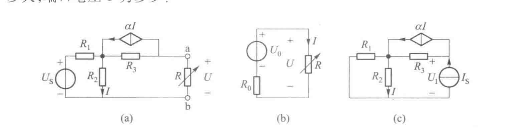
(a) 原电路；(b) 戴维宁等效；(c)
独立源置零后在端口加电流源
I S I_S
解。
端口电压与负载无关 ，说明端口相当于理想电压源 ：戴维宁等效 电阻
R 0 = 0 R_0=0
求
R 0 R_0 （图
c，加流 法）：U S U_S 端口 加
I S = 1 I_S=1 R 3 R_3 电流 是
I S − α I I_S-\alpha I 受控源 送回
N 的
α I \alpha I 总电流 仍是
I S I_S R 1 R_1 R 2 R_2
I = R 1 R 1 + R 2 I S = 0.2 A , U 1 = ( I S − α I ) R 3 + I R 2 = − R 3 + 20 . I=\frac{R_1}{R_1+R_2}I_S=0.2\ \text{A},\qquad U_1=(I_S-\alpha I)R_3+IR_2=-R_3+20 . R 0 = U 1 / I S = 20 − R 3 = 0 R_0=U_1/I_S=20-R_3=0 R 3 = 20 Ω R_3=20\ \Omega
求
U 0 U_0 ：端口开路 ，流入
N
的净电流 为零，R 1 R_1 R 2 R_2 I = U S R 1 + R 2 = 0.08 I=\frac{U_S}{R_1+R_2}=0.08 V N = 8 V_N=8 R 3 R_3 电流
α I \alpha I 流向 a 再进入受控源 ，
U 0 = V N − R 3 α I = 8 − 20 × 0.8 = − 8 V . U_0=V_N-R_3\alpha I=8-20\times0.8=-8\ \text{V}. 无论
R R 取何值 ，U = − 8 U=-8 R 0 = 0 R_0=0 短路电流 无穷大，这个一端口没有诺顿等效电路 。
定理 14 · 诺顿定理
任何线性含源一端口电阻电路 A，对外可以用一个电流源
I d I_d R 0 R_0 I d I_d 短路电流 ，R 0 R_0
证明。 由定理 13，A 等效 为
U 0 U_0 R 0 R_0 R 0 ≠ 0 R_0\ne0 电源等效变换 （定理 7）把它换成 电流源
U 0 / R 0 U_0/R_0 R 0 R_0 端口短路时 电流就是
U 0 / R 0 U_0/R_0 I d = U 0 / R 0 I_d=U_0/R_0 ▫ \square
结论 11 · 等效电路的存在性
(1)
R 0 = 0 R_0=0
(2)
G 0 = 1 / R 0 = 0 G_0=1/R_0=0
(3)
存在的前提：一端口与外部没有耦合 （受控源及其控制量在同一侧），端接任意电流源（电压源）时有唯一解 。
习题 28 · 诺顿等效电路
练习 · 先独立作答
E = 10 E=10 R 1 = R 2 = 1 R_1=R_2=1 R 1 R_1 R 2 R_2 端口 a，电流
I I 流向电源 （图中箭头 向左）；CCCS
0.5 I 0.5I R 2 R_2 方向 由 a 一侧流向
R 1 R_1 R 2 R_2 电压源 下端。求诺顿等效电路 。（作业 4.40）
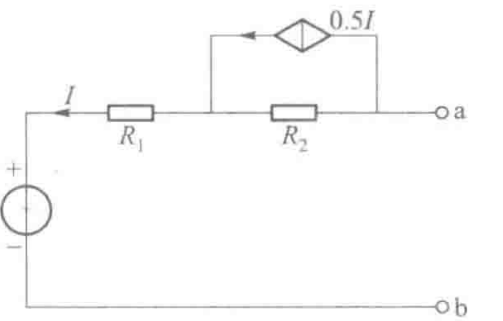
习题 4.40 的电路。
提示 · 直接写端口伏安关系
设外电路 从 a 流入
I a I_a I = I a I=I_a R 2 R_2 I − 0.5 I I-0.5I
解析
R 2 R_2 电流
0.5 I 0.5I 受控源 ），
U a b = E + R 1 I + R 2 ⋅ 0.5 I = 10 + 1.5 × 10 3 I a . U_{ab}=E+R_1I+R_2\cdot0.5I=10+1.5\times10^3\,I_a . 所以
U 0 = 10 U_0=10 R 0 = 1.5 R_0=1.5
I d = U 0 R 0 = 10 1.5 × 10 3 ≈ 6.67 mA . I_d=\frac{U_0}{R_0}=\frac{10}{1.5\times10^3}\approx6.67\ \text{mA}. 诺顿等效 ：6.67 mA 电流源 （短路时电流 从 a 经短路线流向 b）并 1.5
kΩ。
更多课本习题 · 5 道
例 4.3.9 含受控源
3 I 3I 电路 求诺顿等效：短路 后 6 Ω 上
6 I = 2 6I=2 I = 1 3 I=\frac13 I d = 1 3 I_d=\frac13 独立 源置零后加压，U = − 6 I U=-6I 端口电流
− 4 I -4I R 0 = 1.5 Ω R_0=1.5\ \Omega 习题 4.39
含受控源 （R 1 = R 2 = R 3 = 20 Ω R_1=R_2=R_3=20\ \Omega 等效 ：短路电流 直接求，R 0 R_0 加压法 ，受控源保留 。习题 4.46 多个电压源 和一个电流源的电路 求
I 2 I_2 I 2 I_2 支路 以外化为 戴维宁或诺顿电路 ，再接回 。习题 4.47
左右对称 的电路求电压源 电流和功率 ：对称轴 上的点等电位 ，可以把电路 沿轴分成两半只算一半 ，再用戴维宁或串并联 。习题 4.41—4.45 特勒根 定理与互易定理 ，属于教材
4.3.5，本讲义范围 之外。
11.3 最大功率传输
例 40 · 负载获得最大功率与效率
网络
N 1 N_1 I I I 1 I_1 N 1 N_1 可变 负载
R L R_L I L I_L R L R_L 值时 获得最大功率 ；(2) 最大功率 ；(3) 此时 10 V
电压源 的功率传输 效率。（教材 例 4.3.11）
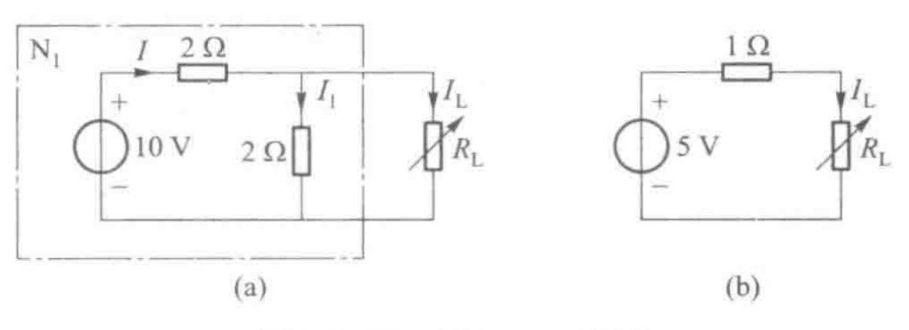
(a) 原电路，虚线框为
N 1 N_1 N 1 N_1
解。 (1) 断开
R L R_L N 1 N_1 戴维宁参数 ：
U 0 = 2 2 + 2 × 10 = 5 V , R 0 = 2 ∥ 2 = 1 Ω . U_0=\frac{2}{2+2}\times10=5\ \text{V},\qquad R_0=2\parallel2=1\ \Omega . R L = R 0 = 1 Ω R_L=R_0=1\ \Omega 功率 （定理 15）。
(2)
P max = U 0 2 4 R 0 = 25 4 = 6.25 W . P_{\max}=\frac{U_0^2}{4R_0}=\frac{25}{4}=6.25\ \text{W}.
(3)
R L = 1 Ω R_L=1\ \Omega I L = 5 1 + 1 = 2.5 I_L=\frac{5}{1+1}=2.5 节点电压
2.5 2.5 I 1 = 1.25 I_1=1.25 I = I 1 + I L = 3.75 I=I_1+I_L=3.75 电压源 发出
P S = 10 × 3.75 = 37.5 P_S=10\times3.75=37.5
η = 6.25 37.5 ≈ 16.7 % . \eta=\frac{6.25}{37.5}\approx16.7\% . 戴维宁电路 里效率是
50%，原电路中电压源的效率更低 ：等效 只对外部成立，内部功率不等效 。
例 41 · 由测量求最大功率
两个有源一端口
A 1 A_1 A 2 A_2 R R 测得
R = 0 R=0 I = 0.2 I=0.2 R = 50 Ω R=50\ \Omega I = 0.1 I=0.1 R R 获得 最大功率 ？最大功率 多少？(2) 把
R R 换成 另一电路：R 1 = R 2 = R 3 = 20 Ω R_1=R_2=R_3=20\ \Omega R 1 R_1 R 2 R_2 串联 接在 A、B
间（U 2 U_2 R 2 R_2 电压 ，上“+”），另一条 支路是 VCVS
μ U 2 \mu U_2 μ = 3.6 \mu=3.6 R 3 R_3 端口电压
U A B U_{AB} 教材 例
4.3.12）
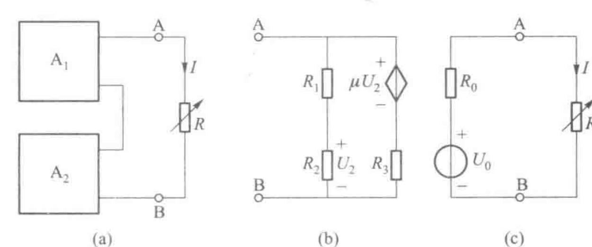
(a)
A 1 A_1 A 2 A_2 R R R R
解。 (1) 两个有源一端口串联仍是有源一端口 ，化为
U 0 U_0 R 0 R_0
0.2 ( 0 + R 0 ) = U 0 , 0.1 ( 50 + R 0 ) = U 0 ⇒ R 0 = 50 Ω , U 0 = 10 V . 0.2(0+R_0)=U_0,\qquad 0.1(50+R_0)=U_0\ \Rightarrow\ R_0=50\ \Omega,\quad U_0=10\ \text{V}. R = R 0 = 50 Ω R=R_0=50\ \Omega 时功率 最大，P max = 10 2 4 × 50 = 0.5 P_{\max}=\dfrac{10^2}{4\times50}=0.5
(2) 端口 三条支路并在 A、B
之间：U 0 U_0 R 0 R_0 R 1 + R 2 R_1+R_2 μ U 2 \mu U_2 R 3 R_3 米尔曼公式 ，受控源先当独立源 ：
U A B = U 0 R 0 + μ U 2 R 3 1 R 0 + 1 R 1 + R 2 + 1 R 3 = 0.2 + 0.18 U 2 0.095 , U_{AB}=\frac{\dfrac{U_0}{R_0}+\dfrac{\mu U_2}{R_3}}{\dfrac1{R_0}+\dfrac1{R_1+R_2}+\dfrac1{R_3}}=\frac{0.2+0.18U_2}{0.095}, 控制量
U 2 = R 2 R 1 + R 2 U A B = 1 2 U A B U_2=\dfrac{R_2}{R_1+R_2}U_{AB}=\dfrac12U_{AB} 代入 得
0.095 U A B = 0.2 + 0.09 U A B 0.095U_{AB}=0.2+0.09U_{AB}
U A B = 40 V . U_{AB}=40\ \text{V}.
例 40 中把
R L R_L 很大 ：R L = 0 R_L=0 电流最大但电压为零 ，R L → ∞ R_L\to\infty 时电压 最大但电流 为零，功率 都是零。中间一定有一个最大值 。
定理 15 · 最大功率传输定理
线性含源一端口的戴维宁参数为
U 0 U_0 R 0 R_0 R 0 > 0 R_0>0 R L R_L 当
时负载获得最大功率
P max = U 0 2 4 R 0 . P_{\max}=\frac{U_0^2}{4R_0}. R L = R 0 R_L=R_0 最大功率匹配 。
证明。 负载功率
P = I 2 R L = ( U 0 R 0 + R L ) 2 R L . P=I^2R_L=\Big(\frac{U_0}{R_0+R_L}\Big)^2R_L . 对
R L R_L
d P d R L = U 0 2 ( R 0 + R L ) 2 − 2 R L ( R 0 + R L ) ( R 0 + R L ) 4 = U 0 2 R 0 − R L ( R 0 + R L ) 3 . \frac{dP}{dR_L}=U_0^2\frac{(R_0+R_L)^2-2R_L(R_0+R_L)}{(R_0+R_L)^4}=U_0^2\frac{R_0-R_L}{(R_0+R_L)^3}. R L < R 0 R_L<R_0 时导数 为正，R L > R 0 R_L>R_0 R L = R 0 R_L=R_0 最大值点 。代入 得
P max = U 0 2 4 R 0 P_{\max}=\dfrac{U_0^2}{4R_0} ▫ \square
易错 · 匹配的前提与效率
(1)
定理的前提是电源参数不变、负载可调 。 负载固定而内阻可调 时，P = ( U 0 R 0 + R L ) 2 R L P=\big(\frac{U_0}{R_0+R_L}\big)^2R_L R 0 R_0 减小 而增大，应取
R 0 = 0 R_0=0 R 0 = R L R_0=R_L
(2) 匹配 时
R 0 R_0 R L R_L 功率 相等，对等效电压源而言效率只有 50% ，对原网络 中的电源 可能更低（例 40
只有
16.7%）。电力系统 追求效率，不用匹配 ；通信、测量从微弱信号 中取功率，才用匹配 。
习题 29 · 三种“最大”
练习 · 先独立作答
R 1 = 40 Ω R_1=40\ \Omega R 2 = 8 Ω R_2=8\ \Omega R 3 = 3 Ω R_3=3\ \Omega R 4 = 16 Ω R_4=16\ \Omega I S = 1 I_S=1 R R I S I_S 供电 ；P 经
R 1 R_1 节点 M，经上方
R 4 R_4 节点 Q；M 经
R 2 R_2 R 3 R_3 R R R R 消耗的功率 最大？P max P_{\max} R R 电流 最大？(3)
R R 电压 最大？（作业 4.34）
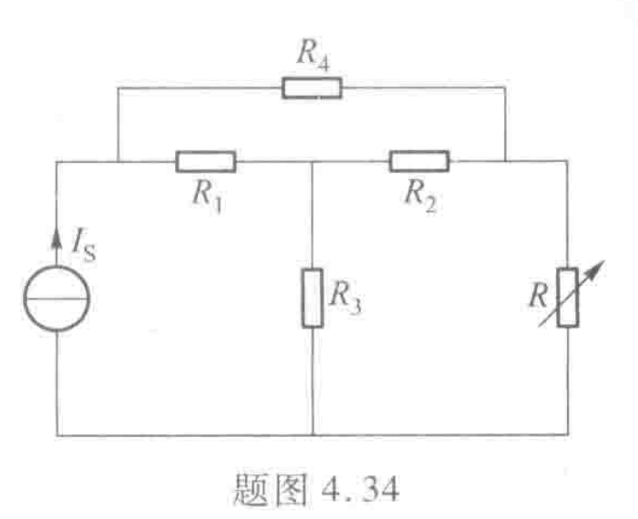
习题 4.34 的电路。
提示 · 先把
R R
R R 断开 后，I S I_S R 3 R_3 回到 地，所以
V M = I S R 3 V_M=I_SR_3 R 1 R_1 R 4 + R 2 R_4+R_2
解析
开路电压 ：V M = 1 × 3 = 3 V_M=1\times3=3 R 4 + R 2 = 24 Ω R_4+R_2=24\ \Omega 电流
1 × 40 64 = 0.625 1\times\frac{40}{64}=0.625 R 2 R_2
U 0 = V Q = V M + 0.625 × 8 = 8 V . U_0=V_Q=V_M+0.625\times8=8\ \text{V}. 等效电阻 （I S I_S R 0 = ( R 1 + R 4 ) ∥ R 2 + R 3 = 56 ∥ 8 + 3 = 7 + 3 = 10 Ω R_0=(R_1+R_4)\parallel R_2+R_3=56\parallel8+3=7+3=10\ \Omega
(1)
R = 10 Ω R=10\ \Omega P max = 8 2 4 × 10 = 1.6 P_{\max}=\dfrac{8^2}{4\times10}=1.6
(2)
I = U 0 R 0 + R I=\dfrac{U_0}{R_0+R} R = 0 R=0 最大 ，I max = 0.8 I_{\max}=0.8
(3)
U = R R 0 + R U 0 U=\dfrac{R}{R_0+R}U_0 R → ∞ R\to\infty 最大 ，U max = 8 U_{\max}=8
习题 30 · 负载固定，内阻可选
练习 · 先独立作答
电压源
U S = 20 U_S=20 R 0 R_0 R L = 100 Ω R_L=100\ \Omega R 0 R_0 功率 最大？最大功率 多少？（教材 例 4.3.13）
提示 · 这不是匹配问题
写出
P P R 0 R_0 函数 ，看它随
R 0 R_0
解析
P = ( U S R 0 + R L ) 2 R L P=\Big(\frac{U_S}{R_0+R_L}\Big)^2R_L 随
R 0 R_0 单调 减小，R 0 = 0 R_0=0 最大 ：
P max = U S 2 R L = 400 100 = 4 W . P_{\max}=\frac{U_S^2}{R_L}=\frac{400}{100}=4\ \text{W}. 若误用匹配条件 取
R 0 = 100 Ω R_0=100\ \Omega 内阻 可调时，内阻越小越好 ，负载的电流 、电压、功率 同时最大。
12 正弦量与相量
从这一单元 起进入第 5
章。电源换成 正弦交流电，电路 中有电感、电容，各处电压电流 都按同一频率 作正弦变化 （正弦稳态 ）。用相量 把正弦量变成复数 ，第
4 章的全部方法就能原样搬过来 。
12.1 正弦量的三要素与相位差
例 42 · 工频的角频率与周期
我国电力系统用的正弦交流电源频率
f = 50 f=50 （教材 例 5.1.1）
解。 正弦量 每经过一个周期
T T 相位 增加
2 π 2\pi
ω = 2 π f = 2 π × 50 ≈ 314 rad/s , T = 1 f = 0.02 s = 20 ms . \omega=2\pi f=2\pi\times50\approx314\ \text{rad/s},\qquad T=\frac1f=0.02\ \text{s}=20\ \text{ms}. 所以工频电压 常写成
u ( t ) = 2 U sin ( 314 t + φ u ) u(t)=\sqrt2U\sin(314t+\varphi_u)
例 43 · 谁超前
两个同频率正弦电压
u 1 ( t ) = 2 U 1 sin ( ω t + 135 ∘ ) u_1(t)=\sqrt2U_1\sin(\omega t+135^\circ) u 2 ( t ) = 2 U 2 sin ( ω t − 90 ∘ ) u_2(t)=\sqrt2U_2\sin(\omega t-90^\circ) 哪个超前？超前 多少？（教材 例
5.1.2）
解。 相位差
φ = φ 1 − φ 2 = 135 ∘ − ( − 90 ∘ ) = 225 ∘ \varphi=\varphi_1-\varphi_2=135^\circ-(-90^\circ)=225^\circ 超过
180 ∘ 180^\circ 约定 换到
( − 180 ∘ , 180 ∘ ] (-180^\circ,180^\circ]
φ = 225 ∘ − 360 ∘ = − 135 ∘ . \varphi=225^\circ-360^\circ=-135^\circ . φ < 0 \varphi<0 u 1 u_1 u 2 u_2 135 ∘ 135^\circ u 2 u_2 u 1 u_1 135 ∘ 135^\circ u 1 u_1 225 ∘ 225^\circ 数学 上也对，但不合约定 。
定义 21 · 正弦量的三要素
i ( t ) = I m sin ( ω t + φ i ) i(t)=I_m\sin(\omega t+\varphi_i) (1) 振幅
I m I_m
(2) 角频率
ω \omega ω = 2 π f = 2 π / T \omega=2\pi f=2\pi/T f f T T
(3) 初相
φ i \varphi_i t = 0 t=0 | φ i | ≤ π |\varphi_i|\le\pi
三个量确定后，正弦量就完全确定 。 本讲义统一用
sin \sin
定义 22 · 有效值
周期电流
i i R R 放出的热量 与直流电流
I I I I i i 有效值 ：
I = 1 T ∫ 0 T i 2 ( t ) d t ( 方均根值 ) . I=\sqrt{\frac1T\int_0^Ti^2(t)\,dt}\quad(\text{方均根值}).
结论 12 · 正弦量的有效值
I = I m 2 ≈ 0.707 I m , i ( t ) = 2 I sin ( ω t + φ i ) . I=\frac{I_m}{\sqrt2}\approx0.707I_m,\qquad i(t)=\sqrt2I\sin(\omega t+\varphi_i). 交流电压表、电流表的读数和铭牌上的 220 V 都是有效值 。
证明。
i 2 = I m 2 sin 2 ( ω t + φ i ) = I m 2 2 [ 1 − cos ( 2 ω t + 2 φ i ) ] i^2=I_m^2\sin^2(\omega t+\varphi_i)=\dfrac{I_m^2}{2}\big[1-\cos(2\omega t+2\varphi_i)\big] 余弦 项在一个周期 内积分为零，
1 T ∫ 0 T i 2 d t = I m 2 2 , I = I m 2 . ▫ \frac1T\int_0^Ti^2\,dt=\frac{I_m^2}{2},\qquad I=\frac{I_m}{\sqrt2}.\ \square
定义 23 · 相位差
两个同频率 正弦量
u = 2 U sin ( ω t + φ u ) u=\sqrt2U\sin(\omega t+\varphi_u) i = 2 I sin ( ω t + φ i ) i=\sqrt2I\sin(\omega t+\varphi_i)
φ = ( ω t + φ u ) − ( ω t + φ i ) = φ u − φ i , \varphi=(\omega t+\varphi_u)-(\omega t+\varphi_i)=\varphi_u-\varphi_i , 等于初相之差，与时间无关 ，取
| φ | ≤ 180 ∘ |\varphi|\le180^\circ φ > 0 \varphi>0 u u 超前
i i φ < 0 \varphi<0 u u 滞后
i i φ = 0 \varphi=0 同相 ；φ = ± 180 ∘ \varphi=\pm180^\circ 反相 ；φ = ± 90 ∘ \varphi=\pm90^\circ 正交 。
易错 · 比较相位前先统一形式
只有同频率、同为
sin \sin cos \cos 才能直接相减 。 − sin ( ω t + θ ) = sin ( ω t + θ ± 180 ∘ ) -\sin(\omega t+\theta)=\sin(\omega t+\theta\pm180^\circ) 负号要先吸收进初相 。
习题 31 · 负号藏着的相位
练习 · 先独立作答
两个同频率正弦量
f = 50 f=50 U ̇ 1 = 40 ∠ 30 ∘ \dot U_1=40\angle30^\circ U ̇ 2 = − 100 ∠ − 150 ∘ \dot U_2=-100\angle-150^\circ (1) 写出
u 1 ( t ) u_1(t) u 2 ( t ) u_2(t) 相位差 。（作业 5.3）
提示 · 先把负号化掉
− 1 = 1 ∠ 180 ∘ -1=1\angle180^\circ − 100 ∠ − 150 ∘ = 100 ∠ ( − 150 ∘ + 180 ∘ ) -100\angle-150^\circ=100\angle(-150^\circ+180^\circ)
解析
U ̇ 2 = 100 ∠ 30 ∘ \dot U_2=100\angle30^\circ ω = 2 π × 50 = 314 \omega=2\pi\times50=314
u 1 ( t ) = 40 2 sin ( 314 t + 30 ∘ ) V , u 2 ( t ) = 100 2 sin ( 314 t + 30 ∘ ) V . u_1(t)=40\sqrt2\sin(314t+30^\circ)\ \text{V},\qquad u_2(t)=100\sqrt2\sin(314t+30^\circ)\ \text{V}. 相位差
30 ∘ − 30 ∘ = 0 30^\circ-30^\circ=0 同相 。直接用
30 ∘ − ( − 150 ∘ ) = 180 ∘ 30^\circ-(-150^\circ)=180^\circ 反相 。
更多课本习题 · 4 道
习题 5.1 画
u = 10 2 sin ( 2 t + 60 ∘ ) u=10\sqrt2\sin(2t+60^\circ) 波形 ，分别以
t t ω t \omega t 横轴 ：以
ω t \omega t 一个周期 是
2 π 2\pi t t 一个周期 是
π \pi 波形 向左移
60 ∘ 60^\circ π 6 \frac\pi6 习题 5.2 幅值 380 V、50 Hz、初相
60 ∘ 60^\circ u = 380 sin ( 314 t + 60 ∘ ) u=380\sin(314t+60^\circ) t = 0 , 2.5 , 7.5 , 10 , 12.5 , 17.5 t=0,\ 2.5,\ 7.5,\ 10,\ 12.5,\ 17.5 329.1 , 367.1 , − 98.4 , − 329.1 , − 367.1 , 98.4 329.1,\ 367.1,\ -98.4,\ -329.1,\ -367.1,\ 98.4 习题 5.4
u = 10 2 sin ( 314 t − 20 ∘ ) u=10\sqrt2\sin(314t-20^\circ) i = 2 2 sin ( 314 t − 50 ∘ ) i=2\sqrt2\sin(314t-50^\circ) 相位差
− 20 ∘ − ( − 50 ∘ ) = 30 ∘ -20^\circ-(-50^\circ)=30^\circ u u i i 30 ∘ 30^\circ 习题 5.5 幅值 1 mA 的矩形波，周期 0.5 ms，每周期中
0.4 ms
为高电平 ：I = 1 0.5 × 1 2 × 0.4 = 0.8 ≈ 0.894 I=\sqrt{\frac{1}{0.5}\times1^2\times0.4}=\sqrt{0.8}\approx0.894
12.2 相量
例 44 · 正弦量与相量互写
(1) 写出
i 1 ( t ) = 2 × 100 sin ( ω t − 30 ∘ ) i_1(t)=\sqrt2\times100\sin(\omega t-30^\circ) i 2 ( t ) = − 2 × 5 sin ( ω t − 110 ∘ ) i_2(t)=-\sqrt2\times5\sin(\omega t-110^\circ) (2) 已知 某正弦电压的相量
U ̇ = 115 ∠ − 45 ∘ \dot U=115\angle-45^\circ ω = 500 \omega=500 u ( t ) u(t) 教材 例
5.1.3、5.1.4）
解。 (1) 相量的模取有效值 ，辐角 取初相：
I ̇ 1 = 100 ∠ − 30 ∘ A , I ̇ 2 = − 5 ∠ − 110 ∘ = 5 ∠ 70 ∘ A . \dot I_1=100\angle-30^\circ\ \text{A},\qquad \dot I_2=-5\angle-110^\circ=5\angle70^\circ\ \text{A}. i 2 i_2 负号 等于相位加
180 ∘ 180^\circ − 110 ∘ + 180 ∘ = 70 ∘ -110^\circ+180^\circ=70^\circ
(2) 相量 不含频率，频率 要另外给出：
u ( t ) = 115 2 sin ( 500 t − 45 ∘ ) V . u(t)=115\sqrt2\sin(500t-45^\circ)\ \text{V}.
例 45 · 用相量求两个正弦量的和
u 1 ( t ) = 10 2 sin ( ω t + 60 ∘ ) u_1(t)=10\sqrt2\sin(\omega t+60^\circ) u 2 ( t ) = 5 2 sin ω t u_2(t)=5\sqrt2\sin\omega t u 1 + u 2 u_1+u_2 教材 例
5.1.5）
解。 三角函数 法
u 1 + u 2 = 2 ( 10 sin ω t cos 60 ∘ + 10 cos ω t sin 60 ∘ + 5 sin ω t ) = 2 ( 10 sin ω t + 8.66 cos ω t ) , u_1+u_2=\sqrt2\big(10\sin\omega t\cos60^\circ+10\cos\omega t\sin60^\circ+5\sin\omega t\big)=\sqrt2\big(10\sin\omega t+8.66\cos\omega t\big), 再合成 为
13.23 2 sin ( ω t + 40.89 ∘ ) 13.23\sqrt2\sin(\omega t+40.89^\circ)
相量 法
U ̇ = 10 ∠ 60 ∘ + 5 ∠ 0 ∘ = ( 5 + j 8.66 ) + 5 = 10 + j 8.66 = 13.23 ∠ 40.89 ∘ V , \dot U=10\angle60^\circ+5\angle0^\circ=(5+j8.66)+5=10+j8.66=13.23\angle40.89^\circ\ \text{V}, u 1 + u 2 = 13.23 2 sin ( ω t + 40.89 ∘ ) V . u_1+u_2=13.23\sqrt2\sin(\omega t+40.89^\circ)\ \text{V}. 注意
13.23 ≠ 10 + 5 13.23\ne10+5 有效值不能直接相加 ，初相也不是
60 ∘ + 0 ∘ 60^\circ+0^\circ 在复平面上，两个相量按平行四边形法则 相加。
例 45 中，正弦量 相加变成了复数 相加。原因在欧拉公式
e j θ = cos θ + j sin θ e^{j\theta}=\cos\theta+j\sin\theta
u ( t ) = 2 U sin ( ω t + φ u ) = Im [ 2 U e j φ u e j ω t ] . u(t)=\sqrt2U\sin(\omega t+\varphi_u)=\operatorname{Im}\big[\sqrt2\,Ue^{j\varphi_u}\,e^{j\omega t}\big]. 同一电路 中
ω \omega e j ω t e^{j\omega t} 公共因子 ，真正区分 各个正弦量 的只有复数
U e j φ u Ue^{j\varphi_u}
定义 24 · 相量
正弦量
u ( t ) = 2 U sin ( ω t + φ u ) u(t)=\sqrt2U\sin(\omega t+\varphi_u) 相量 是复数
U ̇ = U e j φ u = U ∠ φ u , \dot U=Ue^{j\varphi_u}=U\angle\varphi_u , 模是有效值，辐角是初相。 电工中虚数单位记为
j j i i 相量画在复平面上的图称为相量图 。 相量只代表正弦量 ，不等于正弦量 。
定理 16 · 相量运算的三条性质
设同频率正弦量
u 1 , u 2 u_1,u_2 U ̇ 1 , U ̇ 2 \dot U_1,\dot U_2 a , b a,b
(1)
唯一性 ：u 1 ( t ) = u 2 ( t ) u_1(t)=u_2(t) t t U ̇ 1 = U ̇ 2 \dot U_1=\dot U_2
(2)
线性 ：a u 1 + b u 2 au_1+bu_2 a U ̇ 1 + b U ̇ 2 a\dot U_1+b\dot U_2
(3)
微分 ：d u d t \dfrac{du}{dt} j ω U ̇ j\omega\dot U 积分
∫ u d t \int u\,dt U ̇ j ω \dfrac{\dot U}{j\omega}
证明。 记
u ( t ) = Im [ 2 U ̇ e j ω t ] u(t)=\operatorname{Im}\big[\sqrt2\dot Ue^{j\omega t}\big]
(1) 若
Im [ 2 ( U ̇ 1 − U ̇ 2 ) e j ω t ] = 0 \operatorname{Im}[\sqrt2(\dot U_1-\dot U_2)e^{j\omega t}]=0 t t ω t = 0 \omega t=0 ω t = π 2 \omega t=\frac\pi2 U ̇ 1 − U ̇ 2 \dot U_1-\dot U_2 虚部 与实部都为零。
(2)
Im \operatorname{Im} 实系数线性 ：a u 1 + b u 2 = Im [ 2 ( a U ̇ 1 + b U ̇ 2 ) e j ω t ] au_1+bu_2=\operatorname{Im}[\sqrt2(a\dot U_1+b\dot U_2)e^{j\omega t}]
(3)
d d t Im [ 2 U ̇ e j ω t ] = Im [ 2 ( j ω U ̇ ) e j ω t ] \dfrac{d}{dt}\operatorname{Im}[\sqrt2\dot Ue^{j\omega t}]=\operatorname{Im}[\sqrt2(j\omega\dot U)e^{j\omega t}] 求导 与取虚部 可交换。积分是微分 的逆运算，稳态时 没有常数项。▫ \square
性质 (3) 说明：乘
j j 逆时针转
90 ∘ 90^\circ 求导 后的正弦量超前
90 ∘ 90^\circ 幅值 乘
ω \omega
易错 · 相加时初相不能相加
教材第 181 页写两个正弦量之和的初相
φ u = φ u 1 + φ u 2 \varphi_u=\varphi_{u1}+\varphi_{u2} 这是错的 （例
45：40.89 ∘ ≠ 60 ∘ 40.89^\circ\ne60^\circ 和的初相要由复数
U ̇ 1 + U ̇ 2 \dot U_1+\dot U_2 辐角 求出。
习题 32 · 写相量
练习 · 先独立作答
写出下列正弦量的相量：(1)
i = 4 2 sin ( ω t + 30 ∘ ) i=4\sqrt2\sin(\omega t+30^\circ) (2)
i = 10 2 sin ( ω t − 90 ∘ ) i=10\sqrt2\sin(\omega t-90^\circ) u = 100 2 sin ( ω t + 60 ∘ ) u=100\sqrt2\sin(\omega t+60^\circ) u = 220 2 sin ( ω t − 45 ∘ ) u=220\sqrt2\sin(\omega t-45^\circ)
提示 · 模取有效值，辐角取初相
振幅 里的
2 \sqrt2 有效值 。
解析
I ̇ 1 = 4 ∠ 30 ∘ A , I ̇ 2 = 10 ∠ − 90 ∘ = − j 10 A , U ̇ 3 = 100 ∠ 60 ∘ V , U ̇ 4 = 220 ∠ − 45 ∘ V . \dot I_1=4\angle30^\circ\ \text{A},\quad \dot I_2=10\angle-90^\circ=-j10\ \text{A},\quad \dot U_3=100\angle60^\circ\ \text{V},\quad \dot U_4=220\angle-45^\circ\ \text{V}. 教材 (3)(4) 写作
i ( t ) = ⋯ V i(t)=\cdots\ \text{V} 符号 与单位不一致，按单位应为 电压。
习题 33 · 相量的和与差
练习 · 先独立作答
u 1 = 220 2 sin ( ω t + 30 ∘ ) u_1=220\sqrt2\sin(\omega t+30^\circ) u 2 = 100 2 sin ( ω t − 60 ∘ ) u_2=100\sqrt2\sin(\omega t-60^\circ) u 1 + u 2 u_1+u_2 u 1 − u 2 u_1-u_2
提示 · 化成代数式再加减
220 ∠ 30 ∘ = 190.53 + j 110 220\angle30^\circ=190.53+j110 100 ∠ − 60 ∘ = 50 − j 86.60 100\angle-60^\circ=50-j86.60
解析
U ̇ 1 + U ̇ 2 = 240.53 + j 23.40 = 241.66 ∠ 5.56 ∘ V , U ̇ 1 − U ̇ 2 = 140.53 + j 196.60 = 241.66 ∠ 54.44 ∘ V . \dot U_1+\dot U_2=240.53+j23.40=241.66\angle5.56^\circ\ \text{V},\qquad \dot U_1-\dot U_2=140.53+j196.60=241.66\angle54.44^\circ\ \text{V}. u 1 + u 2 = 241.66 2 sin ( ω t + 5.56 ∘ ) V , u 1 − u 2 = 241.66 2 sin ( ω t + 54.44 ∘ ) V . u_1+u_2=241.66\sqrt2\sin(\omega t+5.56^\circ)\ \text{V},\qquad u_1-u_2=241.66\sqrt2\sin(\omega t+54.44^\circ)\ \text{V}. 和与差的模相等 ，因为
U ̇ 1 ⟂ U ̇ 2 \dot U_1\perp\dot U_2 90 ∘ 90^\circ 平行四边形 是矩形，两条对角线 等长。
13 元件的相量模型与相量形式的基尔霍夫定律
13.1 R、L、C 的相量模型
例 46 · 纯电感中的电流
某线圈电感
L = 0.1 L=0.1 10 6 10^6 30 ∘ 30^\circ 求线圈电流 并写出瞬时值 表达式。（教材 例
5.1.6）
解。
U ̇ L = 10 ∠ 30 ∘ \dot U_L=10\angle30^\circ X L = ω L = 10 5 Ω X_L=\omega L=10^5\ \Omega
I ̇ L = U ̇ L j ω L = 10 ∠ 30 ∘ 10 5 ∠ 90 ∘ = 10 − 4 ∠ − 60 ∘ A , \dot I_L=\frac{\dot U_L}{j\omega L}=\frac{10\angle30^\circ}{10^5\angle90^\circ}=10^{-4}\angle-60^\circ\ \text{A}, i L ( t ) = 2 × 10 − 4 sin ( 10 6 t − 60 ∘ ) A . i_L(t)=\sqrt2\times10^{-4}\sin(10^6t-60^\circ)\ \text{A}. 电流滞后 电压
90 ∘ 90^\circ 频率 这么高，0.1
H 的电感几乎不让电流通过 。
元件的电压电流 关系是微分 关系，用定理 16 (3)
换成相量就成了代数关系 。
结论 13 · 三种元件的相量形式（关联参考方向）
电阻 : U ̇ R = R I ̇ R , 电感 : U ̇ L = j ω L I ̇ L , 电容 : I ̇ C = j ω C U ̇ C . \text{电阻}:\ \dot U_R=R\dot I_R,\qquad \text{电感}:\ \dot U_L=j\omega L\,\dot I_L,\qquad \text{电容}:\ \dot I_C=j\omega C\,\dot U_C . (1) 电阻：电压与电流同相。
(2) 电感：电压超前电流
90 ∘ 90^\circ U L = ω L I L U_L=\omega LI_L
(3) 电容：电流超前电压
90 ∘ 90^\circ U C = 1 ω C I C U_C=\dfrac{1}{\omega C}I_C
证明。
u R = R i R u_R=Ri_R 相量 （定理 16
(2)）。u L = L d i L d t u_L=L\dfrac{di_L}{dt} 定理
16 (3)，右边的相量 是
L ⋅ j ω I ̇ L L\cdot j\omega\dot I_L i C = C d u C d t i_C=C\dfrac{du_C}{dt} j = 1 ∠ 90 ∘ j=1\angle90^\circ j j 辐角 加
90 ∘ 90^\circ 相位 关系。▫ \square
定义 25 · 感抗、容抗、感纳、容纳
X L = ω L , X C = 1 ω C ( 单位 Ω ) ; B L = 1 ω L , B C = ω C ( 单位 S ) . X_L=\omega L,\qquad X_C=\frac1{\omega C}\qquad(\text{单位 }\Omega);\qquad B_L=\frac1{\omega L},\qquad B_C=\omega C\qquad(\text{单位 S}). U ̇ L = j X L I ̇ L \dot U_L=jX_L\dot I_L U ̇ C = − j X C I ̇ C \dot U_C=-jX_C\dot I_C
易错 · 电抗随频率变化，且只对有效值、相量成立
(1)
X L X_L ω \omega X C X_C ω \omega ω = 0 \omega=0 相当于短路 ，电容相当于开路； 频率很高时电感近似开路 ，电容近似短路 。
(2)
X L = U L / I L X_L=U_L/I_L 有效值 之比，u L i L ≠ X L \dfrac{u_L}{i_L}\ne X_L 瞬时值之比 随时间变化，还可能无穷大 。
习题 34 · 电容两端的电压
练习 · 先独立作答
电容
C = 500 C=500 i ( t ) = 10 2 sin ( 10 6 t − 30 ∘ ) i(t)=10\sqrt2\sin(10^6t-30^\circ) （教材习题 5.10）
提示 · 电容电压滞后电流
90 ∘ 90^\circ
U ̇ C = − j X C I ̇ C \dot U_C=-jX_C\dot I_C X C = 1 ω C X_C=\dfrac1{\omega C}
解析
X C = 1 10 6 × 500 × 10 − 12 = 2000 Ω X_C=\dfrac{1}{10^6\times500\times10^{-12}}=2000\ \Omega
U ̇ C = − j 2000 × 10 × 10 − 3 ∠ − 30 ∘ = 20 ∠ − 120 ∘ V , u C = 20 2 sin ( 10 6 t − 120 ∘ ) V . \dot U_C=-j2000\times10\times10^{-3}\angle-30^\circ=20\angle-120^\circ\ \text{V},\qquad u_C=20\sqrt2\sin(10^6t-120^\circ)\ \text{V}.
更多课本习题 · 2 道
习题 5.8
L = 31.8 L=31.8 u = 10 2 sin 314 t u=10\sqrt2\sin314t X L ≈ 10 Ω X_L\approx10\ \Omega I ≈ 1 I\approx1 i = 2 sin ( 314 t − 90 ∘ ) i=\sqrt2\sin(314t-90^\circ) u = 10 2 sin 314000 t u=10\sqrt2\sin314000t X L ≈ 10 4 Ω X_L\approx10^4\ \Omega I ≈ 1 I\approx1 电流 随频率升高 而减小。习题 5.9
L = 20 L=20 i = 10 2 sin ( 314 t − 30 ∘ ) i=10\sqrt2\sin(314t-30^\circ) X L = 6.28 Ω X_L=6.28\ \Omega U ̇ L = 62.8 ∠ 60 ∘ \dot U_L=62.8\angle60^\circ u L = 62.8 2 sin ( 314 t + 60 ∘ ) u_L=62.8\sqrt2\sin(314t+60^\circ)
13.2 相量形式的基尔霍夫定律
例 47 · 由总电压求分电压
两个元件串联，端口电压
U ̇ = 220 ∠ 0 ∘ \dot U=220\angle0^\circ U ̇ 1 = 100 ∠ 60 ∘ \dot U_1=100\angle60^\circ U ̇ \dot U U ̇ = U ̇ 1 + U ̇ 2 \dot U=\dot U_1+\dot U_2 U ̇ 2 \dot U_2 （教材 例
5.1.7）
解。 由相量形式的 KVL：
U ̇ 2 = U ̇ − U ̇ 1 = 220 − ( 50 + j 86.6 ) = 170 − j 86.6 = 191 ∠ − 27 ∘ V . \dot U_2=\dot U-\dot U_1=220-(50+j86.6)=170-j86.6=191\angle-27^\circ\ \text{V}. 有效值
191 ≠ 220 − 100 191\ne220-100
例 48 · 三电压表法测线圈参数
为测量线圈的等效电阻
R R L L R 1 = 100 Ω R_1=100\ \Omega 测得总电压
U = 200 U=200 R 1 R_1 电压
U 1 = 100 U_1=100 线圈电压
U 2 = 124 U_2=124 R R L L 教材 例
5.1.9）
解。 串联电路电流相同，以
I ̇ \dot I 参考相量 （画在水平方向 ）。U ̇ 1 \dot U_1 I ̇ \dot I U ̇ = U ̇ 1 + U ̇ 2 \dot U=\dot U_1+\dot U_2 闭合三角形 。设
U ̇ \dot U I ̇ \dot I 夹角 为
φ \varphi 余弦定理
cos φ = U 2 + U 1 2 − U 2 2 2 U U 1 = 200 2 + 100 2 − 124 2 2 × 200 × 100 ≈ 0.866 , φ ≈ 30 ∘ . \cos\varphi=\frac{U^2+U_1^2-U_2^2}{2UU_1}=\frac{200^2+100^2-124^2}{2\times200\times100}\approx0.866,\qquad \varphi\approx30^\circ . I = U 1 / R 1 = 1 I=U_1/R_1=1 U ̇ \dot U I ̇ \dot I 全部电阻电压 ，垂直分量是电感电压 ：
R = U cos φ − U 1 I = 173.1 − 100 1 ≈ 73.1 Ω , L = U sin φ ω I = 100.1 314 × 1 ≈ 0.319 H . R=\frac{U\cos\varphi-U_1}{I}=\frac{173.1-100}{1}\approx73.1\ \Omega,\qquad L=\frac{U\sin\varphi}{\omega I}=\frac{100.1}{314\times1}\approx0.319\ \text{H}. 教材 把
φ \varphi 取整 为
30 ∘ 30^\circ R = 73.2 Ω R=73.2\ \Omega L = 0.318 L=0.318 第三位有效数字 。
定理 17 · 相量形式的基尔霍夫定律
正弦稳态电路中，对任一节点
∑ I ̇ = 0 \sum\dot I=0 对任一回路
∑ U ̇ = 0 \sum\dot U=0
证明。 时域
KCL：∑ i k ( t ) = 0 \sum i_k(t)=0 t t 同频率 ，由定理 16 (2) 左边的相量 是
∑ I ̇ k \sum\dot I_k 唯一性 (1) 得
∑ I ̇ k = 0 \sum\dot I_k=0 ▫ \square
易错 · 有效值不满足 KCL、KVL
∑ I k = 0 \sum I_k=0 ∑ U k = 0 \sum U_k=0 才能直接加减 。
习题 35 · 串联 RL 的端电压
练习 · 先独立作答
电阻
R R R = ω L = 100 Ω R=\omega L=100\ \Omega I = 1 I=1 U U （教材 例
5.1.8）
提示 · 以电流为参考相量
设
I ̇ = 1 ∠ 0 ∘ \dot I=1\angle0^\circ 写出
U ̇ R \dot U_R U ̇ L \dot U_L 相加 。
解析
U ̇ R = 100 ∠ 0 ∘ \dot U_R=100\angle0^\circ U ̇ L = j ω L I ̇ = 100 ∠ 90 ∘ \dot U_L=j\omega L\dot I=100\angle90^\circ
U ̇ = U ̇ R + U ̇ L = 100 2 ∠ 45 ∘ V , U = 141.4 V . \dot U=\dot U_R+\dot U_L=100\sqrt2\angle45^\circ\ \text{V},\qquad U=141.4\ \text{V}. 不是 200 V。
习题 36 · RC 并联的总电流
练习 · 先独立作答
R R C C U ̇ S \dot U_S R = 10 Ω R=10\ \Omega R R I 1 I_1 C C I 2 I_2 I I U S U_S
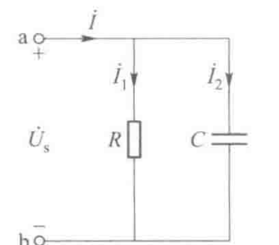
习题 5.11 的电路。
提示 · 并联电路以电压为参考相量
I ̇ 1 \dot I_1 U ̇ S \dot U_S I ̇ 2 \dot I_2 U ̇ S \dot U_S 90 ∘ 90^\circ
解析
U S = R I 1 = 100 U_S=RI_1=100 U ̇ S = 100 ∠ 0 ∘ \dot U_S=100\angle0^\circ I ̇ 1 = 10 \dot I_1=10 I ̇ 2 = j 10 \dot I_2=j10
I ̇ = I ̇ 1 + I ̇ 2 = 10 + j 10 = 10 2 ∠ 45 ∘ A , I ≈ 14.14 A . \dot I=\dot I_1+\dot I_2=10+j10=10\sqrt2\angle45^\circ\ \text{A},\qquad I\approx14.14\ \text{A}. 总电流超前 电压
45 ∘ 45^\circ I ≠ I 1 + I 2 = 20 I\ne I_1+I_2=20
14 阻抗与导纳
14.1 阻抗、导纳与串并联
例 49 · 【真题】RC 电路输出电压与输入电压之比
2025—2026 秋冬期中回忆卷 · 基本题第 3 题（6 分）· 建议用时 6
分钟
输入
U ̇ i \dot U_i R = 1 Ω R=1\ \Omega C = 1 μ C=1\ \mu U ̇ o \dot U_o
正弦稳态 下，求
H ( j ω ) = U ̇ o U ̇ i H(j\omega)=\dfrac{\dot U_o}{\dot U_i} 写出 它的模和辐角 随
ω \omega 变化 。
解。
R R C C 阻抗 分压（下面结论 14）：
H ( j ω ) = 1 j ω C R + 1 j ω C = 1 1 + j ω R C = 1 1 + j 10 − 6 ω , R C = 10 − 6 s . H(j\omega)=\frac{\dfrac{1}{j\omega C}}{R+\dfrac{1}{j\omega C}}=\frac{1}{1+j\omega RC}=\frac{1}{1+j10^{-6}\omega},\qquad RC=10^{-6}\ \text{s}. | H | = 1 1 + ( 10 − 6 ω ) 2 , φ = arg H = − arctan ( 10 − 6 ω ) . |H|=\frac{1}{\sqrt{1+(10^{-6}\omega)^2}},\qquad \varphi=\arg H=-\arctan(10^{-6}\omega).
ω \omega 0 0 10 5 10^5 10 6 10^6 10 7 10^7 → ∞ \to\infty
| H | \lvert H\rvert 1
0.995
1 / 2 ≈ 0.707 1/\sqrt2\approx0.707 0.0995
0
φ \varphi 0 ∘ 0^\circ − 5.7 ∘ -5.7^\circ − 45 ∘ -45^\circ − 84.3 ∘ -84.3^\circ − 90 ∘ -90^\circ
低频时电容 相当于开路 ，输出 等于输入；高频时电容相当于短路 ，输出 趋于零：这是一个低通 电路。ω = 1 / ( R C ) = 10 6 \omega=1/(RC)=10^6 | H | |H| 1 / 2 1/\sqrt2 角频率 。
得分步骤 （原卷未给分步分值）：分压写出
H H 1 1 + j ω R C \dfrac{1}{1+j\omega RC} 辐角 ；指出
ω → 0 \omega\to0 ω = 1 / ( R C ) \omega=1/(RC) ω → ∞ \omega\to\infty 相量 比输入相量 ”叫网络函数 ，教材 6.5
节（频率特性 ）再系统地 讲。
例 50 · 混联电路的入端阻抗
Z 1 = ( 4 + j 10 ) Ω Z_1=(4+j10)\ \Omega Z 2 = ( 8 − j 6 ) Ω Z_2=(8-j6)\ \Omega Y 3 = − j 0.12 Y_3=-j0.12 教材 例 5.1.10）
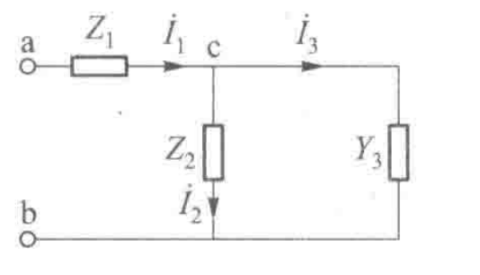
Z 1 Z_1 Z 2 Z_2 Y 3 Y_3
解。 并联 部分用导纳 相加：
Y 2 = 1 Z 2 = 8 + j 6 100 = ( 0.08 + j 0.06 ) S , Y c b = Y 2 + Y 3 = ( 0.08 − j 0.06 ) S = 0.1 ∠ − 36.9 ∘ S , Y_2=\frac1{Z_2}=\frac{8+j6}{100}=(0.08+j0.06)\ \text{S},\qquad Y_{cb}=Y_2+Y_3=(0.08-j0.06)\ \text{S}=0.1\angle-36.9^\circ\ \text{S}, Z c b = 1 Y c b = 10 ∠ 36.9 ∘ = ( 8 + j 6 ) Ω . Z_{cb}=\frac1{Y_{cb}}=10\angle36.9^\circ=(8+j6)\ \Omega . 再与
Z 1 Z_1
Z = Z 1 + Z c b = ( 12 + j 16 ) Ω = 20 ∠ 53.1 ∘ Ω . Z=Z_1+Z_{cb}=(12+j16)\ \Omega=20\angle53.1^\circ\ \Omega . 阻抗角 为正，ab 端呈感性 。
定义 26 · 阻抗与导纳
无源一端口在关联参考方向下，
Z = U ̇ I ̇ = | Z | ∠ φ = R + j X , Y = 1 Z = I ̇ U ̇ = G + j B . Z=\frac{\dot U}{\dot I}=|Z|\angle\varphi=R+jX,\qquad Y=\frac1Z=\frac{\dot I}{\dot U}=G+jB . | Z | = U / I |Z|=U/I 阻抗角
φ = φ u − φ i \varphi=\varphi_u-\varphi_i R R X X 电抗 ；G G B B 电纳 。
Z R = R , Z L = j X L , Z C = − j X C ; Y R = G , Y L = − j B L , Y C = j B C . Z_R=R,\quad Z_L=jX_L,\quad Z_C=-jX_C;\qquad Y_R=G,\quad Y_L=-jB_L,\quad Y_C=jB_C .
结论 14 · 阻抗的串并联
(1)
n n Z e q = ∑ Z k Z_{eq}=\sum Z_k U ̇ k = Z k Z e q U ̇ \dot U_k=\dfrac{Z_k}{Z_{eq}}\dot U
(2)
n n Y e q = ∑ Y k Y_{eq}=\sum Y_k I ̇ k = Y k Y e q I ̇ \dot I_k=\dfrac{Y_k}{Y_{eq}}\dot I
(3) 第 4
章的全部方法（等效变换、网孔法、节点法、叠加、戴维宁）都可以照用 ，只要把
R R Z Z G G Y Y
证明。
串联时电流 相同，KVL：U ̇ = ∑ U ̇ k = ∑ Z k I ̇ = ( ∑ Z k ) I ̇ \dot U=\sum\dot U_k=\sum Z_k\dot I=\big(\sum Z_k\big)\dot I 分压 由
U ̇ k = Z k I ̇ = Z k U ̇ / Z e q \dot U_k=Z_k\dot I=Z_k\dot U/Z_{eq} 并联对偶 。第 4 章的方法 只用到 KCL、KVL
和元件的线性关系 ，相量 形式下三者 都成立（定理 17、结论
13），推导一字不改 。▫ \square
习题 37 · 由端口相量反求元件
练习 · 先独立作答
f = 50 f=50 i ( t ) = 5 2 sin ( ω t + 45 ∘ ) i(t)=5\sqrt2\sin(\omega t+45^\circ) u ( t ) = 100 sin ω t u(t)=100\sin\omega t X C 1 X_{C1} 并联 部分串联 ，并联 部分的一支是
R R X C X_C X L X_L X L = 10 Ω X_L=10\ \Omega X C 1 = 10 Ω X_{C1}=10\ \Omega R R X C X_C
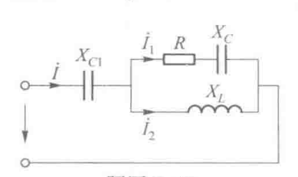
习题 5.16 的电路。
提示 · 先求总阻抗，扣掉
X C 1 X_{C1}
u u 振幅 100 V 没有
2 \sqrt2 有效值 是
70.71 70.71
解析
U ̇ = 70.71 ∠ 0 ∘ \dot U=70.71\angle0^\circ I ̇ = 5 ∠ 45 ∘ \dot I=5\angle45^\circ
Z = U ̇ I ̇ = 14.14 ∠ − 45 ∘ = ( 10 − j 10 ) Ω , Z 并 = Z + j X C 1 = 10 Ω . Z=\frac{\dot U}{\dot I}=14.14\angle-45^\circ=(10-j10)\ \Omega,\qquad Z_{并}=Z+jX_{C1}=10\ \Omega . 设
Z 1 = R − j X C Z_1=R-jX_C Z 1 ⋅ j 10 Z 1 + j 10 = 10 \dfrac{Z_1\cdot j10}{Z_1+j10}=10 j 10 Z 1 = 10 Z 1 + j 100 j10Z_1=10Z_1+j100
Z 1 = j 100 − 10 + j 10 = 5 − j 5 Ω , R = 5 Ω , X C = 5 Ω . Z_1=\frac{j100}{-10+j10}=5-j5\ \Omega,\qquad R=5\ \Omega,\quad X_C=5\ \Omega .
更多课本习题 · 2 道
习题 5.13
两个混联电路 求等效阻抗 ：并联 部分用导纳相加再取倒数 ，串联 部分阻抗相加。按图中数据 ，(a)
Z ≈ ( 2.33 − j 9.35 ) Ω Z\approx(2.33-j9.35)\ \Omega Z ≈ ( 0.317 + j 0.640 ) Ω Z\approx(0.317+j0.640)\ \Omega 习题 5.14 含 VCCS
0.5 U ̇ C 0.5\dot U_C 一端口 求
Z Z 加压法 ，U ̇ C = − j 6 I ̇ \dot U_C=-j6\dot I 电感电流
I ̇ + 0.5 U ̇ C = ( 1 − j 3 ) I ̇ \dot I+0.5\dot U_C=(1-j3)\dot I Z = 6 − j 6 + j 12 ( 1 − j 3 ) = ( 42 + j 6 ) Ω Z=6-j6+j12(1-j3)=(42+j6)\ \Omega
14.2 等效转换与电路的性质
例 51 · 串联等效与并联等效
对无源一端口 N 施加
u ( t ) = 14 sin 10 t u(t)=14\sin10t i ( t ) = 5 sin ( 10 t − 45 ∘ ) i(t)=5\sin(10t-45^\circ) N 的串联等效电路 和并联等效电路的元件值 各是多少？（教材 例 5.1.11）
解。
Z = 14 / 2 ∠ 0 ∘ 5 / 2 ∠ − 45 ∘ = 2.8 ∠ 45 ∘ = ( 1.98 + j 1.98 ) Ω . Z=\frac{14/\sqrt2\angle0^\circ}{5/\sqrt2\angle-45^\circ}=2.8\angle45^\circ=(1.98+j1.98)\ \Omega . 串联 等效R = 1.98 Ω R=1.98\ \Omega ω L = 1.98 Ω \omega L=1.98\ \Omega L = 0.198 L=0.198
并联 等效
Y = 1 Z = 0.357 ∠ − 45 ∘ = ( 0.2525 − j 0.2525 ) S , Y=\frac1Z=0.357\angle-45^\circ=(0.2525-j0.2525)\ \text{S}, R ′ = 1 0.2525 = 3.96 Ω R'=\dfrac1{0.2525}=3.96\ \Omega 1 ω L ′ = 0.2525 \dfrac1{\omega L'}=0.2525 L ′ = 0.396 L'=0.396
两种等效 的电阻、电感 都不相同，并联的不是串联的倒数 。串联等效也可以用
R R L L C C ω L − 1 ω C = 1.98 \omega L-\frac1{\omega C}=1.98 不唯一 ，取最简单的。
例 52 · 判断感性还是容性
阻抗
Z Z C C U = 60 U=60 ω = 500 \omega=500 C = 20 μ C=20\ \mu Z Z U 1 = 100 U_1=100 U 2 = 80 U_2=80 判断
Z Z 感性 还是容性，并求
Z Z 教材 例
5.1.12）
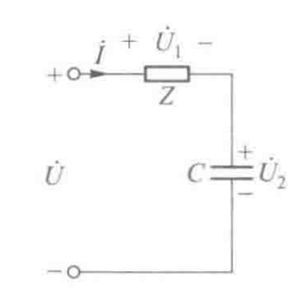
Z Z C C U ̇ 1 \dot U_1 Z Z U ̇ 2 \dot U_2 C C
解。 若
Z Z 容性 ，Z Z C C 滞后 电流，同方向 叠加，总电压一定比两个分电压都大 。现在
U < U 1 U<U_1 U < U 2 U<U_2 Z Z 感性 。
又
100 2 = 60 2 + 80 2 100^2=60^2+80^2 直角三角形 ，U ̇ 1 \dot U_1 U ̇ ⟂ U ̇ 2 \dot U\perp\dot U_2 I ̇ \dot I 参考 ，U ̇ 2 = − j 80 \dot U_2=-j80 U ̇ \dot U I ̇ \dot I U ̇ = 60 \dot U=60
U ̇ 1 = U ̇ − U ̇ 2 = 60 + j 80 = 100 ∠ 53.13 ∘ V , I = ω C U 2 = 500 × 20 × 10 − 6 × 80 = 0.8 A , \dot U_1=\dot U-\dot U_2=60+j80=100\angle53.13^\circ\ \text{V},\qquad I=\omega CU_2=500\times20\times10^{-6}\times80=0.8\ \text{A}, Z = U ̇ 1 I ̇ = 125 ∠ 53.13 ∘ = ( 75 + j 100 ) Ω . Z=\frac{\dot U_1}{\dot I}=125\angle53.13^\circ=(75+j100)\ \Omega .
结论 15 · 串联模型与并联模型的互换
同一个一端口，在某个频率 下，Z = R + j X Z=R+jX Y = G + j B Y=G+jB
G = R R 2 + X 2 , B = − X R 2 + X 2 ; R = G G 2 + B 2 , X = − B G 2 + B 2 . G=\frac{R}{R^2+X^2},\qquad B=-\frac{X}{R^2+X^2};\qquad R=\frac{G}{G^2+B^2},\qquad X=-\frac{B}{G^2+B^2}. 并联等效电阻
1 / G ≠ R 1/G\ne R 电抗随频率变化，所以等效只在这一个频率 成立。
证明。
Y = 1 R + j X = R − j X R 2 + X 2 Y=\dfrac1{R+jX}=\dfrac{R-jX}{R^2+X^2} 实部 和虚部即得前两式；反过来同理 。▫ \square
定义 27 · 感性、容性与电阻性
一端口阻抗
Z = R + j X Z=R+jX
(1)
X > 0 X>0 φ > 0 \varphi>0 感性 ；
(2)
X < 0 X<0 φ < 0 \varphi<0 容性 ；
(3)
X = 0 X=0 φ = 0 \varphi=0 电阻性 。
无源一端口
R ≥ 0 R\ge0 − 90 ∘ ≤ φ ≤ 90 ∘ -90^\circ\le\varphi\le90^\circ 画相量图时，串联电路取电流为参考相量 ，并联电路取电压为参考相量 。
易错 ·
“U ̇ L > U ̇ C \dot U_L>\dot U_C
RLC 串联电路中，教材第 192
页写“U ̇ L > U ̇ C \dot U_L>\dot U_C X > 0 X>0 相量是复数，不能比大小 ； 应写成
U L > U C U_L>U_C 有效值 ）或
X L > X C X_L>X_C
习题 38 · 画相量图求参数
练习 · 先独立作答
R 1 = 10 Ω R_1=10\ \Omega 节点 对地接电容
− j X C -jX_C I ̇ 1 \dot I_1 R 2 R_2 j X L jX_L I ̇ 2 \dot I_2 U = 200 U=200 I 1 = 10 I_1=10 I 2 = 10 2 I_2=10\sqrt2 R 2 = X L R_2=X_L U ̇ C \dot U_C 参考相量 ，画出
I ̇ 1 \dot I_1 I ̇ 2 \dot I_2 I ̇ \dot I U ̇ R 1 \dot U_{R_1} U ̇ \dot U U ̇ L \dot U_L 相量图 ，并求
X C X_C R 2 R_2 X L X_L
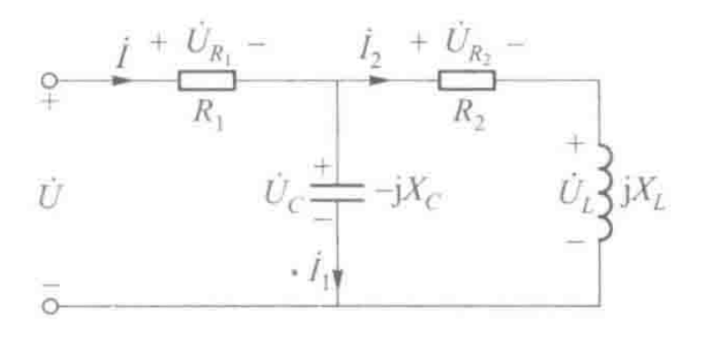
习题 5.12 的电路。
提示 ·
R 2 = X L R_2=X_L I ̇ 2 \dot I_2 U ̇ C \dot U_C 45 ∘ 45^\circ
I ̇ 1 \dot I_1 U ̇ C \dot U_C 90 ∘ 90^\circ I ̇ \dot I U ̇ = U ̇ R 1 + U ̇ C \dot U=\dot U_{R_1}+\dot U_C U C U_C
解析
设
U ̇ C = U C ∠ 0 ∘ \dot U_C=U_C\angle0^\circ I ̇ 1 = j 10 \dot I_1=j10 I ̇ 2 = 10 2 ∠ − 45 ∘ = 10 − j 10 \dot I_2=10\sqrt2\angle-45^\circ=10-j10
I ̇ = I ̇ 1 + I ̇ 2 = 10 ∠ 0 ∘ A . \dot I=\dot I_1+\dot I_2=10\angle0^\circ\ \text{A}. I ̇ \dot I U ̇ C \dot U_C U ̇ R 1 = 100 ∠ 0 ∘ \dot U_{R_1}=100\angle0^\circ U ̇ = U ̇ R 1 + U ̇ C = ( 100 + U C ) ∠ 0 ∘ \dot U=\dot U_{R_1}+\dot U_C=(100+U_C)\angle0^\circ U = 200 U=200 U C = 100 U_C=100
X C = U C I 1 = 10 Ω , | Z 2 | = 100 10 2 = 5 2 Ω , R 2 = X L = 5 Ω . X_C=\frac{U_C}{I_1}=10\ \Omega,\qquad |Z_2|=\frac{100}{10\sqrt2}=5\sqrt2\ \Omega,\qquad R_2=X_L=5\ \Omega . U ̇ R 2 = 5 ( 10 − j 10 ) = 70.7 ∠ − 45 ∘ \dot U_{R_2}=5(10-j10)=70.7\angle-45^\circ U ̇ L = j 5 ( 10 − j 10 ) = 70.7 ∠ 45 ∘ \dot U_L=j5(10-j10)=70.7\angle45^\circ 两者 垂直，合成 为
U ̇ C \dot U_C
更多课本习题 · 1 道
习题 5.15
u a = 10 2 sin ( 1000 t + 60 ∘ ) u_a=10\sqrt2\sin(1000t+60^\circ) C = 100 μ C=100\ \mu u b = 5 2 sin ( 1000 t − 30 ∘ ) u_b=5\sqrt2\sin(1000t-30^\circ) 串联 、并联 等效：I ̇ = U ̇ b / ( − j 10 ) = 0.5 ∠ 60 ∘ \dot I=\dot U_b/(-j10)=0.5\angle60^\circ U ̇ N = U ̇ a − U ̇ b = 11.18 ∠ 86.6 ∘ \dot U_N=\dot U_a-\dot U_b=11.18\angle86.6^\circ Z N = ( 20 + j 10 ) Ω Z_N=(20+j10)\ \Omega 串联 等效
R = 20 Ω R=20\ \Omega L = 10 L=10 并联 等效（结论
15）R ′ = 25 Ω R'=25\ \Omega L ′ = 50 L'=50
15 正弦稳态的功率
电阻 上的电压电流同相 ，功率 总是正的；电感、电容 一会儿吸收 能量一会儿放回去。一端口 的功率因此要分成 “真正消耗的 ”和“来回交换的 ”两部分 。
15.1 瞬时功率与有功功率
例 53 · 功率表的读数
电压源
U ̇ S = 10 ∠ 45 ∘ \dot U_S=10\angle45^\circ R R L L R = ω L = 10 Ω R=\omega L=10\ \Omega 功率表的电流线圈 串在电路 中，电压线圈 并在
R R 端接 在同一侧）。求功率表 的读数。（教材 例 5.1.13）
解。 功率表读数
= U 电压线圈 I 电流线圈 cos θ =U_{\text{电压线圈}}I_{\text{电流线圈}}\cos\theta θ \theta 相位差 。这里电压线圈 测
R R 电压 ，读数 就是
R R 消耗的功率 。
I ̇ = U ̇ S R + j ω L = 10 ∠ 45 ∘ 10 2 ∠ 45 ∘ = 2 2 ∠ 0 ∘ A , P = I 2 R = 1 2 × 10 = 5 W . \dot I=\frac{\dot U_S}{R+j\omega L}=\frac{10\angle45^\circ}{10\sqrt2\angle45^\circ}=\frac{\sqrt2}{2}\angle0^\circ\ \text{A},\qquad P=I^2R=\frac12\times10=5\ \text{W}. 电源 提供的平均功率
U S I cos 45 ∘ = 10 × 0.707 × 0.707 = 5 U_SI\cos45^\circ=10\times0.707\times0.707=5 R R 消耗 的相同：电感不消耗平均功率 。
例 54 · 只有电阻消耗平均功率
电流
I ̇ = 5 ∠ 20 ∘ \dot I=5\angle20^\circ Z = ( 8 − j 11 ) Ω Z=(8-j11)\ \Omega Z Z （教材 例 5.1.14）
解。
Z Z 电阻 与容抗 11 Ω 串联 ，只有电阻消耗平均功率 ：
P = I 2 R = 5 2 × 8 = 200 W . P=I^2R=5^2\times8=200\ \text{W}. 用
P = U I cos φ P=UI\cos\varphi | Z | = 8 2 + 11 2 = 13.6 Ω |Z|=\sqrt{8^2+11^2}=13.6\ \Omega cos φ = 8 / 13.6 \cos\varphi=8/13.6 P = ( 5 × 13.6 ) × 5 × 8 13.6 = 200 P=(5\times13.6)\times5\times\frac{8}{13.6}=200
定理 18 · 瞬时功率与有功功率
一端口
u = 2 U sin ( ω t + φ u ) u=\sqrt2U\sin(\omega t+\varphi_u) i = 2 I sin ( ω t + φ i ) i=\sqrt2I\sin(\omega t+\varphi_i) φ = φ u − φ i \varphi=\varphi_u-\varphi_i
p = u i = U I cos φ − U I cos ( 2 ω t + φ u + φ i ) , p=ui=UI\cos\varphi-UI\cos(2\omega t+\varphi_u+\varphi_i), 一个周期内的平均值（有功功率 ）
P = 1 T ∫ 0 T p d t = U I cos φ . P=\frac1T\int_0^Tp\,dt=UI\cos\varphi .
证明。 积化和差
2 sin α sin β = cos ( α − β ) − cos ( α + β ) 2\sin\alpha\sin\beta=\cos(\alpha-\beta)-\cos(\alpha+\beta) α = ω t + φ u \alpha=\omega t+\varphi_u β = ω t + φ i \beta=\omega t+\varphi_i p p 表达式 。第二项是角频率
2 ω 2\omega 余弦 ，一个周期内积分为零 ，剩下常数项
U I cos φ UI\cos\varphi ▫ \square
定义 28 · 有功功率与功率因数
P = U I cos φ P=UI\cos\varphi 有功功率 （平均功率），单位
W；λ = cos φ \lambda=\cos\varphi 功率因数 ，φ \varphi 功率表的读数为
U I cos θ UI\cos\theta U U I I θ \theta 从“*”端算起 ）。
结论 16 · 三种元件的功率
(1)
电阻（φ = 0 \varphi=0 p R = U I ( 1 − cos 2 ω t ) ≥ 0 p_R=UI(1-\cos2\omega t)\ge0 P R = U I = I 2 R P_R=UI=I^2R
(2)
电感（φ = 90 ∘ \varphi=90^\circ p L = U I sin 2 ω t p_L=UI\sin2\omega t P L = 0 P_L=0
(3)
电容（φ = − 90 ∘ \varphi=-90^\circ p C = − U I sin 2 ω t p_C=-UI\sin2\omega t P C = 0 P_C=0
一端口的有功功率等于其中所有电阻消耗功率之和 。
习题 39 · 三表法测线圈参数
练习 · 先独立作答
电压表、电流表、功率表接在一个线圈（R R L L ω = 200 \omega=200 求线圈的
R R L L 教材习题
5.20）
提示 · 功率表只“看见”电阻
P = I 2 R P=I^2R R R U / I U/I | Z | |Z| X X
解析
R = P I 2 = 240 4 = 60 Ω , | Z | = U I = 100 Ω , X L = 100 2 − 60 2 = 80 Ω , L = 80 200 = 0.4 H . R=\frac{P}{I^2}=\frac{240}{4}=60\ \Omega,\qquad |Z|=\frac UI=100\ \Omega,\qquad X_L=\sqrt{100^2-60^2}=80\ \Omega,\qquad L=\frac{80}{200}=0.4\ \text{H}.
更多课本习题 · 2 道
习题 5.17
Z = 20 ∠ 60 ∘ Ω Z=20\angle60^\circ\ \Omega U ̇ = 100 ∠ − 30 ∘ \dot U=100\angle-30^\circ I = 5 I=5 P = U I cos 60 ∘ = 250 P=UI\cos60^\circ=250 功率因数 0.5。习题 5.19 日光灯（镇流器
L L 灯管
R R U = 220 U=220 I = 0.36 I=0.36 P = 40 P=40 R = P / I 2 ≈ 308.6 Ω R=P/I^2\approx308.6\ \Omega | Z | = 611.1 Ω |Z|=611.1\ \Omega X L ≈ 527.4 Ω X_L\approx527.4\ \Omega L ≈ 1.68 L\approx1.68
15.2 无功功率、视在功率与复功率
例 55 · 一端口吸收的各种功率
线性无源一端口 P 的端口电压
U ̇ = 30 ∠ 45 ∘ \dot U=30\angle45^\circ I ̇ = 10 ∠ 15 ∘ \dot I=10\angle15^\circ 求它吸收的复功率、有功功率 、无功功率 和视在功率。（教材习题
5.18）
解。
φ = 45 ∘ − 15 ∘ = 30 ∘ \varphi=45^\circ-15^\circ=30^\circ
P = U I cos φ = 300 cos 30 ∘ = 259.8 W , Q = U I sin φ = 300 sin 30 ∘ = 150 var , S = U I = 300 V·A . P=UI\cos\varphi=300\cos30^\circ=259.8\ \text{W},\qquad Q=UI\sin\varphi=300\sin30^\circ=150\ \text{var},\qquad S=UI=300\ \text{V·A}. 复功率 把三者放进一个复数 ：
S ̃ = U ̇ I ̇ * = 30 ∠ 45 ∘ × 10 ∠ − 15 ∘ = 300 ∠ 30 ∘ = ( 259.8 + j 150 ) V·A . \tilde S=\dot U\dot I^{*}=30\angle45^\circ\times10\angle-15^\circ=300\angle30^\circ=(259.8+j150)\ \text{V·A}. Q > 0 Q>0 一端口 呈感性。
把瞬时功率 换一种拆法 （φ u = φ i + φ \varphi_u=\varphi_i+\varphi
p = U I cos φ [ 1 − cos 2 ( ω t + φ i ) ] + U I sin φ sin 2 ( ω t + φ i ) . p=UI\cos\varphi\,\big[1-\cos2(\omega t+\varphi_i)\big]+UI\sin\varphi\,\sin2(\omega t+\varphi_i). 第一项始终不小于 零，平均值 是
P P 真正消耗的部分 ；第二项平均值 为零，振幅
U I sin φ UI\sin\varphi 一端口 之间来回交换能量的速率 。
定义 29 · 无功功率与视在功率
无功功率
Q = U I sin φ Q=UI\sin\varphi 电感
Q L = U I > 0 Q_L=UI>0 Q C = − U I < 0 Q_C=-UI<0
视在功率
S = U I S=UI 设备的容量 。一台 10000 kV·A 的变压器，负载功率因数 0.8
时只能输出 8000 kW 有功功率。
P = S cos φ P=S\cos\varphi Q = S sin φ Q=S\sin\varphi S = P 2 + Q 2 S=\sqrt{P^2+Q^2} 功率三角形 。
定义 30 · 复功率
S ̃ = U ̇ I ̇ * = U I ∠ φ = P + j Q = I 2 Z = U 2 Y * . \tilde S=\dot U\dot I^{*}=UI\angle\varphi=P+jQ=I^2Z=U^2Y^{*}. I ̇ * \dot I^* I ̇ \dot I 复功率只是计算工具 ，不对应某个正弦量 。
定理 19 · 复功率守恒
正弦稳态电路中，各支路吸收的复功率之和为零 （关联方向）：
∑ k U ̇ k I ̇ k * = 0 , 从而 ∑ P k = 0 , ∑ Q k = 0 . \sum_k\dot U_k\dot I_k^{*}=0,\qquad \text{从而}\quad \sum P_k=0,\quad \sum Q_k=0 . 视在功率一般不守恒 ：∑ S k ≠ 0 \sum S_k\ne0 S S S S
证明。 选参考节点，节点电压
V ̇ n \dot V_n k k 节点
a a b b U ̇ k = V ̇ a − V ̇ b \dot U_k=\dot V_a-\dot V_b
∑ k U ̇ k I ̇ k * = ∑ k ( V ̇ a − V ̇ b ) I ̇ k * = ∑ n V ̇ n ( ∑ k 离开 n I ̇ k − ∑ k 进入 n I ̇ k ) * . \sum_k\dot U_k\dot I_k^*=\sum_k(\dot V_a-\dot V_b)\dot I_k^*=\sum_n\dot V_n\Big(\sum_{k\text{ 离开 }n}\dot I_k-\sum_{k\text{ 进入 }n}\dot I_k\Big)^{*}. 括号内是节点
n n 取实 部、虚部 得
P P Q Q S k = | S ̃ k | S_k=|\tilde S_k| 模的和 一般不等于和的模，所以
S S 不守恒 。▫ \square
习题 40 · 各支路的复功率
练习 · 先独立作答
U ̇ S = 20 ∠ 0 ∘ \dot U_S=20\angle0^\circ X C 1 = 1 Ω X_{C1}=1\ \Omega 并联 两支：R 2 = 6 Ω R_2=6\ \Omega X L 2 = 8 Ω X_{L2}=8\ \Omega R 3 = 3 Ω R_3=3\ \Omega X C 3 = 4 Ω X_{C3}=4\ \Omega 支路 吸收的复功率 及电压源发出的复功率 。（教材习题
5.21）
提示 · 先求总电流，再分流
Z 2 = 6 + j 8 Z_2=6+j8 Z 3 = 3 − j 4 Z_3=3-j4 Z 2 ∥ Z 3 = 50 9 + j 4 Z_2\parallel Z_3=\dfrac{50}{9+j4}
解析
Z 2 ∥ Z 3 = ( 4.639 − j 2.062 ) Ω Z_2\parallel Z_3=(4.639-j2.062)\ \Omega Z = − j 1 + Z 2 ∥ Z 3 = ( 4.639 − j 3.062 ) Ω Z=-j1+Z_2\parallel Z_3=(4.639-j3.062)\ \Omega
I ̇ 1 = 20 4.639 − j 3.062 = 3.60 ∠ 33.4 ∘ A , U ̇ a b = I ̇ 1 ( Z 2 ∥ Z 3 ) , I 2 = U a b 10 , I 3 = U a b 5 . \dot I_1=\frac{20}{4.639-j3.062}=3.60\angle33.4^\circ\ \text{A},\quad \dot U_{ab}=\dot I_1(Z_2\parallel Z_3),\quad I_2=\frac{U_{ab}}{10},\quad I_3=\frac{U_{ab}}{5}. S ̃ C 1 = − j 12.95 , S ̃ 2 = 20.02 + j 26.69 , S ̃ 3 = 40.04 − j 53.39 ( V·A ) , \tilde S_{C1}=-j12.95,\qquad \tilde S_2=20.02+j26.69,\qquad \tilde S_3=40.04-j53.39\quad(\text{V·A}), S ̃ 发 = U ̇ S I ̇ 1 * = ( 60.06 − j 39.64 ) V·A . \tilde S_{发}=\dot U_S\dot I_1^*=(60.06-j39.64)\ \text{V·A}. 三条支路 吸收之和
60.06 − j 39.65 60.06-j39.65 发出 的相等（定理
19）。
更多课本习题 · 1 道
习题 5.22
R 1 = R 2 = R 3 R_1=R_2=R_3 I 1 = I 2 = I 3 I_1=I_2=I_3 U = 3 U=3 功率表读数 3 W，以
U ̇ a b \dot U_{ab} 相量图 并求参数 ：I 2 = I 3 I_2=I_3 支路电阻 相同，所以
| Z 2 | = | Z 3 | |Z_2|=|Z_3| X 2 = X 3 X_2=X_3 一感一容 ，I ̇ 2 \dot I_2 I ̇ 3 \dot I_3 U ̇ a b \dot U_{ab} I ̇ 1 \dot I_1 U ̇ a b \dot U_{ab} I 1 = I 2 I_1=I_2 I ̇ 2 \dot I_2 I ̇ 3 \dot I_3 60 ∘ 60^\circ 功率表读数
3 = I 1 2 ( R 1 + R 2 / 2 ) 3=I_1^2(R_1+R_2/2) 数值 。
15.3 功率因数的提高
例 56 · 并联电容提高功率因数
220 V、50 Hz 电源供给一个感性负载，有功功率 10 kW，功率因数 0.6。 (1)
要把功率因数 提高到 0.9，应并联 多大的电容？并联 前后线路电流 各是多少？(2)
若要提高 到 1 呢？（教材第 5.1.8 节正文算例 ）
解。
并联电容 不改变负载本身的电压 、电流 和功率，P P 不变 ，只改变总无功功率 。
cos φ 1 = 0.6 \cos\varphi_1=0.6 tan φ 1 = 4 3 \tan\varphi_1=\frac43 无功功率
Q 1 = P tan φ 1 = 13.33 Q_1=P\tan\varphi_1=13.33 cos φ 2 = 0.9 \cos\varphi_2=0.9 tan φ 2 = 0.484 \tan\varphi_2=0.484 Q 2 = 4.84 Q_2=4.84 电容 要提供
Q 1 − Q 2 Q_1-Q_2
C = P ( tan φ 1 − tan φ 2 ) ω U 2 = 10 4 × ( 1.333 − 0.484 ) 314 × 220 2 ≈ 558 μ F . C=\frac{P(\tan\varphi_1-\tan\varphi_2)}{\omega U^2}=\frac{10^4\times(1.333-0.484)}{314\times220^2}\approx558\ \mu\text{F}. 线路电流
I = P U cos φ I=\dfrac{P}{U\cos\varphi} 并联 前
10 4 220 × 0.6 = 75.8 \dfrac{10^4}{220\times0.6}=75.8 并联 后
10 4 220 × 0.9 = 50.5 \dfrac{10^4}{220\times0.9}=50.5
(2)
tan φ 2 = 0 \tan\varphi_2=0 C = 10 4 × 1.333 314 × 220 2 ≈ 877 μ C=\dfrac{10^4\times1.333}{314\times220^2}\approx877\ \mu 提高 到 1 又多花了约 320 μF，电流 只减小 5 A，不经济 。
例 57 · 混合负载的补偿
50 只 60 W、功率因数 0.5（感性）的日光灯与 50 只 100 W 的白炽灯并联在
220 V、50 Hz 电源上。 要把总功率因数 提高到
0.92（感性），应并联 多大的电容？（教材 例 5.1.15）
解。
有功功率 相加：P = 50 × 60 + 50 × 100 = 8000 P=50\times60+50\times100=8000 无功功率 ：
Q 1 = 3000 tan ( arccos 0.5 ) = 3000 3 = 5196 var . Q_1=3000\tan(\arccos0.5)=3000\sqrt3=5196\ \text{var}. 目标
Q 2 = P tan ( arccos 0.92 ) = 8000 × 0.426 = 3408 Q_2=P\tan(\arccos0.92)=8000\times0.426=3408 电容 需提供
Q C = Q 2 − Q 1 = − 1788 Q_C=Q_2-Q_1=-1788
C = | Q C | ω U 2 = 1788 314.16 × 220 2 ≈ 117.6 μ F . C=\frac{|Q_C|}{\omega U^2}=\frac{1788}{314.16\times220^2}\approx117.6\ \mu\text{F}.
结论 17 · 补偿电容的计算
感性负载有功功率
P P cos φ 1 \cos\varphi_1 cos φ 2 \cos\varphi_2
C = P ( tan φ 1 − tan φ 2 ) ω U 2 . C=\frac{P(\tan\varphi_1-\tan\varphi_2)}{\omega U^2}. 提高功率因数的好处：同样的有功功率下线路电流
I = P U cos φ I=\dfrac{P}{U\cos\varphi} 线路损耗
I 2 R 0 I^2R_0 充分利用 。
证明。 并联电容 前后有功功率 都是
P P 无功功率 分别为
P tan φ 1 P\tan\varphi_1 P tan φ 2 P\tan\varphi_2 电容 吸收的无功功率
Q C = − ω C U 2 Q_C=-\omega CU^2 I C = ω C U I_C=\omega CU Q C = − U I C Q_C=-UI_C 定理
19 ，P tan φ 2 = P tan φ 1 − ω C U 2 P\tan\varphi_2=P\tan\varphi_1-\omega CU^2 C C ▫ \square
易错 · 补偿的是线路，不是负载
并联电容后负载自身的电流和功率因数都没变，变的是线路总电流 和电源看到的功率因数。 电容也不能串联 ：串联会改变负载电压。 补偿一般到
0.9 左右，补偿 到 1 所需电容 增加很多而收益 很小（例
56），过补偿 还会变成容性。
习题 41 · 并联电阻与电容
练习 · 先独立作答
f = 50 f=50 U S = 100 U_S=100 Z 1 Z_1 电流
I 1 = 10 I_1=10 功率因数 0.5；与它并联电阻
R = 20 Ω R=20\ \Omega 电源 发出的有功功率 、总电流
I I 总功率因数 。若要使
I = 11 I=11 并联 的电容最小 为多少？此时总功率因数 为多少？（教材习题 5.24）
提示 · 以
U ̇ S \dot U_S
I ̇ 1 = 10 ∠ − 60 ∘ \dot I_1=10\angle-60^\circ 同相 ；电容电流
j ω C U j\omega CU 虚部 。
解析
I ̇ 1 = 5 − j 8.66 \dot I_1=5-j8.66 I ̇ R = 5 \dot I_R=5 I ̇ = 10 − j 8.66 = 13.23 ∠ − 40.9 ∘ \dot I=10-j8.66=13.23\angle-40.9^\circ
P = U S I 1 cos φ 1 + U S 2 R = 500 + 500 = 1000 W , λ = 10 13.23 = 0.756 . P=U_SI_1\cos\varphi_1+\frac{U_S^2}{R}=500+500=1000\ \text{W},\qquad \lambda=\frac{10}{13.23}=0.756 . 并联电容 后
I ̇ = 10 − j ( 8.66 − ω C U S ) \dot I=10-j(8.66-\omega CU_S) | I ̇ | = 11 |\dot I|=11 8.66 − ω C U S = ± 121 − 100 = ± 4.583 8.66-\omega CU_S=\pm\sqrt{121-100}=\pm4.583 电容 较小的一个：
ω C U S = 4.077 A , C = 4.077 314 × 100 ≈ 129.8 μ F , λ = 10 11 = 0.909 . \omega CU_S=4.077\ \text{A},\qquad C=\frac{4.077}{314\times100}\approx129.8\ \mu\text{F},\qquad \lambda=\frac{10}{11}=0.909 .
更多课本习题 · 1 道
习题 5.23 输电线阻抗
Z 1 = ( 0.1 + j 0.1 ) Ω Z_1=(0.1+j0.1)\ \Omega P 2 = 10 P_2=10 cos φ 2 = 0.9 \cos\varphi_2=0.9 U 2 = 220 U_2=220 I = P 2 U 2 cos φ 2 = 50.5 I=\frac{P_2}{U_2\cos\varphi_2}=50.5 U ̇ 1 = U ̇ 2 + Z 1 I ̇ ≈ 226.8 ∠ 0.6 ∘ \dot U_1=\dot U_2+Z_1\dot I\approx226.8\angle0.6^\circ 始端功率因数 约 0.895，效率
η = P 2 / P 1 ≈ 97.5 % \eta=P_2/P_1\approx97.5\%
16 谐振
含电感 、电容的一端口 ，阻抗一般是复数 。在某个频率下电抗恰好为零 、端口电压电流同相 ，称为谐振 。收音机 选台、滤波器 、光学
F-P 腔都利用谐振 。
16.1 串联谐振
例 58 · 由测量值求 RLC
RLC 串联电路，电源电压
U = 10 U=10 ω = 5000 \omega=5000 调节
C C 电流 最大，最大值 100 mA，这时电容电压 500 V。求
R R L L C C 品质因数
Q Q 教材 例
5.2.1）
解。 电流 最大说明发生串联谐振 ，此时
Z = R Z=R
R = U I 0 = 10 0.1 = 100 Ω , Q = U C U = 500 10 = 50 . R=\frac{U}{I_0}=\frac{10}{0.1}=100\ \Omega,\qquad Q=\frac{U_C}{U}=\frac{500}{10}=50 . X C = U C I 0 = 5000 Ω , C = 1 ω X C = 0.04 μ F , L = 1 ω 2 C = 1 H . X_C=\frac{U_C}{I_0}=5000\ \Omega,\quad C=\frac{1}{\omega X_C}=0.04\ \mu\text{F},\qquad L=\frac{1}{\omega^2C}=1\ \text{H}. 10 V 的电源 在电容上产生 500 V 电压。
例 59 · 平均功率最大
RLC 串联电路端电压
u = 10 2 sin ( 2500 t + 15 ∘ ) u=10\sqrt2\sin(2500t+15^\circ) C = 8 μ C=8\ \mu 求
L L R R Q Q 教材 例
5.2.2）
解。
P = I 2 R P=I^2R R R P P 最大 就是
I I 电路串联谐振 ：
L = 1 ω 2 C = 1 2500 2 × 8 × 10 − 6 = 0.02 H , R = U 2 P max = 100 100 = 1 Ω , L=\frac{1}{\omega^2C}=\frac{1}{2500^2\times8\times10^{-6}}=0.02\ \text{H},\qquad R=\frac{U^2}{P_{\max}}=\frac{100}{100}=1\ \Omega, Q = ω L R = 2500 × 0.02 1 = 50 . Q=\frac{\omega L}{R}=\frac{2500\times0.02}{1}=50 .
定义 31 · 谐振
含
L L C C 同相 （阻抗虚部为零）时的状态称为谐振 。 达到谐振可以调频率 ，也可以调
L L C C
结论 18 · RLC 串联谐振
Z = R + j ( ω L − 1 ω C ) Z=R+j\big(\omega L-\frac1{\omega C}\big)
(1) 谐振条件
ω 0 L = 1 ω 0 C \omega_0L=\dfrac1{\omega_0C} ω 0 = 1 L C \omega_0=\dfrac1{\sqrt{LC}} f 0 = 1 2 π L C f_0=\dfrac{1}{2\pi\sqrt{LC}} L L C C
(2)
| Z | = R |Z|=R I 0 = U / R I_0=U/R
(3)
U ̇ L + U ̇ C = 0 \dot U_L+\dot U_C=0 U L = U C = Q U U_L=U_C=QU Q Q 电压谐振 ）。
(4) 特性阻抗
ρ = ω 0 L = 1 ω 0 C = L / C \rho=\omega_0L=\dfrac1{\omega_0C}=\sqrt{L/C} 品质因数
Q = ρ R = ω 0 L R = 1 R L C = U L U = Q L P . Q=\frac{\rho}{R}=\frac{\omega_0L}{R}=\frac1R\sqrt{\frac LC}=\frac{U_L}{U}=\frac{Q_L}{P}.
证明。 (1) 谐振 即
Im Z = 0 \operatorname{Im}Z=0 | Z | = R 2 + X 2 ≥ R |Z|=\sqrt{R^2+X^2}\ge R X = 0 X=0 谐振时
j ω 0 L I ̇ 0 + 1 j ω 0 C I ̇ 0 = j X I ̇ 0 = 0 j\omega_0L\dot I_0+\frac{1}{j\omega_0C}\dot I_0=jX\dot I_0=0 U L = ω 0 L I 0 = ω 0 L R U = Q U U_L=\omega_0LI_0=\frac{\omega_0L}{R}U=QU ω 0 L = L L C = L / C \omega_0L=\frac{L}{\sqrt{LC}}=\sqrt{L/C} Q L = I 0 2 ω 0 L Q_L=I_0^2\omega_0L P = I 0 2 R P=I_0^2R 比值 为
Q Q ▫ \square
易错 · 串联谐振的过电压
Q Q 放大微弱信号 ；电力系统 中 220 V
的线路若接近谐振 ，电容、电感 上可能出现几千伏电压 ，击穿绝缘 ，必须避免 。
习题 42 · 收音机调台
练习 · 先独立作答
收音机输入回路是
R = 10 Ω R=10\ \Omega L = 0.3 L=0.3 C C 为收到 810 kHz 的电台信号：(1) 求
C C 电压 1.5 μV，求谐振电流 和此时的电容电压 。（作业 5.26）
提示 ·
C = 1 ω 0 2 L C=\dfrac{1}{\omega_0^2L} U C = Q U U_C=QU
ω 0 = 2 π × 810 × 10 3 \omega_0=2\pi\times810\times10^3
解析
ω 0 = 5.089 × 10 6 \omega_0=5.089\times10^6
C = 1 ω 0 2 L ≈ 128.7 pF , I 0 = U R = 1.5 μ V 10 Ω = 0.15 μ A , C=\frac{1}{\omega_0^2L}\approx128.7\ \text{pF},\qquad I_0=\frac{U}{R}=\frac{1.5\ \mu\text{V}}{10\ \Omega}=0.15\ \mu\text{A}, X C = 1 ω 0 C = ω 0 L ≈ 1527 Ω , U C = I 0 X C ≈ 229 μ V ( Q ≈ 153 ) . X_C=\frac1{\omega_0C}=\omega_0L\approx1527\ \Omega,\qquad U_C=I_0X_C\approx229\ \mu\text{V}\quad(Q\approx153).
更多课本习题 · 1 道
习题 5.25 RLC
串联，U = 5 U=5 R = 40 Ω R=40\ \Omega L = 0.5 L=0.5 C = 100 μ C=100\ \mu ω 0 = 141.4 \omega_0=141.4 f 0 ≈ 22.5 f_0\approx22.5 ρ = L / C = 70.7 Ω \rho=\sqrt{L/C}=70.7\ \Omega Q = 1.77 Q=1.77 U L = U C = Q U ≈ 8.84 U_L=U_C=QU\approx8.84
16.2 并联谐振与串并联谐振
例 60 · 【真题】电流表读数最大和最小时的角频率
2025—2026 秋冬期中回忆卷 · 基本题第 2 题（6 分）· 建议用时 7
分钟
正弦电压源
u u C 1 C_1 L L R R C 2 C_2
u = 2 U sin ω t u=\sqrt2U\sin\omega t C 1 = 1 μ C_1=1\ \mu L = 10 L=10 并联 后，再与
R = 0.01 Ω R=0.01\ \Omega 电流表 、C 2 = 3 μ C_2=3\ \mu ω \omega 读数最大 ？多大时最小 ？
解。
回路 阻抗（L L C 1 C_1 并联 部分照下面结论 21 的写法）：
Z = R + 1 j ω C 2 + j ω L 1 − ω 2 L C 1 . Z=R+\frac{1}{j\omega C_2}+\frac{j\omega L}{1-\omega^2LC_1}. 读数最大 ：| Z | ≥ R |Z|\ge R 虚部 为零时取等号，电流 最大（串联谐振 ）：
ω L 1 − ω 2 L C 1 = 1 ω C 2 ⇒ ω 2 L C 2 = 1 − ω 2 L C 1 ⇒ ω = 1 L ( C 1 + C 2 ) = 1 10 − 2 × 4 × 10 − 6 = 5000 rad/s . \frac{\omega L}{1-\omega^2LC_1}=\frac{1}{\omega C_2}\ \Rightarrow\ \omega^2LC_2=1-\omega^2LC_1\ \Rightarrow\ \omega=\frac{1}{\sqrt{L(C_1+C_2)}}=\frac{1}{\sqrt{10^{-2}\times4\times10^{-6}}}=5000\ \text{rad/s}. 这时并联 部分还没到 自身的谐振频率 ，呈感性 ，电抗
ω L 1 − ω 2 L C 1 = 50 0.75 = 66.7 Ω \dfrac{\omega L}{1-\omega^2LC_1}=\dfrac{50}{0.75}=66.7\ \Omega 抵消
C 2 C_2 容抗
1 5000 × 3 × 10 − 6 = 66.7 Ω \dfrac{1}{5000\times3\times10^{-6}}=66.7\ \Omega
读数最小 ：L L C 1 C_1 并联谐振 时，并联 部分阻抗 趋于无穷，电流 为零：
ω = 1 L C 1 = 1 10 − 2 × 10 − 6 = 10 4 rad/s . \omega=\frac{1}{\sqrt{LC_1}}=\frac{1}{\sqrt{10^{-2}\times10^{-6}}}=10^4\ \text{rad/s}. 得分步骤 （原卷未给分步分值）：写出总阻抗；零求串联谐振
ω = 5000 \omega=5000 | Z | = R |Z|=R 并联 部分谐振
ω = 10 4 \omega=10^4 无穷大 、电流 最小。R R 影响 最大电流 的大小
U / R U/R 影响 两个频率。
例 61 · 一个电路两个谐振频率
L 1 L_1 L 2 L_2 C C C = 1 μ C=1\ \mu L 1 = 0.4 L_1=0.4 L 2 = 0.6 L_2=0.6 电路 发生串联谐振时角频率 是多少？发生并联谐振 时呢？（教材习题
5.27）
解。 端口阻抗
Z = j ω L 1 ( j ω L 2 + 1 j ω C ) j ω ( L 1 + L 2 ) + 1 j ω C . Z=\frac{j\omega L_1\Big(j\omega L_2+\dfrac1{j\omega C}\Big)}{j\omega(L_1+L_2)+\dfrac1{j\omega C}}. 串联谐振 Z = 0 Z=0 端口相当于短路 ）：分子 为零，L 2 L_2 C C 自身谐振 ，
ω 1 = 1 L 2 C = 1 0.6 × 10 − 6 ≈ 1291 rad/s . \omega_1=\frac{1}{\sqrt{L_2C}}=\frac{1}{\sqrt{0.6\times10^{-6}}}\approx1291\ \text{rad/s}. 并联谐振 Z → ∞ Z\to\infty 端口 相当于开路）：分母 为零，
ω 2 = 1 ( L 1 + L 2 ) C = 1000 rad/s . \omega_2=\frac{1}{\sqrt{(L_1+L_2)C}}=1000\ \text{rad/s}. 两条支路 的电纳等值反号，从端口看总电流为零 。
结论 19 · RLC 并联谐振
Y = G + j ( ω C − 1 ω L ) Y=G+j\big(\omega C-\frac1{\omega L}\big)
(1)
ω 0 = 1 L C \omega_0=\dfrac1{\sqrt{LC}} (2)
| Y | = G |Y|=G U = I / G U=I/G (3)
I ̇ L + I ̇ C = 0 \dot I_L+\dot I_C=0 I L = I C = Q I I_L=I_C=QI (4)
Q = ω 0 C G = R ω 0 L = R C L Q=\dfrac{\omega_0C}{G}=\dfrac{R}{\omega_0L}=R\sqrt{\dfrac CL}
串联谐振
并联谐振
端口
| Z | = R \lvert Z\rvert=R | Y | = G \lvert Y\rvert=G
放大的量
U L = U C = Q U U_L=U_C=QU I L = I C = Q I I_L=I_C=QI
品质因数
ω 0 L / R \omega_0L/R ω 0 C / G \omega_0C/G
证明。 把结论 18 中的
Z , R , L , C , U , I Z,R,L,C,U,I Y , G , C , L , I , U Y,G,C,L,I,U 推导 逐字相同。▫ \square
实际电感线圈 有电阻，与电容并联时不再是理想的 RLC 并联 。
结论 20 · 线圈与电容并联的谐振
线圈
R + j ω L R+j\omega L C C
ω 0 = 1 L C − R 2 L 2 = 1 L C 1 − C R 2 L , Z ( ω 0 ) = L R C . \omega_0=\sqrt{\frac{1}{LC}-\frac{R^2}{L^2}}=\frac{1}{\sqrt{LC}}\sqrt{1-\frac{CR^2}{L}},\qquad Z(\omega_0)=\frac{L}{RC}. 只有
R < L / C R<\sqrt{L/C} R ≪ L / C R\ll\sqrt{L/C} ω 0 ≈ 1 / L C \omega_0\approx1/\sqrt{LC}
证明。 线圈导纳
1 R + j ω L = R R 2 + ω 2 L 2 − j ω L R 2 + ω 2 L 2 \dfrac1{R+j\omega L}=\dfrac{R}{R^2+\omega^2L^2}-j\dfrac{\omega L}{R^2+\omega^2L^2} 导纳
Y = R R 2 + ω 2 L 2 + j ( ω C − ω L R 2 + ω 2 L 2 ) . Y=\frac{R}{R^2+\omega^2L^2}+j\Big(\omega C-\frac{\omega L}{R^2+\omega^2L^2}\Big). 虚部 为零：R 2 + ω 0 2 L 2 = L C R^2+\omega_0^2L^2=\dfrac LC ω 0 \omega_0 根号内为 正要求
R 2 < L / C R^2<L/C 实部
R L / C = R C L \dfrac{R}{L/C}=\dfrac{RC}{L} Z = L R C Z=\dfrac{L}{RC} ▫ \square
结论 21 · 串并联电路的多个谐振点
L 1 L_1 L 2 ∥ C L_2\parallel C
Z = j ω L 1 + j ω L 2 1 − ω 2 L 2 C . Z=j\omega L_1+\frac{j\omega L_2}{1-\omega^2L_2C}. 并联部分谐振时
Z → ∞ Z\to\infty ω 2 = 1 L 2 C \omega_2=\dfrac1{\sqrt{L_2C}} 整体电抗为零时串联谐振，ω 1 = 1 L 2 C + 1 L 1 C > ω 2 \omega_1=\sqrt{\dfrac{1}{L_2C}+\dfrac1{L_1C}}>\omega_2 含多个储能元件的电路可以有多个谐振频率 ，用于滤波和多频段调谐 。
证明。 并联部分
j ω L 2 ⋅ 1 j ω C j ω L 2 + 1 j ω C = j ω L 2 1 − ω 2 L 2 C \dfrac{j\omega L_2\cdot\frac{1}{j\omega C}}{j\omega L_2+\frac1{j\omega C}}=\dfrac{j\omega L_2}{1-\omega^2L_2C} Z = 0 Z=0 L 1 ( 1 − ω 2 L 2 C ) + L 2 = 0 L_1(1-\omega^2L_2C)+L_2=0 ω 2 = L 1 + L 2 L 1 L 2 C \omega^2=\dfrac{L_1+L_2}{L_1L_2C} ▫ \square
习题 43 · 被短路的电阻
练习 · 先独立作答
u ( t ) = 220 2 sin ( 250 t + 20 ∘ ) u(t)=220\sqrt2\sin(250t+20^\circ) R 1 = R 2 = 110 Ω R_1=R_2=110\ \Omega C 1 = 20 μ C_1=20\ \mu C 2 = 80 μ C_2=80\ \mu L = 1 L=1 R 1 R_1 节点 之间（电流
I ̇ 1 \dot I_1 节点 对
b 接
R 2 R_2 I ̇ 2 \dot I_2 C 1 C_1 L L C 2 C_2 I ̇ 1 \dot I_1 I ̇ 2 \dot I_2 输入阻抗 。（作业 5.28）
习题 5.28 的电路。
提示 · 先算
C 1 C_1 L L C 2 C_2
ω = 250 \omega=250 X L = 250 Ω X_L=250\ \Omega X C 1 = 1 250 × 20 × 10 − 6 X_{C1}=\frac{1}{250\times20\times10^{-6}} X C 2 X_{C2}
解析
X L = 250 Ω X_L=250\ \Omega X C 1 = 200 Ω X_{C1}=200\ \Omega X C 2 = 50 Ω X_{C2}=50\ \Omega 支路 电抗
250 − 200 − 50 = 0 250-200-50=0 支路串联谐振 ，阻抗 为零，把
R 2 R_2
I ̇ 2 = 0 , I ̇ 1 = U ̇ R 1 = 220 ∠ 20 ∘ 110 = 2 ∠ 20 ∘ A , Z i n = R 1 = 110 Ω . \dot I_2=0,\qquad \dot I_1=\frac{\dot U}{R_1}=\frac{220\angle20^\circ}{110}=2\angle20^\circ\ \text{A},\qquad Z_{in}=R_1=110\ \Omega .
习题 44 · 两灯都不亮
练习 · 先独立作答
220
V、ω = 10 3 \omega=10^3 两灯都不亮，分析 原因。（教材习题 5.29）
提示 · 算 LC 支路在这个频率的阻抗
ω L \omega L 1 ω C \frac{1}{\omega C} 比一比 。
解析
ω L = 1000 Ω \omega L=1000\ \Omega 1 ω C = 1000 Ω \dfrac1{\omega C}=1000\ \Omega 支路串联谐振 ，阻抗 为零，把下面的灯短路 ，它不亮。电源 220 V
全部加在上面那只额定 110 V 的灯上，灯丝 烧断，所以它也不亮 。
16.3 频率特性与通频带
例 62 · 选台与选择性
RLC
串联谐振电路，R = 10 Ω R=10\ \Omega L = 250 μ L=250\ \mu 调节
C C 信号 ，C C 应为 多大？品质因数 和通频带是多少？若同时夹杂 40 mV、950 kHz
的信号 ，求它与接收信号 的电流之比。（教材 例 5.2.3）
解。 谐振在 990
kHz：ω 0 = 2 π × 990 × 10 3 = 6.22 × 10 6 \omega_0=2\pi\times990\times10^3=6.22\times10^6
C = 1 ω 0 2 L ≈ 103 pF , Q = ω 0 L R ≈ 155 , B = ω 0 Q = R L = 4 × 10 4 rad/s ( Δ f ≈ 6.37 kHz ) . C=\frac{1}{\omega_0^2L}\approx103\ \text{pF},\qquad Q=\frac{\omega_0L}{R}\approx155,\qquad B=\frac{\omega_0}{Q}=\frac RL=4\times10^4\ \text{rad/s}\ (\Delta f\approx6.37\ \text{kHz}). 接收信号电流幅值
I 0 = 100 mV 10 Ω = 10 I_0=\dfrac{100\ \text{mV}}{10\ \Omega}=10 ω ω 0 − ω 0 ω = 0.9596 − 1.0421 = − 0.0825 \dfrac{\omega}{\omega_0}-\dfrac{\omega_0}{\omega}=0.9596-1.0421=-0.0825
I ( ω ) I 0 | 同幅值 = 1 1 + Q 2 ( − 0.0825 ) 2 ≈ 0.078 . \frac{I(\omega)}{I_0}\Big|_{\text{同幅值}}=\frac{1}{\sqrt{1+Q^2(-0.0825)^2}}\approx0.078 . 这是两个信号电压相等 时的电流比。干扰信号 只有 40
mV，实际电流 比约为
0.4 × 0.078 ≈ 0.031 0.4\times0.078\approx0.031 教材 和课件只给出
0.078，没有计入 两个信号幅值不同。干扰 被压到约 3%，电路选择性良好 。
例 62 中偏离谐振 4% 的信号 ，电流就只剩不到
8% 。下面把电流 随频率的变化 写成一般形式 。
结论 22 · RLC 串联电路的频率特性
I ( ω ) I 0 = 1 1 + Q 2 ( ω ω 0 − ω 0 ω ) 2 , ψ ( ω ) = − arctan ω L − 1 ω C R . \frac{I(\omega)}{I_0}=\frac{1}{\sqrt{1+Q^2\Big(\dfrac{\omega}{\omega_0}-\dfrac{\omega_0}{\omega}\Big)^2}},\qquad \psi(\omega)=-\arctan\frac{\omega L-\frac1{\omega C}}{R}. ω < ω 0 \omega<\omega_0 ω > ω 0 \omega>\omega_0 呈感性 ；Q Q 越尖锐 。
证明。
ω L = Q R ω ω 0 \omega L=Q R\dfrac{\omega}{\omega_0} 1 ω C = Q R ω 0 ω \dfrac1{\omega C}=QR\dfrac{\omega_0}{\omega} Q = ω 0 L / R = 1 / ( ω 0 C R ) Q=\omega_0L/R=1/(\omega_0CR)
Z = R [ 1 + j Q ( ω ω 0 − ω 0 ω ) ] , Z=R\Big[1+jQ\Big(\frac\omega{\omega_0}-\frac{\omega_0}\omega\Big)\Big], I = U / | Z | I=U/|Z| I 0 = U / R I_0=U/R 相除 即得。▫ \square
定理 20 · 通频带
电流降到
I 0 / 2 I_0/\sqrt2 ω 1 < ω 0 < ω 2 \omega_1<\omega_0<\omega_2 半功率点 ，通频带
B = ω 2 − ω 1 = ω 0 Q , Δ f = f 0 Q . B=\omega_2-\omega_1=\frac{\omega_0}{Q},\qquad \Delta f=\frac{f_0}{Q}.
证明。 由结论
22，I / I 0 = 1 / 2 I/I_0=1/\sqrt2 Q | ω ω 0 − ω 0 ω | = 1 Q\Big|\dfrac\omega{\omega_0}-\dfrac{\omega_0}\omega\Big|=1
ω 2 ∓ ω 0 Q ω − ω 0 2 = 0 . \omega^2\mp\frac{\omega_0}{Q}\omega-\omega_0^2=0 . 取正 根：ω 2 , 1 = ± ω 0 2 Q + ( ω 0 2 Q ) 2 + ω 0 2 \omega_{2,1}=\pm\dfrac{\omega_0}{2Q}+\sqrt{\Big(\dfrac{\omega_0}{2Q}\Big)^2+\omega_0^2} 相减 得
ω 2 − ω 1 = ω 0 Q \omega_2-\omega_1=\dfrac{\omega_0}{Q} 相乘 还得
ω 1 ω 2 = ω 0 2 \omega_1\omega_2=\omega_0^2 ▫ \square
Q Q 通频带 窄、选择性好 ，但信号 本身占一定频带 ，太窄会失真 ；Q Q 相反 。
习题 45 · 半功率点
练习 · 先独立作答
RLC 串联电路
R = 100 Ω R=100\ \Omega L = 1 L=1 C = 0.04 μ C=0.04\ \mu 求谐振角频率、品质因数 、通频带 和两个半功率点 。
提示 · 套定理 20 的两个公式
ω 0 = 1 / L C \omega_0=1/\sqrt{LC} Q = ω 0 L / R Q=\omega_0L/R
解析
ω 0 = 1 1 × 4 × 10 − 8 = 5000 \omega_0=\dfrac{1}{\sqrt{1\times4\times10^{-8}}}=5000 Q = 5000 × 1 100 = 50 Q=\dfrac{5000\times1}{100}=50 B = ω 0 Q = 100 B=\dfrac{\omega_0}{Q}=100
ω 1 , 2 = ∓ 50 + 50 2 + 5000 2 ≈ ∓ 50 + 5000.25 , ω 1 ≈ 4950 rad/s , ω 2 ≈ 5050 rad/s . \omega_{1,2}=\mp50+\sqrt{50^2+5000^2}\approx\mp50+5000.25,\qquad \omega_1\approx4950\ \text{rad/s},\quad \omega_2\approx5050\ \text{rad/s}. 两点关于
ω 0 \omega_0 对称 ，严格 地
ω 1 ω 2 = ω 0 2 \omega_1\omega_2=\omega_0^2
17 互感与理想变压器
两个线圈 靠得近时，一个线圈的电流产生 的磁通会穿过 另一个线圈 。另一个线圈 即使没有电流 ，两端也会感应出电压 。变压器 、无线 充电、电流互感器都靠这个现象工作 。
17.1 自感、互感与耦合系数
例 63 · 开路线圈上的互感电压
两个耦合线圈
L 1 = 0.4 L_1=0.4 L 2 = 0.9 L_2=0.9 M = 0.3 M=0.3 线圈 1 通入
i 1 = 2 2 sin 100 t i_1=2\sqrt2\sin100t 开路 。取
u 2 u_2 参考方向 使
u 2 = M d i 1 d t u_2=M\dfrac{di_1}{dt} 正负号 ）。求耦合系数 和
u 2 u_2
解。 耦合系数
K = M L 1 L 2 = 0.3 0.36 = 0.5 . K=\frac{M}{\sqrt{L_1L_2}}=\frac{0.3}{\sqrt{0.36}}=0.5 . 线圈 2 开路 ，自身无电流 ，两端电压只有互感电压 。用相量 ：
I ̇ 1 = 2 ∠ 0 ∘ A , U ̇ 2 = j ω M I ̇ 1 = j 100 × 0.3 × 2 = 60 ∠ 90 ∘ V , \dot I_1=2\angle0^\circ\ \text{A},\qquad \dot U_2=j\omega M\dot I_1=j100\times0.3\times2=60\angle90^\circ\ \text{V}, u 2 = 60 2 sin ( 100 t + 90 ∘ ) V . u_2=60\sqrt2\sin(100t+90^\circ)\ \text{V}. 互感电压超前 产生它的电流
90 ∘ 90^\circ 自感电压 一样，只是系数 从
L L 换成 了
M M
定义 32 · 自感与互感
线圈 1 通入电流
i 1 i_1 Φ 11 \Phi_{11} 其中一部分
Φ 21 \Phi_{21} N 2 N_2 漏磁通 。
自感
L 1 = Ψ 11 i 1 = N 1 Φ 11 i 1 L_1=\dfrac{\Psi_{11}}{i_1}=\dfrac{N_1\Phi_{11}}{i_1} 线圈
1 对线圈 2 的互感
M 21 = Ψ 21 i 1 = N 2 Φ 21 i 1 M_{21}=\dfrac{\Psi_{21}}{i_1}=\dfrac{N_2\Phi_{21}}{i_1} 同样定义
L 2 L_2 M 12 = N 1 Φ 12 i 2 M_{12}=\dfrac{N_1\Phi_{12}}{i_2}
两个相对静止的线圈
M 12 = M 21 = M M_{12}=M_{21}=M 周围没有铁磁材料时
M M 常数 。
定义 33 · 耦合系数
K = M L 1 L 2 . K=\frac{M}{\sqrt{L_1L_2}} . K K 紧密程度 ，0 ≤ K ≤ 1 0\le K\le1 K = 1 K=1 全耦合 （没有漏磁通），K K 松耦合 。
结论 23 · 互感电压与
K ≤ 1 K\le1
(1) 线圈 2 的互感电压
u 21 = ± M d i 1 d t u_{21}=\pm M\dfrac{di_1}{dt} U ̇ 21 = ± j ω M I ̇ 1 = ± j X M I ̇ 1 \dot U_{21}=\pm j\omega M\dot I_1=\pm jX_M\dot I_1 X M = ω M X_M=\omega M
(2)
K ≤ 1 K\le1
证明。 (1)
由法拉第电磁感应定律 ，Ψ 21 = M i 1 \Psi_{21}=Mi_1 电压 大小为
d Ψ 21 d t = M d i 1 d t \dfrac{d\Psi_{21}}{dt}=M\dfrac{di_1}{dt} 取决于绕向与参考方向 ，17.2
节讨论 。正弦稳态 下
d d t \dfrac{d}{dt} 相量 乘
j ω j\omega
(2)
K 2 = M 21 M 12 L 1 L 2 = N 2 Φ 21 / i 1 ⋅ N 1 Φ 12 / i 2 N 1 Φ 11 / i 1 ⋅ N 2 Φ 22 / i 2 = Φ 21 Φ 11 ⋅ Φ 12 Φ 22 . K^2=\frac{M_{21}M_{12}}{L_1L_2}=\frac{N_2\Phi_{21}/i_1\cdot N_1\Phi_{12}/i_2}{N_1\Phi_{11}/i_1\cdot N_2\Phi_{22}/i_2}=\frac{\Phi_{21}}{\Phi_{11}}\cdot\frac{\Phi_{12}}{\Phi_{22}}.
穿过 另一线圈 的磁通只是自己产生磁通 的一部分 ，Φ 21 ≤ Φ 11 \Phi_{21}\le\Phi_{11} Φ 12 ≤ Φ 22 \Phi_{12}\le\Phi_{22} K ≤ 1 K\le1 ▫ \square
习题 46 · 由耦合系数求互感
练习 · 先独立作答
两线圈
L 1 = 4 L_1=4 L 2 = 9 L_2=9 K = 0.5 K=0.5 线圈
1 通入
i 1 = 10 sin 1000 t i_1=10\sin1000t u 2 u_2 参考方向 取得使
u 2 = M d i 1 d t u_2=M\dfrac{di_1}{dt} M M u 2 u_2
提示 ·
M = K L 1 L 2 M=K\sqrt{L_1L_2}
求出
M M i 1 i_1
解析
M = 0.5 4 × 9 = 3 M=0.5\sqrt{4\times9}=3
u 2 = M d i 1 d t = 3 × 10 − 3 × 10 × 10 − 3 × 1000 cos 1000 t = 0.03 cos 1000 t V = 30 sin ( 1000 t + 90 ∘ ) mV . u_2=M\frac{di_1}{dt}=3\times10^{-3}\times10\times10^{-3}\times1000\cos1000t=0.03\cos1000t\ \text{V}=30\sin(1000t+90^\circ)\ \text{mV}.
17.2 同名端
例 64 · 两个线圈都有电流
两耦合线圈
L 1 = 10 L_1=10 L 2 = 20 L_2=20 M = 5 M=5 i 1 i_1 流入 ，i 2 i_2 同名端 ）流入；u 1 u_1 u 2 u_2 i 1 i_1 i 2 i_2 关联方向 。写出
u 1 u_1 u 2 u_2 表达式 ；若
ω = 1000 \omega=1000 I ̇ 1 = 1 ∠ 0 ∘ \dot I_1=1\angle0^\circ I ̇ 2 = 2 ∠ 90 ∘ \dot I_2=2\angle90^\circ U ̇ 1 \dot U_1 U ̇ 2 \dot U_2
解。
自感电压 与自己的电流关联 ，总取正 。互感电压看另一个线圈的电流 ：i 2 i_2 同名端 流入，而
u 1 u_1 参考方向 从同名端 1 指向
1′，两者“一个对、一个反 ”，取负号 ；u 2 u_2
u 1 = L 1 d i 1 d t − M d i 2 d t , u 2 = L 2 d i 2 d t − M d i 1 d t . u_1=L_1\frac{di_1}{dt}-M\frac{di_2}{dt},\qquad u_2=L_2\frac{di_2}{dt}-M\frac{di_1}{dt}. ω L 1 = 10 Ω \omega L_1=10\ \Omega ω L 2 = 20 Ω \omega L_2=20\ \Omega ω M = 5 Ω \omega M=5\ \Omega
U ̇ 1 = j 10 × 1 − j 5 × j 2 = ( 10 + j 10 ) V , U ̇ 2 = j 20 × j 2 − j 5 × 1 = ( − 40 − j 5 ) V . \dot U_1=j10\times1-j5\times j2=(10+j10)\ \text{V},\qquad \dot U_2=j20\times j2-j5\times1=(-40-j5)\ \text{V}.
定义 34 · 同名端
两个耦合线圈各取一端作标记（用“·”或“*”）：当电流分别从两个标记端流入时，它们产生的磁通互相加强 。 这样的一对端钮称为同名端 。 1
与 2 是同名端时，1′ 与 2′ 也是同名端。
多个线圈两两之间的同名端用不同符号 区分，例如“·”“○”“△”。
左：三个线圈两两之间的同名端用不同符号标出；右：用直流电源和电压表判断同名端。
结论 24 · 互感电压的正负号
电流
i 1 i_1
u 21 = + M d i 1 d t ; u_{21}=+M\frac{di_1}{dt}; 两者之中改变一个，取负号 ； 两个都改变，仍取正号 。
证明。 设
i 1 i_1 同名端 1
流入，Ψ 21 = M i 1 \Psi_{21}=Mi_1 i 1 i_1 右手定则 关联。由同名端 定义，若
i 2 i_2 流入 ，它产生 的磁通与
Ψ 21 \Psi_{21} 线圈 2 中“从 2 指向 2′”的方向 与
Ψ 21 \Psi_{21} 右手定则关联 （这正是线圈 2 自感电压
u = L d i d t u=L\frac{di}{dt} 正号 的方向）。由电磁感应定律 ，沿这个方向 的电压为
+ d Ψ 21 d t = M d i 1 d t +\dfrac{d\Psi_{21}}{dt}=M\dfrac{di_1}{dt} 电压参考方向 反过来，表达式各乘一次
− 1 -1 ▫ \square
实验判断同名端。 线圈 1 经开关接干电池 ，正极 接 1
端；直流电压表 正极接 2 端、负极 接 2′。开关闭合瞬间
d i 1 d t > 0 \dfrac{di_1}{dt}>0 正偏 ，说明
2 端电位 高于 2′，由结论 24，1 与 2 是同名端 ；若反偏 ，1 与 2′
是同名端 。
易错 · 正负号与绕向的关系
自感电压只要电压、电流关联就取正，与绕向无关 ； 互感电压的符号由另一个线圈的电流 与本线圈电压 的参考方向 相对同名端 的位置决定。画了同名端后不再需要看实际绕向 。
习题 47 · 判断互感电压的符号
练习 · 先独立作答
线圈 1 的端钮为 1、1′，线圈 2 的端钮为 2、2′，同名端为 1 与
2′。 i 1 i_1 流入 ，线圈 2
开路，u 2 u_2 参考方向 为 2 端正、2′ 端负。写出
u 2 u_2 i 1 i_1 改为 从 1′ 端流入呢？
提示 · 先看电流是否从同名端流入，再看电压是否从同名端指向非同名端
这里线圈 2 的同名端 是 2′。
解析
i 1 i_1 同名端 1
流入；u 2 u_2 同名端 ）指向 2′（同名端 ），与规定方向相反 ，只改变 了一个，
u 2 = − M d i 1 d t . u_2=-M\frac{di_1}{dt}. i 1 i_1 流入 后，电流方向 也反了，两个都改变 ，u 2 = + M d i 1 d t u_2=+M\dfrac{di_1}{dt} i 1 i_1 电流 ）。
更多课本习题 · 2 道
习题 5.30
给出 几组线圈 的实际绕向，判别同名端 ：任取一个线圈 的一端通入电流 ，用右手定则 画出磁通方向 ；另一线圈 中能使磁通 与之同向 的电流流入端就是同名端 。习题 5.31
把两线圈 以两种方式串联 ，接同一正弦电源 ，电流表读数 相同时，电压表读数 大的一种等效 电感大，是顺向串联 （结论
25）：这种接法 中相连的两端是异名 端。
17.3 互感线圈的串联
例 65 · 用两次串联测互感
为测两线圈之间的互感，先把两线圈顺向串联，接 220 V、50 Hz
电源，测得电流
I = 2.5 I=2.5 P = 62.5 P=62.5 再把它们反向串联 接同一电源 ，测得功率
P = 250 P=250 互感
M M 教材习题
5.32）
解。 串联后的总电阻
R = R 1 + R 2 R=R_1+R_2 两次相同 ，先从顺串 求出：
R = P I 2 = 62.5 2.5 2 = 10 Ω , | Z 顺 | = 220 2.5 = 88 Ω , ω L 顺 = 88 2 − 10 2 = 87.43 Ω , R=\frac{P}{I^2}=\frac{62.5}{2.5^2}=10\ \Omega,\qquad |Z_{顺}|=\frac{220}{2.5}=88\ \Omega,\qquad \omega L_{顺}=\sqrt{88^2-10^2}=87.43\ \Omega, L 顺 = 0.2783 L_{顺}=0.2783 反串 时
I = 250 / 10 = 5 I=\sqrt{250/10}=5
| Z 反 | = 220 5 = 44 Ω , ω L 反 = 44 2 − 10 2 = 42.85 Ω , L 反 = 0.1364 H . |Z_{反}|=\frac{220}{5}=44\ \Omega,\qquad \omega L_{反}=\sqrt{44^2-10^2}=42.85\ \Omega,\qquad L_{反}=0.1364\ \text{H}. 由
L 顺 − L 反 = 4 M L_{顺}-L_{反}=4M
M = 0.2783 − 0.1364 4 ≈ 35.5 mH . M=\frac{0.2783-0.1364}{4}\approx35.5\ \text{mH}.
结论 25 · 互感线圈串联的等效电感
线圈
1（R 1 R_1 L 1 L_1 R 2 R_2 L 2 L_2 M M
顺向串联 （异名端相连 ，电流从两个同名端先后流入）：Z = R 1 + R 2 + j ω ( L 1 + L 2 + 2 M ) Z=R_1+R_2+j\omega(L_1+L_2+2M) L 顺 = L 1 + L 2 + 2 M L_{顺}=L_1+L_2+2M
反向串联 （同名端相连）：Z = R 1 + R 2 + j ω ( L 1 + L 2 − 2 M ) Z=R_1+R_2+j\omega(L_1+L_2-2M) L 反 = L 1 + L 2 − 2 M L_{反}=L_1+L_2-2M
因此
M = L 顺 − L 反 4 M=\dfrac{L_{顺}-L_{反}}{4}
证明。 顺串时同一电流
I ̇ \dot I 同名端 流入，各线圈电压 取与
I ̇ \dot I 关联方向 ，由结论 24 互感电压都取正 ：
U ̇ 1 = R 1 I ̇ + j ω L 1 I ̇ + j ω M I ̇ , U ̇ 2 = R 2 I ̇ + j ω L 2 I ̇ + j ω M I ̇ , \dot U_1=R_1\dot I+j\omega L_1\dot I+j\omega M\dot I,\qquad \dot U_2=R_2\dot I+j\omega L_2\dot I+j\omega M\dot I, 相加 得
Z Z 反串 时一个从同名端流入 、一个从非同名端 流入，互感项都 变成
− j ω M I ̇ -j\omega M\dot I ▫ \square
易错 · 反串不会使电感为负
L 反 = L 1 + L 2 − 2 M ≥ L 1 + L 2 − 2 L 1 L 2 = ( L 1 − L 2 ) 2 ≥ 0 L_{反}=L_1+L_2-2M\ge L_1+L_2-2\sqrt{L_1L_2}=(\sqrt{L_1}-\sqrt{L_2})^2\ge0 K ≤ 1 K\le1 大于自感之和 ；反串磁通 互相抵消，等效电感小于自感之和 。
习题 48 · 顺串与反串的电流
练习 · 先独立作答
两线圈
R 1 = R 2 = 5 Ω R_1=R_2=5\ \Omega L 1 = 0.1 L_1=0.1 L 2 = 0.2 L_2=0.2 M = 0.05 M=0.05 U = 100 U=100 ω = 100 \omega=100 分别求顺串与反串 时的电流 ，以及耦合系数 。
提示 · 两种接法只差
± 2 M \pm2M
ω ( L 1 + L 2 ± 2 M ) \omega(L_1+L_2\pm2M)
解析
Z 顺 = 10 + j 40 , I 顺 = 100 10 2 + 40 2 = 2.43 A ; Z 反 = 10 + j 20 , I 反 = 100 10 2 + 20 2 = 4.47 A . Z_{顺}=10+j40,\quad I_{顺}=\frac{100}{\sqrt{10^2+40^2}}=2.43\ \text{A};\qquad Z_{反}=10+j20,\quad I_{反}=\frac{100}{\sqrt{10^2+20^2}}=4.47\ \text{A}. K = 0.05 0.1 × 0.2 = 0.354 . K=\frac{0.05}{\sqrt{0.1\times0.2}}=0.354 .
17.4 互感线圈的并联与去耦等效
例 66 · 【真题】含互感的 T 形电路求各支路电流
2025—2026 秋冬期中回忆卷 · 综合题第 2 题（12 分）· 建议用时 15
分钟
顶部从左到右：节点 l →
j ω L 1 j\omega L_1 j ω L 2 j\omega L_2 R 1 R_1 R 3 R_3 U ̇ s \dot U_s L 1 L_1 L 2 L_2 I ̇ 1 \dot I_1 L 1 L_1 I ̇ 2 \dot I_2 L 2 L_2 I ̇ 3 \dot I_3 R 3 R_3
ω L 1 = ω L 2 = 2 Ω \omega L_1=\omega L_2=2\ \Omega ω M = 1 Ω \omega M=1\ \Omega R 1 = R 3 = 1 Ω R_1=R_3=1\ \Omega U ̇ s = 10 ∠ 0 ∘ \dot U_s=10\angle0^\circ I ̇ 1 \dot I_1 I ̇ 2 \dot I_2 I ̇ 3 \dot I_3 写出 它们的瞬时值 。（回忆者记不清
U ̇ s \dot U_s 电流 减半。）
解一：直接列方程。
两个电流都从非 同名端 流入各自线圈 ；每个线圈 的电压取从非同名端 指向同名端 （与本线圈电流关联 ），由结论
24，互感电压 与自感电压同号：
U ̇ l m = j 2 I ̇ 1 + j 1 ⋅ I ̇ 2 , U ̇ r m = j 2 I ̇ 2 + j 1 ⋅ I ̇ 1 . \dot U_{lm}=j2\dot I_1+j1\cdot\dot I_2,\qquad \dot U_{rm}=j2\dot I_2+j1\cdot\dot I_1 . 再用
U ̇ l = − R 1 I ̇ 1 \dot U_l=-R_1\dot I_1 I ̇ 1 \dot I_1 自下而上 流过
R 1 R_1 U ̇ m = R 3 I ̇ 3 \dot U_m=R_3\dot I_3 U ̇ r = U ̇ s \dot U_r=\dot U_s I ̇ 3 = I ̇ 1 + I ̇ 2 \dot I_3=\dot I_1+\dot I_2
− I ̇ 1 − ( I ̇ 1 + I ̇ 2 ) = j 2 I ̇ 1 + j I ̇ 2 , 10 − ( I ̇ 1 + I ̇ 2 ) = j 2 I ̇ 2 + j I ̇ 1 . -\dot I_1-(\dot I_1+\dot I_2)=j2\dot I_1+j\dot I_2,\qquad 10-(\dot I_1+\dot I_2)=j2\dot I_2+j\dot I_1 . 第一式整理 为
( 2 + j 2 ) I ̇ 1 = − ( 1 + j ) I ̇ 2 (2+j2)\dot I_1=-(1+j)\dot I_2 I ̇ 2 = − 2 I ̇ 1 \dot I_2=-2\dot I_1 代入 第二式：10 + I ̇ 1 = − j 3 I ̇ 1 10+\dot I_1=-j3\dot I_1
I ̇ 1 = − 10 1 + j 3 = ( − 1 + j 3 ) A , I ̇ 2 = ( 2 − j 6 ) A , I ̇ 3 = I ̇ 1 + I ̇ 2 = ( 1 − j 3 ) A . \dot I_1=\frac{-10}{1+j3}=(-1+j3)\ \text{A},\qquad \dot I_2=(2-j6)\ \text{A},\qquad \dot I_3=\dot I_1+\dot I_2=(1-j3)\ \text{A}. 解二：去耦等效 （下面结论
27）。两个线圈的同名端 接在同一点 m，可以换成没有耦合的 T
形 ：L 1 L_1 换成
j ( 2 − 1 ) = j 1 Ω j(2-1)=j1\ \Omega L 2 L_2 换成
j 1 Ω j1\ \Omega R 3 R_3 串进
j 1 Ω j1\ \Omega 电源 看进去，j 1 j1 ( R 1 + j 1 ) ∥ ( R 3 + j 1 ) (R_1+j1)\parallel(R_3+j1)
Z = j 1 + ( 1 + j ) 2 2 + j 2 = j 1 + 1 + j 2 = ( 0.5 + j 1.5 ) Ω , I ̇ 2 = 10 0.5 + j 1.5 = ( 2 − j 6 ) A . Z=j1+\frac{(1+j)^2}{2+j2}=j1+\frac{1+j}{2}=(0.5+j1.5)\ \Omega,\qquad \dot I_2=\frac{10}{0.5+j1.5}=(2-j6)\ \text{A}. 两条并联支路 阻抗相等 ，各分一半 ：I ̇ 3 = 1 − j 3 \dot I_3=1-j3 R 1 R_1 电流
I ̇ 1 = − ( 1 − j 3 ) = − 1 + j 3 \dot I_1=-(1-j3)=-1+j3
瞬时值 （U ̇ s \dot U_s 有效值 相量，u s = 10 2 cos ω t u_s=10\sqrt2\cos\omega t | I ̇ 1 | = 10 |\dot I_1|=\sqrt{10} ∠ I ̇ 1 = 108.4 ∘ \angle\dot I_1=108.4^\circ | I ̇ 2 | = 40 |\dot I_2|=\sqrt{40} ∠ I ̇ 2 = − 71.6 ∘ \angle\dot I_2=-71.6^\circ | I ̇ 3 | = 10 |\dot I_3|=\sqrt{10} ∠ I ̇ 3 = − 71.6 ∘ \angle\dot I_3=-71.6^\circ
i 1 = 2 5 cos ( ω t + 108.4 ∘ ) A , i 2 = 4 5 cos ( ω t − 71.6 ∘ ) A , i 3 = 2 5 cos ( ω t − 71.6 ∘ ) A . i_1=2\sqrt5\cos(\omega t+108.4^\circ)\ \text{A},\quad i_2=4\sqrt5\cos(\omega t-71.6^\circ)\ \text{A},\quad i_3=2\sqrt5\cos(\omega t-71.6^\circ)\ \text{A}. 得分步骤 （原卷未给分步分值）：由同名端定出互感电压的正负号；一条
KCL；解出三个相量 ；写出瞬时值 。用去耦等效可以省去互感电压的符号判断 ，但要先确认 两个线圈 有公共节点 、看清是同名端 还是异名端相连 。
17.3
节的两个线圈 只有一个公共电流 ；并联时两个线圈各有自己的电流 ，互感电压 把两条支路 的方程耦合在一起 。两个线圈 只要有一个公共端，这种耦合 还可以换成 一个不含互感的
T 形电路 。
例 67 · 两线圈接在同一节点时的入端阻抗
a 端经
R 1 R_1 L 1 L_1 L 1 L_1 c 经
R 2 R_2 经线圈
L 2 L_2 接到
b。L 1 L_1 L 2 L_2 同名端 都在 c 一侧，互感 为
M M 阻抗 。（教材 例 5.3.3）
(a)
原电路：R 1 R_1 L 1 L_1 R 2 R_2 L 2 L_2 L 1 − M L_1-M L 2 − M L_2-M R 2 R_2 M M
解。
L 1 L_1 L 2 L_2 同名端 接在公共节点 c，用下面结论 27 把它们换成 T 形：c 点左侧
L 1 − M L_1-M L 2 L_2 L 2 − M L_2-M R 2 R_2 M M 互感 ，按串并联 直接写：
Z = R 1 + j ω ( L 1 − M ) + ( R 2 + j ω M ) ⋅ j ω ( L 2 − M ) R 2 + j ω M + j ω ( L 2 − M ) = R 1 + j ω ( L 1 − M ) + ( R 2 + j ω M ) j ω ( L 2 − M ) R 2 + j ω L 2 . Z=R_1+j\omega(L_1-M)+\frac{(R_2+j\omega M)\cdot j\omega(L_2-M)}{R_2+j\omega M+j\omega(L_2-M)}=R_1+j\omega(L_1-M)+\frac{(R_2+j\omega M)\,j\omega(L_2-M)}{R_2+j\omega L_2}. 检验 （ω L 1 = ω L 2 = 2 Ω \omega L_1=\omega L_2=2\ \Omega ω M = 1 Ω \omega M=1\ \Omega R 1 = R 2 = 1 Ω R_1=R_2=1\ \Omega 给出
Z = 1 + j 1 + ( 1 + j ) j 1 + j 2 = ( 1.2 + j 1.6 ) Ω Z=1+j1+\dfrac{(1+j)\,j}{1+j2}=(1.2+j1.6)\ \Omega 不去 耦，直接对原电路 列耦合线圈 的方程求解 ，结果 相同。
下面先把例 67
用到 的两条结论 写出来：两线圈并联 ，以及有公共端时的去耦。
结论 26 · 互感线圈的并联
线圈
1（Z 1 = R 1 + j ω L 1 Z_1=R_1+j\omega L_1 Z 2 = R 2 + j ω L 2 Z_2=R_2+j\omega L_2 Z M = j ω M Z_M=j\omega M
(1)
同名端并联 （两个同名端接在同一端钮，磁通互相加强）：Z = Z 1 Z 2 − Z M 2 Z 1 + Z 2 − 2 Z M Z=\dfrac{Z_1Z_2-Z_M^2}{Z_1+Z_2-2Z_M}
(2)
异名端并联 ：Z = Z 1 Z 2 − Z M 2 Z 1 + Z 2 + 2 Z M Z=\dfrac{Z_1Z_2-Z_M^2}{Z_1+Z_2+2Z_M}
线圈电阻可忽略时，等效电感
L = L 1 L 2 − M 2 L 1 + L 2 ∓ 2 M L=\dfrac{L_1L_2-M^2}{L_1+L_2\mp2M} − - + +
左：同名端并联；右：异名端并联。端口电压
U ̇ \dot U I ̇ 1 \dot I_1 I ̇ 2 \dot I_2
证明。 (1) 端口电压
U ̇ \dot U 支路 上，I ̇ 1 \dot I_1 I ̇ 2 \dot I_2 从同名端流入 ，两个线圈 的电压都取与自己电流关联 的方向，由结论 24
互感电压 取正：
U ̇ = Z 1 I ̇ 1 + Z M I ̇ 2 , U ̇ = Z M I ̇ 1 + Z 2 I ̇ 2 . \dot U=Z_1\dot I_1+Z_M\dot I_2,\qquad \dot U=Z_M\dot I_1+Z_2\dot I_2 . 按克拉默法则 ，I ̇ 1 = ( Z 2 − Z M ) U ̇ Z 1 Z 2 − Z M 2 \dot I_1=\dfrac{(Z_2-Z_M)\dot U}{Z_1Z_2-Z_M^2} I ̇ 2 = ( Z 1 − Z M ) U ̇ Z 1 Z 2 − Z M 2 \dot I_2=\dfrac{(Z_1-Z_M)\dot U}{Z_1Z_2-Z_M^2} 相加 得
I ̇ = Z 1 + Z 2 − 2 Z M Z 1 Z 2 − Z M 2 U ̇ \dot I=\dfrac{Z_1+Z_2-2Z_M}{Z_1Z_2-Z_M^2}\dot U 倒数 即
(1)。
(2) 一个电流从同名端流入 、另一个从非同名端 流入，两个方程 里的
Z M Z_M 结果 中
Z M Z_M − Z M -Z_M ▫ \square
令
R 1 = R 2 = 0 R_1=R_2=0 ( j ω ) 2 ( L 1 L 2 − M 2 ) j ω ( L 1 + L 2 ∓ 2 M ) = j ω L 1 L 2 − M 2 L 1 + L 2 ∓ 2 M \dfrac{(j\omega)^2(L_1L_2-M^2)}{j\omega(L_1+L_2\mp2M)}=j\omega\dfrac{L_1L_2-M^2}{L_1+L_2\mp2M} K ≤ 1 K\le1 L 1 L 2 − M 2 ≥ 0 L_1L_2-M^2\ge0 等效 电感不为负；全耦合 （M 2 = L 1 L 2 M^2=L_1L_2 等效 电感为零。
结论 27 · 有公共端的耦合线圈的去耦等效
两个耦合线圈各有一端接在公共节点 3，另一端分别是 1、2：
(1) 同名端接在公共节点 ：等效为无耦合的 T 形，1—3
之间
L 1 − M L_1-M L 2 − M L_2-M M M
(2) 异名端接在公共节点 ：两臂
L 1 + M L_1+M L 2 + M L_2+M − M -M
等效只对 1、2、3 三个端钮以外的电路成立。
(a) 同名端接在公共端 3；(b)
它的去耦等效电路；(c) 异名端接在公共端 3；(d)
它的去耦等效电路。
证明。 (1)
I ̇ 1 \dot I_1 流向
3，I ̇ 2 \dot I_2 流向 3，两个电流 都从非同名端 流入，电压
U ̇ 13 \dot U_{13} U ̇ 23 \dot U_{23} 电流关联 ，互感电压 取正：
U ̇ 13 = j ω L 1 I ̇ 1 + j ω M I ̇ 2 , U ̇ 23 = j ω L 2 I ̇ 2 + j ω M I ̇ 1 . \dot U_{13}=j\omega L_1\dot I_1+j\omega M\dot I_2,\qquad \dot U_{23}=j\omega L_2\dot I_2+j\omega M\dot I_1 . 流进节点 3 的总电流
I ̇ 3 = I ̇ 1 + I ̇ 2 \dot I_3=\dot I_1+\dot I_2 I ̇ 2 = I ̇ 3 − I ̇ 1 \dot I_2=\dot I_3-\dot I_1 代入 第一式、I ̇ 1 = I ̇ 3 − I ̇ 2 \dot I_1=\dot I_3-\dot I_2 代入 第二式：
U ̇ 13 = j ω ( L 1 − M ) I ̇ 1 + j ω M I ̇ 3 , U ̇ 23 = j ω ( L 2 − M ) I ̇ 2 + j ω M I ̇ 3 . \dot U_{13}=j\omega(L_1-M)\dot I_1+j\omega M\dot I_3,\qquad \dot U_{23}=j\omega(L_2-M)\dot I_2+j\omega M\dot I_3 . 这正是 T 形电路 的方程：两臂电感
L 1 − M L_1-M L 2 − M L_2-M 流过
I ̇ 1 \dot I_1 I ̇ 2 \dot I_2 支路电感
M M I ̇ 3 \dot I_3 线圈 反接，原方程 里
M M 推导 中
M M 换成
− M -M ▫ \square
L 1 − M L_1-M − M -M 计算 用的等效 参数，没有对应的实际元件 ；整个 T
形的端口特性 仍然正常。
应用。 例 67
和本节开头 的真题都有公共节点 ，去耦后只剩串并联 ；17.3
节的串联 也可以这样看：把串联 的连接点当作 公共端，第三个端钮悬空 ，顺串（异名端相连 ）得
( L 1 + M ) + ( L 2 + M ) (L_1+M)+(L_2+M) 反串 得
( L 1 − M ) + ( L 2 − M ) (L_1-M)+(L_2-M) 结论
25
一致。没有公共端时 （例如变压器的一次、二次侧之间没有电的连接），就只能直接列含互感电压的方程。网孔电路 ：U ̇ s 1 = 100 ∠ 0 ∘ \dot U_{s1}=100\angle0^\circ R 1 R_1 L 1 L_1 节点 ，节点经
R 3 R_3 L 2 L_2 R 2 R_2 R 1 = R 2 = R 3 = 10 Ω R_1=R_2=R_3=10\ \Omega ω L 1 = ω L 2 = 20 Ω \omega L_1=\omega L_2=20\ \Omega ω M = 10 Ω \omega M=10\ \Omega 网孔电流
I ̇ 1 \dot I_1 I ̇ 2 \dot I_2 从同名端流入 线圈。两个网孔方程 里各加一项
+ j ω M I ̇ 另一个 +j\omega M\dot I_{\text{另一个}} I ̇ 1 = 2 2 ∠ − 45 ∘ \dot I_1=2\sqrt2\angle-45^\circ I ̇ 2 = 2 ∠ − 135 ∘ \dot I_2=\sqrt2\angle-135^\circ R 3 R_3 电流
I ̇ 1 − I ̇ 2 = 3.16 ∠ − 18.4 ∘ \dot I_1-\dot I_2=3.16\angle-18.4^\circ 节点 正是两线圈 的公共端，去耦后 再用节点 法也得到同样的结果 。教材 例
5.3.2
有三个两两耦合 的线圈，做法 相同，每个线圈 的电压里要加上 另外两个线圈的互感电压 。
易错 · 去耦前先看是哪一端接在公共节点
结论 27 的 (1)(2)
只差符号：把“同名端相连”当成“异名端相连”，公共支路的
M M ∓ M \mp M 全部反号 。 判断 时只看接在公共节点 上的那两个端钮 是不是一对同名端 ，与电流参考方向 怎样画无关 。
习题 49 · 两线圈两种并联接法的总电流
练习 · 先独立作答
两个耦合线圈
L 1 = 0.1 L_1=0.1 L 2 = 0.2 L_2=0.2 M = 0.05 M=0.05 u = 100 2 sin 314 t u=100\sqrt2\sin314t (a) 同名端 接在同一端钮；(b) 异名端接 在同一端钮。分别求总电流
i i 教材习题
5.33）
提示 · 结论 26 的等效电感
L = L 1 L 2 − M 2 L 1 + L 2 ∓ 2 M L=\dfrac{L_1L_2-M^2}{L_1+L_2\mp2M} 同名端并联 取“− -
解析
L 1 L 2 − M 2 = 0.02 − 0.0025 = 0.0175 H 2 L_1L_2-M^2=0.02-0.0025=0.0175\ \text{H}^2
(a)
L = 0.0175 0.3 − 0.1 = 0.0875 L=\dfrac{0.0175}{0.3-0.1}=0.0875 X = 314 × 0.0875 = 27.5 Ω X=314\times0.0875=27.5\ \Omega I = 100 27.5 = 3.64 I=\dfrac{100}{27.5}=3.64 滞后 电压
90 ∘ 90^\circ i = 3.64 2 sin ( 314 t − 90 ∘ ) i=3.64\sqrt2\sin(314t-90^\circ)
(b)
L = 0.0175 0.3 + 0.1 = 0.04375 L=\dfrac{0.0175}{0.3+0.1}=0.04375 X = 13.7 Ω X=13.7\ \Omega I = 7.28 I=7.28 i = 7.28 2 sin ( 314 t − 90 ∘ ) i=7.28\sqrt2\sin(314t-90^\circ)
异名端并联 时磁通互相削弱 ，等效 电感小，电流 大。教材答案 (b) 印作 7.8
A，按题中数据应为 7.28 A。
习题 50 · 异名端接在公共节点的入端阻抗
练习 · 先独立作答
a 端经
R 1 = 12 Ω R_1=12\ \Omega L 1 L_1 L 1 L_1 m 接线圈
L 2 L_2 同名端 ，L 2 L_2 另一端 接 b；m 另经
R 2 = 10 Ω R_2=10\ \Omega L 3 L_3 串联 也接到
b。X L 1 = X L 2 = X L 3 = 8 Ω X_{L1}=X_{L2}=X_{L3}=8\ \Omega L 1 L_1 L 2 L_2 X M = 4 Ω X_M=4\ \Omega L 3 L_3 耦合 。求 a、b 端的入端阻抗 。（教材习题 5.36）
提示 · 先判断接在 m 上的是不是一对同名端
m 上接 的是
L 1 L_1 同名端 和
L 2 L_2 同名端 ，是异名端相连 ，用结论 27 (2)。
解析
去耦：两臂
j ( 8 + 4 ) = j 12 Ω j(8+4)=j12\ \Omega 支路
− j 4 Ω -j4\ \Omega 形中心记
O：a—R 1 R_1 j 12 j12 j 12 j12 ( − j 4 ) (-j4) ( 10 + j 8 ) (10+j8)
Z a b = 12 + j 12 + j 12 ( 10 + j 4 ) 10 + j 16 = 12 + j 12 + − 48 + j 120 10 + j 16 = 12 + j 12 + ( 4.04 + j 5.53 ) = ( 16.0 + j 17.5 ) Ω . Z_{ab}=12+j12+\frac{j12\,(10+j4)}{10+j16}=12+j12+\frac{-48+j120}{10+j16}=12+j12+(4.04+j5.53)=(16.0+j17.5)\ \Omega . 不去 耦、直接对原电路 列含互感 的节点方程，结果 相同。
习题 51 · 含互感电路的串联谐振
练习 · 先独立作答
a 端经
R 1 = 20 Ω R_1=20\ \Omega L 1 = 30 L_1=30 L 1 L_1 m 与 b 之间并联着
L 2 = 60 L_2=60 电容
C C L 1 L_1 L 2 L_2 同名端 都在 m
一侧，M = 20 M=20 端口电压
u = 2 U sin 10 4 t u=\sqrt2U\sin10^4t C C 串联谐振 （端口电压 与电流同相 ）？（教材习题
5.39）
提示 · 去耦后只剩串并联
同名端 接在 m，换成 T
形：L 1 − M L_1-M L 2 − M L_2-M 支路
M M C C 支路串联 ，再与
L 2 − M L_2-M 臂并联 在 O、b 之间。
解析
ω ( L 1 − M ) = 100 Ω \omega(L_1-M)=100\ \Omega ω ( L 2 − M ) = 400 Ω \omega(L_2-M)=400\ \Omega ω M = 200 Ω \omega M=200\ \Omega 形中心记
O：a—R 1 R_1 j 100 j100 j 400 j400 j 200 j200 C C j 400 j400 j ( 200 − X C ) j(200-X_C)
j 400 ⋅ j ( 200 − X C ) j 400 + j ( 200 − X C ) = j 400 ( 200 − X C ) 600 − X C , Z = 20 + j [ 100 + 400 ( 200 − X C ) 600 − X C ] . \frac{j400\cdot j(200-X_C)}{j400+j(200-X_C)}=j\,\frac{400(200-X_C)}{600-X_C},\qquad Z=20+j\Big[100+\frac{400(200-X_C)}{600-X_C}\Big]. 虚部 为零：100 ( 600 − X C ) + 400 ( 200 − X C ) = 0 100(600-X_C)+400(200-X_C)=0 500 X C = 140000 500X_C=140000 X C = 280 Ω X_C=280\ \Omega Z = R 1 = 20 Ω Z=R_1=20\ \Omega
C = 1 ω X C = 1 10 4 × 280 ≈ 0.357 μ F . C=\frac{1}{\omega X_C}=\frac{1}{10^4\times280}\approx0.357\ \mu\text{F}. 检验：X C = 280 X_C=280 j 400 ∥ ( − j 80 ) = − j 100 j400\parallel(-j80)=-j100 抵消
j 100 j100
更多课本习题 · 5 道
习题 5.34 节点 a 接
U ̇ s = 20 ∠ 0 ∘ \dot U_s=20\angle0^\circ 正极 ；a 经
L 1 L_1 R = 5 Ω R=5\ \Omega L 2 L_2 节点 r，电流源
I ̇ s = 2 ∠ 90 ∘ \dot I_s=2\angle90^\circ 地流向
r。X L 1 = X L 2 = 4 Ω X_{L1}=X_{L2}=4\ \Omega X M = 2 Ω X_M=2\ \Omega 同名端 都在
a
一侧（按题图 这样读）。求各电源 的功率。L 2 L_2 电流 是
− I ̇ s -\dot I_s L 1 L_1 互感电压 是
− j X M ( − I ̇ s ) -jX_M(-\dot I_s) ( 5 + j 4 ) I ̇ 1 = 20 + j 2 I ̇ s (5+j4)\dot I_1=20+j2\dot I_s I ̇ 1 = 2.50 ∠ − 38.7 ∘ \dot I_1=2.50\angle-38.7^\circ 电压源 发出
39.0 39.0 吸收
7.8 7.8 吸收
31.2 31.2 功率平衡 。习题 5.35 两条支路并接在
U ̇ = 100 ∠ 0 ∘ \dot U=100\angle0^\circ Z 1 = ( 10 + j 5 ) Ω Z_1=(10+j5)\ \Omega Z 2 = ( 5 + j 13 ) Ω Z_2=(5+j13)\ \Omega X M = 3 Ω X_M=3\ \Omega L 1 L_1 同名端 在上、L 2 L_2 同名端 在下，两个功率表 分别测两条支路 。两支路电流 都自上而下，一个从同名端流入 、一个从非同名端 流入，互感电压 取负：Z 1 I ̇ 1 − j 3 I ̇ 2 = U ̇ Z_1\dot I_1-j3\dot I_2=\dot U − j 3 I ̇ 1 + Z 2 I ̇ 2 = U ̇ -j3\dot I_1+Z_2\dot I_2=\dot U I ̇ 1 = 10.8 ∠ − 19.6 ∘ \dot I_1=10.8\angle-19.6^\circ I ̇ 2 = 8.26 ∠ − 53.6 ∘ \dot I_2=8.26\angle-53.6^\circ P 1 = R e ( U ̇ I ̇ 1 * ) = 1018 P_1=\mathrm{Re}(\dot U\dot I_1^*)=1018 P 2 = 490 P_2=490 支路电阻实际 消耗
1168 1168 341 341 总和 相同：互感 把功率从一条 支路送到了另一条 ，功率表 读的是支路端口吸收 的功率，不是该支路电阻消耗的功率 。习题 5.37 一次侧
U ̇ s = 220 ∠ 0 ∘ \dot U_s=220\angle0^\circ R 1 = 5 Ω R_1=5\ \Omega L 1 = 0.1 L_1=0.1 L 2 = 0.1 L_2=0.1 R 2 = 10 Ω R_2=10\ \Omega Z = 50 Ω Z=50\ \Omega M = 0.05 M=0.05 f = 50 f=50 电流 都从非同名端 流入。没有公共端，直接列两个回路 方程：( 5 + j 31.4 ) I ̇ 1 + j 15.7 I ̇ 2 = 220 (5+j31.4)\dot I_1+j15.7\dot I_2=220 j 15.7 I ̇ 1 + ( 60 + j 31.4 ) I ̇ 2 = 0 j15.7\dot I_1+(60+j31.4)\dot I_2=0 I ̇ 1 = 7.13 ∠ − 74.5 ∘ \dot I_1=7.13\angle-74.5^\circ I ̇ 2 = 1.65 ∠ 167.8 ∘ \dot I_2=1.65\angle167.8^\circ 电源 送出
418.6 418.6 负载 得到
136.8 136.8 相当于 串进
( ω M ) 2 Z 22 = ( 3.23 − j 1.69 ) Ω \dfrac{(\omega M)^2}{Z_{22}}=(3.23-j1.69)\ \Omega 习题 5.38
三个线圈 两两有互感时列网孔 方程：每个线圈 的电压写成 ”自感电压 +
其余每个线圈 各一项互感电压 ”，每一项的符号 按结论 24
分别看那两个线圈的同名端 与各自电流方向 ，与例 66
的做法 相同，只是项数 多。习题 5.40
U = 50 U=50 电流表读数 都是 10
A，X C = 10 Ω X_C=10\ \Omega 有功功率
433 W；求
R 2 R_2 X L 1 X_{L1} X L 2 X_{L2} X M X_M P = I 1 2 R 2 P=I_1^2R_2 R 2 = 4.33 Ω R_2=4.33\ \Omega 电容支路
U C = 100 U_{C}=100 电流 相等说明它们构成 等边三角形 （相差
120 ∘ 120^\circ 参数 。教材答案
R 2 = 4.33 Ω R_2=4.33\ \Omega X M = 5 Ω X_M=5\ \Omega X L 2 = 7.5 Ω X_{L2}=7.5\ \Omega X L 1 = 10 Ω X_{L1}=10\ \Omega 5 Ω 5\ \Omega 原电路 ，两组
X L 1 X_{L1} U = 50 U=50 电流 都为 10
A、P = 433 P=433
互感最重要的应用是变压器：一次侧接电源，二次侧接负载，两侧之间没有电的连接 ，靠公共磁通 传递能量，同时改变电压、电流的大小。
例 68 · 用变压器使负载获得最大功率
信号源开路电压
U s = 3 U_s=3 R 0 = 10 Ω R_0=10\ \Omega R L = 90 Ω R_L=90\ \Omega 直接相接 时负载功率 是多少？在信号源 与负载之间接一个理想变压器 ，使负载 获得最大功率 ，匝数 比
n = N 1 / N 2 n=N_1/N_2 应为 多少？此时负载的电压 、电流 和功率是多少？（教材 例 5.3.5）
解。
直接相接 ：I = 3 10 + 90 = 0.03 I=\dfrac{3}{10+90}=0.03 P = 0.03 2 × 90 = 0.081 P=0.03^2\times90=0.081
接变压器 后，从一次侧看进去 ，二次侧的
R L R_L 相当于
R ′ = n 2 R L R'=n^2R_L 结论
28）。由定理
15，R ′ = R 0 R'=R_0 吸收 的功率最大 ；理想变压器 本身不消耗能量 ，这个功率 全部送给 负载：
n 2 = R 0 R L = 10 90 = 1 9 , n = N 1 N 2 = 1 3 . n^2=\frac{R_0}{R_L}=\frac{10}{90}=\frac19,\qquad n=\frac{N_1}{N_2}=\frac13 . I 1 = U s R 0 + R ′ = 3 20 = 0.15 A , I 2 = N 1 N 2 I 1 = 0.05 A , U 2 = I 2 R L = 4.5 V , I_1=\frac{U_s}{R_0+R'}=\frac{3}{20}=0.15\ \text{A},\qquad I_2=\frac{N_1}{N_2}I_1=0.05\ \text{A},\qquad U_2=I_2R_L=4.5\ \text{V}, P max = U s 2 4 R 0 = 0.225 W = I 2 2 R L . P_{\max}=\frac{U_s^2}{4R_0}=0.225\ \text{W}=I_2^2R_L . 负载功率 从 0.081 W 提高到 0.225 W，接近三倍 。注意负载电压 4.5 V
比信号源的开路电压还高，这是升压变压器 （N 2 > N 1 N_2>N_1
定义 35 · 理想变压器
两个绕组（一次侧
N 1 N_1 二次侧
N 2 N_2
(1) 不消耗能量：绕组电阻为零，磁芯中没有磁滞和涡流损耗；
(2) 没有漏磁通，耦合系数
K = 1 K=1
(3) 磁芯磁导率
μ → ∞ \mu\to\infty L 1 L_1 L 2 L_2 M M
满足这三条的耦合线圈称为理想变压器 ，只用一个参数——变比
n = N 1 N 2 n=\dfrac{N_1}{N_2} 电路符号是两个线圈加同名端标记和
N 1 : N 2 N_1:N_2 n : 1 n:1
左：一般变压器（耦合线圈
L 1 L_1 L 2 L_2 M M N 1 : N 2 N_1:N_2 u 1 u_1 u 2 u_2 i 1 i_1 i 2 i_2
定理 21 · 理想变压器的电压、电流关系
U ̇ 1 \dot U_1 U ̇ 2 \dot U_2 I ̇ 1 \dot I_1 I ̇ 2 \dot I_2
U ̇ 1 U ̇ 2 = N 1 N 2 = n , I ̇ 1 I ̇ 2 = − N 2 N 1 = − 1 n . \frac{\dot U_1}{\dot U_2}=\frac{N_1}{N_2}=n,\qquad \frac{\dot I_1}{\dot I_2}=-\frac{N_2}{N_1}=-\frac1n . 电压同相、电流反相，比值只由匝数决定 ，与负载无关 。 参考方向改变一个，相应的式子添一个负号。
证明。 电压。
全耦合 时一个绕组产生 的磁通全部穿过 另一个绕组 ，Φ 21 = Φ 11 \Phi_{21}=\Phi_{11} Φ 12 = Φ 22 \Phi_{12}=\Phi_{22} 从同名端流入 ，磁通互相加强 ，两个绕组 中的总磁通 相同：
Φ 1 = Φ 11 + Φ 12 = Φ 11 + Φ 22 = Φ 2 = Φ 0 . \Phi_1=\Phi_{11}+\Phi_{12}=\Phi_{11}+\Phi_{22}=\Phi_2=\Phi_0 . 所以
u 1 = N 1 d Φ 0 d t u_1=N_1\dfrac{d\Phi_0}{dt} u 2 = N 2 d Φ 0 d t u_2=N_2\dfrac{d\Phi_0}{dt} 相除 得
u 1 u 2 = N 1 N 2 \dfrac{u_1}{u_2}=\dfrac{N_1}{N_2} 相量 形式相同。
电流。 一次侧
u 1 = L 1 d i 1 d t + M d i 2 d t u_1=L_1\dfrac{di_1}{dt}+M\dfrac{di_2}{dt} L 1 L_1 u 1 L 1 = d i 1 d t + M L 1 d i 2 d t \dfrac{u_1}{L_1}=\dfrac{di_1}{dt}+\dfrac{M}{L_1}\dfrac{di_2}{dt} u 1 u_1 有限 而
L 1 → ∞ L_1\to\infty 趋于 零：
d i 1 d t = − M L 1 d i 2 d t . \frac{di_1}{dt}=-\frac{M}{L_1}\frac{di_2}{dt}. 再由定义 32
和全耦合 ，L 1 = N 1 Φ 11 i 1 L_1=\dfrac{N_1\Phi_{11}}{i_1} M = N 2 Φ 21 i 1 = N 2 Φ 11 i 1 M=\dfrac{N_2\Phi_{21}}{i_1}=\dfrac{N_2\Phi_{11}}{i_1} M L 1 = N 2 N 1 \dfrac{M}{L_1}=\dfrac{N_2}{N_1} 正弦稳态 下
d d t \dfrac{d}{dt} 对应 乘
j ω j\omega I ̇ 1 = − N 2 N 1 I ̇ 2 \dot I_1=-\dfrac{N_2}{N_1}\dot I_2 ▫ \square
结论 28 · 理想变压器的功率与阻抗变换
(1) 任何时刻
u 1 i 1 + u 2 i 2 = 0 u_1i_1+u_2i_2=0
(2) 二次侧接负载
Z L Z_L
Z in = U ̇ 1 I ̇ 1 = n 2 Z L = ( N 1 N 2 ) 2 Z L . Z_{\text{in}}=\frac{\dot U_1}{\dot I_1}=n^2Z_L=\Big(\frac{N_1}{N_2}\Big)^2Z_L .
证明。 (1)
u 1 i 1 = ( n u 2 ) ( − 1 n i 2 ) = − u 2 i 2 u_1i_1=(nu_2)\Big(-\dfrac1ni_2\Big)=-u_2i_2 Z L Z_L I ̇ 2 \dot I_2 从同名端流入 变压器，即从负载下端流出 ，U ̇ 2 = − Z L I ̇ 2 \dot U_2=-Z_L\dot I_2 代入 定理
21：U ̇ 1 = n U ̇ 2 = − n Z L I ̇ 2 = − n Z L ( − n I ̇ 1 ) = n 2 Z L I ̇ 1 \dot U_1=n\dot U_2=-nZ_L\dot I_2=-nZ_L(-n\dot I_1)=n^2Z_L\dot I_1 ▫ \square
阻抗变换 只改变大小，不改变阻抗角 ；电子线路里用它做阻抗匹配 （例
68），电力系统 里用它升压 输电、降压用电 。实际变压器 有绕组电阻、漏磁通 ，L L 有限 ，接近理想变压器 的程度取决于 这些参数 ；一次、二次侧之间没有直接电连接的耦合线圈（例如以空气为磁介质的空心变压器 ）要按
17.4
节直接列含互感的方程，教材把二次侧对一次侧的影响写成“反映阻抗”( ω M ) 2 Z 22 \dfrac{(\omega M)^2}{Z_{22}}
易错 · 电流比的负号与同名端
定理 21
的电流比带负号，是因为两个电流都规定为从同名端流入 ； 实际上二次侧电流 是从同名端 流出 去供给负载的。题目 里
I ̇ 2 \dot I_2 同名端 流出，就有
I ̇ 2 = + n I ̇ 1 \dot I_2=+n\dot I_1 写比值前先看清两个电流、两个电压相对同名端的方向，不要背公式的符号 。
习题 52 · 用变比使入端电阻为 160 Ω
练习 · 先独立作答
理想变压器二次侧接
R = 10 Ω R=10\ \Omega 要使一次侧的入端电阻 为
160 Ω 160\ \Omega 匝数 比
N 1 : N 2 N_1:N_2 应为 多少？（教材习题 5.41）
提示
结论
28：R in = n 2 R R_{\text{in}}=n^2R
解析
n 2 = 160 10 = 16 n^2=\dfrac{160}{10}=16 n = N 1 N 2 = 4 n=\dfrac{N_1}{N_2}=4 N 1 : N 2 = 4 : 1 N_1:N_2=4:1 变压器 ）。
习题 53 · 一次、二次绕组接成一个端口
练习 · 先独立作答
理想变压器
N 1 : N 2 N_1:N_2 电阻
R R 等效电阻 。（教材习题 5.42）
提示 · 不能直接套
n 2 R n^2R
两个绕组 之间有了电的连接 。记
n = N 1 / N 2 n=N_1/N_2 定理
21 写出
U ̇ b c = n U ̇ a c \dot U_{bc}=n\dot U_{ac} 绕组电流 的关系，再对节点 a 列 KCL。
解析
端口电流
I ̇ \dot I 流入 、从 b 流出 。一次绕组从同名端 b 流入的电流 是
− I ̇ -\dot I 同名端
a 流入的电流记
I ̇ 2 \dot I_2 定理
21，− I ̇ = − 1 n I ̇ 2 -\dot I=-\dfrac1n\dot I_2 I ̇ 2 = n I ̇ \dot I_2=n\dot I I ̇ = I ̇ 2 + U ̇ a c R \dot I=\dot I_2+\dfrac{\dot U_{ac}}{R} U ̇ a c = ( 1 − n ) R I ̇ \dot U_{ac}=(1-n)R\dot I U ̇ b c = n U ̇ a c \dot U_{bc}=n\dot U_{ac}
U ̇ a b = U ̇ a c − U ̇ b c = ( 1 − n ) U ̇ a c = ( 1 − n ) 2 R I ̇ , R a b = ( 1 − N 1 N 2 ) 2 R = ( N 2 − N 1 N 2 ) 2 R . \dot U_{ab}=\dot U_{ac}-\dot U_{bc}=(1-n)\dot U_{ac}=(1-n)^2R\dot I,\qquad R_{ab}=\Big(1-\frac{N_1}{N_2}\Big)^2R=\Big(\frac{N_2-N_1}{N_2}\Big)^2R . N 1 = N 2 N_1=N_2 电位 相同，R a b = 0 R_{ab}=0
习题 54 · 变压器二次侧接耦合线圈：最大功率
练习 · 先独立作答
U ̇ s = 10 ∠ 0 ∘ \dot U_s=10\angle0^\circ R = 5 Ω R=5\ \Omega N 1 : N 2 N_1:N_2 并联 三条支路 ：负载
Z = ( 80 + j 60 ) Ω Z=(80+j60)\ \Omega C C 耦合 线圈
L 1 L_1 L 2 L_2 顺向串联 （ω L 1 = ω L 2 = 160 Ω \omega L_1=\omega L_2=160\ \Omega ω M = 90 Ω \omega M=90\ \Omega C C 匝数 比取多大时
Z Z 功率 ？最大功率 是多少？（教材习题 5.44）
提示 · 先让二次侧整体呈纯电阻
耦合 线圈顺串的电抗 由结论 25 求；三条支路 的导纳相加 ，选
C C 虚部 为零；再用结论 28 把二次侧折算 到一次侧，令它等于
5 Ω 5\ \Omega C C 耦合 线圈都不消耗功率 ，一次侧送进去的功率 全部给了
Z Z
解析
耦合 线圈：X = 160 + 160 + 2 × 90 = 500 Ω X=160+160+2\times90=500\ \Omega − j 0.002 -j0.002 负载 导纳
1 80 + j 60 = 0.008 − j 0.006 \dfrac{1}{80+j60}=0.008-j0.006 电纳 要抵消
− j 0.008 -j0.008
ω C = 0.008 S , X C = 125 Ω . \omega C=0.008\ \text{S},\qquad X_C=125\ \Omega . 二次侧总导纳
0.008 0.008 等效电阻
125 Ω 125\ \Omega n 2 × 125 = 5 n^2\times125=5 n = N 1 N 2 = 0.2 n=\dfrac{N_1}{N_2}=0.2
P max = U s 2 4 R = 100 20 = 5 W . P_{\max}=\frac{U_s^2}{4R}=\frac{100}{20}=5\ \text{W}.
更多课本习题 · 1 道
习题 5.43
U ̇ s \dot U_s Z Z 理想变压器 一次侧（N 1 : N 2 N_1:N_2 同名端 都在上），二次侧开路 端为
A、B。求 A、B 左侧的戴维宁等效 。开路时
I ̇ 2 = 0 \dot I_2=0 定理
21
I ̇ 1 = 0 \dot I_1=0 Z Z 压降 ：U ̇ o c = N 2 N 1 U ̇ s \dot U_{oc}=\dfrac{N_2}{N_1}\dot U_s 独立 源置零后从二次侧看进去 ，由结论
28
反过来用，Z 0 = ( N 2 N 1 ) 2 Z Z_0=\Big(\dfrac{N_2}{N_1}\Big)^2Z
18 三相交流电路
电力系统 发电、输电、配电 几乎都用三相制 ：三相发电机 和变压器比同容量 的单相设备 省材料 、结构 简单；输送同样的功率 ，三相输电线 比单相线省有色金属 ，损耗 也低。三相电路本质上是三个同频正弦电源共同作用的正弦稳态电路，前面的相量法全部适用 ，只是对称性 使计算可以大大简化。
18.1 对称三相电源与三相电路的连接
例 69 · 由相电压求线电压
星形连接的对称三相电源，u A = 220 2 sin ω t u_A=220\sqrt2\sin\omega t u B = 220 2 sin ( ω t − 120 ∘ ) u_B=220\sqrt2\sin(\omega t-120^\circ) u C = 220 2 sin ( ω t − 240 ∘ ) u_C=220\sqrt2\sin(\omega t-240^\circ) (1) 证明 任何时刻
u A + u B + u C = 0 u_A+u_B+u_C=0 端线 A、B 之间的电压
u A B u_{AB}
解。
用相量 （取正弦 为参考，有效值 相量）：U ̇ A = 220 ∠ 0 ∘ \dot U_A=220\angle0^\circ U ̇ B = 220 ∠ − 120 ∘ \dot U_B=220\angle-120^\circ U ̇ C = 220 ∠ 120 ∘ \dot U_C=220\angle120^\circ
(1)
∠ − 120 ∘ \angle-120^\circ ∠ 120 ∘ \angle120^\circ 实部 都是
− 1 2 -\tfrac12 ∓ 3 2 \mp\tfrac{\sqrt3}{2}
U ̇ A + U ̇ B + U ̇ C = 220 [ 1 + ( − 1 2 − j 3 2 ) + ( − 1 2 + j 3 2 ) ] = 0 , \dot U_A+\dot U_B+\dot U_C=220\Big[1+\Big(-\frac12-j\frac{\sqrt3}2\Big)+\Big(-\frac12+j\frac{\sqrt3}2\Big)\Big]=0, 相量 和为零，由定理 16 瞬时值 之和也恒为零。
(2)
u A B = u A − u B u_{AB}=u_A-u_B
U ̇ A B = 220 [ 1 − ( − 1 2 − j 3 2 ) ] = 220 ( 3 2 + j 3 2 ) = 220 3 ∠ 30 ∘ ≈ 381 ∠ 30 ∘ V , \dot U_{AB}=220\Big[1-\Big(-\frac12-j\frac{\sqrt3}2\Big)\Big]=220\Big(\frac32+j\frac{\sqrt3}2\Big)=220\sqrt3\angle30^\circ\approx381\angle30^\circ\ \text{V}, u A B = 381 2 sin ( ω t + 30 ∘ ) V . u_{AB}=381\sqrt2\sin(\omega t+30^\circ)\ \text{V}. 这就是常说的“220 V /380 V”：同一个三相四线制 电源，火线 对零线是 220
V，火线之间约 380 V 。
定义 36 · 对称三相电源
三个频率相同、有效值相同、相位依次相差
120 ∘ 120^\circ
U ̇ A = U ∠ 0 ∘ , U ̇ B = U ∠ − 120 ∘ , U ̇ C = U ∠ − 240 ∘ = U ∠ 120 ∘ . \dot U_A=U\angle0^\circ,\qquad \dot U_B=U\angle-120^\circ,\qquad \dot U_C=U\angle-240^\circ=U\angle120^\circ . B 相滞后 A 相
120 ∘ 120^\circ 120 ∘ 120^\circ 正序 ； 反过来 A→C→B（C 滞后 A
120 ∘ 120^\circ 负序 。 不加说明时都指正序。 对称三相电压之和恒为零（例
69 (1)）。
左：对称三相电压的波形，相位依次相差
120 ∘ 120^\circ
定义 37 · 星形与三角形连接，相电压与线电压
(1)
星形（Y）连接 ：三相电源（或负载）的末端接在一起，这个公共点称为中性点 ，从三个首端引出。 三角形（Δ）连接 ：三相首尾依次相接成环，从三个连接点引出，没有中性点。
(2)
从电源三个端点到负载三个端点的连线称为端线 （火线）； 电源中性点与负载中性点之间的连线称为中性线 （中线、零线）。 有中线的是三相四线制 ，没有中线的是三相三线制 （Y–Y、Y–Δ、Δ–Y、Δ–Δ
四种）。
(3)
流过每一相电源或每一相负载的电流称为相电流 ，每一相两端的电压称为相电压 ； 流过端线的电流称为线电流 ，端线与端线之间的电压称为线电压 。
(4)
三相负载阻抗相等（Z A = Z B = Z C Z_A=Z_B=Z_C Z A B = Z B C = Z C A Z_{AB}=Z_{BC}=Z_{CA} 对称三相负载 。 对称三相电源、对称三相负载经对称的三相线路相连，称为对称三相电路 ：对称不只指电源，负载和线路也要对称。
三相电源与负载的四种连接：(a)
星形电源；(b) 星形负载；(c) 三角形电源；(d) 三角形负载。
结论 29 · 星形连接的线电压与相电压
对称三相电源（或负载）星形连接时，线电压也是一组对称三相电压，
U ̇ A B = 3 U ̇ A ∠ 30 ∘ , U ̇ B C = 3 U ̇ B ∠ 30 ∘ , U ̇ C A = 3 U ̇ C ∠ 30 ∘ : \dot U_{AB}=\sqrt3\,\dot U_A\angle30^\circ,\qquad \dot U_{BC}=\sqrt3\,\dot U_B\angle30^\circ,\qquad \dot U_{CA}=\sqrt3\,\dot U_C\angle30^\circ : 线电压有效值是相电压的
3 \sqrt3 超前 对应的相电压
30 ∘ 30^\circ 三角形连接时，每一相直接接在两根端线之间，相电压就是线电压 。
证明。
U ̇ A B = U ̇ A − U ̇ B = U ̇ A ( 1 − 1 ∠ − 120 ∘ ) \dot U_{AB}=\dot U_A-\dot U_B=\dot U_A(1-1\angle-120^\circ) 1 − 1 ∠ − 120 ∘ = 3 2 + j 3 2 = 3 ∠ 30 ∘ 1-1\angle-120^\circ=\dfrac32+j\dfrac{\sqrt3}2=\sqrt3\angle30^\circ U ̇ B \dot U_B U ̇ C \dot U_C U ̇ A \dot U_A − 120 ∘ -120^\circ − 240 ∘ -240^\circ U ̇ B C \dot U_{BC} U ̇ C A \dot U_{CA} ▫ \square
应用。
(1) 对称 负载星形 连接时，三个相电流 也对称，中性点 的电流之和
I ̇ A + I ̇ B + I ̇ C = 0 \dot I_A+\dot I_B+\dot I_C=0 没有电流 ，可以省掉 ，这就是高压 输电只用 三根导线 的原因；负载不对称（例如居民用电）时要用三相四线制，靠中线把每相负载的电压固定在相电压上。
(2) 星形 连接的电源 能同时提供相电压 和线电压两种电压 ，低压配电 就是 220
V 与 380 V。
(3)
家用三孔插座不是 三相电。三个孔是单相系统的三根线 ：火线（三相中的一根端线 ，对零线
220
V），零线（给电流提供回路 ），地线（另一端 埋入大地，设备 外壳意外带电时把电流 导入大地 ，防止 触电）。两孔插座 只有火线 和零线。
教材 5.4.2 节还推出：对称 负载三角形 连接时，线电流 是相电流的
3 \sqrt3 相位滞后
30 ∘ 30^\circ 单相图 ”计算对称三相电路 、三相功率 与测量、不对称电路 。这些留到后面再讲。
习题 55 · 负序时的线电压
练习 · 先独立作答
星形连接的对称三相电源相电压有效值 220
V，但相序是负序：U ̇ A = 220 ∠ 0 ∘ \dot U_A=220\angle0^\circ U ̇ B = 220 ∠ 120 ∘ \dot U_B=220\angle120^\circ U ̇ C = 220 ∠ − 120 ∘ \dot U_C=220\angle-120^\circ 求
U ̇ A B \dot U_{AB} U ̇ B C \dot U_{BC} 结论
29 比较。（编者 补充）
提示 · 照结论 29 的证明重算一次
U ̇ A B = U ̇ A ( 1 − 1 ∠ 120 ∘ ) \dot U_{AB}=\dot U_A(1-1\angle120^\circ)
解析
1 − 1 ∠ 120 ∘ = 3 2 − j 3 2 = 3 ∠ − 30 ∘ 1-1\angle120^\circ=\dfrac32-j\dfrac{\sqrt3}2=\sqrt3\angle-30^\circ
U ̇ A B = 220 3 ∠ − 30 ∘ ≈ 381 ∠ − 30 ∘ V , U ̇ B C = U ̇ B ⋅ 3 ∠ − 30 ∘ = 381 ∠ 90 ∘ V . \dot U_{AB}=220\sqrt3\angle-30^\circ\approx381\angle-30^\circ\ \text{V},\qquad \dot U_{BC}=\dot U_B\cdot\sqrt3\angle-30^\circ=381\angle90^\circ\ \text{V}. 有效值 仍是相电压 的
3 \sqrt3 滞后 相电压
30 ∘ 30^\circ 30 ∘ 30^\circ 正序 下的结果，相序反了角度 就反号。
习题 56 · 判断是不是对称三相电压、什么相序
练习 · 先独立作答
判断下面各组电压是不是对称三相电压； 是的话，指出 相序。（教材习题
5.45）
(1)
u A = 100 sin ω t u_A=100\sin\omega t u B = 100 sin ( ω t − 120 ∘ ) u_B=100\sin(\omega t-120^\circ) u C = 100 sin ( ω t + 120 ∘ ) u_C=100\sin(\omega t+120^\circ)
(2)
u A = 200 cos ω t u_A=200\cos\omega t u B = 200 cos ( ω t − 120 ∘ ) u_B=200\cos(\omega t-120^\circ) u C = 200 cos ( ω t + 120 ∘ ) u_C=200\cos(\omega t+120^\circ)
(3)
u A = 100 sin ω t u_A=100\sin\omega t u B = 100 cos ( ω t − 120 ∘ ) u_B=100\cos(\omega t-120^\circ) u C = 100 sin ( ω t + 120 ∘ ) u_C=100\sin(\omega t+120^\circ)
(4)
u A = 380 cos ( ω t − 60 ∘ ) u_A=380\cos(\omega t-60^\circ) u B = 380 cos ( ω t + 180 ∘ ) u_B=380\cos(\omega t+180^\circ) u C = 380 sin ( ω t + 150 ∘ ) u_C=380\sin(\omega t+150^\circ)
提示 · 先统一成同一种函数
用
cos x = sin ( x + 90 ∘ ) \cos x=\sin(x+90^\circ) 化成
sin \sin 初相 是否依次相差
120 ∘ 120^\circ
解析
(1) 初相
0 ∘ 0^\circ − 120 ∘ -120^\circ 120 ∘ 120^\circ 120 ∘ 120^\circ 120 ∘ 120^\circ
(2) 同 (1)，只是都用
cos \cos
(3)
u B = 100 sin ( ω t − 30 ∘ ) u_B=100\sin(\omega t-30^\circ) 初相
0 ∘ 0^\circ − 30 ∘ -30^\circ 120 ∘ 120^\circ 相差
120 ∘ 120^\circ 对称 。
(4)
u A = 380 sin ( ω t + 30 ∘ ) u_A=380\sin(\omega t+30^\circ) u B = 380 sin ( ω t + 270 ∘ ) = 380 sin ( ω t − 90 ∘ ) u_B=380\sin(\omega t+270^\circ)=380\sin(\omega t-90^\circ) u C = 380 sin ( ω t + 150 ∘ ) = 380 sin ( ω t − 210 ∘ ) u_C=380\sin(\omega t+150^\circ)=380\sin(\omega t-210^\circ) 30 ∘ 30^\circ − 90 ∘ -90^\circ − 210 ∘ -210^\circ 滞后
120 ∘ 120^\circ
19 非正弦周期信号的分解
前面的激励 不是直流 ，就是单一频率的正弦量 。实际电路 里大量信号不是正弦的 ：交流发电机 的电压不是理想正弦波 ；二极管 只让电流单向 通过，正弦电压 加到“二极管 串电阻”上，电阻电压 的负半周被截掉 ，变成半波整流 波形；计算机 、通信和自动控制 里的信号 多是方波、矩形脉冲 ，甚至不是周期的。本单元 （教材
6.1
节）讲怎样把一个非正弦但仍然周期 的信号分解成 直流加一系列不同频率 的正弦分量。分解以后，每个分量都可以用相量法单独计算，再叠加起来（教材
6.2
节）； 这也把“时域”上的波形换成 了“频域”上的频谱 。非周期信号 可以看成 周期趋于无穷的周期信号 ，对应 的工具是傅里叶 变换（教材
6.4 节）。
19.1 傅里叶级数的三角形式与波形的对称性
例 70 · 对称方波的傅里叶级数
周期为
T T | t | < T 4 |t|<\dfrac T4 u = U u=U T 4 < | t | < T 2 \dfrac T4<|t|<\dfrac T2 u = − U u=-U 把它展开成傅里叶级数 ，看它含有 哪些频率分量 。（教材 例
6.1.1）
对称方波：在一个周期
( − T / 2 , T / 2 ) (-T/2,T/2) T / 2 T/2 + U +U T / 4 T/4 − U -U
解。 记
ω 1 = 2 π T \omega_1=\dfrac{2\pi}{T} 定义
38 的系数公式 ，积分区间 取
( − T / 2 , T / 2 ) (-T/2,T/2)
直流分量 一个周期 里
+ U +U − U -U 一半 ，a 0 = 2 T ∫ − T / 2 T / 2 u d t = 0 a_0=\dfrac2T\displaystyle\int_{-T/2}^{T/2}u\,dt=0
正弦项 u ( t ) u(t) 偶函数 ，u sin n ω 1 t u\sin n\omega_1t 奇函数 ，在对称 区间上积分为零 ，b n = 0 b_n=0
余弦项 偶函数 ，只算 右半个周期再乘 2：
a n = 4 T [ ∫ 0 T / 4 U cos n ω 1 t d t − ∫ T / 4 T / 2 U cos n ω 1 t d t ] = 4 U n ω 1 T [ 2 sin n π 2 − sin n π ] = 4 U n π sin n π 2 . a_n=\frac4T\Big[\int_0^{T/4}U\cos n\omega_1t\,dt-\int_{T/4}^{T/2}U\cos n\omega_1t\,dt\Big]=\frac{4U}{n\omega_1T}\Big[2\sin\frac{n\pi}{2}-\sin n\pi\Big]=\frac{4U}{n\pi}\sin\frac{n\pi}{2}. （用了
n ω 1 ⋅ T 4 = n π 2 n\omega_1\cdot\frac T4=\frac{n\pi}2 n ω 1 ⋅ T 2 = n π n\omega_1\cdot\frac T2=n\pi sin n π = 0 \sin n\pi=0 n n 偶数时
a n = 0 a_n=0 n = 1 , 5 , 9 , … n=1,5,9,\dots a n = 4 U n π a_n=\dfrac{4U}{n\pi} n = 3 , 7 , 11 , … n=3,7,11,\dots a n = − 4 U n π a_n=-\dfrac{4U}{n\pi}
u ( t ) = 4 U π ( cos ω 1 t − 1 3 cos 3 ω 1 t + 1 5 cos 5 ω 1 t − 1 7 cos 7 ω 1 t + ⋯ ) . u(t)=\frac{4U}{\pi}\Big(\cos\omega_1t-\frac13\cos3\omega_1t+\frac15\cos5\omega_1t-\frac17\cos7\omega_1t+\cdots\Big). 方波只含奇次谐波 ，第
n n 谐波 的振幅按
1 / n 1/n 基波振幅
4 U π ≈ 1.27 U \dfrac{4U}{\pi}\approx1.27U 比方波本身还高 。
依次取 1、3 次，1、3、5 次，1、3、5、7
次谐波合成方波（图中方波画成奇函数，即例 70 的方波平移
T / 4 T/4
工程 上合成非正弦信号时 ，只取前面几项主要谐波 就能满足精度要求，取得 越多越接近原波形 。不过在跳变 点附近，部分和总有一个尖峰 ，项数 增加时尖峰 变窄、高度却不趋于零 （约为跳变量 的
9%），这在第 6 章滤波时 还会碰到 。
定义 38 · 傅里叶级数（三角形式）
周期函数
f ( t ) = f ( t + n T ) f(t)=f(t+nT) 狄利克雷条件 ——在一个周期内绝对可积，∫ 0 T | f ( t ) | d t < ∞ \displaystyle\int_0^T|f(t)|dt<\infty 一个周期内只有有限个极大值和极小值； 只有有限个间断点，且在间断点处函数值有限——时，可以展开为
f ( t ) = a 0 2 + ∑ n = 1 ∞ ( a n cos n ω 1 t + b n sin n ω 1 t ) , ω 1 = 2 π T , f(t)=\frac{a_0}{2}+\sum_{n=1}^{\infty}\big(a_n\cos n\omega_1t+b_n\sin n\omega_1t\big),\qquad \omega_1=\frac{2\pi}{T}, a 0 = 2 T ∫ 0 T f ( t ) d t , a n = 2 T ∫ 0 T f ( t ) cos n ω 1 t d t , b n = 2 T ∫ 0 T f ( t ) sin n ω 1 t d t . a_0=\frac2T\int_0^Tf(t)\,dt,\qquad a_n=\frac2T\int_0^Tf(t)\cos n\omega_1t\,dt,\qquad b_n=\frac2T\int_0^Tf(t)\sin n\omega_1t\,dt . 积分可以取任意一个完整周期，例如
( − T / 2 , T / 2 ) (-T/2,T/2) 在间断点处，级数收敛到左右极限的平均值。
推导。
三角函数 族在一个周期 上正交：m ≠ n m\ne n ∫ 0 T cos m ω 1 t cos n ω 1 t d t = ∫ 0 T sin m ω 1 t sin n ω 1 t d t = 0 \displaystyle\int_0^T\cos m\omega_1t\cos n\omega_1t\,dt=\int_0^T\sin m\omega_1t\sin n\omega_1t\,dt=0 m , n m,n ∫ 0 T cos m ω 1 t sin n ω 1 t d t = 0 \displaystyle\int_0^T\cos m\omega_1t\sin n\omega_1t\,dt=0 ∫ 0 T cos 2 n ω 1 t d t = ∫ 0 T sin 2 n ω 1 t d t = T 2 \displaystyle\int_0^T\cos^2n\omega_1t\,dt=\int_0^T\sin^2n\omega_1t\,dt=\frac T2 n ≥ 1 n\ge1 级数 两边乘
cos n ω 1 t \cos n\omega_1t 一个周期 上积分，右边只剩
a n ⋅ T 2 a_n\cdot\dfrac T2 a n a_n sin n ω 1 t \sin n\omega_1t b n b_n 积分 得
a 0 a_0 级数 为什么在狄利克雷条件 下收敛，证明 超出本书范围。
狄利克雷条件中最要紧的是绝对可积 ，常见信号 只要满足 它，另外两条一般也满足 。注意绝对可积指一个周期 内：整个周期函数在
( − ∞ , ∞ ) (-\infty,\infty) 总是发散的 。
结论 30 · 余弦形式：直流、基波与谐波
同频的正弦项和余弦项可以合并：
f ( t ) = A 0 + ∑ n = 1 ∞ A n cos ( n ω 1 t + ψ n ) , A 0 = a 0 2 , A n = a n 2 + b n 2 , f(t)=A_0+\sum_{n=1}^{\infty}A_n\cos(n\omega_1t+\psi_n),\qquad A_0=\frac{a_0}2,\quad A_n=\sqrt{a_n^2+b_n^2}, ψ n \psi_n A n cos ψ n = a n A_n\cos\psi_n=a_n A n sin ψ n = − b n A_n\sin\psi_n=-b_n a n > 0 a_n>0 ψ n = arctan − b n a n \psi_n=\arctan\dfrac{-b_n}{a_n} A 0 A_0 直流分量 ；A 1 cos ( ω 1 t + ψ 1 ) A_1\cos(\omega_1t+\psi_1) 基波 ，频率就是信号本身的频率；n ≥ 2 n\ge2 高次谐波 ，A n A_n ψ n \psi_n n n
证明。
A n cos ( n ω 1 t + ψ n ) = A n cos ψ n cos n ω 1 t − A n sin ψ n sin n ω 1 t A_n\cos(n\omega_1t+\psi_n)=A_n\cos\psi_n\cos n\omega_1t-A_n\sin\psi_n\sin n\omega_1t a n cos n ω 1 t + b n sin n ω 1 t a_n\cos n\omega_1t+b_n\sin n\omega_1t a n < 0 a_n<0 arctan \arctan 给出
( − 90 ∘ , 90 ∘ ) (-90^\circ,90^\circ) 加减
180 ∘ 180^\circ ▫ \square
由定义 ，a n a_n n n 偶函数 ，b n b_n n n 奇函数 （把
n n − n -n cos \cos sin \sin
结论 31 · 波形对称性与傅里叶系数
(1) 偶函数
f ( t ) = f ( − t ) f(t)=f(-t) b n = 0 b_n=0
(2) 奇函数
f ( t ) = − f ( − t ) f(t)=-f(-t) a 0 = 0 a_0=0 a n = 0 a_n=0
(3) 镜对称（半波对称）
f ( t + T 2 ) = − f ( t ) f\Big(t+\dfrac T2\Big)=-f(t) a 0 = 0 a_0=0
(4)
f ( t + T 2 ) = f ( t ) f\Big(t+\dfrac T2\Big)=f(t) T / 2 T/2
证明。 (1)(2)
正弦是奇函数 ，余弦 和常数是偶函数 。偶函数 不可能由偶函数 加一个非零的奇函数 组成，所以
∑ b n sin n ω 1 t \sum b_n\sin n\omega_1t 奇函数同理 。用系数公式 看：偶函数 乘
sin \sin 奇函数 ，在
( − T / 2 , T / 2 ) (-T/2,T/2) 积分为零 。
(3) 把
a n a_n 拆成 前后两个半周期，后半个令
t = s + T 2 t=s+\dfrac T2
∫ T / 2 T f ( t ) cos n ω 1 t d t = ∫ 0 T / 2 f ( s + T 2 ) cos ( n ω 1 s + n π ) d s = ( − 1 ) n + 1 ∫ 0 T / 2 f ( s ) cos n ω 1 s d s . \int_{T/2}^{T}f(t)\cos n\omega_1t\,dt=\int_0^{T/2}f\Big(s+\frac T2\Big)\cos(n\omega_1s+n\pi)\,ds=(-1)^{n+1}\int_0^{T/2}f(s)\cos n\omega_1s\,ds . n n 偶数时 与前半个周期的积分相消 ，a n = 0 a_n=0 b n b_n a 0 a_0 相当于
n = 0 n=0 算式 中
f ( s + T / 2 ) = f ( s ) f(s+T/2)=f(s) n n 奇数时 相消。▫ \square
例 70
的方波既是偶函数又是镜对称的，所以没有正弦项、没有直流、没有偶次谐波，只需算奇次的
a n a_n 对称性还和纵轴、横轴 的位置有关：把方波沿时间轴 平移
T / 4 T/4 奇函数 ，只含正弦项 ；把它整体 抬高
U U 0 0 2 U 2U 方波 ），多出直流
U U 对称 就没有了，但除直流 外的谐波 不变。
习题 57 · 全波整流波形的傅里叶级数
练习 · 先独立作答
把正弦电压
U sin ω t U\sin\omega t f ( t ) = U | sin ω t | f(t)=U|\sin\omega t| 把它展开成傅里叶级数 。（教材习题
6.3）
提示 · 先确定周期，再看对称性
f ( t ) f(t) π ω \dfrac{\pi}{\omega} 基波角频率
2 ω 2\omega 偶函数 ，只含直流和余弦项 。积分 取
( 0 , π / ω ) (0,\pi/\omega) 一个周期 ，那里
| sin ω t | = sin ω t |\sin\omega t|=\sin\omega t
解析
记
T = π ω T=\dfrac\pi\omega ω 1 = 2 ω \omega_1=2\omega b k = 0 b_k=0
a 0 2 = 1 T ∫ 0 T f d t = ω π ∫ 0 π / ω U sin ω t d t = 2 U π . \frac{a_0}2=\frac1T\int_0^Tf\,dt=\frac{\omega}{\pi}\int_0^{\pi/\omega}U\sin\omega t\,dt=\frac{2U}{\pi}. a k = 2 T ∫ 0 T U sin ω t cos 2 k ω t d t = ω U π ∫ 0 π / ω [ sin ( 2 k + 1 ) ω t − sin ( 2 k − 1 ) ω t ] d t = U π ( 2 2 k + 1 − 2 2 k − 1 ) = − 4 U π ( 4 k 2 − 1 ) . a_k=\frac2T\int_0^TU\sin\omega t\cos2k\omega t\,dt=\frac{\omega U}{\pi}\int_0^{\pi/\omega}\big[\sin(2k+1)\omega t-\sin(2k-1)\omega t\big]dt=\frac{U}{\pi}\Big(\frac{2}{2k+1}-\frac{2}{2k-1}\Big)=-\frac{4U}{\pi(4k^2-1)} . f ( t ) = 2 U π − 4 U π ( 1 3 cos 2 ω t + 1 15 cos 4 ω t + 1 35 cos 6 ω t + ⋯ ) . f(t)=\frac{2U}{\pi}-\frac{4U}{\pi}\Big(\frac13\cos2\omega t+\frac1{15}\cos4\omega t+\frac1{35}\cos6\omega t+\cdots\Big). 以原正弦 的
ω \omega 直流 和偶次谐波 ；整流的目的 就是得到直流
2 U π ≈ 0.637 U \dfrac{2U}\pi\approx0.637U 谐波 要靠滤波 去掉。
更多课本习题 · 1 道
习题 6.1 周期
T T 波形 ：0 < t < T 2 0<t<\dfrac T2 f = U f=U T 2 < t < T \dfrac T2<t<T U U 线性 降到
0。求傅里叶级数 。没有对称性 可用，三个系数 都要积：a 0 2 = 3 U 4 \dfrac{a_0}2=\dfrac{3U}4 平均值 ），a n = U ( n π ) 2 [ ( − 1 ) n − 1 ] a_n=\dfrac{U}{(n\pi)^2}\big[(-1)^n-1\big] − 2 U n 2 π 2 -\dfrac{2U}{n^2\pi^2} b n = U n π b_n=\dfrac{U}{n\pi}
19.2 复指数形式与频谱
例 71 · 周期矩形脉冲的频谱
周期为
T T U U τ \tau | t | < τ 2 |t|<\dfrac\tau2 f = U f=U 求它的复指数形式 系数
F ̇ n \dot F_n U = 1 U=1 τ = T 4 \tau=\dfrac T4 振幅频谱 和相位频谱 。（教材 例
6.1.2）
解。 用下面定义 39：
F ̇ n = 1 T ∫ − τ / 2 τ / 2 U e − j n ω 1 t d t = U T ⋅ e j n ω 1 τ / 2 − e − j n ω 1 τ / 2 j n ω 1 = 2 U n ω 1 T sin n ω 1 τ 2 = U τ T ⋅ sin ( n ω 1 τ / 2 ) n ω 1 τ / 2 . \dot F_n=\frac1T\int_{-\tau/2}^{\tau/2}Ue^{-jn\omega_1t}dt=\frac{U}{T}\cdot\frac{e^{jn\omega_1\tau/2}-e^{-jn\omega_1\tau/2}}{jn\omega_1}=\frac{2U}{n\omega_1T}\sin\frac{n\omega_1\tau}{2}=\frac{U\tau}{T}\cdot\frac{\sin(n\omega_1\tau/2)}{n\omega_1\tau/2}. 记取样函数
S a ( x ) = sin x x \mathrm{Sa}(x)=\dfrac{\sin x}{x}
F ̇ n = U τ T S a ( n ω 1 τ 2 ) ( n ≠ 0 ) , F ̇ 0 = 1 T ∫ − τ / 2 τ / 2 U d t = U τ T . \dot F_n=\frac{U\tau}{T}\mathrm{Sa}\Big(\frac{n\omega_1\tau}{2}\Big)\quad(n\ne0),\qquad \dot F_0=\frac1T\int_{-\tau/2}^{\tau/2}U\,dt=\frac{U\tau}{T}. 直流分量要单独算：上面的推导在
n = 0 n=0 n = 0 n=0 S a ( x ) \mathrm{Sa}(x) x → 0 x\to0
U = 1 U=1 τ = T / 4 \tau=T/4 n ω 1 τ 2 = n π 4 \dfrac{n\omega_1\tau}2=\dfrac{n\pi}4 F ̇ n = 1 4 S a ( n π 4 ) \dot F_n=\dfrac14\mathrm{Sa}\Big(\dfrac{n\pi}4\Big)
n n 0
± 1 \pm1 ± 2 \pm2 ± 3 \pm3 ± 4 \pm4
F ̇ n \dot F_n 0.250
0.225
0.159
0.075
0
n n ± 5 \pm5 ± 6 \pm6 ± 7 \pm7 ± 8 \pm8
F ̇ n \dot F_n − 0.045 -0.045 − 0.053 -0.053 − 0.032 -0.032 0
f ( t ) f(t) 偶函数 ，F ̇ n \dot F_n 实数 ，但有正有负。振幅频谱画
| F ̇ n | |\dot F_n| 频谱 在
F ̇ n > 0 \dot F_n>0 F ̇ n < 0 \dot F_n<0 ± π \pm\pi n n + π +\pi n n − π -\pi 奇函数 ）。F ̇ n \dot F_n 实数时 ，两张图可以合成 一张，直接画
F ̇ n \dot F_n 负值 ，包络 就是
1 4 S a ( ω τ / 2 ) \dfrac14\mathrm{Sa}(\omega\tau/2)
周期矩形脉冲（上）及其频谱
F ̇ n \dot F_n τ = T / 4 \tau=T/4 ω 1 \omega_1 ω = 2 π / τ = 4 ω 1 \omega=2\pi/\tau=4\omega_1
定义 39 · 傅里叶级数的复指数形式
f ( t ) = ∑ n = − ∞ ∞ F ̇ n e j n ω 1 t , F ̇ n = 1 T ∫ − T / 2 T / 2 f ( t ) e − j n ω 1 t d t . f(t)=\sum_{n=-\infty}^{\infty}\dot F_ne^{jn\omega_1t},\qquad \dot F_n=\frac1T\int_{-T/2}^{T/2}f(t)e^{-jn\omega_1t}dt . 与三角形式的关系：F ̇ 0 = A 0 = a 0 2 \dot F_0=A_0=\dfrac{a_0}2 n ≥ 1 n\ge1
F ̇ n = a n − j b n 2 = A n 2 e j ψ n , F ̇ − n = F ̇ n * = a n + j b n 2 . \dot F_n=\frac{a_n-jb_n}{2}=\frac{A_n}{2}e^{j\psi_n},\qquad \dot F_{-n}=\dot F_n^{*}=\frac{a_n+jb_n}2 . F ̇ n \dot F_n n n | F ̇ n | = A n / 2 |\dot F_n|=A_n/2 arg F ̇ n = ψ n \arg\dot F_n=\psi_n
推导。 由欧拉公式
cos x = e j x + e − j x 2 \cos x=\dfrac{e^{jx}+e^{-jx}}2 sin x = e j x − e − j x 2 j \sin x=\dfrac{e^{jx}-e^{-jx}}{2j}
a n cos n ω 1 t + b n sin n ω 1 t = a n − j b n 2 e j n ω 1 t + a n + j b n 2 e − j n ω 1 t . a_n\cos n\omega_1t+b_n\sin n\omega_1t=\frac{a_n-jb_n}2e^{jn\omega_1t}+\frac{a_n+jb_n}2e^{-jn\omega_1t}. 令
F ̇ n = a n − j b n 2 \dot F_n=\dfrac{a_n-jb_n}2 a n a_n n n 偶函数 、b n b_n 奇函数 ，所以第二项的系数 正是把
n n − n -n F ̇ − n \dot F_{-n} n n − ∞ -\infty ∞ \infty 求和 。把
a n a_n b n b_n 代入 ：
F ̇ n = 1 T ∫ − T / 2 T / 2 f ( t ) ( cos n ω 1 t − j sin n ω 1 t ) d t = 1 T ∫ − T / 2 T / 2 f ( t ) e − j n ω 1 t d t . \dot F_n=\frac1T\int_{-T/2}^{T/2}f(t)(\cos n\omega_1t-j\sin n\omega_1t)\,dt=\frac1T\int_{-T/2}^{T/2}f(t)e^{-jn\omega_1t}dt . 由
A n cos ψ n = a n A_n\cos\psi_n=a_n A n sin ψ n = − b n A_n\sin\psi_n=-b_n F ̇ n = A n 2 ( cos ψ n + j sin ψ n ) \dot F_n=\dfrac{A_n}2(\cos\psi_n+j\sin\psi_n) ▫ \square
复指数形式 和相量法的想法 一样：一个复数代表 一个正弦分量 ，求导 变成乘
j n ω 1 jn\omega_1 代数运算 ，所以计算 时用它方便 。三角形式的好处是直观 ，一眼能看出 有哪些频率 、各多大。实际中两种一起用 ：用复指数形式 计算，最后换回 三角形式 写结果。
定义 40 · 振幅频谱与相位频谱
把各次谐波的振幅、初相按频率排开画成的谱线图称为频谱 。
(1) 单边频谱 ：由三角（余弦）形式画，只有
ω ≥ 0 \omega\ge0 振幅频谱是
A n A_n n ω 1 n\omega_1 ψ n \psi_n n ω 1 n\omega_1
(2)
双边频谱 ：由复指数形式画，正负频率都有。 振幅频谱是
| F ̇ n | |\dot F_n| n ω 1 n\omega_1 相位频谱是
φ n = arg F ̇ n \varphi_n=\arg\dot F_n n ω 1 n\omega_1
双边振幅谱中
n ≠ 0 n\ne0 一半 （| F ̇ n | = A n / 2 |\dot F_n|=A_n/2 负频率没有物理意义 ，只是数学上把
cos \cos
对称方波的单边频谱（左：振幅
A n A_n ψ n \psi_n | F ̇ n | |\dot F_n| arg F ̇ n \arg\dot F_n
易错 · 相位频谱写成
arctan F ̇ n \arctan\dot F_n
教材图 6.1.9
把矩形脉冲相位谱的纵轴记作“arctan F n \arctan F_n F ̇ n \dot F_n 复数 ，arctan \arctan 复数 上没有意义 ；即使
F ̇ n \dot F_n 实数 ，arctan F ̇ n \arctan\dot F_n ( − 90 ∘ , 0 ) (-90^\circ,0) 得不到 图中的
± π \pm\pi 频谱 应当写
φ n = arg F ̇ n \varphi_n=\arg\dot F_n F ̇ n < 0 \dot F_n<0 ± π \pm\pi a n a_n b n b_n 初相 时，arctan − b n a n \arctan\dfrac{-b_n}{a_n} a n > 0 a_n>0 成立 （结论 30）。
教材图
6.1.9：τ = T / 4 \tau=T/4 arctan F n \arctan F_n arg F ̇ n \arg\dot F_n
习题 58 · 对称方波的双边频谱
练习 · 先独立作答
对例 70 的对称方波，用定义 39 直接求
F ̇ n \dot F_n
提示
f f 偶函数 ，F ̇ n = 1 T ∫ − T / 2 T / 2 f cos n ω 1 t d t \dot F_n=\dfrac1T\displaystyle\int_{-T/2}^{T/2}f\cos n\omega_1t\,dt a n 2 \dfrac{a_n}{2}
解析
F ̇ n = a n 2 = 2 U n π sin n π 2 , F ̇ 0 = 0 . \dot F_n=\frac{a_n}2=\frac{2U}{n\pi}\sin\frac{n\pi}2,\qquad \dot F_0=0 . F ̇ ± 1 = 2 U π \dot F_{\pm1}=\dfrac{2U}\pi F ̇ ± 3 = − 2 U 3 π \dot F_{\pm3}=-\dfrac{2U}{3\pi} F ̇ ± 5 = 2 U 5 π \dot F_{\pm5}=\dfrac{2U}{5\pi} n n 双边振幅 谱
| F ̇ n | |\dot F_n| ± n ω 1 \pm n\omega_1 高度 是单边谱
A n = 4 U n π A_n=\dfrac{4U}{n\pi} 一半 ；相位 谱在
n = ± 3 , ± 7 , … n=\pm3,\pm7,\dots ± π \pm\pi
更多课本习题 · 1 道
习题 6.2
题图给出双边频谱 ：| F ̇ n | |\dot F_n| n = 0 , ± 1 n=0,\pm1 n = ± 2 n=\pm2 n = ± 3 n=\pm3 φ n = n π 3 \varphi_n=\dfrac{n\pi}3 n = 1 , 2 , 3 n=1,2,3 π 3 , 2 π 3 , π \dfrac\pi3,\dfrac{2\pi}3,\pi 相反数 ）。写出
u ( t ) u(t) A 0 = F ̇ 0 = 3 A_0=\dot F_0=3 n ≥ 1 n\ge1 A n = 2 | F ̇ n | A_n=2|\dot F_n| ψ n = φ n \psi_n=\varphi_n u ( t ) = 3 + 6 cos ( ω 1 t + π 3 ) + 4 cos ( 2 ω 1 t + 2 π 3 ) + 2 cos ( 3 ω 1 t + π ) u(t)=3+6\cos\Big(\omega_1t+\dfrac\pi3\Big)+4\cos\Big(2\omega_1t+\dfrac{2\pi}3\Big)+2\cos(3\omega_1t+\pi) 定理
22，加在 1 Ω 上的平均功率
3 2 + 2 ( 3 2 + 2 2 + 1 2 ) = 37 3^2+2(3^2+2^2+1^2)=37
19.3 周期信号频谱的特点与有效频谱宽度
例 72 · 改变周期或脉宽时频谱怎样变化
例 71
的矩形脉冲（U = 1 U=1 τ = T / 4 \tau=T/4 (1)
保持
τ \tau 增大 到
2 T 2T 保持 周期
T T 把脉 宽减为
τ / 2 \tau/2 谱线间隔 、直流分量 、第一个零点 的频率怎样变化 。
解。 由
F ̇ n = U τ T S a ( n ω 1 τ 2 ) \dot F_n=\dfrac{U\tau}{T}\mathrm{Sa}\Big(\dfrac{n\omega_1\tau}2\Big) 谱线间隔 是
ω 1 = 2 π T \omega_1=\dfrac{2\pi}T U τ T S a ( ω τ 2 ) \dfrac{U\tau}T\mathrm{Sa}\Big(\dfrac{\omega\tau}2\Big) ω τ 2 = π \dfrac{\omega\tau}2=\pi ω = 2 π τ \omega=\dfrac{2\pi}\tau
谱线间隔
ω 1 \omega_1
直流
F ̇ 0 = U τ / T \dot F_0=U\tau/T
第一个零点
2 π / τ 2\pi/\tau
零点前的谐波条数
原来
2 π / T 2\pi/T 0.25
8 π / T 8\pi/T 3
(1) 周期
2 T 2T
π / T \pi/T 0.125（减半）
8 π / T 8\pi/T 7
(2) 脉宽
τ / 2 \tau/2
2 π / T 2\pi/T 0.125（减半）
16 π / T 16\pi/T 7
(1) 周期变大，谱线 变密，幅度 按
1 / T 1/T 零点 的位置只由
τ \tau 变窄 ，零点 外移，频谱 展宽，幅度 按
τ \tau 不变 。
左：τ \tau T T
结论 32 · 周期信号频谱的特点
(1) 离散性 ：周期信号的频谱由不连续的谱线组成。
(2) 谐波性 ：谱线只出现在基频
ω 1 = 2 π / T \omega_1=2\pi/T ω 1 \omega_1
(3)
收敛性 ：谐波振幅总的趋势随频率升高而减小，最终趋于零。
对周期矩形脉冲还有：谐波振幅与
U U τ \tau T T 按包络
S a ( ω τ / 2 ) \mathrm{Sa}(\omega\tau/2) ω = 2 k π τ \omega=\dfrac{2k\pi}\tau k = 1 , 2 , … k=1,2,\dots 零分量频率 ； 能量主要集中在第一个零分量频率以内。
证明。 (1)(2) 来自展开式 本身：只有
n ω 1 n\omega_1 频率 出现。(3)
由狄利克雷条件 ，F ̇ n → 0 \dot F_n\to0 n → ∞ n\to\infty 矩形脉冲
| F ̇ n | ≤ U τ T ⋅ 2 n ω 1 τ = U n π |\dot F_n|\le\dfrac{U\tau}{T}\cdot\dfrac{2}{n\omega_1\tau}=\dfrac{U}{n\pi} 零分量频率 是
sin ω τ 2 = 0 \sin\dfrac{\omega\tau}2=0 ω ≠ 0 \omega\ne0 能量 集中在第一个零点 以内，见 19.4 节例 73
的计算 。▫ \square
定义 41 · 有效频谱宽度
从零频率到第一个零分量频率的范围称为矩形脉冲信号的有效频谱宽度 （频带宽度）：
B ω = 2 π τ 或 B f = 1 τ . B_\omega=\frac{2\pi}{\tau}\qquad\text{或}\qquad B_f=\frac1\tau .
有效频谱宽度 只与脉宽
τ \tau 与周期无关 ，并且与
τ \tau 成反比 ：时域 里越窄的脉冲，变化 越快、高频分量 越多，频域 里越宽。这是时域 与频域之间的普遍规律 。两个极端情形 ：脉宽增大 到
τ = T \tau=T 一条 直线，只剩直流 一根谱线，频带 最窄；周期
T → ∞ T\to\infty 谱线间隔 趋于零，离散谱 变成连续谱，周期脉冲 变成单个脉冲 （非周期信号 ），这时要用傅里叶 变换。
应用。
信号经过放大器 、传输线 等任何环节，环节 都只能通过一定频率范围 。要让矩形脉冲 通过后不明显失真 ，这个范围 至少要包含 它的有效频谱宽度
1 / τ 1/\tau 滤波器时 把通带取在
1 / τ 1/\tau 能量 能通过，更高频的噪声 被滤掉。
习题 59 · 判断：周期变大时零分量频率变小
练习 · 先独立作答
周期矩形脉冲的脉宽
τ \tau T T 3 T 3T 判断 下列说法 的对错：(1)
谱线间隔 变为原来的
1 3 \dfrac13 零分量频率 也变为原来的
1 3 \dfrac13 有效频谱宽度 内的谱线条数 增多；(4) 直流分量 变为原来的
1 3 \dfrac13 编者 补充）
提示 · 分清哪些量由
T T τ \tau
间隔
2 π / T 2\pi/T 2 π / τ 2\pi/\tau U τ / T U\tau/T
解析
(1)
对，ω 1 = 2 π / T \omega_1=2\pi/T 零分量频率
2 π / τ 2\pi/\tau 与周期无关 。(3) 对，宽度
2 π / τ 2\pi/\tau 间隔 变小，条数 约为
T / τ T/\tau F ̇ 0 = U τ / T \dot F_0=U\tau/T
19.4 帕塞瓦尔定理与功率谱
例 73 · 有效频谱宽度内的功率占比
例 71
的周期矩形脉冲，T = 1 T=1 τ = 0.2 \tau=0.2 U = 1 U=1 把它看作加在 1 Ω
电阻 上的电压，求有效频谱宽度 内各分量的平均功率 占信号总平均功率 的百分比。（教材 例
6.1.3）
解。
ω 1 = 2 π \omega_1=2\pi F ̇ n = U τ T S a ( n ω 1 τ 2 ) = 0.2 S a ( n π 5 ) \dot F_n=\dfrac{U\tau}T\mathrm{Sa}\Big(\dfrac{n\omega_1\tau}2\Big)=0.2\,\mathrm{Sa}\Big(\dfrac{n\pi}5\Big) 零分量频率
2 π τ = 10 π = 5 ω 1 \dfrac{2\pi}\tau=10\pi=5\omega_1 有效频谱宽度 内有直流 和
1—4 次谐波 （第 5 条谱线 为零）。
由下面定理 22，这些分量的平均功率 是对应谱线
| F ̇ n | 2 |\dot F_n|^2 频率 各算一次：
P B = F ̇ 0 2 + 2 ∑ n = 1 4 | F ̇ n | 2 = 0.04 + 2 × 0.04 [ S a 2 π 5 + S a 2 2 π 5 + S a 2 3 π 5 + S a 2 4 π 5 ] . P_B=\dot F_0^2+2\sum_{n=1}^{4}|\dot F_n|^2=0.04+2\times0.04\Big[\mathrm{Sa}^2\frac\pi5+\mathrm{Sa}^2\frac{2\pi}5+\mathrm{Sa}^2\frac{3\pi}5+\mathrm{Sa}^2\frac{4\pi}5\Big]. S a π 5 = 0.9355 \mathrm{Sa}\frac\pi5=0.9355 S a 2 π 5 = 0.7568 \mathrm{Sa}\frac{2\pi}5=0.7568 S a 3 π 5 = 0.5046 \mathrm{Sa}\frac{3\pi}5=0.5046 S a 4 π 5 = 0.2339 \mathrm{Sa}\frac{4\pi}5=0.2339 平方和
1.757 1.757
P B = 0.04 + 0.08 × 1.757 = 0.1806 W . P_B=0.04+0.08\times1.757=0.1806\ \text{W}. 信号的总平均功率 按定义在时域 里算：P = 1 T ∫ − T / 2 T / 2 f 2 d t = U 2 τ T = 0.2 P=\dfrac1T\displaystyle\int_{-T/2}^{T/2}f^2dt=\dfrac{U^2\tau}T=0.2
P B P = 0.1806 0.2 ≈ 90 % . \frac{P_B}{P}=\frac{0.1806}{0.2}\approx90\% . 只保留有效频谱宽度 内的 5 个分量 ，就保留了约 90%
的功率 ，这是“能量 集中在第一个零分量频率 以内”的定量 说法。
定理 22 · 帕塞瓦尔定理
周期信号
f ( t ) f(t)
P = 1 T ∫ − T / 2 T / 2 f 2 ( t ) d t = ∑ n = − ∞ ∞ | F ̇ n | 2 = A 0 2 + ∑ n = 1 ∞ A n 2 2 . P=\frac1T\int_{-T/2}^{T/2}f^2(t)\,dt=\sum_{n=-\infty}^{\infty}|\dot F_n|^2=A_0^2+\sum_{n=1}^{\infty}\frac{A_n^2}{2}.
证明。
f f 函数 ，f 2 = f ⋅ f * = ∑ n ∑ m F ̇ n F ̇ m * e j ( n − m ) ω 1 t f^2=f\cdot f^*=\displaystyle\sum_n\sum_m\dot F_n\dot F_m^*e^{j(n-m)\omega_1t} n ≠ m n\ne m e j ( n − m ) ω 1 t e^{j(n-m)\omega_1t} 一个周期 上的平均值 为零，n = m n=m 项是常数
| F ̇ n | 2 |\dot F_n|^2 一个周期 的平均值
P = ∑ n | F ̇ n | 2 P=\displaystyle\sum_n|\dot F_n|^2 直观 地看：每个复指数分量
F ̇ n e j n ω 1 t \dot F_ne^{jn\omega_1t} 瞬时功率 ”是它模的平方
| F ̇ n | 2 |\dot F_n|^2 常数 ，平均值 就是它自己；不同分量 相乘的交叉项 平均为零。把
± n \pm n 合并 ，2 | F ̇ n | 2 = 2 ⋅ A n 2 4 = A n 2 2 2|\dot F_n|^2=2\cdot\dfrac{A_n^2}4=\dfrac{A_n^2}2 振幅
A n A_n 平均功率 。▫ \square
定义 42 · 功率谱
| F ̇ n | 2 |\dot F_n|^2 n ω 1 n\omega_1 功率谱 。它也是离散谱，表示每个频率分量占有的平均功率。
T = 1 T=1 τ = 0.2 \tau=0.2 | F ̇ n | 2 |\dot F_n|^2 ω = 10 π \omega=10\pi
应用。 把定理 22
用到电流 或电压上，再开平方 ，就是非正弦 周期量的有效值 ：I = I 0 2 + I 1 2 + I 2 2 + ⋯ I=\sqrt{I_0^2+I_1^2+I_2^2+\cdots} I k I_k k k 有效值 ）。它说明有效值不能按各分量的有效值直接相加。 教材 6.1.3
节讲有效值 、平均值和波形因数 ，留到后面再讲。
习题 60 · 方波的功率有多少在基波里
练习 · 先独立作答
例 70 的方波加在 1 Ω 电阻上。 (1) 在时域 里求平均功率 ；(2)
用帕塞瓦尔定理 验证；(3) 基波 占总功率的百分之几 ？（编者 补充）
提示
f 2 ( t ) = U 2 f^2(t)=U^2 处处 成立。级数 要用到
1 + 1 3 2 + 1 5 2 + ⋯ = π 2 8 1+\dfrac1{3^2}+\dfrac1{5^2}+\cdots=\dfrac{\pi^2}8
解析
(1)
P = 1 T ∫ 0 T U 2 d t = U 2 P=\dfrac1T\displaystyle\int_0^TU^2dt=U^2
(2)
A n = 4 U n π A_n=\dfrac{4U}{n\pi} n n 奇数 ），∑ A n 2 2 = 8 U 2 π 2 ( 1 + 1 9 + 1 25 + ⋯ ) = 8 U 2 π 2 ⋅ π 2 8 = U 2 \displaystyle\sum\frac{A_n^2}2=\frac{8U^2}{\pi^2}\Big(1+\frac19+\frac1{25}+\cdots\Big)=\frac{8U^2}{\pi^2}\cdot\frac{\pi^2}8=U^2
(3) 基波
A 1 2 2 = 8 U 2 π 2 \dfrac{A_1^2}2=\dfrac{8U^2}{\pi^2} 8 π 2 ≈ 81 % \dfrac{8}{\pi^2}\approx81\% 谐波 约 93%。
20 期中回忆卷限时自测
本单元 把 2025—2026 秋冬期中回忆卷里本讲义 范围内的题排成 一份卷子 ，共
46 分（判断 1 题 2 分、单选 1 题 2 分、基本题 3 题 18 分、综合题 2 题 24
分）。原卷 2 小时、满分 100 分；这里范围 内的部分建议 用时 75 分钟。
用法：计时，合上讲义 ，在纸上写完整过程 ；到时间就停，对照解析 自评；错的题回到解析 里注明的小节 ，重做 那一节开头的真题 例。前面各节已经讲过这些题，这里仍给出 完整题干 ，解析 只写要点。原卷的基本题 第
4 题（一阶 RL 电路 的三个微分方程 ）和综合题 第 3
题（二阶电路换路 的全响应 ），第 7 章再做。
20.1 判断与选择
习题 61 · 【真题】集总参数判断
练习 · 先独立作答
判断第 1 题（2 分）· 建议用时 1 分钟
某光电探测器电路的最高工作频率
f max = 30 f_{\max}=30 5 cm × 5 cm 5\ \text{cm}\times5\ \text{cm}
解析
正确。λ = c / f max = 10 \lambda=c/f_{\max}=10 板子尺寸 只有它的
1 / ( 2 × 10 5 ) 1/(2\times10^5)
习题 62 · 【真题】4×4 节点方格网络
练习 · 先独立作答
单选（2 分，选项未回忆出）· 建议用时 4 分钟
4 × 4 4\times4 节点 、24 条边、每边电阻
R R 方格网络 ，求对角 两顶点间的等效电阻 。
解析
13 7 R \dfrac{13}{7}R 一条 对角线上的四点等电位 （翻转 对称加
180 ∘ 180^\circ 旋转 对称），网络 分成相同的两半，每半
R 2 + 3 R 4 ∥ R = 13 14 R \dfrac R2+\dfrac{3R}4\parallel R=\dfrac{13}{14}R
20.2 基本题
习题 63 · 【真题】两个电流源的梯形网络
练习 · 先独立作答
基本题第 1 题（6 分）· 建议用时 8 分钟
左侧 1 A 电流源从地向上流入节点 1；顶部 1
A 电流源从节点 1 流向节点 3；节点 1 对地 10 Ω，1—2 间 10 Ω，节点 2 对地
5 Ω，2—3 间 5 Ω，节点 3 对地接
R L R_L
分别求
R L = 5 Ω R_L=5\ \Omega R L = 10 Ω R_L=10\ \Omega R L R_L 吸收 的功率。
解析
U 3 = 9 R L 9 + R L U_3=\dfrac{9R_L}{9+R_L} 等效 为
1 A 并 9
Ω）。R L = 5 Ω R_L=5\ \Omega P = 405 196 ≈ 2.07 P=\dfrac{405}{196}\approx2.07 R L = 10 Ω R_L=10\ \Omega P = 810 361 ≈ 2.24 P=\dfrac{810}{361}\approx2.24 节例 28。
得分步骤 ：三个节点方程 ；解出
U 3 U_3 功率 。
习题 64 ·
【真题】电流表读数最大和最小时的角频率
练习 · 先独立作答
基本题第 2 题（6 分）· 建议用时 7 分钟
正弦电压源
u u C 1 C_1 L L R R C 2 C_2
C 1 = 1 μ C_1=1\ \mu L = 10 L=10 R = 0.01 Ω R=0.01\ \Omega 电流表 、C 2 = 3 μ C_2=3\ \mu u = 2 U sin ω t u=\sqrt2U\sin\omega t 读数最大 与最小时 的
ω \omega
解析
最大：总电抗 为零，ω = 1 L ( C 1 + C 2 ) = 5000 \omega=\dfrac1{\sqrt{L(C_1+C_2)}}=5000 L L C 1 C_1 并联谐振 ，ω = 1 L C 1 = 10 4 \omega=\dfrac1{\sqrt{LC_1}}=10^4 节例 60。
习题 65 · 【真题】RC 电路的
U ̇ o / U ̇ i \dot U_o/\dot U_i
练习 · 先独立作答
基本题第 3 题（6 分）· 建议用时 6 分钟
输入
U ̇ i \dot U_i R = 1 Ω R=1\ \Omega C = 1 μ C=1\ \mu
求
H ( j ω ) = U ̇ o / U ̇ i H(j\omega)=\dot U_o/\dot U_i 辐角 。
解析
H = 1 1 + j 10 − 6 ω H=\dfrac1{1+j10^{-6}\omega} | H | = 1 1 + 10 − 12 ω 2 |H|=\dfrac1{\sqrt{1+10^{-12}\omega^2}} φ = − arctan ( 10 − 6 ω ) \varphi=-\arctan(10^{-6}\omega) ω = 10 6 \omega=10^6 | H | = 1 / 2 |H|=1/\sqrt2 φ = − 45 ∘ \varphi=-45^\circ
20.3 综合题
习题 66 · 【真题】晶体管等效电路
练习 · 先独立作答
综合题第 1 题（12 分）· 建议用时 15 分钟
左起：U s U_s R s R_s R b R_b U 1 U_1 r b e r_{be} I B I_B R e R_e β I B \beta I_B R c R_c
U s = 10 U_s=10 R s = R b = R e = R c = 1 k Ω R_s=R_b=R_e=R_c=1\ \text{k}\Omega r b e = 10 Ω r_{be}=10\ \Omega β = 100 \beta=100 戴维宁等效 ；(2)
U o / U 1 U_o/U_1 负载 后的最大输出功率 。
解析
I B ≈ 4.926 × 10 − 5 I_B\approx4.926\times10^{-5} U 1 ≈ 4.975 U_1\approx4.975 U o c = − β I B R c ≈ − 4.926 U_{oc}=-\beta I_BR_c\approx-4.926 R 0 = R c = 1 R_0=R_c=1 − β R c r b e + ( 1 + β ) R e ≈ − 0.990 -\dfrac{\beta R_c}{r_{be}+(1+\beta)R_e}\approx-0.990 P max = U o c 2 4 R 0 ≈ 6.07 P_{\max}=\dfrac{U_{oc}^2}{4R_0}\approx6.07 节例 35。
习题 67 · 【真题】含互感的 T 形电路
练习 · 先独立作答
综合题第 2 题（12 分）· 建议用时 15 分钟
顶部：节点 l →
j ω L 1 j\omega L_1 j ω L 2 j\omega L_2 R 1 R_1 R 3 R_3 U ̇ s \dot U_s
ω L 1 = ω L 2 = 2 Ω \omega L_1=\omega L_2=2\ \Omega ω M = 1 Ω \omega M=1\ \Omega R 1 = R 3 = 1 Ω R_1=R_3=1\ \Omega U ̇ s = 10 ∠ 0 ∘ \dot U_s=10\angle0^\circ I ̇ 1 \dot I_1 I ̇ 2 \dot I_2 I ̇ 3 \dot I_3 瞬时值 。
解析
I ̇ 1 = ( − 1 + j 3 ) \dot I_1=(-1+j3) I ̇ 2 = ( 2 − j 6 ) \dot I_2=(2-j6) I ̇ 3 = ( 1 − j 3 ) \dot I_3=(1-j3) i 1 = 2 5 cos ( ω t + 108.4 ∘ ) i_1=2\sqrt5\cos(\omega t+108.4^\circ) i 2 = 4 5 cos ( ω t − 71.6 ∘ ) i_2=4\sqrt5\cos(\omega t-71.6^\circ) i 3 = 2 5 cos ( ω t − 71.6 ∘ ) i_3=2\sqrt5\cos(\omega t-71.6^\circ) 回忆 卷的另一种读法
U ̇ s = 5 \dot U_s=5 电流 减半。见 17.4 节例 66。
21 综合练习与概念检查
下面的题目 跨章节综合 ，每题都给出完整条件 。
P1 叠加、戴维宁与最大功率
练习 · 先独立作答
12 V 电压源（正极向上）串
R 1 = 6 Ω R_1=6\ \Omega R 2 = 3 Ω R_2=3\ \Omega 另有
1 A 电流源 从地流入节点 a。负载
R L R_L R L R_L 获得 最大功率 ，最大功率 是多少。
提示
去掉
R L R_L 叠加定理 求
a 对地开路电压 ；电源 置零后求等效电阻 。
解析
电压源 单独作用：U ′ = 12 × 3 6 + 3 = 4 U'=12\times\dfrac{3}{6+3}=4 电流源 单独作用：电流 流过
6 ∥ 3 = 2 Ω 6\parallel3=2\ \Omega U ″ = 2 U''=2
U 0 = 6 V , R 0 = 6 ∥ 3 = 2 Ω . U_0=6\ \text{V},\qquad R_0=6\parallel3=2\ \Omega . R L = R 0 = 2 Ω R_L=R_0=2\ \Omega 时功率 最大，P max = U 0 2 4 R 0 = 36 8 = 4.5 P_{\max}=\dfrac{U_0^2}{4R_0}=\dfrac{36}{8}=4.5
P2 正弦稳态的最大功率
练习 · 先独立作答
U ̇ S = 10 ∠ 0 ∘ \dot U_S=10\angle0^\circ j 10 Ω j10\ \Omega 10 Ω 10\ \Omega Z L Z_L Z L Z_L 任意 选取（电阻、电抗 都可调），求获得 最大平均功率 的
Z L Z_L 功率 。
提示
先求戴维宁等效
U ̇ 0 \dot U_0 Z 0 = R 0 + j X 0 Z_0=R_0+jX_0 功率
P = U 0 2 R L ( R 0 + R L ) 2 + ( X 0 + X L ) 2 P=\dfrac{U_0^2R_L}{(R_0+R_L)^2+(X_0+X_L)^2} X L X_L R L R_L
解析
U ̇ 0 = 10 × 10 10 + j 10 = ( 5 − j 5 ) V , U 0 = 7.07 V ; Z 0 = j 10 × 10 10 + j 10 = ( 5 + j 5 ) Ω . \dot U_0=10\times\frac{10}{10+j10}=(5-j5)\ \text{V},\quad U_0=7.07\ \text{V};\qquad Z_0=\frac{j10\times10}{10+j10}=(5+j5)\ \Omega . P P 分母 中
( X 0 + X L ) 2 ≥ 0 (X_0+X_L)^2\ge0 X L = − X 0 X_L=-X_0 U 0 2 R L ( R 0 + R L ) 2 \dfrac{U_0^2R_L}{(R_0+R_L)^2} 定理
15 取
R L = R 0 R_L=R_0 Z L = Z 0 * = ( 5 − j 5 ) Ω Z_L=Z_0^*=(5-j5)\ \Omega 共轭 匹配），
P max = U 0 2 4 R 0 = 50 20 = 2.5 W . P_{\max}=\frac{U_0^2}{4R_0}=\frac{50}{20}=2.5\ \text{W}.
P3 补偿电容与并联谐振
练习 · 先独立作答
线圈
R = 6 Ω R=6\ \Omega X L = 8 Ω X_L=8\ \Omega (1) 求电流 、有功功率 和功率因数；(2)
并联 多大的电容使功率因数 为 1？此时线路电流 多大？(3) 用结论 20
验证 此时发生并联谐振 。
提示
线圈 导纳
1 6 + j 8 = 0.06 − j 0.08 \dfrac{1}{6+j8}=0.06-j0.08 电纳
ω C \omega C 虚部 。
解析
(1)
| Z | = 10 Ω |Z|=10\ \Omega I = 22 I=22 P = I 2 R = 2904 P=I^2R=2904 λ = 0.6 \lambda=0.6
(2)
ω C = 0.08 \omega C=0.08 C = 0.08 314.16 = 254.6 μ C=\dfrac{0.08}{314.16}=254.6\ \mu 线路电流
220 × 0.06 = 13.2 220\times0.06=13.2
(3)
L = 8 / 314.16 = 25.46 L=8/314.16=25.46 1 L C = 1.542 × 10 5 \dfrac{1}{LC}=1.542\times10^5 R 2 L 2 = 5.55 × 10 4 \dfrac{R^2}{L^2}=5.55\times10^4 ω 0 = 1.542 × 10 5 − 5.55 × 10 4 ≈ 314 \omega_0=\sqrt{1.542\times10^5-5.55\times10^4}\approx314 谐振 阻抗
L R C = 16.67 Ω = 220 13.2 \dfrac{L}{RC}=16.67\ \Omega=\dfrac{220}{13.2}
P4 电压表的读数不能直接相加
练习 · 先独立作答
R R C C R R C C
提示
U ̇ R \dot U_R I ̇ \dot I U ̇ C \dot U_C I ̇ \dot I 90 ∘ 90^\circ 有效值 满足勾股 关系。
解析
U C = 100 2 − 60 2 = 80 V ( 不是 40 V ) , R = 60 2 = 30 Ω , X C = 80 2 = 40 Ω , U_C=\sqrt{100^2-60^2}=80\ \text{V}\ (\text{不是 }40\ \text{V}),\qquad R=\frac{60}{2}=30\ \Omega,\qquad X_C=\frac{80}{2}=40\ \Omega, C = 1 314.16 × 40 ≈ 79.6 μ F . C=\frac{1}{314.16\times40}\approx79.6\ \mu\text{F}.
P5 耦合线圈的串联谐振
练习 · 先独立作答
L 1 = 0.3 L_1=0.3 L 2 = 0.2 L_2=0.2 M = 0.1 M=0.1 C = 1 μ C=1\ \mu 反串 时的谐振角频率 。
提示
先用结论 25 求等效 电感，再用
ω 0 = 1 / L C \omega_0=1/\sqrt{LC}
解析
L 顺 = 0.3 + 0.2 + 0.2 = 0.7 L_{顺}=0.3+0.2+0.2=0.7 ω 0 = 1 0.7 × 10 − 6 ≈ 1195 \omega_0=\dfrac{1}{\sqrt{0.7\times10^{-6}}}\approx1195
L 反 = 0.3 + 0.2 − 0.2 = 0.3 L_{反}=0.3+0.2-0.2=0.3 ω 0 = 1 0.3 × 10 − 6 ≈ 1826 \omega_0=\dfrac{1}{\sqrt{0.3\times10^{-6}}}\approx1826
C 概念检查
练习 · 先独立作答
先判断对错或回答，并说出理由，再展开核对。
理想电压源 与理想电流源可以互相等效变换 。叠加定理 既可以叠加电压 、电流，也可以叠加功率 。戴维宁等效 电阻一定是正的。节点电压法 中，与电流源串联 的电阻要计入自电导 。两个同频正弦电压的有效值 分别为 3 V、4 V，它们之和的有效值 是 7
V。
电感 的电压超前 电流
90 ∘ 90^\circ 电容 的电压滞后 电流
90 ∘ 90^\circ 关联方向 ）。一端口 的阻抗角为负，它呈容性 ，无功功率 为负。感性 负载并联电容提高功率因数 后，负载 自身的电流 也减小了。电路 中各元件的视在功率 之和等于 电源的视在功率 。串联谐振时 ，电容 上的电压可能远大于电源 电压。品质因数 越大，通频带 越宽。两个线圈的耦合系数 可能大于
1；两线圈反向串联 的等效电感 可能为负。
核对
不对。理想电压源 内阻为零，理想电流源 内阻无穷大 ，没有等效电路 ；只有实际电源 （理想源串 或并一个电阻 ）可以互换 。
不对。功率 是电流（或电压 ）的二次函数 ，( I 1 + I 2 ) 2 R ≠ I 1 2 R + I 2 2 R (I_1+I_2)^2R\ne I_1^2R+I_2^2R
不对。含受控源 时可以为负，例如作业 4.37 求出
R 0 = − 5 Ω R_0=-5\ \Omega
不对。电流源支路 的电流已经确定 ，串联电阻 不影响节点方程 ，不计入 。
不一定。有效值 之和只在同相 时成立；一般要用相量 相加，相位差
90 ∘ 90^\circ
对。U ̇ L = j ω L I ̇ \dot U_L=j\omega L\dot I U ̇ C = − j 1 ω C I ̇ \dot U_C=-j\frac{1}{\omega C}\dot I
对。Q = U I sin φ Q=UI\sin\varphi φ < 0 \varphi<0 Q < 0 Q<0
不对。负载的电压不变 ，自身电流和功率因数 都不变，减小 的是线路总电流 。
不对。守恒的是复功率 （以及
P P Q Q 视在功率 是模，一般不守恒 。
对。U C = Q U U_C=QU Q Q
不对。B = ω 0 / Q B=\omega_0/Q Q Q 选择性 越好。
都不对。K = M L 1 L 2 ≤ 1 K=\dfrac{M}{\sqrt{L_1L_2}}\le1 L 1 + L 2 − 2 M ≥ ( L 1 − L 2 ) 2 ≥ 0 L_1+L_2-2M\ge(\sqrt{L_1}-\sqrt{L_2})^2\ge0
配图选自应迪清老师课件（0916—1021）、《电路分析与电子技术基础 1 电路原理》（浙江大学电路课程组编）第 1、2、4、5、6 章，以及 2025—2026 秋冬期中回忆卷。讲义按真题驱动重组，补充了推导、纠错与完整练习。制作要求与经验